The working thread
Friday 25 September 2026, 23:56 (PDT), for 2 h 10 min. 321 steps, 125 images looked at.
This is the student's own thread: the brief it was given, what it wrote, each step it took, and every image it opened, shown as it saw it (possibly downscaled). Some of these images were later overwritten in the study folder, so this is the only place they survive. The raw record is the transcript.
The brief
Your full brief is in (manager scratchpad)/elem_people.txt. Read it completely first and work from it. You're a study-artist learning to draw the people of pre-contact Washington at small scale, with dignity and accuracy; your folder is ~/work/pixelart-studies/elements/people/.
The human-ecology naturalist has just finished guides written partly for you, in ~/work/naturalist/people/:
- 00-start-here.md;
- 03-dwellings-and-villages.md (with painter guidance by distance);
- 06-dress-tools-crafts-canoes.md (clothing by region, season and class, tools, canoes, and notes on drawing figures at small pixel scale);
- photos/INDEX.md (photo folders, already pruned of inappropriate images). It recommends targeting about AD 1400–1730: before horses and before smallpox. Rely on it for accuracy, and depict with care and respect for living peoples: no ceremonial or sacred subjects. You own your approach.
The thread
Bash: Read brief and list relevant folders
cat (manager scratchpad)/elem_people.txt; echo ----; ls -la ~/work/pixelart-studies/elements/people/ ~/work/pixelart-studies/elements/ ~/work/naturalist/people/ ~/work/naturalist/people/photos 2>&1 | head -80
# output:
You're a student learning to paint one subject beautifully, in the painterly pixel-art language of Mark Ferrari (with Studio Ghibli background painting as a kindred spirit): **people of pre-contact Washington: individuals and groups at work, at rest and at play**.
The people in voxsim's world are the heart of its stories, and today they're tiny, barely readable figures. The target is Washington before European contact: people in cedar-bark and hide clothing, woven hats, robes; fishing, weaving, carrying, splitting cedar, gathering camas, tending a fire, children playing, a group around a hearth. Learn to draw them so their activity and weight read instantly, from about 30 px tall down to 6 px in a landscape, with dignity and without caricature.
**The studio around you** (~/work/pixelart-studies/, read freely; many people have worked painstakingly here):
- **elements/willow/:** a student painting willow scrub. David thinks it may already exceed our existing trees. Look at how it built up: master copy first, then a single bush as a greyscale mass, then stems, leaf clusters, colour and clumps.
- **Other element students:** elements/{cobbles,channel,driftwood,grass-lod}. Their LESSONS.md files, and their critics' notes in CRITIQUE.md.
- **The four pedagogy students'** intermediate studies: pedagogy/master-copy/out/cmp_c*.png, pedagogy/atelier/stage1–2, pedagogy/observation/studies, pedagogy/analysis/img.
- **exemplars/:** two student paintings with real magic.
- **SYNTHESIS.md:** notes on what earlier students found. Read it as inspiration, not a spec.
- **Ferrari's scenes:** shared/refs and pedagogy/master-copy/ref/lw/.
- **Naturalists:** ~/work/naturalist/, a studio of five studying Washington State's real landscapes for us. Their guides (plants/, animals/, people/, etc.) describe what things are and look like; read what's there and ask them questions on their questions/ board.
- **Moodboard:** pixelart-studies/moodboards/people_sheet.jpg (Bruegel's small figures read by task and silhouette, Millet, Muybridge's movement, long shots where people are specks).
- **The naturalists' people researcher:** ~/work/naturalist/people/ is gathering well-sourced notes on clothing, tools, dwellings and activities. Rely on it for accuracy, and depict with care and respect for living peoples.
**How the best students worked** (take what helps; you own your approach):
- **Built up from the smallest form,** one stage at a time: a single form in greyscale → its material → colour → several together → a mass → in context → at every distance (close up down to a few pixels, and from the 30° iso view). Stay at each stage until it's truly convincing.
- **Started from a master copy** of the closest Ferrari passage, reproducing it by discovering the procedure and comparing at 8×. Then moved toward their own subject one step at a time.
- **Close-read real photos** of the subject at every distance, fetched with `python3 ~/work/pixelart-studies/tools/imgfetch.py "<query>" -n Bash: Read naturalist people guides
cd ~/work/naturalist/people; cat 00-start-here.md 06-dress-tools-crafts-canoes.md photos/INDEX.md # output: <persisted-output> Output too large (30.1KB). Full output saved to: ~/.claude/projects/-Users-user-work/0566fefe-e974-459d-8d5d-e71202e4c72f/tool-results/bid9kl9ls.txt Preview (first 2KB): # Human ecology desk: start here Field guides on how people lived in Washington before European contact: the outer coast, the Salish Sea, the rainforest valleys, the prairies, the mountains and the Columbia Plateau. Written for voxsim's sim lanes (above all vox-human) and for its painters. Each guide has **Part A for sim builders** (processes, numbers, what to model) and **Part B for painters** (what it looks like at each distance and season, with photo pointers). ## The guides | # | Guide | Read it for | |---|---|---| | 01 | [Peoples, regions and deep time](01-peoples-regions-and-deep-time.md) | who lived where; population and density; a 14,000-year chronology including the earthquakes, slides and lahars people lived through; **which era vox-human should target (late precontact, AD ~1400–1730)** | | 02 | [Seasonal rounds](02-seasonal-rounds.md) | month by month (with core sim days): winter villages, shellfish camps, camas prairies, berry grounds, weirs; Hood Canal, outer coast, prairies, Plateau | | 03 | [Dwellings and villages](03-dwellings-and-villages.md) | plank houses (measured: posts, rafters, planks, platforms, racks, mats), mat houses, Plateau pit houses and mat lodges, sweat houses, palisades; where villages went | | 04 | [Fishing, shellfish and the stored-food economy](04-fishing-and-shellfish.md) | weirs, dip nets, reef nets, Celilo and Kettle Falls; how much fish; drying and pounding; clams and middens | | 05 | [Plant foods, cedar and fire](05-plants-gathering-and-fire.md) | camas, lomatiums, bitterroot, wapato, berries (harvest rates in kg/day); earth ovens; cedar planks from living trees and bark stripping; fire on prairies and berry fields | | 06 | [Dress, bodies, tools, crafts and canoes](06-dress-tools-crafts-canoes.md) | what people wore (by region, class, season, and before/after horses), measured bodies, tools and materials, canoes, baskets and blankets; **figure-drawing notes for small-scale pixel art** | ... </persisted-output>
Read: ~/.claude/projects/-Users-user-work/0566fefe-e974-459d-8d5d-e71202e4c72f/tool-results/bid9kl9ls.txtBash: Survey studio structure
cd ~/work/pixelart-studies; ls; ls elements/willow elements/_critic exemplars shared shared/refs tools moodboards | head -150; wc -c SYNTHESIS.md elements/*/LESSONS.md elements/*/CRITIQUE.md 2>/dev/null
# output:
NIGHT_LOG.md
READY.md
SYNTHESIS.md
aerial
braid
elements
exemplars
forest-floor
grass
massing
moodboards
pedagogy
rock
shared
sky
snow
tools
transfer
water
elements/_critic:
LOG.md
cal_V09_2x.png
cal_V09_bush_7x.png
cal_V09_trunk_7x.png
cal_V19_2x.png
cal_V19_rocks_7x.png
r10
r11
r11_grass_f08-11.png
r11_grass_f23-26.png
r11_grass_f40-43.png
r12
r13
r1_drift_s1_left_8x.png
r2
r3
r3_cobbles_nestled_8x.png
r4
r5
r6
r7
r8
r9
wait.sh
zoom.py
elements/willow:
CRITIQUE.md
LESSONS.md
__pycache__
bush.py
context.py
copyharness.py
foliage.py
glyphstats.py
lw.py
palette.py
refs
s1_cal.py
s1_form.py
s1_tex.py
s_try.py
search0.py
search_c2.py
sheets
sheets.py
stage0
stage0_copy.py
stage1
stage1.py
stage2
stage2.py
stage3
stage3.py
stage4
stage4.py
stage5
stage5.py
transfer.py
willow.py
wpaint.py
exemplars:
README.md
atelier_boulder_greyscale_form.png
student_boulder_dusk_tarn.png
moodboards:
fetch.py
people
people.txt
people_sheet.jpg
quadrupeds
quadrupeds.txt
quadrupeds_sheet.jpg
shared:
refs
scenes
shared/refs:
ferrari_alpine_tarn_dusk.png
ferrari_mossy_forest_pool.png
ferrari_snow_forest_boulders.webp
tools:
imgfetch.py
11612 SYNTHESIS.md
34217 elements/channel/LESSONS.md
15451 elements/cobbles/LESSONS.md
27959 elements/driftwood/LESSONS.md
17659 elements/willow/LESSONS.md
20971 elements/channel/CRITIQUE.md
18486 elements/cobbles/CRITIQUE.md
19634 elements/driftwood/CRITIQUE.md
4727 elements/grass-lod/CRITIQUE.md
19922 elements/willow/CRITIQUE.md
190638 totalBash: Read dwellings painter guidance
cd ~/work/naturalist/people; sed -n '/Part B/,$p' 03-dwellings-and-villages.md | head -120 # output: ## Part B. For the painters ### B1. The plank house at each distance - **Close (1–3 m):** Split cedar planks show long, shallow adze scallops, like hammered metal in wood. Fresh-split cedar is **salmon-pink to warm orange-red**, fading within a year or two to **silver-grey** outside, with dark water streaks under the eaves and green moss and lichen on the roof troughs. Inside everything is **smoke-blackened**: rafters glossy black-brown, planks sooty, with shafts of light through the propped-open roof planks and the smoke hanging in a layer at rafter height. Cattail mats on the walls are straw-gold to grey-tan with fine vertical ribbing every few cm (the sewing lines). Red-painted or carved house posts (Puget Sound posts carried the owner's spirit helper, 3–5 ft figures in relief on the inner face; snakes, fish, lizards, sea mammals and human figures, "with nothing of the peculiar style" of the northern coast; Waterman & Greiner). Racks of split salmon hang overhead, red flesh going dark mahogany as it cures. - **10 m:** A long, low, grey-brown wall of vertical or horizontal planks with visible battens and overlaps. The roof is a very gentle single slope toward the back (Puget Sound) with a ribbed tile pattern of troughed planks, weighted here and there with stones or poles. Smoke seeps from a few propped planks along the roof, not from a chimney. Dogs, drying racks and canoes are drawn up on the beach in front. In autumn the roofs themselves carry fish or berries drying. - **100 m:** A row of 3–5 big grey boxes side by side, parallel to the beach, above the drift-log line, with smaller houses at the ends. The dark forest wall stands directly behind, the gravel or shell beach and canoes in front. Blue woodsmoke lies flat along the row on still winter mornings. Shell middens form white-grey banks along the beach front and at the house ends, with nettles growing on them. - **1 km, and from the air:** A thin line of grey dots at a river mouth or on a spit, easily missed, the only straight edges in the landscape. Canoe traffic makes V-wakes toward it. In summer the frames stand bare, an open lattice of posts and rafters with no walls. ### B2. The Plateau at each distance - **Pit house, close:** a low dome or cone of earth and grass, **the same colour as the ground** (buff and sage in summer, snow-covered in winter). A ladder or notched log sticks up out of the smoke hole with smoke rising around it. Circular depressions of old abandoned pits pock the terrace nearby. These "housepits" are still visible today on Columbia and Snake terraces. - **Mat lodge, 10 m:** long, low and tawny, like a gigantic loaf of bread with rounded ends. The tule mats have a vertical grain and the tule has a pale **straw-yellow to soft grey-green** sheen, weathering grey. Poles are laid across to hold the mats, and there are one to four smoke holes along the ridge. - **Fishing camp at a falls, 100 m:** mat lodges and brush shade shelters on bare basalt benches, and red s
Bash: Read synthesis and willow lessons
cd ~/work/pixelart-studies; cat SYNTHESIS.md; cat elements/willow/LESSONS.md
# output:
# What earlier students discovered: notes on their craft
These are notes on the painstaking work of the students who came before you:
- four who each spent hours learning Ferrari's language on one small scene (`pedagogy/{atelier,master-copy,analysis,observation}`);
- seven who studied single topics.
They copied his pixels crop by crop, measured his grass against real grass, built a boulder up from a lit sphere, and diagrammed his picture before daring to paint it. What they found is here to inspire you and save you time. It isn't a specification. You'll see things they didn't, and some of what they wrote will turn out wrong or incomplete for your subject. Follow your own eyes. Their best work is in their intermediate studies (e.g. `master-copy/out/cmp_c*.png`, `atelier/stage2/`, `observation/studies/translate_*.png`, `analysis/img/`); those are worth looking at more than their final painters.
The tags below say how each finding came about:
- **[shown]**: a student built it and it worked.
- **[measured]**: a student measured it in Ferrari's pixels or in photos.
- **[mine]**: the integrator's reading, not yet tried by anyone.
Striking to us: the four students, working apart, found much the same underlying ideas.
## The convergence
Working alone, all four arms landed on the same architecture:
- **Paint indices, not colours.**
- Master copy found that Ferrari's index map is literally a form map: indices are bins of surface direction, and "the palette is the light". The same index image serves morning and afternoon. [measured]
- Atelier paints in "step space" along one material ramp. [shown]
- Sky found that two of Ferrari's hour pairs are identical pixels. [measured]
- Analysis found that value is the structure and colour is temperature and distance. [measured]
- **Two light families that never touch.** Atelier's terminator rule [shown], analysis's three-value picture plan with every mass kept inside its group [measured], and rock's lit and shadow groups [shown] are the same idea at two scales.
- **Dither mixes only adjacent steps of one ramp.** All four arms use it. Ordered 2×2 dither suits hard or precise things (rock, sky seams, water rows); random or diffusion dither suits organic texture (lawns, foam). Master copy measured this [measured]; analysis cites Ferrari's GDC talk for the same split.
- **The medium's own geometry.** Contours are clean runs (1:1, 2:1, 4-4-4 flats), measured on Ferrari's crests by analysis and atelier [measured]. Atelier redraws every major contour by snapping edges to clean ratios [shown]. Masses meet level ground or water in a dead-flat run with a 1-px darker contact line [measured: analysis, observation].
- **Clean runs are for narrow forms; mass boundaries are where texture ends.** David's correction (2026-09-25): the clean-run rule came from the *grass strokes*. It applies to anything narrow, drawn as a line: blades, cracks, joints, twigs, conifer spires, stems, a snowline drawn as a stroke. A 1–2 px foBash: Look at critic log and refs
cd ~/work/pixelart-studies; tail -60 elements/_critic/LOG.md; ls pedagogy/master-copy/ref/lw/ | head -50; ls moodboards/people | head -40; cat moodboards/people.txt | head -40 # output: - channel: s1 REVISE (heart-shaped reflection, flat willow reflection, striping). Copy B v7 REVISE (X-crossing chains, vertical maroon bars). - driftwood: s2 REVISE. Grain in and reads as wood at 5×; strokes parallel and square-ended, ruled check, tube silhouette, no knots. - willow: c1 closer, c2f unchanged; s1 REVISE (outcrop silhouette, uniform speckle), but stems and fan now read. ## Round 5 (2026-09-25 22:12) Coordinator/David steer: judge the willow's leaf form and scale against willow photos, and use Ferrari for craft only. The same applies wherever a subject differs from the Ferrari passage. - cobbles: s6 and sheet A REVISE. Leaded-glass outlines copied into every cell, Morse waterline, barcode grass. Veins fixed. - channel: s2 WIP notes (barcode grass, brick gravel regressed, reflections as noise). s1 heart still there. - driftwood: no new work beyond s2_material; knots are 2×2 bullet holes. - willow: s2/s3 REVISE on form (X-crossing strokes, solid mass, zigzag twigs). Leaf scale OK against photos; palettes good. ## Round 6 (2026-09-25 22:24) - cobbles: sheets B–D REVISE. Outlines and camo streaks everywhere; the streaks don't move with the light (so they're texture). Wet step too weak. No LESSONS.md yet. - channel: s2 edges REVISE (forks for fringe, woven tussock, camo gravel). Raycast mirror is good. - driftwood: corrected my round-5 error (the images had changed). s2 REVISE: square-ended dashes, staircase check, inverted bark contrast. - willow: s4 REVISE. First willow that reads as a shrub at 3×; cut-out shadow-side contour, ledge overhang, too dense for willow. ## Round 7 (2026-09-25 22:35) - cobbles: outlines reduced (head zoom good), waterline fixed. Camo streaks persist; weak reflections; still no LESSONS. - channel: s1 heart fixed. s3 flow REVISE (scanline tearing, ruled dotted riffle front, V-shaped cloud reflections). - willow: s5 REVISE (sticker bushes, no cast shadows, clones). Far bank is lovely. - driftwood: no new work. ## Round 8 (2026-09-25 22:48) - cobbles: LESSONS written through stage 7 (sheets), with an honest open-problems list. Treating it as finished. Ready: hour palettes, pockets-not-outlines, distance ladder, faceted forms. Not ready: cast shadows, water edge, wetness. - channel: s4 colour REVISE. Water colour is the studio's best; camo gravel, Morse boulder and scanline riffle remain. - driftwood: s3 REVISE (root wad reads as a hairy ball), s4 REVISE (static ground, periwinkle stripe, shadow seam). Wet is good. - willow: s5 REVISE. Water edge is its best work but the mirror has no compression; grass contact works; gravel bar has stickers. - New student grass-lod started (no images yet). Coordinator: check consecutive zoom steps for pops. ## Round 9 (2026-09-25 23:00) - willow: sheets A–E REVISE (flat-ellipse cast shadows, LOD vanishing at 3 px, ruled foot). Palette system and leaf scale ready. - channel: s5 WIP notes (cut-paper bars from above). - driftwood: s4 compare, shadow hue shift too strong. - gras
Read: moodboards/people_sheet.jpgRead: pedagogy/master-copy/ref/lw/V19.png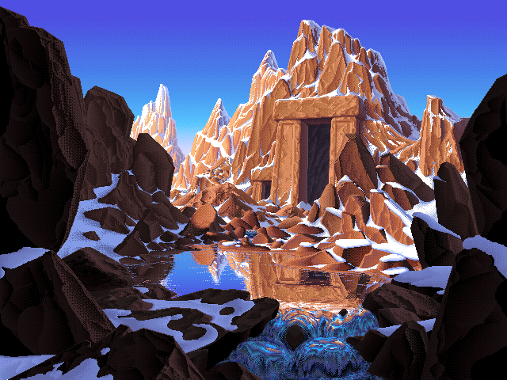
1. pedagogy/master-copy/ref/lw/V19.png 2. moodboards/people_sheet.jpg
2. moodboards/people_sheet.jpg
Bash: Check reference image sizes and tools
cd ~/work/pixelart-studies/moodboards/people; python3 -c "
from PIL import Image;import glob
for f in sorted(glob.glob('*.jpg')): print(Image.open(f).size, f)"; ls ~/work/naturalist/people/photos/Curtis_Skokomish ~/work/naturalist/people/photos/Coast_Salish_blanket; python3 -c "import numpy,scipy,PIL;print(numpy.__version__,scipy.__version__,PIL.__version__)"; ls ~/work/pixelart-studies/pedagogy/*/ | head; ls ~/work/pixelart-studies/elements/*/ -d
# output:
Exit code 1
(960, 652) A_man_lifting_a_trunk_Photogravure_after_Eadweard_Muybridge_.jpg
(960, 574) Albert_Bierstadt_Among_the_Sierra_Nevada_California_Google_A.jpg
(960, 775) Animal_locomotion_LCCN96513693_jpg.jpg
(960, 1128) Bushmen_hunters_cropped_png.jpg
(960, 613) Caspar_David_Friedrich_Monk_by_the_Sea_jpg.jpg
(656, 280) Fan_Kuan_Travelers_Among_Mountains_and_Streams_Signature_jpg.jpg
(960, 770) Fran_ois_Auguste_Biard_Louis_Philippe_au_Cap_Nord_ao_t_1795_.jpg
(960, 791) Georges_de_La_Tour_Newlyborn_infant_Mus_e_des_Beaux_Arts_de_.jpg
(792, 1000) Grey_s_Monument_Newcastle_upon_Tyne_27628617816_jpg.jpg
(960, 619) Hakone_No_11_Hakone_one_of_the_fifty_three_noted_places_on_T.jpg
(960, 718) Jean_Fran_ois_Millet_Gleaners_Google_Art_Project_2_jpg.jpg
(960, 798) Pieter_Bruegel_the_Elder_Children_s_Games_Google_Art_Project.jpg
(960, 683) Pieter_Bruegel_the_Elder_Hunters_in_the_Snow_Winter_Google_A.jpg
(960, 626) Pieter_Bruegel_the_Elder_Landscape_with_the_Fall_of_Icarus_B.jpg
(960, 699) Pieter_Bruegel_the_Elder_The_Harvesters_Google_Art_Project_j.jpg
(960, 680) Pieter_Brueghel_the_Elder_The_Dutch_Proverbs_Google_Art_Proj.jpg
(960, 784) Semi_nude_woman_carrying_a_water_jar_on_head_turning_and_pla.jpg
(886, 1413) Winslow_Homer_Adirondack_Guide_c_1876_jpg.jpg
~/work/naturalist/people/photos/Coast_Salish_blanket:
_sheet.jpg
commons_PaulKane_A_Woman_Weaving_a_Blanket_ROM2005_5163__a05a835d.jpg
commons_Red_Inclusions_JPG_1f9dc172.jpg
commons_Twine_weave_JPG_df09c92b.jpg
sources.tsv
~/work/naturalist/people/photos/Curtis_Skokomish:
_sheet.jpg
commons_A_Skokomish_Camp_LACMA_AC1997_247_9_jpg_2b7b77a3.jpg
openverse_A_Skokomish_Camp_LACMA_AC1997_247_9_8e227bf0.jpg
openverse_Basket_Maker_Skokomish_LACMA_AC1997_247_10_b6e785ca.jpg
openverse_Mat_House_Skokomish_Edward_c807cf97.jpg
sources.tsv
1.26.4 1.14.0 11.1.0
~/work/pixelart-studies/pedagogy/analysis/:
LESSONS.md
img
out
sheets
src
~/work/pixelart-studies/pedagogy/atelier/:
LESSONS.md
__pycache__
ls: -d: No such file or directory
~/work/pixelart-studies/elements/_critic/:
LOG.md
cal_V09_2x.png
cal_V09_bush_7x.png
cal_V09_trunk_7x.png
cal_V19_2x.png
cal_V19_rocks_7x.png
r10
r11
r11_grass_f08-11.png
r11_grass_f23-26.png
r11_grass_f40-43.png
r12
r13
r1_drift_s1_left_8x.png
r2
r3
r3_cobbles_nestled_8x.png
r4
r5
r6
r7
r8
r9
wait.sh
zoom.py
~/work/pixelart-studies/elements/broadleaf/:
__pycache__
bark.py
bl.py
glyphs.py
lw.py
moss.py
palette.py
refs
render.py
s0_copy.py
s1_clump.py
stage0
stage1
tmp
tree.py
~/work/pixelart-studies/elements/channel/:
CRITIQUE.md
LESSONS.md
out
photos
src
study
~/work/pixelart-studies/elements/cobbles/:
CRITIQUE.md
LESSONS.md
__pycache__
bar.py
cobble.py
cobbles_api.py
compare_sheets.py
edges.py
img
materials.py
palette.py
refs
run.sh
scene.py
scratch
stage0_copy.py
stage1.py
stage2.py
stage3.py
stage4.py
stage5.py
stage6.py
stage7.py
stonBash: Fetch reference photos and paintings
mkdir -p ~/work/pixelart-studies/elements/people/{refs,src,stages,sheets}; cd ~/work/pixelart-studies/elements/people/refs; head -40 ~/work/pixelart-studies/tools/imgfetch.py; for q in "Pieter Bruegel Harvesters detail" "Paul Kane Clallam" "Paul Kane Chinook" "Edward Curtis Quinault" "Edward Curtis clam digger" "Curtis Puget Sound woman basket"; do d=$(echo $q|tr ' ' _); timeout 120 python3 ~/work/pixelart-studies/tools/imgfetch.py "$q" -n 10 -o $d --sheet >/dev/null 2>&1; echo "$q $(ls $d 2>/dev/null|wc -l)"; done
# output:
#!/usr/bin/env python3
"""imgfetch: fast, polite reference-image sourcing (Wikimedia Commons + Openverse).
python3 imgfetch.py "cinder cone scoria slope" -n 12 -o refs/cinder
python3 imgfetch.py -f queries.txt -n 8 -o refs # one query per line; subdir per query
options: --src commons,openverse --width 1200 --sheet (writes <out>/_sheet.jpg)
Writes images plus <out>/sources.tsv (file, title, license, author, page url).
Cached: files already present are skipped. Handles 429/5xx with Retry-After backoff.
Parallel downloads (4 workers) with a shared per-host rate limiter (~3 req/s; Wikimedia's media
host is kept to 1 per 2 s and slows further on any 429, since it throttles hard per IP after bursts).
Openverse (mostly Flickr-hosted CC images) is the primary source because it stays fast.
"""
import argparse, concurrent.futures as cf, json, os, re, sys, threading, time, urllib.error, urllib.parse, urllib.request
UA = "pixelart-studies-imgfetch/1.0 (research; contact: local)"
_locks = {}; _last = {}; _glock = threading.Lock()
SLOW_HOSTS = {"upload.wikimedia.org": 2.0} # Wikimedia media host: ~1 req/s or it 429s
def _throttle(host, min_gap=0.34):
min_gap = SLOW_HOSTS.get(host, min_gap)
with _glock:
lk = _locks.setdefault(host, threading.Lock())
with lk:
dt = time.time() - _last.get(host, 0)
if dt < min_gap:
time.sleep(min_gap - dt)
_last[host] = time.time()
def get(url, tries=4, timeout=25):
host = urllib.parse.urlparse(url).netloc
if host == "upload.wikimedia.org":
tries = 2 # fail fast; other sources fill in
for i in range(tries):
_throttle(host)
try:
req = urllib.request.Request(url, headers={"User-Agent": UA})
return urllib.request.urlopen(req, timeout=timeout).read()
except urllib.error.HTTPError as e:
Pieter Bruegel Harvesters detail 0
Paul Kane Clallam 0
Paul Kane Chinook 0
Edward Curtis Quinault 0
Edward Curtis clam digger 0
Curtis Puget Sound woman basket 0Bash: Debug imgfetch failure
cd ~/work/pixelart-studies/elements/people/refs; python3 ~/work/pixelart-studies/tools/imgfetch.py "Paul Kane" -n 6 -o kane --sheet 2>&1 | tail -5 # output: download failed: HTTP Error 429: Too many requests - please contact noc@wikimedia.org to discuss a less disruptive approach or instead use thumbnail images in sizes listed on https://w.wiki/GHai. (0c640b1) 'Paul Kane': 5 images -> kane
Bash: Fetch reference images sequentially
cd ~/work/pixelart-studies/elements/people/refs; for q in "Bruegel Harvesters" "Paul Kane Clallam" "Paul Kane Columbia River" "Edward Curtis Quinault" "Edward Curtis Clayoquot" "Curtis Kwakiutl woman bark" "woman carrying basket tumpline" "Muybridge woman walking" "Muybridge man walking"; do d=$(echo $q|tr ' ' _); python3 ~/work/pixelart-studies/tools/imgfetch.py "$q" -n 10 -o $d --sheet >/dev/null 2>&1; echo "$q $(ls $d 2>/dev/null|wc -l)"; done # output: Bruegel Harvesters 10 Paul Kane Clallam 8 Paul Kane Columbia River 7 Edward Curtis Quinault 9 Edward Curtis Clayoquot 10 Curtis Kwakiutl woman bark 8 woman carrying basket tumpline 11 Muybridge woman walking 9 Muybridge man walking 9
Read: elements/people/refs/Edward_Curtis_Quinault/_sheet.jpgRead: elements/people/refs/Paul_Kane_Clallam/_sheet.jpg(Image withheld: a reference sheet the student deleted as ceremonial or off-topic.) 3. elements/people/refs/Edward_Curtis_Quinault/_sheet.jpg
(Image withheld: a reference sheet the student deleted as ceremonial or off-topic.) 4. elements/people/refs/Paul_Kane_Clallam/_sheet.jpg
Read: elements/people/refs/Edward_Curtis_Clayoquot/_sheet.jpg(Image withheld: a reference sheet the student deleted as ceremonial or off-topic.) 5. elements/people/refs/Edward_Curtis_Clayoquot/_sheet.jpg
Bash: Remove off-topic refs, list others
cd ~/work/pixelart-studies/elements/people/refs; rm -rf Paul_Kane_Clallam Edward_Curtis_Quinault; ls */ | head -80 # output: Bruegel_Harvesters/: _sheet.jpg commons_Pieter_Bruegel_the_Elder_The_Harvesters_Google_A_1dc181da.jpg commons_Pieter_Bruegel_the_Elder_The_Harvesters_Google_A_dfff6b81.jpg commons_The_Harvesters_by_Pieter_Brueghel_the_Elder_at_M_a8948ce7.jpg openverse_Bruegel_the_Elder_Peasant_Wedding_f5e42b8a.jpg openverse_Empty_Benches_TheMET_141new_ffdd3b65.jpg openverse_IMG_3009VG_Jacob_Grimmer_1526_1589_Anvers_La_Moi_b506d78b.jpg openverse_Pieter_Bruegel_the_Elder_The_Harvesters_1565_1110f8de.jpg openverse_Vienna_April_2008_41ac8681.jpg sources.tsv Curtis_Kwakiutl_woman_bark/: _sheet.jpg commons_Kwakiutl_figure_in_costume_jpg_aa0d5703.jpg openverse_Edward_S_Curtis_Kwakiutl_bridal_group_British_Co_cdac019a.jpg openverse_Edward_S_Curtis_Pgwis_Qagyuhl_1914_98fe85e8.jpg openverse_Naida_Proud_Princess_Edward_S_e1475c97.jpg openverse_No_Known_Restrictions_Dancing_to_Restore_an_Ecli_631b68cf.jpg openverse_wasp_buzzing_whir_will_chase_bb41fe87.jpg sources.tsv Edward_Curtis_Clayoquot/: _sheet.jpg commons_Into_the_shadow_Clayoquot_LCCN2015650849_jpg_1cf7160c.jpg commons_Into_the_shadow_Clayoquot_LCCN2015650849_tif_184676e3.jpg commons_Self_portrait_of_Edward_Sheriff_Curtis_jpg_41713eec.jpg openverse_A_Clayoquot_fisherman_catching_flounders_and_oth_fe297f6e.jpg openverse_Clayoquot_Maiden_Edward_S_Curtis_45e35359.jpg openverse_Clayoquot_Woman_Edward_S_Curtis_812ebabd.jpg openverse_Edward_S_Curtis_Clayoquot_girl_British_Columbia__f01801a5.jpg openverse_Whaler_Clayoquot_Edward_S_Curtis_a51c3d05.jpg sources.tsv Muybridge_man_walking/: _sheet.jpg commons_A_naked_man_speed_walking_Collotype_after_Muybri_8f4bb4d0.jpg commons_A_naked_man_walking_Collotype_after_Muybridge_18_d35f6410.jpg openverse_Animal_locomotion_Plate_48_c5354139.jpg openverse_Animal_locomotion_Plate_52_6da5d3a3.jpg openverse_Draped_woman_walking_and_carrying_child_on_her_l_8edeac26.jpg openverse_Eadweard_Muybridge_Woman_walking_downstairs_late_25224c6a.jpg openverse_Man_walking_and_taking_off_a_hat_rbm_QP301M8_188_03067eea.jpg sources.tsv Muybridge_woman_walking/: _sheet.jpg commons_A_naked_woman_walking_Collotype_after_Muybridge__9b6dab35.jpg commons_A_naked_woman_walking_Collotype_after_Muybridge__be0c3a0f.jpg openverse_Animal_locomotion_Plate_52_6da5d3a3.jpg openverse_Eadweard_Muybridge_Woman_walking_downstairs_late_25224c6a.jpg openverse_From_Motion_to_Colour_efb713f2.jpg openverse_Woman_walking_carrying_a_child_and_turning_aroun_8e472f4c.jpg openverse_Woman_walking_carrying_a_child_and_turning_aroun_efe65ac0.jpg sources.tsv Paul_Kane_Columbia_River/: _sheet.jpg commons_Paul_Simon_2007_jpg_1ac90e9b.jpg commons_Paul_Simon_at_the_9_30_Club_b_jpg_0630d277.jpg commons_Paul_Simonon_mg_6701b_edit_jpg_2994aefe.jpg openverse_Paul_Kane_Hilde_Thunem_Emily_Taylor_Michael_Habe_8b2f7082.jpg openverse_Paul_Kane_Sabine_Dolderer_c32d3414.jpg sources.tsv kane/: _sheet.jpg commons_Paul_Simon_2007_jpg_1ac90e9b.jpg commons_Paul_Simon_at_the_9_30_Club_b_jpg_0630d277.jpg commons_Paul_Simonon_mg_6701b_edit_jpg_2994aefe.
Read: elements/people/refs/woman_carrying_basket_tumpline/_sheet.jpgRead: elements/people/refs/Curtis_Kwakiutl_woman_bark/_sheet.jpg(Image withheld: a reference sheet the student deleted as ceremonial or off-topic.) 6. elements/people/refs/Curtis_Kwakiutl_woman_bark/_sheet.jpg
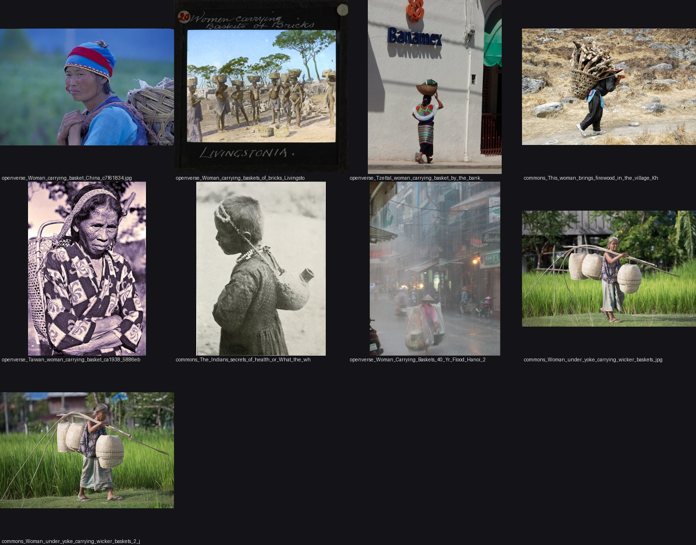
7. elements/people/refs/woman_carrying_basket_tumpline/_sheet.jpgBash: Prune ceremonial and off-topic refs
cd ~/work/pixelart-studies/elements/people/refs; rm -rf Curtis_Kwakiutl_woman_bark kane Paul_Kane_Columbia_River Edward_Curtis_Clayoquot/*Whaler* Edward_Curtis_Clayoquot/*Self_portrait*; ls # output: Bruegel_Harvesters Edward_Curtis_Clayoquot Muybridge_man_walking Muybridge_woman_walking woman_carrying_basket_tumpline
Read: elements/people/refs/Bruegel_Harvesters/_sheet.jpg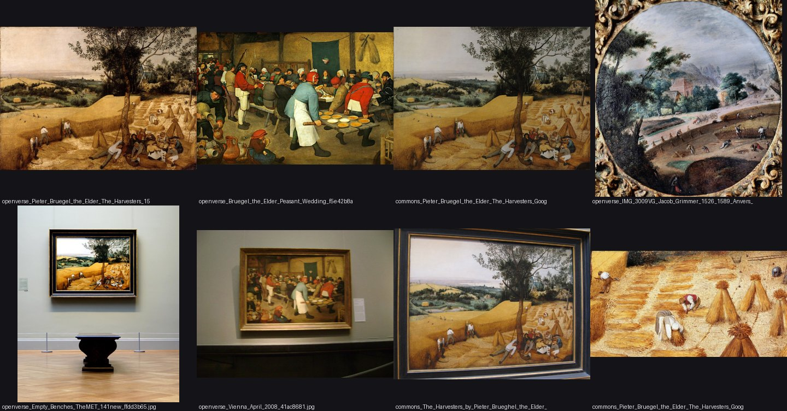
8. elements/people/refs/Bruegel_Harvesters/_sheet.jpgBash: List ref sizes
cd ~/work/pixelart-studies/elements/people/refs; python3 -c "
from PIL import Image;import glob
for f in sorted(glob.glob('*/*.jpg')): print(Image.open(f).size, f)" | grep -v _sheet
# output:
(1280, 689) Bruegel_Harvesters/commons_Pieter_Bruegel_the_Elder_The_Harvesters_Google_A_1dc181da.jpg
(1280, 932) Bruegel_Harvesters/commons_Pieter_Bruegel_the_Elder_The_Harvesters_Google_A_dfff6b81.jpg
(1280, 982) Bruegel_Harvesters/commons_The_Harvesters_by_Pieter_Brueghel_the_Elder_at_M_a8948ce7.jpg
(1024, 689) Bruegel_Harvesters/openverse_Bruegel_the_Elder_Peasant_Wedding_f5e42b8a.jpg
(843, 1024) Bruegel_Harvesters/openverse_Empty_Benches_TheMET_141new_ffdd3b65.jpg
(973, 1024) Bruegel_Harvesters/openverse_IMG_3009VG_Jacob_Grimmer_1526_1589_Anvers_La_Moi_b506d78b.jpg
(1024, 745) Bruegel_Harvesters/openverse_Pieter_Bruegel_the_Elder_The_Harvesters_1565_1110f8de.jpg
(1024, 768) Bruegel_Harvesters/openverse_Vienna_April_2008_41ac8681.jpg
(1280, 1057) Edward_Curtis_Clayoquot/commons_Into_the_shadow_Clayoquot_LCCN2015650849_jpg_1cf7160c.jpg
(1280, 1057) Edward_Curtis_Clayoquot/commons_Into_the_shadow_Clayoquot_LCCN2015650849_tif_184676e3.jpg
(540, 1023) Edward_Curtis_Clayoquot/openverse_A_Clayoquot_fisherman_catching_flounders_and_oth_fe297f6e.jpg
(709, 1024) Edward_Curtis_Clayoquot/openverse_Clayoquot_Maiden_Edward_S_Curtis_45e35359.jpg
(717, 1024) Edward_Curtis_Clayoquot/openverse_Clayoquot_Woman_Edward_S_Curtis_812ebabd.jpg
(713, 1023) Edward_Curtis_Clayoquot/openverse_Edward_S_Curtis_Clayoquot_girl_British_Columbia__f01801a5.jpg
(1280, 914) Muybridge_man_walking/commons_A_naked_man_speed_walking_Collotype_after_Muybri_8f4bb4d0.jpg
(1280, 911) Muybridge_man_walking/commons_A_naked_man_walking_Collotype_after_Muybridge_18_d35f6410.jpg
(1024, 815) Muybridge_man_walking/openverse_Animal_locomotion_Plate_48_c5354139.jpg
(1024, 813) Muybridge_man_walking/openverse_Animal_locomotion_Plate_52_6da5d3a3.jpg
(633, 1023) Muybridge_man_walking/openverse_Draped_woman_walking_and_carrying_child_on_her_l_8edeac26.jpg
(1024, 544) Muybridge_man_walking/openverse_Eadweard_Muybridge_Woman_walking_downstairs_late_25224c6a.jpg
(1023, 824) Muybridge_man_walking/openverse_Man_walking_and_taking_off_a_hat_rbm_QP301M8_188_03067eea.jpg
(1280, 910) Muybridge_woman_walking/commons_A_naked_woman_walking_Collotype_after_Muybridge__9b6dab35.jpg
(1280, 901) Muybridge_woman_walking/commons_A_naked_woman_walking_Collotype_after_Muybridge__be0c3a0f.jpg
(1024, 813) Muybridge_woman_walking/openverse_Animal_locomotion_Plate_52_6da5d3a3.jpg
(1024, 544) Muybridge_woman_walking/openverse_Eadweard_Muybridge_Woman_walking_downstairs_late_25224c6a.jpg
(1024, 742) Muybridge_woman_walking/openverse_From_Motion_to_Colour_efb713f2.jpg
(684, 1024) Muybridge_woman_walking/openverse_Woman_walking_carrying_a_child_and_turning_aroun_8e472f4c.jpg
(684, 1024) Muybridge_woman_walking/openverse_Woman_walking_carrying_a_child_and_turning_aroun_efe65ac0.jpg
(1280, 1722) woman_carrying_basket_tumpline/commons_The_Indians_secrets_of_health_or_What_the_white__bca411c2.jpg
(1280, 857) woman_carrying_basket_tumpline/commons_This_woman_brings_firewood_in_the_village_Khare__cd7a0ee0.jpg
(1280, 853) woman_carryiBash: Crop Bruegel lunch group area
cd ~/work/pixelart-studies/elements/people/refs/Bruegel_Harvesters; python3 -c "
from PIL import Image
im=Image.open('commons_Pieter_Bruegel_the_Elder_The_Harvesters_Google_A_dfff6b81.jpg'); print(im.size)
im.crop((600,450,1280,932)).save('(manager scratchpad)/h1.png')"
# output:
(1280, 932)Read: (manager scratchpad)/h1.png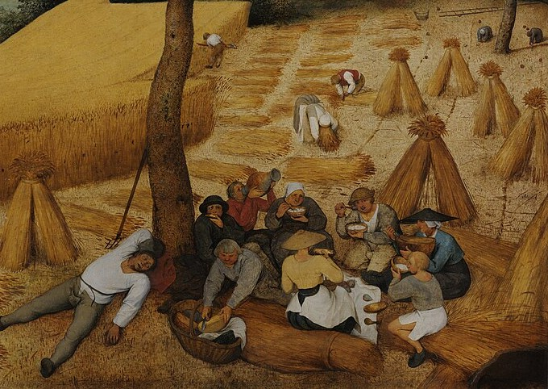
9. (manager scratchpad)/h1.pngBash: Peek at willow palette and helpers
cd ~/work/pixelart-studies/elements/willow; sed -n 1,80p palette.py; grep -n "^def " wpaint.py context.py | head -40
# output:
"""Willow palettes: (material, step) -> RGB for a season, an hour and a depth.
Light as hue shift: every ramp walks from a cool dark (tinted by the sky's ambient colour) to a warm
light (tinted by the sun). Depth lifts and cools the darks and leaves the lights nearly alone
(measured on Ferrari by the master-copy study). Silver is its own ramp: the undersides of willow
leaves, grey-green to pale silver, cooler than the green.
"""
import numpy as np
from wpaint import SKY, GRAVEL, LEAF, SILVER, STEM, WATER, GRASS, EARTH, FAR
LEAFS = 10
def _lin(c):
c = np.asarray(c, float) / 255
return np.where(c > 0.04045, ((c + 0.055) / 1.055) ** 2.4, c / 12.92)
def _srgb(l):
l = np.clip(l, 0, 1)
return np.where(l > 0.0031308, 1.055 * l ** (1 / 2.4) - 0.055, 12.92 * l) * 255
def to_lab(c):
l = _lin(c)
M1 = np.array([[0.4122214708, 0.5363325363, 0.0514459929], [0.2119034982, 0.6806995451, 0.1073969566],
[0.0883024619, 0.2817188376, 0.6299787005]])
lms = np.cbrt(M1 @ l)
M2 = np.array([[0.2104542553, 0.7936177850, -0.0040720468], [1.9779984951, -2.4285922050, 0.4505937099],
[0.0259040371, 0.7827717662, -0.8086757660]])
return M2 @ lms
def to_rgb(lab):
M2i = np.array([[1, 0.3963377774, 0.2158037573], [1, -0.1055613458, -0.0638541728], [1, -0.0894841775, -1.2914855480]])
lms = (M2i @ lab) ** 3
M1i = np.array([[4.0767416621, -3.3077115913, 0.2309699292], [-1.2684380046, 2.6097574011, -0.3413193965],
[-0.0041960863, -0.7034186147, 1.7076147010]])
return tuple(int(round(v)) for v in _srgb(M1i @ lms))
def mix(a, b, t):
return to_rgb(to_lab(a) * (1 - t) + to_lab(b) * t)
def ramp(dark, light, n, sun, amb, warm=0.25, cool=0.3):
"""n steps from dark to light in OKLab; lights pulled toward the sun colour, darks toward ambient."""
out = []
for i in range(n):
t = i / max(n - 1, 1)
c = to_lab(dark) * (1 - t) + to_lab(light) * t
c = c * (1 - warm * t ** 1.5) + to_lab(sun) * warm * t ** 1.5 if warm else c
c = c * (1 - cool * (1 - t) ** 2) + to_lab(amb) * cool * (1 - t) ** 2 if cool else c
out.append(to_rgb(c))
return out
SEASONS = {
# lit base (dark, light) lit leaves (mid, top) silver (lo, hi) twig (dark, light) shadow (dark, mark)
"summer": dict(base=((14, 36, 18), (30, 62, 30)), leaf=((92, 132, 56), (168, 200, 96)), silver=((120, 142, 128), (196, 214, 200)),
twig=((50, 36, 30), (150, 120, 84)), shadow=((6, 24, 14), (36, 66, 42))),
"spring": dict(base=((20, 42, 16), (42, 74, 28)), leaf=((118, 158, 48), (196, 222, 98)), silver=((140, 160, 132), (208, 224, 196)),
twig=((70, 40, 32), (170, 110, 70)), shadow=((10, 26, 14), (56, 82, 50))),
"silvery": dict(base=((16, 32, 26), (36, 58, 46)), leaf=((104, 128, 96), (170, 190, 150)), silver=((136, 156, 150), (216, 228, 222)),
twig=((54, 40, Write: elements/people/src/util.py
"""Small helpers: OKLab, upscaling, labelled grids, side-by-side panels."""
import numpy as np
from PIL import Image, ImageDraw, ImageFont
def _lin(c):
c = np.asarray(c, float) / 255
return np.where(c > 0.04045, ((c + 0.055) / 1.055) ** 2.4, c / 12.92)
def _srgb(l):
l = np.clip(l, 0, 1)
return np.where(l > 0.0031308, 1.055 * l ** (1 / 2.4) - 0.055, 12.92 * l) * 255
_M1 = np.array([[0.4122214708, 0.5363325363, 0.0514459929], [0.2119034982, 0.6806995451, 0.1073969566],
[0.0883024619, 0.2817188376, 0.6299787005]])
_M2 = np.array([[0.2104542553, 0.7936177850, -0.0040720468], [1.9779984951, -2.4285922050, 0.4505937099],
[0.0259040371, 0.7827717662, -0.8086757660]])
_M2i = np.linalg.inv(_M2)
_M1i = np.linalg.inv(_M1)
def hexrgb(h):
h = h.lstrip('#')
return tuple(int(h[i:i + 2], 16) for i in (0, 2, 4))
def to_lab(c):
if isinstance(c, str):
c = hexrgb(c)
return _M2 @ np.cbrt(_M1 @ _lin(c))
def to_rgb(lab):
lms = (_M2i @ np.asarray(lab, float)) ** 3
return tuple(int(round(v)) for v in _srgb(_M1i @ lms))
def lab_img(rgb):
"""HxWx3 uint8 -> HxWx3 OKLab."""
l = _lin(rgb.reshape(-1, 3))
return (np.cbrt(l @ _M1.T) @ _M2.T).reshape(rgb.shape)
def mix(a, b, t):
return to_rgb(to_lab(a) * (1 - t) + to_lab(b) * t)
def up(img, k):
return np.repeat(np.repeat(img, k, 0), k, 1)
def save(img, path, k=1):
Image.fromarray(up(np.asarray(img, np.uint8), k)).save(path)
_FONTS = {}
def font(sz=12):
if sz not in _FONTS:
for p in ["/System/Library/Fonts/Supplemental/Arial.ttf", "/System/Library/Fonts/Helvetica.ttc",
"/Library/Fonts/Arial.ttf"]:
try:
_FONTS[sz] = ImageFont.truetype(p, sz)
break
except Exception:
pass
else:
_FONTS[sz] = ImageFont.load_default()
return _FONTS[sz]
def grid(cells, cols, labels=None, rowlabels=None, collabels=None, pad=6, bg=(24, 24, 28), title=None,
fs=12, rowlab_w=None):
"""cells: list of HxWx3 uint8 (already upscaled). Labels under each cell."""
cw = max(c.shape[1] for c in cells)
ch = max(c.shape[0] for c in cells)
rows = (len(cells) + cols - 1) // cols
lab_h = fs + 6 if labels else 0
rl = rowlab_w if rowlab_w is not None else (max(len(s) for s in rowlabels) * fs * 0.6 + 10 if rowlabels else 0)
rl = int(rl)
top = (fs + 10 if collabels else 0) + (fs + 14 if title else 0)
W = rl + cols * (cw + pad) + pad
H = top + rows * (ch + lab_h + pad) + pad
im = Image.new('RGB', (W, H), bg)
d = ImageDraw.Draw(im)
y0 = pad
if title:
d.text((pad, pad), title, fill=(230, 230, 230), font=font(fs + 2))
y0 += fs + 14
if collabels:
for i, s in enumerate(collabels):
d.text((rl + pad + i * (cw + pad), y0), s, fill=(200, 200, 200), font=font(fs))
for i, c in enumerate(cells):
r, q = divmod(i, cols)
x = rl + pad + q * (cw + pad)
y = top + pad + r * (ch + lab_h + pad)
im.paste(Image.fromarray(np.asarray(c, np.uint8)), (x, y))
if labels and labels[i]:
d.text((x, y + ch + 2), labels[i], fill=(190, 190, 190), font=font(fs))
if rowlabels:
for r, s in enumerate(rowlabels):
d.text((pad, top + pad + r * (ch + lab_h + pad) + ch // 2 - fs // 2), s, fill=(200, 200, 200),
font=font(fs))
return np.asarray(im)
def side(panels, labels=None, height=None, pad=8, bg=(24, 24, 28), fs=13):
ps = []
for p in panels:
p = np.asarray(p, np.uint8)
if height and p.shape[0] != height:
k = height / p.shape[0]
p = np.asarray(Image.fromarray(p).resize((max(1, int(p.shape[1] * k)), height), Image.NEAREST))
ps.append(p)
H = max(p.shape[0] for p in ps) + (fs + 8 if labels else 0) + 2 * pad
W = sum(p.shape[1] for p in ps) + pad * (len(ps) + 1)
im = Image.new('RGB', (W, H), bg)
d = ImageDraw.Draw(im)
x = pad
for i, p in enumerate(ps):
im.paste(Image.fromarray(p), (x, pad))
if labels:
d.text((x, pad + p.shape[0] + 3), labels[i], fill=(200, 200, 200), font=font(fs))
x += p.shape[1] + pad
return np.asarray(im)
def vstack(imgs, pad=8, bg=(24, 24, 28)):
W = max(i.shape[1] for i in imgs)
out = []
for i in imgs:
if i.shape[1] < W:
i = np.concatenate([i, np.full((i.shape[0], W - i.shape[1], 3), bg, np.uint8)], 1)
out.append(i)
out.append(np.full((pad, W, 3), bg, np.uint8))
return np.concatenate(out[:-1], 0)
Write: elements/people/src/pal.py
"""Materials and palettes for people.
Index canvas convention: value = mat * 8 + step, step 0..4 (0 core/contact dark, 1 shadow,
2 halftone, 3 light, 4 highlight). 0 = empty.
Every ramp walks in OKLab from a cool dark (pulled toward the sky's ambient colour) to a warm
light (pulled toward the sun), as the willow and master-copy students found. Base colours come
from the naturalist's guide 06 (their suggestions from the materials, not measured) and from
looking at the Curtis photographs of bark garments.
"""
import numpy as np
from util import to_lab, to_rgb, hexrgb
NSTEP = 5
MATS = ['_', 'SKIN', 'HAIR', 'BARK', 'BARKT', 'HIDE', 'FUR', 'WOOL', 'BAND', 'STRAW', 'WOOD', 'STONE',
'DARKB', 'FISH', 'SILVER', 'SHELL', 'LEAF', 'CEDAR', 'HIDED', 'NET', 'ROOT']
M = {n: i for i, n in enumerate(MATS)}
# (dark, mid, light) anchors per material; the ramp is built through these.
BASE = {
'SKIN': ('#3a2218', '#8a5a3e', '#c89468'), # warm brown, sun-darkened
'HAIR': ('#0c0a0c', '#1c1a20', '#3c3a46'), # black, blue-grey sheen
'BARK': ('#3a2216', '#8a5a3c', '#b8845a'), # cedar bark, raw red-brown (06: #8A5A3C)
'BARKT': ('#4a3620', '#9a7a4e', '#cfae78'), # shredded / twined tan (06: #B08A5A)
'HIDE': ('#4a3422', '#a8865e', '#dcc096'), # buckskin (06: #C9A77C)
'HIDED': ('#2e2016', '#6b5038', '#9a7a58'), # smoked hide (06: #8B6B4A)
'FUR': ('#2a241e', '#6a5e50', '#a0927c'), # grey-brown fur robe
'WOOL': ('#6a6258', '#c8bea6', '#f0e8d2'), # cream wool blanket (06: #E8E0C8)
'BAND': ('#3a1a12', '#7a3a26', '#a8583a'), # alder-dyed red-brown band
'DARKB': ('#141214', '#2a2626', '#4a4440'), # black band
'STRAW': ('#4a4028', '#a8965c', '#dccc8e'), # cattail, bear grass, basket (06: #C8B57A)
'WOOD': ('#2a1c14', '#6a4a30', '#a07850'),
'STONE': ('#28282c', '#5c5c60', '#96948e'),
'FISH': ('#4a1410', '#a8382a', '#e07058'), # salmon flesh
'SILVER':('#303a44', '#8a969c', '#d8e0e0'), # fish skin
'SHELL': ('#6a665c', '#d8d2c0', '#fcf8ea'), # dentalium
'LEAF': ('#142014', '#3a5a2a', '#7a9a4a'),
'CEDAR': ('#5a2a1a', '#b86a48', '#e8a078'), # fresh-split cedar, salmon-pink/orange
'NET': ('#2a2418', '#6a5c40', '#9a8a64'), # nettle-fibre net, cordage
'ROOT': ('#3a2a1a', '#8a6a44', '#c0a070'), # camas bulbs, roots
}
HOURS = {
# sun colour ambient key sky (top, horizon)
'noon': dict(sun='#fff8e8', amb='#8aa4cc', key=1.0, sky=('#78a8e0', '#d4e4f0')),
'morning': dict(sun='#ffecc8', amb='#8898c8', key=0.95, sky=('#94bce8', '#e4e8ee')),
'golden': dict(sun='#ffc27a', amb='#6e6ea8', key=0.9, sky=('#7896d2', '#f8d4a8')),
'overcast': dict(sun='#e0e4e4', amb='#98a0a8', key=0.88, sky=('#b4bac0', '#d6d8da')),
'dusk': dict(sun='#f0967a', amb='#504682', key=0.66, sky=('#46468c', '#eca08a')),
'night': dict(sun='#ff9a40', amb='#1e2440', key=0.55, sky=('#0e1224', '#1e2438')), # "sun" = firelight
}
def ramp(mat, hour='noon', depth=0.0, haze=None):
d, m, l = (to_lab(hexrgb(c)) for c in BASE[mat])
h = HOURS[hour]
sun, amb = to_lab(hexrgb(h['sun'])), to_lab(hexrgb(h['amb']))
key = h['key']
# five steps: core, shadow, halftone, light, highlight
pts = [d * 0.85 + m * 0.15 - np.array([0.03, 0, 0]), # core darker than anchor
d * 0.35 + m * 0.65,
m * 0.7 + l * 0.3,
l,
l + (l - m) * 0.35 + np.array([0.04, 0, 0])]
out = []
for i, c in enumerate(pts):
t = i / (NSTEP - 1)
warm = 0.22 * t ** 1.4
cool = 0.30 * (1 - t) ** 2
c = c * (1 - warm - cool) + sun * warm + amb * cool
c = c.copy()
c[0] *= key if i < 3 else (key * 0.6 + 0.4 * key ** 0.5)
if depth > 0:
hz = to_lab(hexrgb(haze or h['sky'][1]))
# darks lift toward the haze a lot, lights barely (master-copy measurement)
a = depth * (0.85 - 0.55 * t)
c = c * (1 - a) + hz * a
out.append(to_rgb(c))
return out
def palette(hour='noon', depth=0.0, haze=None):
"""Return lut: (len(MATS)*8, 3) uint8."""
lut = np.zeros((len(MATS) * 8, 3), np.uint8)
for n in MATS[1:]:
r = ramp(n, hour, depth, haze)
for s in range(NSTEP):
lut[M[n] * 8 + s] = r[s]
return lut
def grey_lut():
lut = palette('noon')
lab = np.array([to_lab(c) for c in lut])
g = np.array([to_rgb([L, 0, 0]) for L in lab[:, 0]])
g[0] = 0
return g.astype(np.uint8)
Write: elements/people/src/fig.py
"""Figures: a 3D posed skeleton, dressed in capsules, rasterized straight into an index canvas.
Units: an adult standing is ~1.0 tall. World axes x right, y up, z toward the viewer.
Camera: orthographic, elevation e (0 = eye level, 30 = the iso view). Screen up
su = y cos e - z sin e; depth toward viewer dz = z cos e + y sin e.
Everything is a capsule with a radius profile (limbs, torso halves, garments as larger
capsules that swallow the limbs inside them, props), z-buffered per pixel at the target
resolution, so a 6 px figure is rasterized as a 6 px figure, never downsampled. Narrow
forms (radius under ~0.7 px) are drawn as clean Bresenham runs of their axis, so a 1 px arm
or spear is a clean line rather than broken coverage.
"""
import math
import numpy as np
from pal import M
D2R = math.pi / 180
def v3(*a):
return np.array(a, float)
def nrm(v):
n = np.linalg.norm(v)
return v / n if n > 1e-9 else v
# ----------------------------------------------------------------------------------------------
# body proportions
def proportions(age='adult', sex='f', size_px=24):
"""Segment lengths in units of adult height. Small figures get a larger head (readability),
as every sprite artist does; the head is ~1/7.5 of height in life, ~1/6 at 12 px, ~1/5 at 6 px."""
P = dict(thigh=0.245, shin=0.235, ankle=0.035, torso=0.30, neck=0.04, head=0.13,
sh=0.115, hip=0.08, uarm=0.17, farm=0.15, foot=0.075, stature=1.0,
r_torso=0.068, r_thigh=0.052, r_shin=0.038, r_uarm=0.031, r_farm=0.026, girth=1.0)
if sex == 'f':
P.update(stature=0.94, sh=0.105, hip=0.085, r_uarm=0.028, r_farm=0.023)
if sex == 'm':
P.update(stature=1.0, sh=0.12, r_torso=0.072, r_uarm=0.033)
if age == 'child': # about 7-9 years: 4.5-5 heads
P.update(stature=0.62, head=0.16, thigh=0.215, shin=0.2, torso=0.28, sh=0.10, hip=0.075, uarm=0.16,
farm=0.14, r_torso=0.07, r_thigh=0.05, r_uarm=0.03, r_farm=0.026)
if age == 'small': # about 3-4 years
P.update(stature=0.48, head=0.2, thigh=0.19, shin=0.17, torso=0.27, sh=0.1, hip=0.08, uarm=0.15,
farm=0.13, r_torso=0.078, r_thigh=0.058, r_uarm=0.033, r_farm=0.03)
if age == 'elder':
P.update(stature=P['stature'] * 0.97)
# head exaggeration at small pixel sizes (in figure-relative units)
px = size_px
boost = 1.0 + 0.45 * np.clip((20 - px) / 14, 0, 1)
P['head'] *= boost
# limbs thicken slightly at small sizes so they survive (they are drawn as >=1px anyway)
return P
# ----------------------------------------------------------------------------------------------
# skeleton
JOINTS = ['pelvis', 'chest', 'neck', 'head', 'shL', 'shR', 'elL', 'elR', 'haL', 'haR',
'hpL', 'hpR', 'knL', 'knR', 'anL', 'anR', 'toL', 'toR']
def default_pose():
return dict(pitch=0.0, roll=0.0, twist=0.0, headp=0.0, headyaw=0.0,
hipL=0.0, hipR=0.0, knL=0.0, knR=0.0, habL=3.0, habR=3.0,
shL=0.0, shR=0.0, elL=8.0, elR=8.0, sabL=6.0, sabR=6.0,
footL=0.0, footR=0.0, seat=None, bob=0.0, dx=0.0, ground=True)
def fk(pose, P):
"""Forward kinematics in the body frame (f forward, y up, l body's left). Returns dict of
3D points (f, y, l) with the lowest ground contact at y = 0 (or pelvis on the seat)."""
p = default_pose()
p.update(pose)
pit = p['pitch'] * D2R
roll = p['roll'] * D2R
twist = p['twist'] * D2R
up = v3(math.sin(pit), math.cos(pit), 0) # trunk axis
fw = v3(math.cos(pit), -math.sin(pit), 0) # trunk forward
lat = v3(0, 0, 1)
# roll: lean sideways (rotate up/lat about fw)
if roll:
up = nrm(up * math.cos(roll) + lat * math.sin(roll))
lat = nrm(np.cross(fw, up)) * -1 if False else nrm(lat * math.cos(roll) - v3(*(up * 0)) - v3(0, 1, 0) * math.sin(roll) * 0 + v3(0, -math.sin(roll), 0))
J = {}
pel = v3(p['dx'], 0, 0)
J['pelvis'] = pel
chest = pel + up * P['torso']
J['chest'] = chest
hp = p['headp'] * D2R + pit * 0.3
hup = v3(math.sin(hp), math.cos(hp), 0)
J['neck'] = chest + nrm(up + hup) * P['neck']
J['head'] = J['neck'] + hup * P['head'] * 0.5
J['headup'] = hup
# shoulders with twist about the trunk axis
tl = lat * math.cos(twist) + fw * math.sin(twist)
tf = fw * math.cos(twist) - lat * math.sin(twist)
for s, sg in (('L', 1), ('R', -1)):
sh = chest - up * 0.02 + tl * P['sh'] * sg
J['sh' + s] = sh
a = p['sh' + s] * D2R
b = p['sab' + s] * D2R
c = p['el' + s] * D2R
d = -up * math.cos(a) + tf * math.sin(a)
perp = up * math.sin(a) + tf * math.cos(a)
d1 = nrm(d * math.cos(b) + tl * sg * math.sin(b))
el = sh + d1 * P['uarm']
d2 = nrm(d1 * math.cos(c) + perp * math.sin(c))
J['el' + s] = el
J['ha' + s] = el + d2 * P['farm']
# legs relative to world vertical
for s, sg in (('L', 1), ('R', -1)):
hj = pel + lat * P['hip'] * sg
J['hp' + s] = hj
h = p['hip' + s] * D2R
k = p['kn' + s] * D2R
ab = p['hab' + s] * D2R
td = nrm(v3(math.sin(h), -math.cos(h), 0) * math.cos(ab) + lat * sg * math.sin(ab))
kn = hj + td * P['thigh']
sd = nrm(v3(math.sin(h - k), -math.cos(h - k), 0) * math.cos(ab) + lat * sg * math.sin(ab) * 0.5)
an = kn + sd * P['shin']
J['kn' + s] = kn
J['an' + s] = an
fa = p['foot' + s] * D2R # foot pitch (toe down positive)
J['to' + s] = an + v3(math.cos(fa), -math.sin(fa) - 0.25, 0) * P['foot']
# grounding
if p['seat'] is not None:
shift = p['seat'] + 0.05 - J['pelvis'][1]
else:
cands = [J['anL'][1] - P['ankle'], J['anR'][1] - P['ankle'], J['toL'][1] - 0.012, J['toR'][1] - 0.012,
J['knL'][1] - 0.04, J['knR'][1] - 0.04, J['pelvis'][1] - 0.07]
shift = -min(cands)
shift += p['bob']
for k in list(J):
if k != 'headup':
J[k] = J[k] + v3(0, shift, 0)
J['_up'] = up
J['_fw'] = fw
J['_lat'] = tl
return J
# ----------------------------------------------------------------------------------------------
# primitives
class Prim:
__slots__ = ('a', 'b', 'r0', 'r1', 'mat', 'prof', 'caps', 'side', 'tag', 'clip', 'stepmod', 'thin', 'bias',
'pattern', 'minw')
def __init__(self, a, b, r0, r1=None, mat='SKIN', prof='lin', caps=True, side=0, tag='', clip=None,
stepmod=0, thin=True, bias=0.0, pattern=None, minw=1):
self.a, self.b = np.asarray(a, float), np.asarray(b, float)
self.r0 = r0
self.r1 = r0 if r1 is None else r1
self.mat, self.prof, self.caps, self.side, self.tag = mat, prof, caps, side, tag
self.clip, self.stepmod, self.thin, self.bias, self.pattern, self.minw = clip, stepmod, thin, bias, pattern, minw
def to_world(pt, facing, origin):
"""body frame (f, y, l) -> world (x, y, z). facing in degrees: 0 = facing screen right,
90 = facing the viewer, 180 = left, 270 = away."""
th = facing * D2R
f = v3(math.cos(th), 0, math.sin(th))
l = v3(math.sin(th), 0, -math.cos(th))
return origin + f * pt[0] + v3(0, pt[1], 0) + l * pt[2]
# ----------------------------------------------------------------------------------------------
# rasterizer
class Canvas:
"""An index canvas with z-buffer and normal buffer, in pixels (y down)."""
def __init__(self, w, h, elev=10.0):
self.w, self.h = w, h
self.idx = np.zeros((h, w), np.int16)
self.z = np.full((h, w), -1e9)
self.n = np.zeros((h, w, 3))
self.part = np.full((h, w), -1, np.int32)
self.stepmod = np.zeros((h, w), np.int8)
self.fig = np.full((h, w), -1, np.int32)
self.pat = np.zeros((h, w), np.float32)
self.e = elev * D2R
self.nparts = 0
def project(self, P, ox, oy, scale):
"""world point -> (sx, sy, depth) in pixels."""
ce, se = math.cos(self.e), math.sin(self.e)
su = P[1] * ce - P[2] * se
dz = P[2] * ce + P[1] * se
return np.array([ox + P[0] * scale, oy - su * scale, dz * scale])
def unproject_dir(self, v):
"""camera-space normal (x right, y up(screen), z toward viewer) -> world."""
ce, se = math.cos(self.e), math.sin(self.e)
x, yu, zc = v[..., 0], v[..., 1], v[..., 2]
wy = yu * ce + zc * se
wz = -yu * se + zc * ce
return np.stack([x, wy, wz], -1)
def draw(self, prim, ox, oy, scale, figid=0):
A = self.project(prim.a, ox, oy, scale)
B = self.project(prim.b, ox, oy, scale)
r0, r1 = prim.r0 * scale, prim.r1 * scale
rm = max(r0, r1)
pid = self.nparts
self.nparts += 1
x0 = int(math.floor(min(A[0], B[0]) - rm - 1))
x1 = int(math.ceil(max(A[0], B[0]) + rm + 1))
y0 = int(math.floor(min(A[1], B[1]) - rm - 1))
y1 = int(math.ceil(max(A[1], B[1]) + rm + 1))
x0, y0 = max(x0, 0), max(y0, 0)
x1, y1 = min(x1, self.w - 1), min(y1, self.h - 1)
if x1 < x0 or y1 < y0:
return
ys, xs = np.mgrid[y0:y1 + 1, x0:x1 + 1]
px, py = xs + 0.5, ys + 0.5
d = B[:2] - A[:2]
L2 = d @ d
if L2 < 1e-9:
t = np.zeros_like(px)
else:
t = ((px - A[0]) * d[0] + (py - A[1]) * d[1]) / L2
tc = np.clip(t, 0, 1)
if prim.prof == 'spindle':
r = r0 + (r1 - r0) * np.sin(np.pi * tc) ** 0.7
elif prim.prof == 'bell': # flares near the far end (capes, skirts)
r = r0 + (r1 - r0) * tc ** 0.7
else:
r = r0 + (r1 - r0) * tc
cx = A[0] + d[0] * tc
cy = A[1] + d[1] * tc
ox_, oy_ = px - cx, py - cy
dist2 = ox_ ** 2 + oy_ ** 2
inside = dist2 <= (r + prim.bias) ** 2
if not prim.caps:
inside &= (t >= -0.02) & (t <= 1.02)
# thin forms: a clean Bresenham run of the axis
thin_mask = np.zeros_like(inside)
if prim.thin and rm < 0.75:
for (lx, ly) in bresenham(A[0], A[1], B[0], B[1]):
if y0 <= ly <= y1 and x0 <= lx <= x1:
thin_mask[ly - y0, lx - x0] = True
inside |= thin_mask
if prim.clip is not None:
inside &= prim.clip(xs, ys)
if not inside.any():
return
rr = np.maximum(r, 0.5)
zc2 = np.maximum(rr ** 2 - dist2, 0)
zs = np.sqrt(zc2)
depth = A[2] + (B[2] - A[2]) * tc + zs
# camera-space normal
nx = ox_ / rr
ny = -oy_ / rr
nz = zs / rr
# thin lines get a normal facing across the axis toward the light-neutral viewer
nn = np.stack([nx, ny, nz], -1)
ln = np.linalg.norm(nn, axis=-1, keepdims=True)
nn = np.where(ln > 1e-6, nn / np.maximum(ln, 1e-6), np.array([0, 0, 1.0]))
wn = self.unproject_dir(nn)
sub = (slice(y0, y1 + 1), slice(x0, x1 + 1))
win = inside & (depth > self.z[sub])
if not win.any():
return
from pal import M as _M
self.z[sub][win] = depth[win]
self.idx[sub][win] = _M[prim.mat] * 8 + 2
self.n[sub][win] = wn[win]
self.part[sub][win] = pid
self.stepmod[sub][win] = prim.stepmod + (-1 if prim.side < 0 else 0)
self.fig[sub][win] = figid
if prim.pattern is not None:
self.pat[sub][win] = prim.pattern(tc, xs, ys)[win]
else:
self.pat[sub][win] = 0
def bresenham(x0, y0, x1, y1):
x0, y0, x1, y1 = int(math.floor(x0)), int(math.floor(y0)), int(math.floor(x1)), int(math.floor(y1))
dx, dy = abs(x1 - x0), -abs(y1 - y0)
sx, sy = (1 if x0 < x1 else -1), (1 if y0 < y1 else -1)
err = dx + dy
out = []
while True:
out.append((x0, y0))
if x0 == x1 and y0 == y1:
break
e2 = 2 * err
if e2 >= dy:
err += dy
x0 += sx
if e2 <= dx:
err += dx
y0 += sy
return out
Bash: Remove broken roll code
cd ~/work/pixelart-studies/elements/people/src && python3 - <<'EOF'
s=open('fig.py').read()
a=s.index(" # roll: lean sideways")
b=s.index(" J = {}")
s=s[:a]+s[b:]
open('fig.py','w').write(s)
EOF
grep -n roll fig.py
# output:
66: return dict(pitch=0.0, roll=0.0, twist=0.0, headp=0.0, headyaw=0.0,
78: roll = p['roll'] * D2RWrite: elements/people/src/poses.py
"""Activities as keyframed joint angles, phase in [0, 1).
Angles in degrees. hip: thigh forward of vertical (+). kn: knee flexion (+). sh: arm raised
forward from hanging (+), sab: arm out sideways, el: elbow flexion. pitch: trunk bent forward.
headp: head pitched down (+). seat: pelvis rests at this height (units). bob: vertical offset.
Sources for the poses: Muybridge's walking, carrying and lifting plates (weight shift, the
counterweight lean under a load), Bruegel's Harvesters (the binder bent from the hips, the
eaters sitting with knees up), Millet's Gleaners (the bend with one straight leg), the Curtis
Clayoquot fisherman standing in a canoe with a spear, and the naturalist's descriptions of each
task (digging stick with both hands, maul on wedge, tumpline across the forehead).
"""
import numpy as np
def smooth(t):
return t * t * (3 - 2 * t)
def interp(keys, phase):
"""keys: list of (phase, dict). Cyclic, smoothstep between keys."""
phase = phase % 1.0
ks = sorted(keys, key=lambda k: k[0])
for i in range(len(ks)):
p0, a = ks[i]
p1, b = ks[(i + 1) % len(ks)]
if p1 <= p0:
p1 += 1.0
ph = phase if phase >= p0 else phase + 1.0
if p0 <= ph < p1:
t = smooth((ph - p0) / (p1 - p0))
out = {}
for k in set(a) | set(b):
va, vb = a.get(k, b.get(k)), b.get(k, a.get(k))
if va is None or vb is None or isinstance(va, bool):
out[k] = va if t < 0.5 else vb
else:
out[k] = va + (vb - va) * t
return out
return dict(ks[0][1])
def mirror(d):
out = {}
for k, v in d.items():
if k.endswith('L'):
out[k[:-1] + 'R'] = v
elif k.endswith('R'):
out[k[:-1] + 'L'] = v
else:
out[k] = v
return out
# walk half-cycle (Muybridge plate: contact, down, passing, up), mirrored for the second half
WALK = [
(0.0, dict(hipL=24, knL=4, hipR=-16, knR=12, footR=18, shL=-16, shR=18, elL=10, elR=18, bob=-0.004)),
(0.125, dict(hipL=16, knL=20, hipR=-20, knR=28, footR=35, shL=-12, shR=14, elL=10, elR=16, bob=-0.014)),
(0.25, dict(hipL=2, knL=8, hipR=18, knR=62, footR=10, shL=0, shR=0, elL=10, elR=12, bob=0.004)),
(0.375, dict(hipL=-14, knL=4, hipR=28, knR=30, footL=12, shL=12, shR=-12, elL=14, elR=10, bob=0.012)),
]
def cycle(half, phase):
keys = list(half) + [(p + 0.5, mirror(d)) for p, d in half]
return interp(keys, phase)
RUN = [
(0.0, dict(hipL=40, knL=20, hipR=-30, knR=50, footR=30, shL=-40, shR=45, elL=80, elR=90, pitch=12, bob=0.0)),
(0.2, dict(hipL=10, knL=35, hipR=10, knR=100, shL=-10, shR=20, elL=85, elR=90, pitch=12, bob=-0.02)),
(0.35, dict(hipL=-25, knL=15, hipR=50, knR=60, shL=30, shR=-30, elL=90, elR=80, pitch=12, bob=0.05)),
]
def pose(activity, phase=0.0, age='adult', sex='f'):
a = activity
if a == 'stand':
br = 0.5 + 0.5 * np.sin(phase * 2 * np.pi)
return dict(hipL=2, hipR=-2, knL=3, knR=3, shL=-3 + br * 2, shR=4, elL=12, elR=10, sabL=7, sabR=7,
headp=4)
if a == 'walk':
return cycle(WALK, phase)
if a == 'carry': # tumpline basket: forward lean from the ankles, short steps, hands at the strap
p = cycle([(k, {**d, 'hipL': d['hipL'] * 0.8, 'hipR': d['hipR'] * 0.8}) for k, d in WALK], phase)
p.update(pitch=20, headp=-8, shL=62, shR=58, elL=112, elR=118, sabL=14, sabR=14)
p['hipL'] += 14
p['hipR'] += 14
return p
if a == 'carry_load': # firewood or bundle on the shoulder, one hand steadying
p = cycle(WALK, phase)
p.update(pitch=8, shR=150, elR=150, sabR=10, headp=6)
p['hipL'] += 5
p['hipR'] += 5
return p
if a == 'dig': # digging stick: bent from the hips, both hands on the stick; lift then thrust
keys = [(0.0, dict(pitch=62, headp=10, hipL=38, hipR=20, knL=26, knR=14, shL=32, shR=46, elL=40, elR=50,
sabL=8, sabR=4)),
(0.45, dict(pitch=56, headp=5, hipL=36, hipR=18, knL=22, knR=12, shL=66, shR=80, elL=70, elR=74,
sabL=8, sabR=4)),
(0.6, dict(pitch=66, headp=12, hipL=40, hipR=22, knL=30, knR=16, shL=18, shR=28, elL=24, elR=30,
sabL=8, sabR=4))]
return interp(keys, phase)
if a == 'gather': # kneeling on one knee, one hand to the ground, one to the basket
keys = [(0.0, dict(pitch=38, headp=18, hipL=95, knL=95, hipR=10, knR=100, shR=70, elR=10, shL=30, elL=40,
sabL=20)),
(0.5, dict(pitch=46, headp=22, hipL=95, knL=98, hipR=12, knR=104, shR=82, elR=6, shL=28, elL=46,
sabL=20))]
return interp(keys, phase)
if a == 'split': # stone maul overhead onto an antler wedge; feet apart, strike from the hips
keys = [(0.0, dict(pitch=10, headp=15, hipL=16, hipR=-12, knL=14, knR=6, shL=178, shR=172, elL=40, elR=46,
sabL=2, sabR=2)),
(0.35, dict(pitch=16, headp=15, hipL=16, hipR=-12, knL=14, knR=6, shL=190, shR=186, elL=58, elR=62,
sabL=2, sabR=2)),
(0.55, dict(pitch=44, headp=30, hipL=22, hipR=-6, knL=26, knR=16, shL=58, shR=52, elL=10, elR=12,
sabL=2, sabR=2)),
(0.75, dict(pitch=36, headp=26, hipL=20, hipR=-8, knL=22, knR=12, shL=60, shR=54, elL=12, elR=14,
sabL=2, sabR=2))]
return interp(keys, phase)
if a == 'weave': # sitting back on the heels on a mat, hands working at the lap
w = np.sin(phase * 2 * np.pi)
return dict(pitch=14, headp=28, hipL=92, hipR=92, knL=168, knR=168, footL=-60, footR=-60,
shL=36 + 6 * w, shR=40 - 6 * w, elL=82, elR=76, sabL=10, sabR=10)
if a == 'fire': # crouched at a hearth, one arm feeding a stick
w = smooth(0.5 + 0.5 * np.sin(phase * 2 * np.pi))
return dict(pitch=32, headp=18, hipL=112, hipR=100, knL=140, knR=128, footL=-10, footR=-10,
shR=58 + 18 * w, elR=18 - 8 * w, shL=26, elL=74, sabL=14)
if a == 'sit': # on the ground, knees up, arms loosely round the knees
return dict(seat=0.0, pitch=8, headp=6, hipL=72, hipR=66, knL=118, knR=112, footL=-20, footR=-20,
shL=42, shR=40, elL=48, elR=44, sabL=6, sabR=6)
if a == 'sit_log': # on a log, forearms on knees, turned toward the fire
return dict(seat=0.22, pitch=26, headp=10, hipL=88, hipR=84, knL=92, knR=86, shL=38, shR=34, elL=52,
elR=58, sabL=4, sabR=4)
if a == 'sit_eat': # sitting cross-legged-ish, a bowl to the mouth (Bruegel's eaters)
return dict(seat=0.0, pitch=12, headp=10, hipL=84, hipR=80, knL=150, knR=146, habL=40, habR=40,
shL=55, shR=62, elL=110, elR=118, sabL=8, sabR=8)
if a == 'spear': # standing fisherman, spear held high, point down (Curtis, Clayoquot fisherman)
keys = [(0.0, dict(pitch=18, headp=30, hipL=10, hipR=-8, knL=12, knR=8, shR=140, elR=70, shL=58, elL=26,
sabL=6, sabR=10)),
(0.5, dict(pitch=30, headp=34, hipL=14, hipR=-6, knL=18, knR=10, shR=90, elR=16, shL=44, elL=10,
sabL=6, sabR=10))]
return interp(keys, phase)
if a == 'dipnet': # long dip-net pole, swept downstream
w = phase
return dict(pitch=26, headp=24, hipL=18, hipR=-10, knL=20, knR=10, shL=48 + 10 * np.sin(w * 6.28),
shR=76 + 10 * np.sin(w * 6.28), elL=20, elR=40, sabL=4, sabR=4)
if a == 'paddle': # kneeling in a canoe; top hand over the grip, lower hand low on the shaft
keys = [(0.0, dict(seat=0.0, pitch=18, headp=0, hipL=92, hipR=92, knL=168, knR=168, footL=-60,
footR=-60, shL=100, elL=80, shR=62, elR=14, sabL=14, sabR=24, twist=18)),
(0.5, dict(seat=0.0, pitch=34, headp=6, hipL=92, hipR=92, knL=168, knR=168, footL=-60,
footR=-60, shL=62, elL=40, shR=18, elR=10, sabL=14, sabR=24, twist=-12))]
return interp(keys, phase)
if a == 'pound': # kneeling, stone pestle in both hands
keys = [(0.0, dict(pitch=24, headp=24, hipL=92, hipR=92, knL=168, knR=168, footL=-60, footR=-60, shL=88,
shR=92, elL=70, elR=70, sabL=6, sabR=6)),
(0.5, dict(pitch=34, headp=26, hipL=92, hipR=92, knL=168, knR=168, footL=-60, footR=-60, shL=40,
shR=44, elL=40, elR=40, sabL=6, sabR=6))]
return interp(keys, phase)
if a == 'run':
return cycle(RUN, phase)
if a == 'squat_play': # a child squatting over stones or shells, one arm reaching
w = np.sin(phase * 2 * np.pi)
return dict(pitch=34, headp=24, hipL=118, hipR=112, knL=150, knR=146, footL=-10, footR=-10,
shR=50 + 20 * w, elR=10, shL=30, elL=50, sabL=10)
if a == 'throw': # a child throwing (hoop-and-pole, stones into the river)
keys = [(0.0, dict(pitch=-6, hipL=20, hipR=-20, knL=10, knR=10, shR=160, elR=60, shL=40, elL=10,
twist=-25)),
(0.4, dict(pitch=20, hipL=24, hipR=-10, knL=20, knR=6, shR=40, elR=10, shL=-20, elL=10, twist=20))]
return interp(keys, phase)
if a == 'staff': # an elder walking slowly with a staff
p = cycle([(k, {**d, 'hipL': d['hipL'] * 0.6, 'hipR': d['hipR'] * 0.6}) for k, d in WALK], phase)
p.update(pitch=14, headp=6, shR=34, elR=40, sabR=8, shL=-4, elL=20)
return p
if a == 'hold_baby': # standing, a baby on the cradleboard held in front
return dict(pitch=-4, headp=22, hipL=4, hipR=-2, knL=4, knR=4, shL=28, shR=24, elL=100, elR=96,
sabL=10, sabR=10)
raise ValueError(a)
ACTIVITIES = ['stand', 'walk', 'carry', 'carry_load', 'dig', 'gather', 'split', 'weave', 'fire', 'sit', 'sit_log',
'sit_eat', 'spear', 'dipnet', 'paddle', 'pound', 'run', 'squat_play', 'throw', 'staff', 'hold_baby']
Bash: Remove seat from paddle pose
cd ~/work/pixelart-studies/elements/people/src && sed -i '' 's/dict(seat=0.0, pitch=18, headp=0, hipL=92/dict(pitch=18, headp=0, hipL=92/; s/dict(seat=0.0, pitch=34, headp=6, hipL=92/dict(pitch=34, headp=6, hipL=92/' poses.py && grep -n "paddle" -A3 poses.py | head # output: 147: if a == 'paddle': # kneeling in a canoe; top hand over the grip, lower hand low on the shaft 148- keys = [(0.0, dict(pitch=18, headp=0, hipL=92, hipR=92, knL=168, knR=168, footL=-60, 149- footR=-60, shL=100, elL=80, shR=62, elR=14, sabL=14, sabR=24, twist=18)), 150- (0.5, dict(pitch=34, headp=6, hipL=92, hipR=92, knL=168, knR=168, footL=-60, -- 181: 'sit_eat', 'spear', 'dipnet', 'paddle', 'pound', 'run', 'squat_play', 'throw', 'staff', 'hold_baby']
Write: elements/people/src/person.py
"""A person: spec -> posed, dressed, propped capsules -> rendered index sprite.
spec keys (all optional):
activity, phase, sex ('f'/'m'), age ('adult','elder','child','small'), dress (see DRESS),
hair ('loose','tied','queues','short'), facing (deg), seed, prop overrides.
Dress is from the naturalist's guide 06 (Haeberlin & Gunther 1930, Eells 1877, Spier & Sapir 1930),
pre-horse, AD ~1400-1730:
coast_f_summer knee-length shredded cedar-bark skirt, bare above
coast_f_rain the skirt + twined cedar-bark cape to the hips + wide-brimmed twined hat
coast_f_hide (well-to-do) buckskin shirt to below the knee
coast_f_wool skirt + cream wool blanket over the shoulders
coast_m_summer breechclout
coast_m_blanket breechclout + wool blanket over the shoulders
coast_m_fur breechclout + fur robe
coast_m_hide (well-to-do, winter) fringed buckskin shirt to the hips + leggings
coast_m_rain cape + hat
plateau_f fringed skin apron-skirt, basket hat, (robe in cold)
plateau_f_robe the same with a fur robe
plateau_m breechclout, hair in two queues in front
plateau_m_robe the same with a fur robe
child_bare (summer) nothing
child_robe a small skin robe
"""
import math
import numpy as np
from fig import (Prim, Canvas, fk, proportions, to_world, v3, nrm, D2R)
from poses import pose as get_pose
from pal import M
DRESS = ['coast_f_summer', 'coast_f_rain', 'coast_f_hide', 'coast_f_wool', 'coast_m_summer', 'coast_m_blanket',
'coast_m_fur', 'coast_m_hide', 'coast_m_rain', 'plateau_f', 'plateau_f_robe', 'plateau_m',
'plateau_m_robe', 'child_bare', 'child_robe']
def hsh(*a):
h = 2166136261
for x in a:
h = ((h ^ (int(x) & 0xffffffff)) * 16777619) & 0xffffffff
return h
def default_dress(sex, age, region='coast'):
if age in ('child', 'small'):
return 'child_bare'
if region == 'plateau':
return 'plateau_f' if sex == 'f' else 'plateau_m'
return 'coast_f_summer' if sex == 'f' else 'coast_m_summer'
def default_prop(activity):
return {'dig': 'digstick', 'carry': 'basket_back', 'carry_load': 'firewood', 'split': 'maul', 'spear': 'spear',
'dipnet': 'dipnet', 'paddle': 'paddle', 'pound': 'pestle', 'staff': 'staff', 'hold_baby': 'cradle',
'fire': 'firestick', 'gather': 'basket_hip', 'weave': 'weaving', 'sit_eat': 'bowl',
'squat_play': None, 'throw': None}.get(activity)
# ----------------------------------------------------------------------------------------------
def build(spec, size_px):
"""Return list of Prims in world coordinates (units), and the joints (world)."""
act = spec.get('activity', 'stand')
sex = spec.get('sex', 'f')
age = spec.get('age', 'adult')
region = spec.get('region', 'coast')
dress = spec.get('dress') or default_dress(sex, age, region)
facing = spec.get('facing', 0.0)
seed = spec.get('seed', 0)
ph = spec.get('phase', 0.0)
P = proportions(age, sex, size_px * (1.0 if age == 'adult' else 0.8))
st = P['stature']
pz = get_pose(act, ph, age, sex)
pz.update(spec.get('pose_over', {}))
if age == 'elder':
pz['pitch'] = pz.get('pitch', 0) + 8
pz['headp'] = pz.get('headp', 0) + 4
# scale segment lengths by stature
Ps = dict(P)
for k in ('thigh', 'shin', 'ankle', 'torso', 'neck', 'sh', 'hip', 'uarm', 'farm', 'foot', 'r_torso', 'r_thigh',
'r_shin', 'r_uarm', 'r_farm'):
Ps[k] = P[k] * st
Ps['head'] = P['head'] * st
if age in ('child', 'small'):
for k in ('thigh', 'shin', 'torso', 'uarm', 'farm', 'sh', 'hip', 'r_torso', 'r_thigh', 'r_shin', 'r_uarm',
'r_farm'):
Ps[k] = P[k] * st / 0.62 * 0.62 if age == 'child' else P[k] * st
# child proportions already given in adult units relative to their own stature
scale = st / (P['thigh'] + P['shin'] + P['torso'] + P['neck'] + P['head'] + P['ankle'])
for k in ('thigh', 'shin', 'ankle', 'torso', 'neck', 'head', 'sh', 'hip', 'uarm', 'farm', 'foot'):
Ps[k] = P[k] * scale
for k in ('r_torso', 'r_thigh', 'r_shin', 'r_uarm', 'r_farm'):
Ps[k] = P[k] * scale
J = fk(pz, Ps)
origin = v3(spec.get('x', 0.0), 0, spec.get('z', 0.0))
W = lambda p: to_world(p, facing, origin)
th = facing * D2R
lz = -math.cos(th) # z of body's left in world
sideL = -1 if lz < -0.35 else (1 if lz > 0.35 else 0)
sideR = -sideL
side = {'L': sideL, 'R': sideR}
up, fw, lat = J['_up'], J['_fw'], J['_lat']
prims = []
def add(a, b, r0, r1=None, mat='SKIN', **kw):
prims.append(Prim(W(a), W(b), r0, r1, mat, **kw))
hide_shirt = dress in ('coast_m_hide', 'coast_f_hide')
torso_mat = 'HIDE' if hide_shirt else 'SKIN'
# --- legs
leg_mat = 'HIDE' if dress == 'coast_m_hide' else 'SKIN'
for s in 'LR':
add(J['hp' + s], J['kn' + s], Ps['r_thigh'], Ps['r_thigh'] * 0.8, leg_mat, side=side[s], tag='thigh' + s)
add(J['kn' + s], J['an' + s], Ps['r_shin'], Ps['r_shin'] * 0.72, leg_mat, side=side[s], tag='shin' + s)
add(J['an' + s], J['to' + s], Ps['r_shin'] * 0.6, Ps['r_shin'] * 0.5, 'SKIN', side=side[s], tag='foot' + s)
# --- torso (two halves, so the profile is narrower than the front view)
tw = Ps['r_torso']
hipw = Ps['hip'] * 0.62
shw = Ps['sh'] * 0.5
for sg in (1, -1):
add(J['pelvis'] + lat * hipw * sg + up * 0.02, J['chest'] + lat * shw * sg - up * 0.03, tw * 1.02, tw,
torso_mat, tag='torso')
add(J['hpL'] + up * 0.03, J['hpR'] + up * 0.03, tw * 1.05, None, torso_mat, tag='pelvis')
add(J['chest'] - up * 0.02, J['neck'], Ps['r_uarm'] * 1.0, None, 'SKIN', tag='neck')
# --- head and hair
hr = Ps['head'] * 0.5
hu = J['headup']
hc = J['head']
hfw = nrm(v3(hu[1], -hu[0], 0)) # head forward
add(hc, hc, hr, None, 'SKIN', tag='head')
hair = spec.get('hair') or ('loose' if sex == 'f' else ('tied' if region == 'coast' else 'queues'))
if age == 'small':
hair = 'short'
add(hc - hfw * hr * 0.28 + hu * hr * 0.14, hc - hfw * hr * 0.28 + hu * hr * 0.14, hr * 0.98, None, 'HAIR',
tag='hair')
if hair == 'loose':
add(hc - hfw * hr * 0.55, J['chest'] - fw * tw * 0.9 - up * 0.10, hr * 0.62, hr * 0.7, 'HAIR', tag='hairlong')
elif hair == 'tied':
add(hc - hfw * hr * 0.8, hc - hfw * hr * 1.1 - hu * hr * 0.5, hr * 0.42, None, 'HAIR', tag='hairknot')
elif hair == 'queues':
for sg in (1, -1):
a = hc + lat * hr * 0.75 * sg - hu * hr * 0.3
add(a, J['chest'] + lat * shw * 0.9 * sg + fw * tw * 0.9 - up * 0.08, hr * 0.2, hr * 0.18, 'HAIR',
tag='queue', side=side['L' if sg > 0 else 'R'])
# --- arms (drawn after torso; z-buffer resolves which is in front)
arm_mat = 'HIDE' if hide_shirt else 'SKIN'
for s in 'LR':
add(J['sh' + s], J['el' + s], Ps['r_uarm'], Ps['r_uarm'] * 0.85, arm_mat, side=side[s], tag='uarm' + s)
add(J['el' + s], J['ha' + s], Ps['r_farm'], Ps['r_farm'] * 0.8, arm_mat if dress != 'coast_f_hide' else 'SKIN',
side=side[s], tag='farm' + s)
hd = nrm(J['ha' + s] - J['el' + s])
add(J['ha' + s], J['ha' + s] + hd * 0.035 * st, Ps['r_farm'] * 0.85, Ps['r_farm'] * 0.7, 'SKIN',
side=side[s], tag='hand' + s)
# --- garments
knee_mid = (J['knL'] + J['knR']) / 2
waist = J['pelvis'] + up * 0.07
rng = np.random.default_rng(hsh(seed, 7))
def skirt(mat, length=1.0, rtop=0.105, rbot=0.125, fringe=True):
# the hem hangs from the knees (or over the thighs when sitting)
kn = knee_mid
hem = waist + (kn - waist) * length
hem = hem + v3(0, -0.04 * length, 0)
spread = np.linalg.norm((J['knL'] - J['knR'])[[0, 2]]) * 0.5
add(waist, hem, rtop * st, max(rbot * st, spread + 0.06 * st), mat, prof='lin', caps=False, tag='skirt',
pattern=(lambda tc, xs, ys: (tc > 0.72) * 1.0) if fringe else None)
def cape(mat, length=1.0, r1=0.19, tag='cape', pattern=None):
top = J['neck'] - up * 0.005
bot = J['pelvis'] + up * (0.02 + (1 - length) * 0.25) - up * max(0, length - 1) * 0.45
add(top, bot, 0.07 * st, r1 * st, mat, prof='bell', caps=False, tag=tag, pattern=pattern)
def blanket(mat, length=1.25, pattern=None):
top = J['neck'] - up * 0.01
bot = J['pelvis'] - up * (length - 1.0) * 0.55 + fw * 0.02
add(top, bot, 0.085 * st, 0.17 * st, mat, prof='bell', caps=False, tag='blanket', pattern=pattern)
def bands(tc, xs, ys):
return np.where((tc > 0.62) & (tc < 0.68), 1.0, np.where((tc > 0.76) & (tc < 0.8), 2.0, 0.0))
if dress in ('coast_f_summer', 'coast_f_rain', 'coast_f_wool'):
skirt('BARK')
if dress == 'coast_f_hide':
cape('HIDE', length=1.55, r1=0.16, tag='dress')
if dress == 'coast_f_rain' or dress == 'coast_m_rain':
cape('BARKT', length=1.0, r1=0.2)
if dress == 'coast_f_wool' or dress == 'coast_m_blanket':
blanket('WOOL', 1.25 if dress == 'coast_m_blanket' else 1.05, pattern=bands)
if dress in ('coast_m_fur', 'plateau_m_robe', 'plateau_f_robe'):
blanket('FUR', 1.15)
if dress in ('coast_m_summer', 'coast_m_blanket', 'coast_m_fur', 'plateau_m', 'plateau_m_robe', 'coast_m_rain'):
# breechclout: a small flap front and back
add(waist + fw * 0.05 * st, waist + fw * 0.07 * st - up * 0.16 * st, 0.045 * st, 0.04 * st,
'HIDED', caps=False, tag='clout')
if dress == 'coast_m_hide':
add(J['chest'] - up * 0.02, J['pelvis'] - up * 0.04, 0.1 * st, 0.12 * st, 'HIDE', caps=False, tag='shirt',
pattern=lambda tc, xs, ys: (tc > 0.85) * 1.0)
if dress in ('plateau_f', 'plateau_f_robe'):
skirt('HIDE', length=0.85, rbot=0.12)
if dress == 'child_robe':
blanket('HIDED', 1.1)
# hats
hat = spec.get('hat')
if hat is None:
hat = 'brim' if dress in ('coast_f_rain', 'coast_m_rain') else ('basket' if dress.startswith('plateau_f')
else None)
if hat == 'brim':
top = hc + hu * hr * 0.6
brim_r = 0.16 * st
# brim: a short, very wide flat capsule seen edge-on, turned to face the camera
add(top - hu * 0.005 - v3(brim_r, 0, 0) * 0 + v3(0, 0, 0), top + hu * 0.0, brim_r * 0.9, brim_r * 0.9,
'BARKT', tag='brim', caps=True, clip=None)
prims[-1].tag = 'brim'
prims[-1].r0 = prims[-1].r1 = brim_r
add(top, top + hu * 0.085 * st, 0.08 * st, 0.012 * st, 'BARKT', tag='crown')
elif hat == 'basket':
top = hc + hu * hr * 0.35
add(top, top + hu * 0.06 * st, hr * 1.02, hr * 0.9, 'STRAW', caps=False, tag='bhat',
pattern=lambda tc, xs, ys: ((tc > 0.4) & (tc < 0.62)) * 1.0)
# --- props
prop = spec.get('prop', 'default')
if prop == 'default':
prop = default_prop(act)
hL, hR = J['haL'], J['haR']
hm = (hL + hR) / 2
if prop == 'digstick':
d = nrm(hR - hL) if np.linalg.norm(hR - hL) > 0.02 else nrm(v3(0.3, -1, 0))
d = nrm(d + v3(0.2, -1.2, 0))
top = hm - d * 0.1 * st
bot = top + d * 0.75 * st
if bot[1] < 0:
bot = top + d * (top[1] / max(-d[1], 1e-3))
add(top, bot, 0.012 * st, 0.01 * st, 'WOOD', tag='stick')
# crossbar on the plateau
if region == 'plateau':
add(top - fw * 0.0 + v3(0, 0, 0.05), top + v3(0, 0, -0.05), 0.014 * st, None, 'STONE', tag='antler')
elif prop == 'basket_back':
a = J['chest'] - fw * (tw + 0.1 * st) + up * 0.04
b = J['pelvis'] - fw * (tw + 0.085 * st) + up * 0.03
add(a, b, 0.105 * st, 0.085 * st, 'STRAW', caps=False, tag='basket',
pattern=lambda tc, xs, ys: (((ys + xs * 0) % 3) == 0) * 1.0)
# load showing above the rim
add(a + up * 0.02, a + up * 0.05, 0.09 * st, 0.06 * st, spec.get('load', 'LEAF'), tag='load')
# tumpline: basket top to forehead
fore = hc + hfw * hr * 0.6 + hu * hr * 0.55
add(a + fw * 0.06, fore, 0.008 * st, None, 'NET', tag='tump')
elif prop == 'basket_hip':
c = J['pelvis'] + lat * 0.16 * st - up * 0.08
add(c + v3(0, -0.06, 0) * st, c + v3(0, 0.05, 0) * st, 0.07 * st, 0.08 * st, 'STRAW', caps=False, tag='basket')
elif prop == 'firewood':
c = J['shR'] + up * 0.05
d = nrm(fw * 0.2 + v3(0, 0.1, 0) + fw)
add(c - fw * 0.35 * st, c + fw * 0.3 * st, 0.05 * st, 0.045 * st, 'WOOD', tag='wood')
elif prop == 'maul':
d = nrm(hm - (J['shL'] + J['shR']) / 2)
add(hm, hm + d * 0.14 * st, 0.03 * st, 0.042 * st, 'STONE', tag='maul')
elif prop == 'spear':
d = nrm(hL - hR) if np.linalg.norm(hL - hR) > 0.03 else nrm(fw - up)
add(hR - d * 0.35 * st, hR + d * 1.9 * st, 0.011 * st, 0.009 * st, 'WOOD', tag='spear')
elif prop == 'dipnet':
d = nrm(hL - hR + v3(0.05, -0.02, 0)) if np.linalg.norm(hL - hR) > 0.03 else nrm(fw - up * 0.7)
end = hR + d * 2.6 * st
add(hR - d * 0.3 * st, end, 0.012 * st, 0.01 * st, 'WOOD', tag='pole')
add(end, end + v3(0, -0.28, 0) * st, 0.13 * st, 0.05 * st, 'NET', prof='spindle', tag='net')
elif prop == 'paddle':
d = nrm(hR - hL) if np.linalg.norm(hR - hL) > 0.03 else nrm(-up)
add(hL - d * 0.08 * st, hR + d * 0.25 * st, 0.011 * st, 0.011 * st, 'WOOD', tag='shaft')
add(hR + d * 0.2 * st, hR + d * 0.62 * st, 0.012 * st, 0.05 * st, 'WOOD', prof='spindle', tag='blade')
elif prop == 'pestle':
add(hm - up * 0.02, hm - up * 0.2 * st, 0.022 * st, 0.03 * st, 'STONE', tag='pestle')
elif prop == 'staff':
add(hR + v3(0, 0.08, 0) * st, v3(hR[0] + 0.12 * st, 0.0, hR[2]), 0.012 * st, None, 'WOOD', tag='staff')
elif prop == 'cradle':
c = hm + fw * 0.05 * st + up * 0.05
add(c - v3(0.0, 0.12, 0) * st, c + v3(0.03, 0.14, 0) * st, 0.07 * st, 0.06 * st, 'WOOD', caps=False, tag='cradle')
add(c + v3(0.04, 0.08, 0) * st, c + v3(0.04, 0.08, 0) * st, 0.045 * st, None, 'SKIN', tag='baby')
add(c + v3(0.02, -0.02, 0) * st, c + v3(0.02, 0.05, 0) * st, 0.06 * st, None, 'BARKT', tag='wrap')
elif prop == 'firestick':
d = nrm(hR - J['elR'])
add(hR - d * 0.05 * st, hR + d * 0.35 * st, 0.012 * st, None, 'WOOD', tag='stick')
elif prop == 'bowl':
add(hm, hm + v3(0, 0.03, 0) * st, 0.05 * st, 0.06 * st, 'WOOD', caps=False, tag='bowl')
elif prop == 'weaving':
c = J['pelvis'] + fw * 0.26 * st + up * 0.02
add(c - lat * 0.1 * st, c + lat * 0.1 * st, 0.05 * st, None, 'STRAW', tag='work')
Jw = {k: W(v) for k, v in J.items() if not k.startswith('_') and k != 'headup'}
return prims, Jw, dict(dress=dress, hat=hat, prop=prop, stature=st, facing=facing, region=region)
Bash: Add disk primitive and commit refactor
cd ~/work/pixelart-studies/elements/people/src && python3 - <<'EOF'
s=open('person.py').read()
a=s.index(" # brim: a short")
b=s.index(" add(top, top + hu * 0.085")
s=s[:a]+" add(top, top, brim_r, None, 'BARKT', prof='disk', tag='brim')\n"+s[b:]
open('person.py','w').write(s)
s=open('fig.py').read()
a=s.index(" if prim.prof == 'spindle':")
s=s[:a]+""" if prim.prof == 'disk':
# a horizontal disk (hat brim): ellipse, half-height r*sin(e) + a pixel of thickness
hh = max(r0 * math.sin(self.e), 0.55) + 0.35
ex = (px - A[0]) / max(r0, 0.5)
ey = (py - A[1]) / hh
inside = ex ** 2 + ey ** 2 <= 1.0
if not inside.any():
return
depth = A[2] + np.sqrt(np.maximum(1 - ex ** 2 - ey ** 2, 0)) * r0 * math.cos(self.e) * 0.5
wn = np.zeros(px.shape + (3,))
wn[..., 1] = 0.8
wn[..., 0] = ex * 0.5
wn[..., 2] = -ey * 0.5 * np.sign(math.sin(self.e) + 1e-9)
wn /= np.linalg.norm(wn, axis=-1, keepdims=True)
sub = (slice(y0, y1 + 1), slice(x0, x1 + 1))
win = inside & (depth > self.z[sub])
self._commit(sub, win, depth, wn, prim, pid, figid, None, None, xs, ys)
return
"""+s[a:]
# refactor commit
a=s.index(" sub = (slice(y0, y1 + 1), slice(x0, x1 + 1))\n win = inside & (depth > self.z[sub])\n if not win.any():")
b=s.index("def bresenham")
s=s[:a]+""" sub = (slice(y0, y1 + 1), slice(x0, x1 + 1))
win = inside & (depth > self.z[sub])
self._commit(sub, win, depth, wn, prim, pid, figid, tc, None, xs, ys)
def _commit(self, sub, win, depth, wn, prim, pid, figid, tc, _, xs, ys):
if not win.any():
return
self.z[sub][win] = depth[win]
self.idx[sub][win] = M[prim.mat] * 8 + 2
self.n[sub][win] = wn[win]
self.part[sub][win] = pid
self.stepmod[sub][win] = prim.stepmod + (-1 if prim.side < 0 else 0)
self.fig[sub][win] = figid
if prim.pattern is not None and tc is not None:
self.pat[sub][win] = prim.pattern(tc, xs, ys)[win]
else:
self.pat[sub][win] = 0
self.tags[pid] = prim.tag
"""+s[b:]
s=s.replace(" self.nparts = 0\n"," self.nparts = 0\n self.tags = {}\n",1)
open('fig.py','w').write(s)
EOF
python3 -c "import fig, person"
# output:
(Bash completed with no output)Write: elements/people/src/render.py
"""Render people into index canvases and composite onto painted grounds.
The shading rule is the atelier's two families: every pixel is lit (n.L > 0) or in shadow, and
the two never mix. Lit: halftone / light / highlight. Shadow: shadow / core. Far-side limbs sit
one step down (at a few pixels tall this is what separates the two legs). A nearer part
crossing a farther part of the same figure leaves a one-step dark seam on the farther one,
which is the "contrast inside the mark" rule at figure scale.
"""
import math
import numpy as np
from fig import Canvas, D2R
from person import build, hsh
from pal import M, palette, NSTEP
def light_vec(az=40.0, el=40.0):
"""az: 0 = sun at screen left, 90 = behind the viewer, 180 = right, 270 = behind the subject."""
a, e = az * D2R, el * D2R
return np.array([-math.cos(a) * math.cos(e), math.sin(e), math.sin(a) * math.cos(e)])
class Scene:
"""A canvas that many figures and props are drawn into, at a given px per unit."""
def __init__(self, w, h, scale, elev=10.0, ground_y=None):
self.cv = Canvas(w, h, elev)
self.scale = scale
self.ox = w / 2
self.oy = ground_y if ground_y is not None else h - 3
self.figs = []
self.meta = []
def add_person(self, spec):
size_px = self.scale
prims, J, meta = build(spec, size_px)
fid = len(self.figs)
for p in prims:
self.cv.draw(p, self.ox, self.oy, self.scale, fid)
self.figs.append(J)
self.meta.append(dict(meta, spec=spec))
return J
def add_prims(self, prims, fid=-2):
for p in prims:
self.cv.draw(p, self.ox, self.oy, self.scale, fid)
def screen(self, P):
return self.cv.project(np.asarray(P, float), self.ox, self.oy, self.scale)
def shade(cv, L, size_px, fire=None, fire_rgb_w=0.0, seed=0, seam=True, hi=True):
"""Resolve steps into cv.idx. L: sun vector (world). fire: (world pos, strength) optional:
a point light that lifts the family on faces toward it (night scenes)."""
idx = cv.idx
m = idx > 0
mat = idx // 8
n = cv.n
lam = (n * L).sum(-1)
step = np.where(lam > 0.62, 3, np.where(lam > 0.12, 2 + (lam > 0.3), 1))
step = np.where(lam > 0.05, np.maximum(step, 2), step)
if hi and size_px >= 22:
step = np.where(lam > 0.9, 4, step)
under = n[..., 1] < -0.55
step = np.where((lam <= 0.05) & under, 0, step)
step = step + cv.stepmod
# patterns
pat = cv.pat
H, W = idx.shape
ys, xs = np.mgrid[0:H, 0:W]
colhash = ((xs * 73856093) ^ (seed * 19349663)) % 7
bark = (mat == M['BARK']) | (mat == M['HIDE']) | (mat == M['BARKT'])
if size_px >= 14:
# fringe: alternate strands one step down in the fringe zone
fr = bark & (pat > 0.5)
step = np.where(fr & (colhash % 2 == 0), step - 1, step)
wool = mat == M['WOOL']
mat = np.where(wool & (pat > 0.5) & (pat < 1.5), M['BAND'], mat)
mat = np.where(wool & (pat > 1.5), M['DARKB'], mat)
straw = mat == M['STRAW']
if size_px >= 16:
step = np.where(straw & (pat > 0.5), step - 1, step)
# firelight: warm lift on faces turned to the fire
if fire is not None:
fpos, fstr = fire
# approximate the pixel world position from screen is not stored; use normal toward fire direction
pass
# seams: nearer part over a farther part of the same figure
if seam:
z = cv.z
part = cv.part
fig = cv.fig
dark = np.zeros_like(m)
thr = max(0.6, 0.02 * size_px * 1.0)
for dy, dx in ((-1, 0), (1, 0), (0, -1), (0, 1)):
zn = np.roll(np.roll(z, dy, 0), dx, 1)
pn = np.roll(np.roll(part, dy, 0), dx, 1)
fn = np.roll(np.roll(fig, dy, 0), dx, 1)
mn = np.roll(np.roll(m, dy, 0), dx, 1)
dark |= m & mn & (fn == fig) & (pn != part) & (zn > z + thr)
step = np.where(dark, step - 1, step)
step = np.clip(step, 0, NSTEP - 1)
cv.idx = np.where(m, mat * 8 + step, 0).astype(np.int16)
return cv.idx
def colorize(idx, lut):
return lut[idx]
# ----------------------------------------------------------------------------------------------
# single sprite
def sprite(spec, size_px, elev=10.0, sun=(40, 40), pad=None, hour='noon', seam=True):
"""Render one person alone. Returns (idx, mask, foot_xy)."""
pad = pad or max(4, int(size_px * 0.9))
w = int(size_px * 1.6 + 2 * pad)
h = int(size_px * 1.3 + pad)
sc = Scene(w, h, size_px, elev, ground_y=h - max(2, pad // 3))
sc.add_person(spec)
shade(sc.cv, light_vec(*sun), size_px, seed=spec.get('seed', 0), seam=seam)
return sc
def crop_to(img, mask, margin=2):
ys, xs = np.nonzero(mask)
if len(ys) == 0:
return img
return img[max(0, ys.min() - margin):ys.max() + margin + 1, max(0, xs.min() - margin):xs.max() + margin + 1]
Now a first test render of all activities at a few sizes.
Bash: First render test of all activities
cd ~/work/pixelart-studies/elements/people/src && cat > t0.py <<'EOF'
import numpy as np, sys
from render import sprite, Scene, shade, light_vec
from pal import palette, grey_lut
from poses import ACTIVITIES
from util import up, grid, save
lut = palette('noon')
cells=[];labs=[]
for size in (32,16,8):
for a in ACTIVITIES:
sex = 'm' if a in ('split','spear','dipnet','paddle') else 'f'
age = 'child' if a in ('run','squat_play','throw') else ('elder' if a=='staff' else 'adult')
sc = sprite(dict(activity=a, sex=sex, age=age, facing=0, phase=0.3, seed=1), size, pad=14)
img = lut[sc.cv.idx]
bg = np.array([150,160,140],np.uint8)
img = np.where(sc.cv.idx[...,None]>0, img, bg)
# fixed cell size
H=56;W=72
c = np.full((H,W,3),bg,np.uint8)
h,w = img.shape[:2]
hh=min(h,H); ww=min(w,W)
c[H-hh:, (W-ww)//2:(W-ww)//2+ww] = img[h-hh:, (w-ww)//2:(w-ww)//2+ww]
cells.append(up(c,4)); labs.append(f'{a} {size}')
save(grid(cells, len(ACTIVITIES), labs, fs=11), '../stages/t0.png')
EOF
python3 t0.py && python3 -c "from PIL import Image; print(Image.open('../stages/t0.png').size)"
# output:
(6180, 747)Bash: Rerender grid in 7 columns
cd ~/work/pixelart-studies/elements/people/src && sed -i '' 's/save(grid(cells, len(ACTIVITIES), labs, fs=11)/save(grid(cells, 7, labs, fs=11)/' t0.py && python3 t0.py && python3 -c "
from PIL import Image; im=Image.open('../stages/t0.png'); print(im.size); im.crop((0,0,im.size[0],im.size[1]//3)).save('(manager scratchpad)/v.png')"
# output:
(2064, 2229)Read: (manager scratchpad)/v.png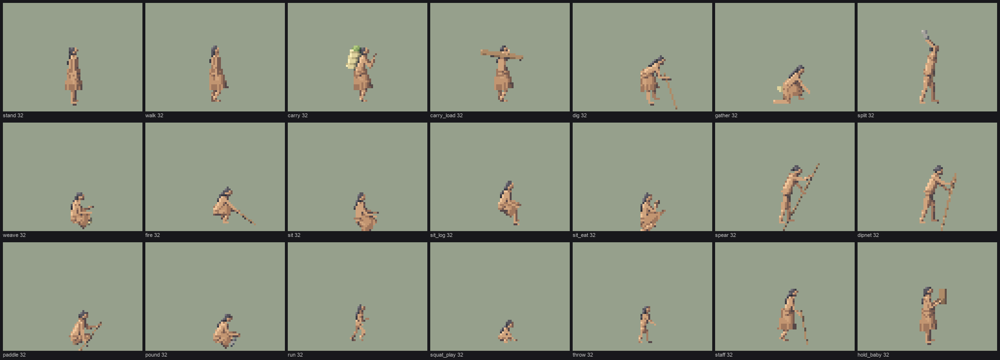
10. (manager scratchpad)/v.pngBash: Render close-up of stand/walk at all sizes
cd ~/work/pixelart-studies/elements/people/src && cat > t1.py <<'EOF'
import numpy as np, sys
from render import sprite
from pal import palette, grey_lut
from util import up, save, side
lut = palette('noon') if len(sys.argv)<2 or sys.argv[1]!='grey' else grey_lut()
acts = sys.argv[2].split(',') if len(sys.argv)>2 else ['stand','walk','carry']
facing = float(sys.argv[3]) if len(sys.argv)>3 else 0
rows=[]
for a in acts:
panels=[]
for size in (32,24,16,12,8,6):
sc = sprite(dict(activity=a, sex='f', facing=facing, phase=0.1, seed=1, dress=(sys.argv[4] if len(sys.argv)>4 else None)), size, pad=6)
img = lut[sc.cv.idx]; bg=np.array([120,128,112],np.uint8)
img = np.where(sc.cv.idx[...,None]>0, img, bg)
panels.append(up(img, 8 if size>=16 else 12 if size>=8 else 16))
rows.append(side(panels, height=None))
from util import vstack
save(vstack(rows), '(manager scratchpad)/t1.png')
EOF
python3 t1.py col stand,walk
# output:
(Bash completed with no output)Read: (manager scratchpad)/t1.png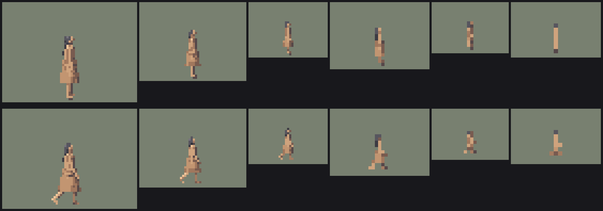
11. (manager scratchpad)/t1.pngBash: Palette, min radius, and step tweaks
cd ~/work/pixelart-studies/elements/people/src && python3 - <<'EOF'
s=open('pal.py').read()
s=s.replace("'SKIN': ('#3a2218', '#8a5a3e', '#c89468'), # warm brown, sun-darkened","'SKIN': ('#3c2016', '#94583c', '#cc8a60'), # warm brown, sun-darkened, a touch rosy")
s=s.replace("'HAIR': ('#0c0a0c', '#1c1a20', '#3c3a46'),","'HAIR': ('#08070a', '#141218', '#2c2a34'),")
s=s.replace("'BARK': ('#3a2216', '#8a5a3c', '#b8845a'),","'BARK': ('#2a160e', '#64381e', '#946034'),")
open('pal.py','w').write(s)
s=open('fig.py').read()
s=s.replace(" r0, r1 = prim.r0 * scale, prim.r1 * scale\n"," r0, r1 = max(prim.r0 * scale, prim.minw), max(prim.r1 * scale, prim.minw)\n")
s=s.replace("stepmod=0, thin=True, bias=0.0, pattern=None, minw=1):","stepmod=0, thin=True, bias=0.0, pattern=None, minw=0.0):")
open('fig.py','w').write(s)
s=open('render.py').read()
a=s.index(" step = np.where(lam > 0.62")
b=s.index(" under = n[..., 1]")
s=s[:a]+""" step = np.where(lam > 0.38, 3, np.where(lam > 0.04, 2, 1))
if hi and size_px >= 22:
step = np.where(lam > 0.88, 4, step)
"""+s[b:]
open('render.py','w').write(s)
EOF
grep -n "tag='torso'\|tag='head'\|tag='skirt'\|tag='cape'\|tag='hair'\|tag='hairlong'\|tag='blanket'\|tag='pelvis'" person.py
# output:
121: torso_mat, tag='torso')
122: add(J['hpL'] + up * 0.03, J['hpR'] + up * 0.03, tw * 1.05, None, torso_mat, tag='pelvis')
129: add(hc, hc, hr, None, 'SKIN', tag='head')
134: tag='hair')
136: add(hc - hfw * hr * 0.55, J['chest'] - fw * tw * 0.9 - up * 0.10, hr * 0.62, hr * 0.7, 'HAIR', tag='hairlong')
164: add(waist, hem, rtop * st, max(rbot * st, spread + 0.06 * st), mat, prof='lin', caps=False, tag='skirt',
167: def cape(mat, length=1.0, r1=0.19, tag='cape', pattern=None):
175: add(top, bot, 0.085 * st, 0.17 * st, mat, prof='bell', caps=False, tag='blanket', pattern=pattern)Bash: Add minimum widths and rerender
cd ~/work/pixelart-studies/elements/people/src && python3 - <<'EOF'
s=open('person.py').read()
for tag,mw in [("tag='torso'",0.7),("tag='pelvis'",0.75),("tag='head'",0.9),("tag='hair')",0.9),("tag='hairlong'",0.5),("tag='skirt'",1.1),("tag=tag, pattern=pattern",1.3),("tag='blanket'",1.3),("tag='basket'",1.0),("tag='brim'",1.6)]:
assert tag in s, tag
if tag.endswith(')'):
s=s.replace(tag, tag[:-1]+f", minw={mw})")
else:
s=s.replace(tag, tag+f", minw={mw}")
open('person.py','w').write(s)
EOF
python3 t1.py col stand,walk
# output:
(Bash completed with no output)Read: (manager scratchpad)/t1.png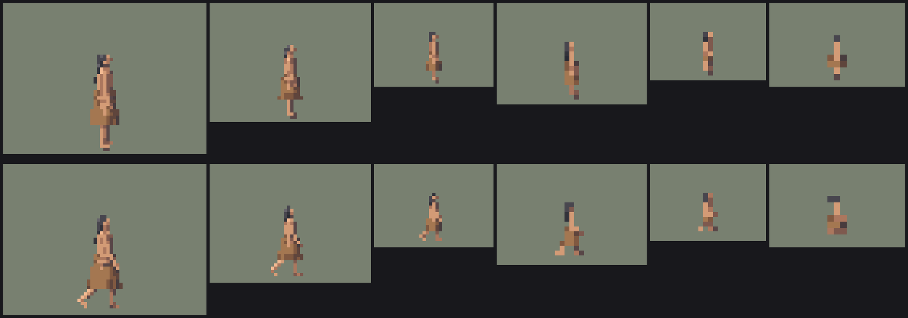
12. (manager scratchpad)/t1.pngBash: Fix ramp temperature to chroma only
cd ~/work/pixelart-studies/elements/people/src && python3 - <<'EOF'
s=open('pal.py').read()
s=s.replace(""" c = c * (1 - warm - cool) + sun * warm + amb * cool
c = c.copy()""",""" c = c.copy()
# temperature only: pull the chroma (a, b) toward the sun's / sky's hue, keep lightness
c[1:] = c[1:] * (1 - warm - cool) + sun[1:] * warm * 1.2 + amb[1:] * cool * 1.2""")
open('pal.py','w').write(s)
EOF
python3 -c "
from pal import ramp
for m in ['SKIN','HAIR','BARK','BARKT']: print(m, ramp(m))"
python3 t1.py col stand,walk
# output:
SKIN [(52, 37, 41), (106, 72, 62), (157, 106, 82), (197, 141, 105), (229, 173, 132)]
HAIR [(2, 4, 14), (12, 14, 24), (26, 25, 33), (44, 42, 49), (65, 62, 68)]
BARK [(33, 24, 28), (71, 47, 39), (108, 71, 48), (143, 99, 61), (171, 126, 84)]
BARKT [(66, 59, 55), (117, 99, 79), (164, 139, 102), (203, 175, 129), (235, 207, 158)]Read: (manager scratchpad)/t1.png13. (manager scratchpad)/t1.png
Bash: Render close-ups at 32 px
cd ~/work/pixelart-studies/elements/people/src && cat > t2.py <<'EOF'
import numpy as np, sys
from render import sprite, crop_to
from pal import palette, grey_lut
from util import up, save, side
lut = palette('noon')
specs = eval(sys.argv[1])
size = int(sys.argv[2]) if len(sys.argv)>2 else 32
k = int(sys.argv[3]) if len(sys.argv)>3 else 10
panels=[]
for sp in specs:
sc = sprite(sp, size, pad=6, sun=sp.pop('sun',(40,40)) if 'sun' in sp else (40,40))
bg=np.array([120,128,112],np.uint8)
img = np.where(sc.cv.idx[...,None]>0, lut[sc.cv.idx], bg)
img = crop_to(img, sc.cv.idx>0, 3)
panels.append(up(img,k))
save(side(panels), '(manager scratchpad)/t2.png')
EOF
python3 t2.py "[dict(activity='stand',facing=0),dict(activity='walk',facing=0,phase=0.1),dict(activity='stand',facing=90),dict(activity='walk',facing=60,phase=0.3),dict(activity='carry',facing=0,phase=0.2)]" 32 10
# output:
(Bash completed with no output)Read: (manager scratchpad)/t2.png 14. (manager scratchpad)/t2.png
14. (manager scratchpad)/t2.png
Bash: Show torso/head section
cd ~/work/pixelart-studies/elements/people/src && grep -n "torso (two halves" -A 22 person.py
# output:
115: # --- torso (two halves, so the profile is narrower than the front view)
116- tw = Ps['r_torso']
117- hipw = Ps['hip'] * 0.62
118- shw = Ps['sh'] * 0.5
119- for sg in (1, -1):
120- add(J['pelvis'] + lat * hipw * sg + up * 0.02, J['chest'] + lat * shw * sg - up * 0.03, tw * 1.02, tw,
121- torso_mat, tag='torso', minw=0.7)
122- add(J['hpL'] + up * 0.03, J['hpR'] + up * 0.03, tw * 1.05, None, torso_mat, tag='pelvis', minw=0.75)
123- add(J['chest'] - up * 0.02, J['neck'], Ps['r_uarm'] * 1.0, None, 'SKIN', tag='neck')
124- # --- head and hair
125- hr = Ps['head'] * 0.5
126- hu = J['headup']
127- hc = J['head']
128- hfw = nrm(v3(hu[1], -hu[0], 0)) # head forward
129- add(hc, hc, hr, None, 'SKIN', tag='head', minw=0.9)
130- hair = spec.get('hair') or ('loose' if sex == 'f' else ('tied' if region == 'coast' else 'queues'))
131- if age == 'small':
132- hair = 'short'
133- add(hc - hfw * hr * 0.28 + hu * hr * 0.14, hc - hfw * hr * 0.28 + hu * hr * 0.14, hr * 0.98, None, 'HAIR',
134- tag='hair', minw=0.9)
135- if hair == 'loose':
136- add(hc - hfw * hr * 0.55, J['chest'] - fw * tw * 0.9 - up * 0.10, hr * 0.62, hr * 0.7, 'HAIR', tag='hairlong', minw=0.5)
137- elif hair == 'tied':Bash: Rebuild torso and head, group seams
cd ~/work/pixelart-studies/elements/people/src && python3 - <<'EOF'
s=open('person.py').read()
a=s.index(" # --- torso (two halves")
b=s.index(" hair = spec.get('hair')")
s=s[:a]+""" # --- torso: a chest bar between the shoulders, a waist in two halves (narrower in profile),
# a pelvis bar. Widths from life (shoulders ~0.24, waist ~0.16 of stature).
tw = Ps['r_torso']
fem = sex == 'f'
chest_hw = (0.062 if fem else 0.072) * st
rc = (0.052 if fem else 0.056) * st
add(J['chest'] - up * 0.035 * st + lat * chest_hw, J['chest'] - up * 0.035 * st - lat * chest_hw, rc, None,
torso_mat, tag='torso', minw=0.7)
wr = 0.048 * st
for sg in (1, -1):
add(J['pelvis'] + lat * 0.035 * st * sg + up * 0.05 * st, J['chest'] + lat * 0.03 * st * sg - up * 0.05 * st,
wr, rc * 0.95, torso_mat, tag='torso', minw=0.6)
hipr = (0.062 if fem else 0.056) * st
add(J['pelvis'] + lat * 0.045 * st + up * 0.03, J['pelvis'] - lat * 0.045 * st + up * 0.03, hipr, None, torso_mat,
tag='torso', minw=0.7)
add(J['chest'] - up * 0.02, J['neck'] + up * 0.01, Ps['r_uarm'] * 0.95, None, 'SKIN', tag='neck')
# --- head: hair is a sphere set back and up; the face a smaller sphere set forward and down,
# so the hair frames the face from the front and caps it from the side.
hr = Ps['head'] * 0.5
hu = J['headup']
hc = J['head']
hfw = nrm(v3(hu[1], -hu[0], 0)) # head forward
add(hc - hfw * hr * 0.12 + hu * hr * 0.1, hc - hfw * hr * 0.12 + hu * hr * 0.1, hr * 1.0, None, 'HAIR',
tag='hair', minw=0.9)
add(hc + hfw * hr * 0.3 - hu * hr * 0.12, hc + hfw * hr * 0.3 - hu * hr * 0.12, hr * 0.8, None, 'SKIN',
tag='head', minw=0.6)
"""+s[b:]
# remove the old hair sphere line
a=s.index(" add(hc - hfw * hr * 0.28 + hu * hr * 0.14")
b=s.index(" if hair == 'loose':")
s=s[:a]+s[b:]
s=s.replace("'basket_hip': 'x'","")
open('person.py','w').write(s)
# seams only between different groups
f=open('render.py').read()
f=f.replace(" dark |= m & mn & (fn == fig) & (pn != part) & (zn > z + thr)",
""" gn = np.roll(np.roll(cv.group, dy, 0), dx, 1)
dark |= m & mn & (fn == fig) & (gn != cv.group) & (zn > z + thr)""")
open('render.py','w').write(f)
g=open('fig.py').read()
g=g.replace(" self.tags = {}\n"," self.tags = {}\n self.group = np.zeros((h, w), np.int32)\n")
g=g.replace(" self.tags[pid] = prim.tag\n",""" self.tags[pid] = prim.tag
self.group[sub][win] = hash(GROUPS.get(prim.tag, prim.tag)) % 100000 + figid * 100000
""")
g=g.replace("D2R = math.pi / 180\n","""D2R = math.pi / 180
# parts that belong to one surface (no occlusion seam between them)
GROUPS = {'torso': 'body', 'neck': 'body', 'head': 'head', 'hair': 'head', 'hairknot': 'head'}
""")
open('fig.py','w').write(g)
EOF
python3 t2.py "[dict(activity='stand',facing=0),dict(activity='walk',facing=0,phase=0.1),dict(activity='stand',facing=90),dict(activity='walk',facing=60,phase=0.3),dict(activity='stand',facing=120, sex='m'),dict(activity='stand',facing=270)]" 32 10
# output:
(Bash completed with no output)Read: (manager scratchpad)/t2.png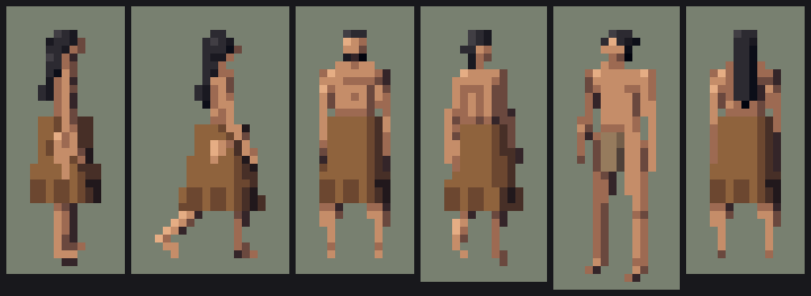
15. (manager scratchpad)/t2.pngBash: Face capsule, skirt strands, normal smoothing
cd ~/work/pixelart-studies/elements/people/src && python3 - <<'EOF'
s=open('person.py').read()
old=""" add(hc + hfw * hr * 0.3 - hu * hr * 0.12, hc + hfw * hr * 0.3 - hu * hr * 0.12, hr * 0.8, None, 'SKIN',
tag='head', minw=0.6)"""
new=""" add(hc + hfw * hr * 0.3 + hu * hr * 0.05, hc + hfw * hr * 0.26 - hu * hr * 0.42, hr * 0.74, hr * 0.6, 'SKIN',
tag='head', minw=0.6)"""
assert old in s
s=s.replace(old,new)
old=""" def skirt(mat, length=1.0, rtop=0.105, rbot=0.125, fringe=True):"""
new=""" def skirt(mat, length=1.0, rtop=0.088, rbot=0.105, fringe=True):"""
s=s.replace(old,new)
s=s.replace(""" add(waist, hem, rtop * st, max(rbot * st, spread + 0.06 * st), mat, prof='lin', caps=False, tag='skirt', minw=1.1,
pattern=(lambda tc, xs, ys: (tc > 0.72) * 1.0) if fringe else None)""",""" add(waist, hem, rtop * st, max(rbot * st, spread + 0.05 * st), mat, prof='lin', caps=False, tag='skirt', minw=1.1,
pattern=(lambda tc, xs, ys: np.where(tc < 0.07, 2.0, 1.0)) if fringe else None)""")
open('person.py','w').write(s)
f=open('render.py').read()
f=f.replace(""" n = cv.n
lam""",""" n = smooth_normals(cv)
lam""")
f=f.replace(""" fr = bark & (pat > 0.5)
step = np.where(fr & (colhash % 2 == 0), step - 1, step)""",""" fr = bark & (pat > 0.5) & (pat < 1.5)
step = np.where(fr & (colhash % 3 == 0), step - 1, step)
step = np.where(bark & (pat > 1.5), step - 1, step) # waist band""")
f=f.replace("""def shade(cv,""","""def smooth_normals(cv, it=1):
\"\"\"Blur normals within each surface group (3x3), so a torso built of several capsules
shades as one form: clean lit and shadow planes instead of a patchwork.\"\"\"
n = cv.n.copy()
g = cv.group
m = cv.idx > 0
for _ in range(it):
acc = n * m[..., None]
cnt = m.astype(float)
for dy in (-1, 0, 1):
for dx in (-1, 0, 1):
if dy == 0 and dx == 0:
continue
same = m & (np.roll(np.roll(g, dy, 0), dx, 1) == g) & np.roll(np.roll(m, dy, 0), dx, 1)
acc = acc + np.roll(np.roll(n, dy, 0), dx, 1) * same[..., None]
cnt = cnt + same
n = acc / np.maximum(cnt, 1)[..., None]
n = n / np.maximum(np.linalg.norm(n, axis=-1, keepdims=True), 1e-6)
return n
def shade(cv,""")
open('render.py','w').write(f)
EOF
python3 t2.py "[dict(activity='stand',facing=0),dict(activity='walk',facing=0,phase=0.1),dict(activity='stand',facing=90),dict(activity='walk',facing=60,phase=0.3),dict(activity='stand',facing=120, sex='m'),dict(activity='stand',facing=270)]" 32 10
# output:
(Bash completed with no output)Read: (manager scratchpad)/t2.png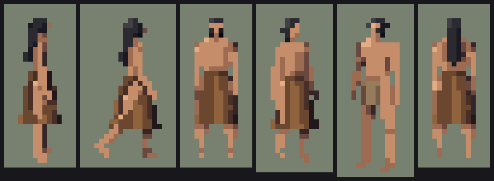
16. (manager scratchpad)/t2.pngBash: Render small sizes grid
cd ~/work/pixelart-studies/elements/people/src && sed -i '' "s/add(hc - hfw \* hr \* 0.55, J\['chest'\] - fw \* tw \* 0.9 - up \* 0.10, hr \* 0.62, hr \* 0.7/add(hc - hfw * hr * 0.75 + hu * hr * 0.1, J['chest'] - fw * tw * 1.0 - up * 0.10, hr * 0.62, hr * 0.7/" person.py && grep -n "hairlong" person.py && cat > t3.py <<'EOF'
import numpy as np, sys
from render import sprite, crop_to
from pal import palette
from util import up, save, side, vstack
lut = palette('noon')
specs = eval(sys.argv[1])
sizes = [int(x) for x in sys.argv[2].split(',')]
rows=[]
for size in sizes:
panels=[]
for sp in specs:
sp=dict(sp)
sc = sprite(sp, size, pad=4)
bg=np.array([120,128,112],np.uint8)
img = np.where(sc.cv.idx[...,None]>0, lut[sc.cv.idx], bg)
H=int(size*1.25)+4; W=int(size*1.1)+6
ys,xs=np.nonzero(sc.cv.idx>0)
cx=int((xs.min()+xs.max())/2); by=ys.max()+2
c=np.full((H,W,3),bg,np.uint8)
sub=img[max(0,by-H):by, max(0,cx-W//2):cx-W//2+W]
c[H-sub.shape[0]:, :sub.shape[1]]=sub
panels.append(up(c, max(4, 192//H)))
rows.append(side(panels))
save(vstack(rows), '(manager scratchpad)/t3.png')
EOF
python3 t3.py "[dict(activity='stand',facing=0),dict(activity='walk',facing=0,phase=0.1),dict(activity='stand',facing=90),dict(activity='walk',facing=60,phase=0.3),dict(activity='stand',facing=120, sex='m'),dict(activity='carry',facing=0,phase=0.2),dict(activity='dig',facing=0)]" 16,12,8,6
# output:
145: add(hc - hfw * hr * 0.75 + hu * hr * 0.1, J['chest'] - fw * tw * 1.0 - up * 0.10, hr * 0.62, hr * 0.7, 'HAIR', tag='hairlong', minw=0.5)Read: (manager scratchpad)/t3.png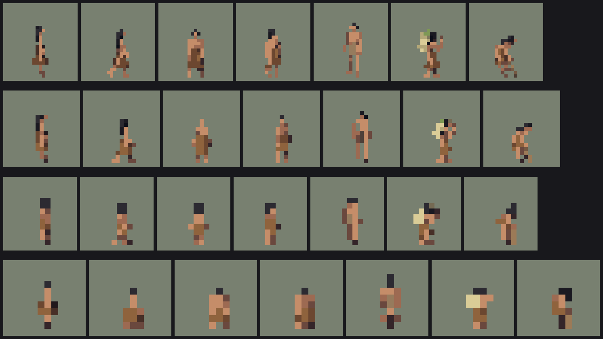
17. (manager scratchpad)/t3.pngBash: Lower min widths and simplify tiny shading
cd ~/work/pixelart-studies/elements/people/src && python3 - <<'EOF'
import re
s=open('person.py').read()
rep={"tag='torso', minw=0.7":"tag='torso', minw=0.5","tag='torso', minw=0.6":"tag='torso', minw=0.45",
"tag='hair',\n minw=0.9":"tag='hair', minw=0.6","tag='head', minw=0.6":"tag='head', minw=0.45",
"tag='skirt', minw=1.1":"tag='skirt', minw=0.7","tag='blanket', minw=1.3":"tag='blanket', minw=0.9",
"tag=tag, pattern=pattern, minw=1.3":"tag=tag, pattern=pattern, minw=0.9","tag='brim', minw=1.6":"tag='brim', minw=1.2",
"tag='basket', minw=1.0":"tag='basket', minw=0.8"}
for a,b in rep.items():
if a not in s: print('missing',a)
s=s.replace(a,b)
open('person.py','w').write(s)
f=open('render.py').read()
f=f.replace(" step = step + cv.stepmod\n",""" if size_px < 10:
# at a few pixels only the legs keep the far-side step (it is what separates them)
legs = np.isin(cv.part, [p for p, t in cv.tags.items() if t[:4] in ('thig', 'shin', 'foot')])
step = step + np.where(legs, cv.stepmod, 0)
seam = False
else:
step = step + cv.stepmod
""")
open('render.py','w').write(f)
EOF
grep -n "tag='hair'" person.py; python3 t3.py "[dict(activity='stand',facing=0),dict(activity='walk',facing=0,phase=0.1),dict(activity='stand',facing=90),dict(activity='walk',facing=60,phase=0.3),dict(activity='stand',facing=120, sex='m'),dict(activity='carry',facing=0,phase=0.2),dict(activity='dig',facing=0)]" 12,8,6
# output:
missing tag='hair',
minw=0.9
138: tag='hair', minw=0.9)Bash: Fix hair minw and rerender
cd ~/work/pixelart-studies/elements/people/src && sed -i '' "s/tag='hair', minw=0.9)/tag='hair', minw=0.6)/" person.py && python3 t3.py "[dict(activity='stand',facing=0),dict(activity='walk',facing=0,phase=0.1),dict(activity='stand',facing=90),dict(activity='walk',facing=60,phase=0.3),dict(activity='stand',facing=120, sex='m'),dict(activity='carry',facing=0,phase=0.2),dict(activity='dig',facing=0)]" 12,8,6 # output: (Bash completed with no output)
Read: (manager scratchpad)/t3.png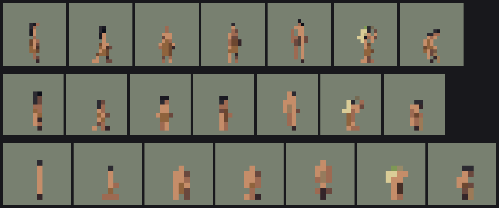
18. (manager scratchpad)/t3.pngBash: Implement supersampled reduction and compare
cd ~/work/pixelart-studies/elements/people/src && cat >> render.py <<'EOF'
# ----------------------------------------------------------------------------------------------
# small figures: render at S x, then reduce by salience-weighted mode
SALIENCE = {'HAIR': 1.7, 'WOOD': 2.2, 'STONE': 1.8, 'NET': 2.0, 'STRAW': 1.3, 'BARKT': 1.2, 'WOOL': 1.3,
'LEAF': 1.2, 'FISH': 1.6, 'SILVER': 1.6, 'BAND': 0.8, 'DARKB': 0.8}
def reduce_idx(idx, S, thresh=0.34, sal=None, thin_mats=('WOOD', 'NET', 'STONE')):
"""idx at S x resolution -> target resolution. A target pixel is filled when enough of its
block is covered (or it holds a thin prop); its material is the salience-weighted mode; its
step is the mean step of that material in the block, rounded."""
sal = sal or SALIENCE
H, W = idx.shape
h, w = H // S, W // S
blk = idx[:h * S, :w * S].reshape(h, S, w, S).transpose(0, 2, 1, 3).reshape(h, w, S * S)
mat = blk // 8
step = blk % 8
filled = blk > 0
cov = filled.mean(-1)
nm = len(M) + 1
score = np.zeros((h, w, nm))
ssum = np.zeros((h, w, nm))
for mi in range(1, nm):
sel = (mat == mi) & filled
if not sel.any():
continue
from pal import MATS
wgt = sal.get(MATS[mi], 1.0) if mi < len(MATS) else 1.0
score[..., mi] = sel.sum(-1) * wgt
ssum[..., mi] = (step * sel).sum(-1)
best = score.argmax(-1)
cnt = np.take_along_axis(score, best[..., None], -1)[..., 0]
from pal import MATS
wbest = np.array([sal.get(MATS[i], 1.0) if 0 < i < len(MATS) else 1.0 for i in range(nm)])[best]
n_best = cnt / np.maximum(wbest, 1e-6)
st = np.rint(np.take_along_axis(ssum, best[..., None], -1)[..., 0] / np.maximum(n_best, 1)).astype(int)
thin = np.isin(best, [M[t] for t in thin_mats]) & (n_best >= max(2, S // 2))
keep = (cov >= thresh) | thin
out = np.where(keep, best * 8 + st, 0).astype(np.int16)
return out
def sprite_ss(spec, size_px, S=4, elev=10.0, sun=(40, 40), pad=None, thresh=0.34):
"""Supersampled sprite for small sizes."""
pad = pad or max(4, int(size_px * 0.9))
w = int(size_px * 1.6 + 2 * pad)
h = int(size_px * 1.3 + pad)
gy = h - max(2, pad // 3)
sc = Scene(w * S, h * S, size_px * S, elev, ground_y=gy * S)
sc.add_person(spec)
shade(sc.cv, light_vec(*sun), size_px, seed=spec.get('seed', 0), seam=size_px >= 10)
small = reduce_idx(sc.cv.idx, S, thresh)
return small, sc
EOF
cat > t4.py <<'EOF'
import numpy as np, sys
from render import sprite, sprite_ss
from pal import palette
from util import up, save, side, vstack
lut = palette('noon')
specs = eval(sys.argv[1])
sizes = [int(x) for x in sys.argv[2].split(',')]
th = float(sys.argv[3]) if len(sys.argv)>3 else 0.34
rows=[]
for size in sizes:
for mode in ('direct','ss'):
panels=[]
for sp in specs:
sp=dict(sp)
if mode=='direct':
idx = sprite(sp, size, pad=4).cv.idx
else:
idx,_ = sprite_ss(sp, size, pad=4, thresh=th)
bg=np.array([120,128,112],np.uint8)
img = np.where(idx[...,None]>0, lut[idx], bg)
H=int(size*1.25)+4; W=int(size*1.1)+6
ys,xs=np.nonzero(idx>0)
cx=int((xs.min()+xs.max())/2); by=ys.max()+2
c=np.full((H,W,3),bg,np.uint8)
sub=img[max(0,by-H):by, max(0,cx-W//2):cx-W//2+W]
c[H-sub.shape[0]:, :sub.shape[1]]=sub
panels.append(up(c, max(4, 150//H)))
rows.append(side(panels))
save(vstack(rows), '(manager scratchpad)/t4.png')
EOF
python3 t4.py "[dict(activity='stand',facing=0),dict(activity='walk',facing=0,phase=0.1),dict(activity='stand',facing=90),dict(activity='walk',facing=60,phase=0.3),dict(activity='stand',facing=120, sex='m'),dict(activity='carry',facing=0,phase=0.2),dict(activity='dig',facing=0),dict(activity='sit',facing=30)]" 12,8,6
# output:
(Bash completed with no output)Read: (manager scratchpad)/t4.png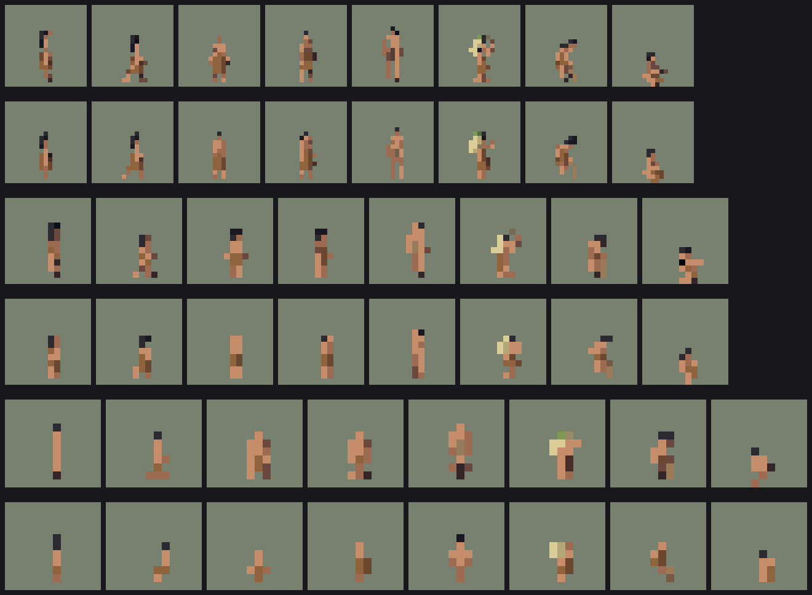
19. (manager scratchpad)/t4.pngBash: Stronger small-size exaggeration
cd ~/work/pixelart-studies/elements/people/src && python3 - <<'EOF'
s=open('fig.py').read()
old=""" boost = 1.0 + 0.45 * np.clip((20 - px) / 14, 0, 1)
P['head'] *= boost"""
new=""" boost = 1.0 + 0.45 * np.clip((20 - px) / 14, 0, 1) + 0.25 * np.clip((10 - px) / 4, 0, 1)
P['head'] *= boost
# limbs and trunk thicken below ~12 px, so the masses survive the reduction
th = 1.0 + 0.45 * np.clip((12 - px) / 6, 0, 1)
for k in ('r_torso', 'r_thigh', 'r_shin', 'r_uarm', 'r_farm'):
P[k] *= th
P['girth'] = th"""
s=s.replace(old,new)
open('fig.py','w').write(s)
s=open('render.py').read()
s=s.replace("SALIENCE = {'HAIR': 1.7,","SALIENCE = {'HAIR': 2.3,")
open('render.py','w').write(s)
EOF
grep -n "0.062 if fem\|wr = 0.048\|0.052 if fem" person.py
# output:
119: chest_hw = (0.062 if fem else 0.072) * st
120: rc = (0.052 if fem else 0.056) * st
123: wr = 0.048 * st
127: hipr = (0.062 if fem else 0.056) * stBash: Apply girth to torso and rerender
cd ~/work/pixelart-studies/elements/people/src && sed -i '' "s/ rc = (0.052 if fem else 0.056) \* st/ rc = (0.052 if fem else 0.056) * st * P['girth']/; s/ wr = 0.048 \* st$/ wr = 0.048 * st * P['girth']/; s/ hipr = (0.062 if fem else 0.056) \* st/ hipr = (0.062 if fem else 0.056) * st * P['girth']/" person.py && grep -n "girth" person.py && python3 t4.py "[dict(activity='stand',facing=0),dict(activity='walk',facing=0,phase=0.1),dict(activity='stand',facing=90),dict(activity='walk',facing=60,phase=0.3),dict(activity='stand',facing=120, sex='m'),dict(activity='carry',facing=0,phase=0.2),dict(activity='dig',facing=0),dict(activity='sit',facing=30)]" 10,8,6 0.3 # output: 120: rc = (0.052 if fem else 0.056) * st * P['girth'] 123: wr = 0.048 * st * P['girth'] 127: hipr = (0.062 if fem else 0.056) * st * P['girth']
Read: (manager scratchpad)/t4.png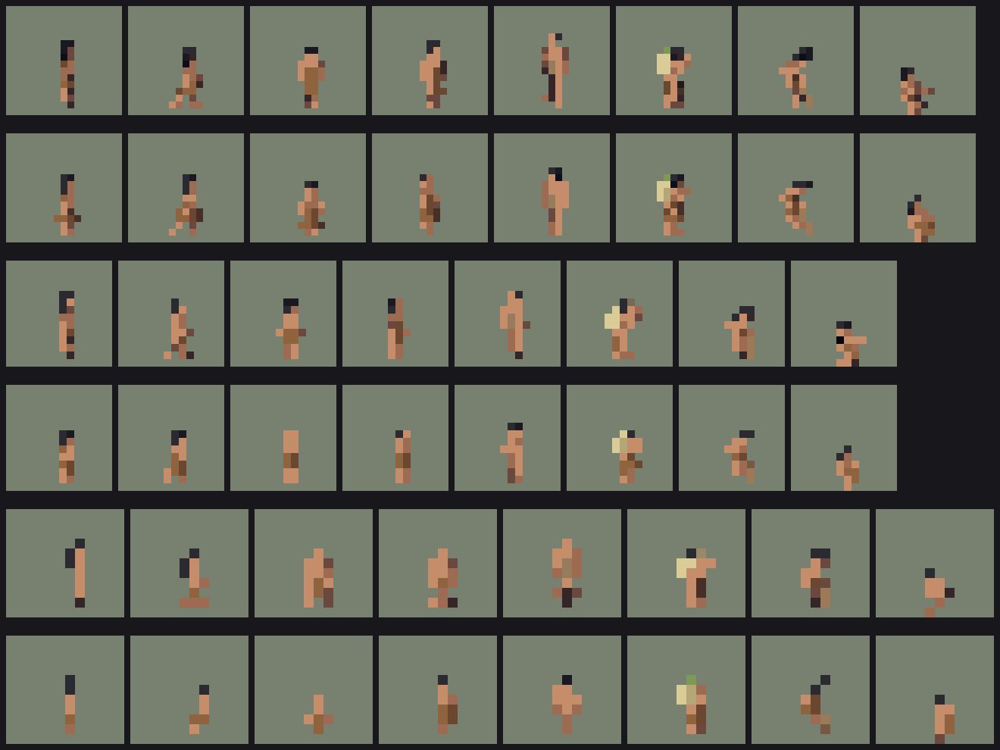
20. (manager scratchpad)/t4.pngBash: Debug which parts win at 6 px
cd ~/work/pixelart-studies/elements/people/src && python3 -c "
from render import sprite
import numpy as np
sc=sprite(dict(activity='stand',facing=0),6,pad=4)
cv=sc.cv
ys,xs=np.nonzero(cv.idx>0)
sub=cv.part[ys.min():ys.max()+1, xs.min():xs.max()+1]
for row in sub: print(' '.join(f'{cv.tags.get(p,\".\")[:6]:>6}' for p in row))
"
# output:
. hair
hairlo uarmR
hairlo uarmR
. farmR
. thighR
. shinR
. footRBash: Garment depth bias
cd ~/work/pixelart-studies/elements/people/src && python3 - <<'EOF'
s=open('fig.py').read()
s=s.replace("'pattern', 'minw')","'pattern', 'minw', 'zb')")
s=s.replace("stepmod=0, thin=True, bias=0.0, pattern=None, minw=0.0):","stepmod=0, thin=True, bias=0.0, pattern=None, minw=0.0, zb=0.0):")
s=s.replace("self.clip, self.stepmod, self.thin, self.bias, self.pattern, self.minw = clip, stepmod, thin, bias, pattern, minw",
"self.clip, self.stepmod, self.thin, self.bias, self.pattern, self.minw = clip, stepmod, thin, bias, pattern, minw\n self.zb = zb")
s=s.replace(" depth = A[2] + (B[2] - A[2]) * tc + zs\n"," depth = A[2] + (B[2] - A[2]) * tc + zs + prim.zb\n")
open('fig.py','w').write(s)
s=open('person.py').read()
for t in ["tag='skirt'","tag=tag, pattern=pattern","tag='blanket'","tag='shirt'"]:
assert t in s,t
s=s.replace(t, t+", zb=0.8")
open('person.py','w').write(s)
EOF
python3 t4.py "[dict(activity='stand',facing=0),dict(activity='walk',facing=0,phase=0.1),dict(activity='stand',facing=90),dict(activity='walk',facing=60,phase=0.3),dict(activity='stand',facing=120, sex='m'),dict(activity='carry',facing=0,phase=0.2),dict(activity='dig',facing=0),dict(activity='sit',facing=30)]" 10,8,6 0.3
# output:
(Bash completed with no output)Read: (manager scratchpad)/t4.png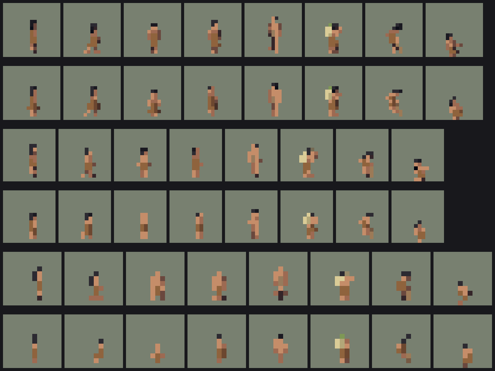
21. (manager scratchpad)/t4.pngBash: Size-dependent pixel floors
cd ~/work/pixelart-studies/elements/people/src && python3 - <<'EOF'
s=open('person.py').read()
s=s.replace(""" prims = []
""",""" prims = []
# pixel floors for the masses at tiny sizes (a 6 px person is two pixels wide)
tiny = float(np.clip((10 - size_px) / 4, 0, 1))
MW = lambda base, extra=0.45: base + extra * tiny
""",1)
rep={"tag='torso', minw=0.5":"tag='torso', minw=MW(0.5)","tag='torso', minw=0.45":"tag='torso', minw=MW(0.45)",
"tag='skirt', minw=0.7":"tag='skirt', minw=MW(0.7, 0.35)","tag='blanket', minw=0.9":"tag='blanket', minw=MW(0.9, 0.2)",
"tag=tag, pattern=pattern, minw=0.9":"tag=tag, pattern=pattern, minw=MW(0.9, 0.2)"}
for a,b in rep.items():
assert a in s,a; s=s.replace(a,b)
s=s.replace("hr * 0.74, hr * 0.6, 'SKIN',","hr * 0.74 * (1 - 0.3 * tiny), hr * 0.6 * (1 - 0.3 * tiny), 'SKIN',")
open('person.py','w').write(s)
EOF
python3 t4.py "[dict(activity='stand',facing=0),dict(activity='walk',facing=0,phase=0.1),dict(activity='stand',facing=90),dict(activity='walk',facing=60,phase=0.3),dict(activity='stand',facing=120, sex='m'),dict(activity='carry',facing=0,phase=0.2),dict(activity='dig',facing=0),dict(activity='sit',facing=30)]" 8,6 0.3
# output:
Traceback (most recent call last):
File "<stdin>", line 12, in <module>
AssertionError: tag='skirt', minw=0.7Bash: Check minw occurrences
cd ~/work/pixelart-studies/elements/people/src && grep -n "minw" person.py | head -20 # output: 122: torso_mat, tag='torso', minw=0.5) 126: wr, rc * 0.95, torso_mat, tag='torso', minw=0.45) 129: tag='torso', minw=0.5) 138: tag='hair', minw=0.6) 140: tag='head', minw=0.45) 145: add(hc - hfw * hr * 0.75 + hu * hr * 0.1, J['chest'] - fw * tw * 1.0 - up * 0.10, hr * 0.62, hr * 0.7, 'HAIR', tag='hairlong', minw=0.5) 173: add(waist, hem, rtop * st, max(rbot * st, spread + 0.05 * st), mat, prof='lin', caps=False, tag='skirt', zb=0.8, minw=0.7, 179: add(top, bot, 0.07 * st, r1 * st, mat, prof='bell', caps=False, tag=tag, pattern=pattern, zb=0.8, minw=0.9) 184: add(top, bot, 0.085 * st, 0.17 * st, mat, prof='bell', caps=False, tag='blanket', zb=0.8, minw=0.9, pattern=pattern) 218: add(top, top, brim_r, None, 'BARKT', prof='disk', tag='brim', minw=1.2) 244: add(a, b, 0.105 * st, 0.085 * st, 'STRAW', caps=False, tag='basket', minw=0.8, 253: add(c + v3(0, -0.06, 0) * st, c + v3(0, 0.05, 0) * st, 0.07 * st, 0.08 * st, 'STRAW', caps=False, tag='basket', minw=0.8)
Bash: Apply size-dependent floors
cd ~/work/pixelart-studies/elements/people/src && python3 - <<'EOF'
s=open('person.py').read()
if "MW = lambda" not in s:
s=s.replace(""" prims = []
""",""" prims = []
# pixel floors for the masses at tiny sizes (a 6 px person is two pixels wide)
tiny = float(np.clip((10 - size_px) / 4, 0, 1))
MW = lambda base, extra=0.45: base + extra * tiny
""",1)
rep={"tag='torso', minw=0.5":"tag='torso', minw=MW(0.5)","tag='torso', minw=0.45":"tag='torso', minw=MW(0.45)",
"zb=0.8, minw=0.7,":"zb=0.8, minw=MW(0.7, 0.35),","pattern=pattern, zb=0.8, minw=0.9)":"pattern=pattern, zb=0.8, minw=MW(0.9, 0.2))",
"tag='blanket', zb=0.8, minw=0.9,":"tag='blanket', zb=0.8, minw=MW(0.9, 0.2),"}
for a,b in rep.items():
assert a in s,a; s=s.replace(a,b)
s=s.replace("hr * 0.74, hr * 0.6, 'SKIN',","hr * 0.74 * (1 - 0.3 * tiny), hr * 0.6 * (1 - 0.3 * tiny), 'SKIN',")
open('person.py','w').write(s)
EOF
python3 t4.py "[dict(activity='stand',facing=0),dict(activity='walk',facing=0,phase=0.1),dict(activity='stand',facing=90),dict(activity='walk',facing=60,phase=0.3),dict(activity='stand',facing=120, sex='m'),dict(activity='carry',facing=0,phase=0.2),dict(activity='dig',facing=0),dict(activity='sit',facing=30)]" 8,6 0.3
# output:
(Bash completed with no output)Read: (manager scratchpad)/t4.png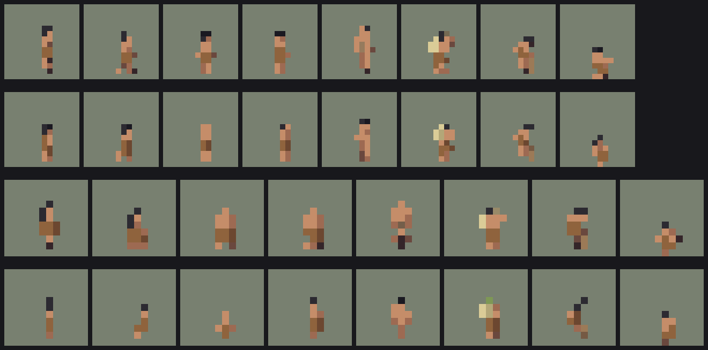
22. (manager scratchpad)/t4.pngBash: Fix head/under shading; crop Bruegel detail
cd ~/work/pixelart-studies/elements/people/src && python3 - <<'EOF'
s=open('person.py').read()
s=s.replace("add(hc - hfw * hr * 0.12 + hu * hr * 0.1, hc - hfw * hr * 0.12 + hu * hr * 0.1, hr * 1.0, None, 'HAIR',",
"add(hc - hfw * hr * 0.12 + hu * hr * (0.1 + 0.3 * tiny), hc - hfw * hr * 0.12 + hu * hr * (0.1 + 0.3 * tiny), hr * 1.0, None, 'HAIR',")
open('person.py','w').write(s)
f=open('render.py').read()
f=f.replace(" step = np.where((lam <= 0.05) & under, 0, step)"," if size_px >= 12:\n step = np.where((lam <= 0.05) & under, 0, step)")
open('render.py','w').write(f)
EOF
python3 -c "
from PIL import Image
im=Image.open('../refs/Bruegel_Harvesters/commons_Pieter_Bruegel_the_Elder_The_Harvesters_Google_A_dfff6b81.jpg')
im.crop((820,450,1100,650)).resize((840,600),Image.NEAREST).save('(manager scratchpad)/b1.png')
"
# output:
(Bash completed with no output)Read: (manager scratchpad)/b1.png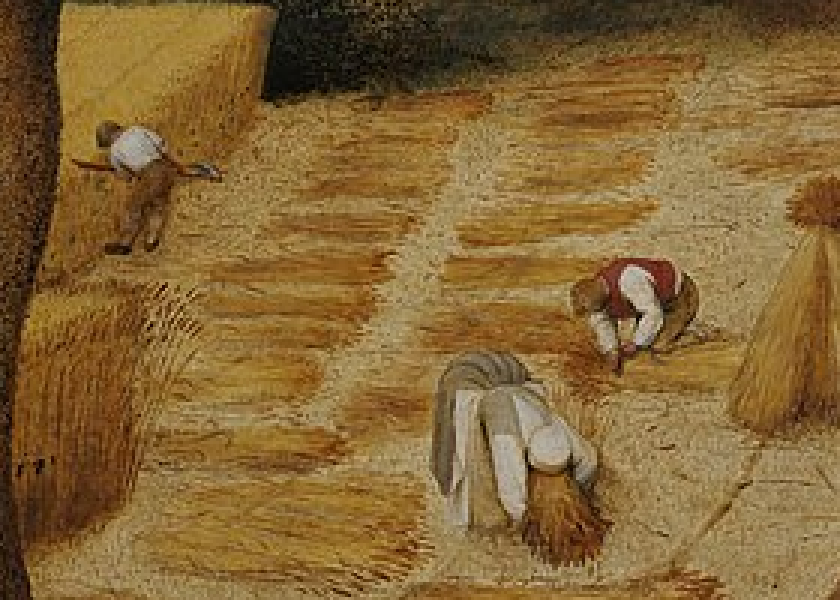
23. (manager scratchpad)/b1.pngBash: Extract Bruegel figure crops
cd ~/work/pixelart-studies/elements/people && mkdir -p stages/s0 && python3 - <<'EOF'
from PIL import Image
import numpy as np
im=Image.open('refs/Bruegel_Harvesters/commons_Pieter_Bruegel_the_Elder_The_Harvesters_Google_A_dfff6b81.jpg').convert('RGB')
# crop coords in original (zoom crop offset 820,450, zoom 3x)
crops={'scythe':(820+20,450+30,820+80,450+90),'kneel':(820+185,450+80,820+240,450+130),'bend':(820+140,450+110,820+210,450+185)}
for k,c in crops.items():
im.crop(c).save(f'stages/s0/bruegel_{k}.png')
print(k, im.crop(c).size)
EOF
# output:
scythe (60, 60)
kneel (55, 50)
bend (70, 75)Bash: Build Bruegel reduction sheet
cd ~/work/pixelart-studies/elements/people/src && cat > stage0.py <<'EOF'
"""Stage 0: what survives of Bruegel's small figures when they are made into pixels.
Bruegel's Harvesters (1565) is the moodboard's lesson in small figures read by task. Ferrari
never painted people in the Living Worlds scenes we have, so this is the closest master for the
subject; Ferrari stays the master for light, palette and mark. For three figures (the mower, the
kneeling binder, the woman bent over a sheaf) the sheet shows: the painting at its native
pixel size, the same quantized to 10 colours, and area-reduced to the heights we need
(about 24, 12 and 6 px) then quantized. Then my figure engine in the same poses and colours.
"""
import numpy as np, sys
from PIL import Image
from util import up, save, side, vstack, grid
sys.path.insert(0, '.')
def kmeans(px, k, it=20, seed=0):
rng = np.random.default_rng(seed)
c = px[rng.choice(len(px), k, replace=False)].astype(float)
for _ in range(it):
d = ((px[:, None] - c[None]) ** 2).sum(-1)
a = d.argmin(1)
for j in range(k):
if (a == j).any():
c[j] = px[a == j].mean(0)
return c, a
def quant(img, k=10):
px = img.reshape(-1, 3).astype(float)
c, a = kmeans(px, k)
return c[a].reshape(img.shape).astype(np.uint8)
def reduce(img, h):
im = Image.fromarray(img)
w = max(1, round(img.shape[1] * h / img.shape[0]))
return np.asarray(im.resize((w, h), Image.BOX))
if __name__ == '__main__':
rows = []
for name, hh in (('scythe', 60), ('kneel', 50), ('bend', 75)):
b = np.asarray(Image.open(f'../stages/s0/bruegel_{name}.png').convert('RGB'))
panels = [up(b, 6), up(quant(b), 6)]
labs = ['Bruegel, native px', 'quantized, 10 colours']
for f in (0.5, 0.25, 0.125):
r = quant(reduce(b, max(4, int(b.shape[0] * f))), 8)
k = int(6 / f)
panels.append(up(r, k))
labs.append(f'area-reduced x{f}, 8 colours')
rows.append(side(panels, labs))
save(vstack(rows), '../stages/s0/s0_bruegel_reduction.png')
EOF
python3 stage0.py
# output:
(Bash completed with no output)Read: elements/people/stages/s0/s0_bruegel_reduction.png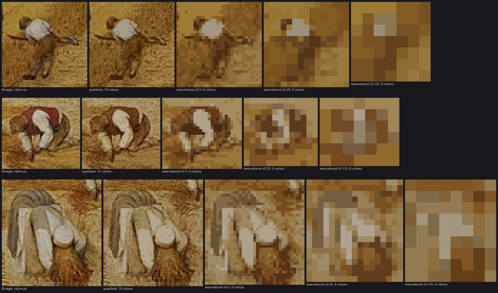
24. elements/people/stages/s0/s0_bruegel_reduction.pngBash: Add compare of my engine vs Bruegel
cd ~/work/pixelart-studies/elements/people/src && python3 - <<'EOF'
s=open('person.py').read()
s=s.replace(" Jw = {k: W(v) for k, v in J.items()",""" rec = spec.get('recolor', {})
if rec:
for p in prims:
for k, m in rec.items():
if p.tag.startswith(k):
p.mat = m
Jw = {k: W(v) for k, v in J.items()""")
open('person.py','w').write(s)
EOF
cat >> stage0.py <<'EOF'
def field(h, w, seed=0):
"""Bruegel's stubble field, as a flat index-free RGB noise of his quantized colours."""
rng = np.random.default_rng(seed)
cols = np.array([[196, 160, 90], [176, 138, 70], [210, 180, 110], [150, 110, 50]], np.uint8)
a = rng.choice(4, size=(h, w), p=[0.45, 0.3, 0.15, 0.1])
return cols[a]
def mine(spec, size, sun=(40, 45)):
from render import sprite
from pal import palette
lut = palette('golden')
sc = sprite(spec, size, pad=6, sun=sun)
idx = sc.cv.idx
ys, xs = np.nonzero(idx > 0)
idx = idx[ys.min() - 3:ys.max() + 4, xs.min() - 4:xs.max() + 5]
bg = field(*idx.shape)
img = np.where(idx[..., None] > 0, lut[idx], bg)
return img
BR = {'torso': 'WOOL', 'uarm': 'WOOL', 'neck': 'SKIN', 'thigh': 'HIDED', 'shin': 'HIDED', 'hair': 'WOOL',
'hairlong': 'WOOL'}
POSES = {
'scythe': dict(activity='spear', sex='m', facing=200, dress='coast_m_summer', hair='short', prop='spear',
pose_over=dict(pitch=34, headp=20, hipL=22, hipR=-18, knL=18, knR=10, shR=70, elR=10, shL=40,
elL=10, sabL=40, sabR=20), recolor={**BR, 'hair': 'HIDED', 'clout': 'HIDED'}),
'kneel': dict(activity='gather', sex='m', facing=190, dress='coast_m_summer', hair='short', prop=None,
pose_over=dict(pitch=60, headp=30, shR=60, elR=20, shL=50, elL=30),
recolor={**BR, 'torso': 'BAND', 'hair': 'HIDED', 'clout': 'HIDED'}),
'bend': dict(activity='dig', sex='f', facing=330, dress='coast_f_summer', prop=None,
pose_over=dict(pitch=88, headp=30, shL=10, shR=14, elL=10, elR=10, hipL=30, hipR=20, knL=10,
knR=6), recolor={**BR, 'skirt': 'FUR', 'hair': 'WOOL'}),
}
def compare():
rows = []
for name, hh in (('scythe', 45), ('kneel', 30), ('bend', 55)):
b = np.asarray(Image.open(f'../stages/s0/bruegel_{name}.png').convert('RGB'))
q = quant(b)
panels = [up(q, 6)]
labs = ['Bruegel quantized (native)']
for size in (hh, hh // 2, hh // 4):
panels.append(up(mine(dict(POSES[name]), size), max(3, int(6 * hh / size / 1.0 * (1 if size == hh else 1)))))
labs.append(f'mine, figure {size} px')
rows.append(side(panels, labs))
save(vstack(rows), '../stages/s0/s0_bruegel_vs_mine.png')
if __name__ == '__main__' and len(sys.argv) > 1 and sys.argv[1] == 'compare':
compare()
EOF
python3 stage0.py compare
# output:
(Bash completed with no output)Read: elements/people/stages/s0/s0_bruegel_vs_mine.png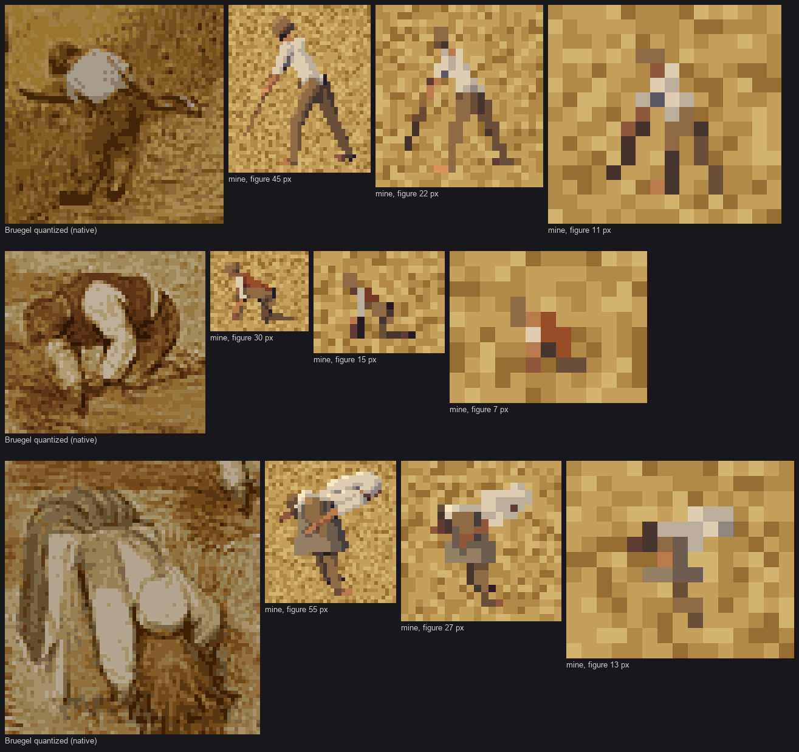
25. elements/people/stages/s0/s0_bruegel_vs_mine.pngBash: Add two-segment spine
cd ~/work/pixelart-studies/elements/people/src && python3 - <<'EOF'
s=open('fig.py').read()
old=""" pel = v3(p['dx'], 0, 0)
J['pelvis'] = pel
chest = pel + up * P['torso']
J['chest'] = chest"""
new=""" pel = v3(p['dx'], 0, 0)
J['pelvis'] = pel
# two-segment spine: the upper back curls further forward when bending (a round back, as
# Bruegel's binders and Millet's gleaners have), a little backward when reaching overhead
curl = p.get('curl', None)
if curl is None:
curl = 0.35 * max(p['pitch'], 0)
mid = pel + up * P['torso'] * 0.5
pit2 = pit + curl * D2R
up = v3(math.sin(pit2), math.cos(pit2), 0)
fw = v3(math.cos(pit2), -math.sin(pit2), 0)
chest = mid + up * P['torso'] * 0.5
J['mid'] = mid
J['chest'] = chest"""
assert old in s
s=s.replace(old,new)
s=s.replace(" hp = p['headp'] * D2R + pit * 0.3\n"," hp = p['headp'] * D2R + pit2 * 0.55\n")
open('fig.py','w').write(s)
s=open('person.py').read()
old=""" for sg in (1, -1):
add(J['pelvis'] + lat * 0.035 * st * sg + up * 0.05 * st, J['chest'] + lat * 0.03 * st * sg - up * 0.05 * st,
wr, rc * 0.95, torso_mat, tag='torso', minw=MW(0.45))"""
new=""" for sg in (1, -1):
add(J['pelvis'] + lat * 0.035 * st * sg + up * 0.03 * st, J['mid'] + lat * 0.033 * st * sg,
wr, wr * 1.02, torso_mat, tag='torso', minw=MW(0.45))
add(J['mid'] + lat * 0.033 * st * sg, J['chest'] + lat * 0.03 * st * sg - up * 0.05 * st,
wr * 1.02, rc * 0.95, torso_mat, tag='torso', minw=MW(0.45))"""
assert old in s
s=s.replace(old,new)
open('person.py','w').write(s)
EOF
grep -n "r_torso=0.068" fig.py
# output:
39: r_torso=0.068, r_thigh=0.052, r_shin=0.038, r_uarm=0.031, r_farm=0.026, girth=1.0)Bash: Chunkier limbs, ground materials
cd ~/work/pixelart-studies/elements/people/src && python3 - <<'EOF'
s=open('fig.py').read()
s=s.replace("r_torso=0.068, r_thigh=0.052, r_shin=0.038, r_uarm=0.031, r_farm=0.026, girth=1.0)","r_torso=0.068, r_thigh=0.06, r_shin=0.044, r_uarm=0.035, r_farm=0.03, girth=1.0)")
s=s.replace("P.update(stature=0.94, sh=0.105, hip=0.085, r_uarm=0.028, r_farm=0.023)","P.update(stature=0.94, sh=0.105, hip=0.085, r_uarm=0.032, r_farm=0.027)")
s=s.replace("P.update(stature=1.0, sh=0.12, r_torso=0.072, r_uarm=0.033)","P.update(stature=1.0, sh=0.12, r_torso=0.072, r_uarm=0.037)")
open('fig.py','w').write(s)
p=open('pal.py').read()
p=p.replace("'SHELL', 'LEAF', 'CEDAR', 'HIDED', 'NET', 'ROOT']","'SHELL', 'LEAF', 'CEDAR', 'HIDED', 'NET', 'ROOT',\n 'GRAVEL', 'SAND', 'GRASS', 'DIRT', 'STUBBLE', 'MOSS', 'WATER', 'FIRE', 'SMOKE', 'MAT', 'LOG', 'FOREST']")
p=p.replace(" 'ROOT': ('#3a2a1a', '#8a6a44', '#c0a070'), # camas bulbs, roots\n",""" 'ROOT': ('#3a2a1a', '#8a6a44', '#c0a070'), # camas bulbs, roots
# grounds and setting
'GRAVEL':('#3a3834', '#7a766c', '#b4ae9e'), # grey beach gravel, Olympic basalt and drift cobbles
'SAND': ('#5a4c3a', '#a89274', '#d8c4a0'),
'GRASS': ('#2a3418', '#5a6a2c', '#98a04e'), # prairie grass, early summer
'DIRT': ('#2e2218', '#5e4630', '#8a6e4c'),
'STUBBLE':('#6a5028', '#b08c4a', '#d8b86c'), # Bruegel's field (study only)
'MOSS': ('#1a2414', '#34482a', '#5a7040'), # forest floor
'WATER': ('#1c2c34', '#3e5a64', '#7c9aa0'),
'FIRE': ('#7a2a0a', '#e0701a', '#ffd870'),
'SMOKE': ('#4a4a52', '#8a8a92', '#c0c0c6'),
'MAT': ('#4a4028', '#a08e58', '#d0c088'), # cattail / tule mat
'LOG': ('#2a221c', '#5e5044', '#948474'), # silvered drift log
'FOREST':('#0e1812', '#1e2e22', '#324a36'), # the dark conifer wall
""")
open('pal.py','w').write(p)
EOF
python3 -c "import pal; print(len(pal.MATS))"
# output:
33Write: elements/people/src/grounds.py
"""Calm grounds for people to stand on, and the shadows people leave on them.
Stage 0's lesson from Bruegel: a small figure survives only against a calm ground, a field whose
values sit close together, so the figure's own masses (dark hair, a light blanket, a warm skin)
are the loudest thing in its neighbourhood. These grounds are deliberately quieter than the
element students' full painters (cobbles, grass-lod); in a real scene those painters provide the
ground and this module only supplies the contact and cast shadows.
"""
import math
import numpy as np
from pal import M
def _rng(seed):
return np.random.default_rng(seed)
def ground(kind, h, w, scale, seed=0, horizon=0):
"""Index canvas (h, w) of a ground seen at a low angle. scale = px per unit (adult height)."""
rng = _rng(seed)
idx = np.zeros((h, w), np.int16)
mat = M[kind]
step = np.full((h, w), 2, int)
ys, xs = np.mgrid[0:h, 0:w]
if kind == 'GRAVEL':
# stones: flattened ellipses, larger near (bottom); lit top row, dark underside
n = int(h * w / max(2.0, (0.05 * scale) ** 2) * 0.8)
for _ in range(n):
y = rng.integers(0, h)
near = (y + 1) / h
r = max(0.5, rng.uniform(0.03, 0.09) * scale * (0.6 + 0.6 * near))
x = rng.integers(0, w)
ry = max(0.5, r * 0.45)
y0, y1 = int(max(0, y - ry - 1)), int(min(h, y + ry + 2))
x0, x1 = int(max(0, x - r - 1)), int(min(w, x + r + 2))
if y1 <= y0 or x1 <= x0:
continue
yy, xx = np.mgrid[y0:y1, x0:x1]
e = ((xx + 0.5 - x) / r) ** 2 + ((yy + 0.5 - y) / ry) ** 2
ins = e <= 1
tone = rng.choice([1, 2, 2, 3], p=[0.2, 0.35, 0.3, 0.15])
s = np.full(ins.shape, tone)
if r >= 1.2:
s = np.where((yy + 0.5 - y) < -ry * 0.35, np.minimum(tone + 1, 3), s)
s = np.where((yy + 0.5 - y) > ry * 0.45, np.maximum(tone - 1, 1), s)
step[y0:y1, x0:x1] = np.where(ins, s, step[y0:y1, x0:x1])
elif kind in ('GRASS', 'STUBBLE'):
base = rng.random((h, w))
step = np.where(base < 0.18, 1, np.where(base > 0.86, 3, 2))
# blades: short vertical clean runs, longer near
n = int(h * w * 0.08)
for _ in range(n):
x, y = rng.integers(0, w), rng.integers(0, h)
L = 1 + int(rng.random() * (1 + 3 * (y / h)) * max(1, scale / 16))
s = 3 if rng.random() < 0.5 else 1
step[max(0, y - L):y, x] = s
elif kind in ('SAND', 'DIRT', 'MOSS'):
base = rng.random((h, w))
step = np.where(base < 0.08, 1, np.where(base > 0.94, 3, 2))
idx[:] = mat * 8 + step
return idx
def shadows(scene, L, ground_idx, strength=1, contact=True, cast=True, cast_len=1.0):
"""Darken ground_idx under the figures of a Scene: a contact line where they meet the ground,
and a cast shadow sheared along the light (the figure mask projected on the ground plane)."""
cv = scene.cv
H, W = ground_idx.shape
out = ground_idx.copy()
dark = np.zeros((H, W), int)
e = cv.e
for fid, J in enumerate(scene.figs):
m = (cv.fig == fid) & (cv.idx > 0)
if not m.any():
continue
# foot row: ground plane under this figure (y = 0 at its z)
z0 = (J['anL'][2] + J['anR'][2]) / 2
foot = scene.oy + z0 * math.sin(e) * scene.scale
ys, xs = np.nonzero(m)
if cast and L[1] > 0.05:
hpx = np.maximum(foot - (ys + 0.5), 0) / max(math.cos(e), 0.2)
dx = -L[0] / L[1] * hpx * cast_len
dy = (-L[2] / L[1]) * hpx * math.sin(e) * cast_len
sx = np.rint(xs + dx).astype(int)
sy = np.rint(foot - 0.5 + dy).astype(int)
# thicken the sliver a little when seen from low (a shadow on the ground is thin)
ok = (sx >= 0) & (sx < W) & (sy >= 0) & (sy < H)
dark[sy[ok], sx[ok]] = np.maximum(dark[sy[ok], sx[ok]], 1)
if contact:
# the lowest pixels of the figure that are near the ground: the darkest line under them
near = ys >= foot - 1.5 - 0.02 * scene.scale
for x, y in zip(xs[near], ys[near]):
yy = int(round(foot))
for ddx in (-1, 0, 1):
if 0 <= x + ddx < W and 0 <= yy < H:
dark[yy, x + ddx] = max(dark[yy, x + ddx], 2 if ddx == 0 else 1)
st = out % 8
mt = out // 8
st = np.clip(st - dark * strength, 0, 4)
return np.where(out > 0, mt * 8 + st, 0).astype(np.int16)
def composite(ground_idx, fig_idx):
return np.where(fig_idx > 0, fig_idx, ground_idx)
def edge_contrast(img_rgb, fig_mask, lab_thresh=0.07, dark_rgb=None):
"""Selective outline: where a figure's edge pixel sits too close in value to the ground beside
it, darken the figure pixel (on light ground) or lighten it (on dark ground) one notch. Found
edges where the figure would be lost, lost edges where it already reads."""
from util import lab_img
lab = lab_img(img_rgb)
Lc = lab[..., 0]
out = img_rgb.copy().astype(float)
H, W = fig_mask.shape
for dy, dx in ((1, 0), (-1, 0), (0, 1), (0, -1)):
nb_m = np.roll(np.roll(fig_mask, dy, 0), dx, 1)
nb_L = np.roll(np.roll(Lc, dy, 0), dx, 1)
edge = fig_mask & ~nb_m & (np.abs(Lc - nb_L) < lab_thresh)
lighter = nb_L < 0.45
f = np.where(lighter, 1.18, 0.72)
out[edge] = np.clip(out[edge] * f[edge][:, None], 0, 255)
return out.astype(np.uint8)
Bash: Scene render with ground and shadows
cd ~/work/pixelart-studies/elements/people/src && cat >> render.py <<'EOF'
# ----------------------------------------------------------------------------------------------
# whole scene: shade, ground, shadows, edges, palette
def edge_rule(idx, fig_mask, lut, thresh=0.075):
"""Selective outline in index space: a figure pixel on its silhouette whose value is too close
to the ground beside it moves one step away from the ground's value (darker on light ground,
lighter on dark). Edges are found only where the figure would otherwise be lost."""
from util import lab_img
Ltab = lab_img(lut[None].astype(np.uint8))[0][:, 0]
L = Ltab[idx]
st = idx % 8
mt = idx // 8
dstep = np.zeros(idx.shape, int)
for dy, dx in ((1, 0), (-1, 0), (0, 1), (0, -1)):
nm = np.roll(np.roll(fig_mask, dy, 0), dx, 1)
nL = np.roll(np.roll(L, dy, 0), dx, 1)
edge = fig_mask & ~nm & (np.abs(L - nL) < thresh)
dstep = np.where(edge & (dstep == 0), np.where(nL > L, -1, 1), dstep)
st = np.clip(st + dstep, 0, NSTEP - 1)
return np.where(fig_mask, mt * 8 + st, idx).astype(np.int16)
def render_scene(sc, ground_kind='GRAVEL', hour='noon', sun=(40, 40), seed=0, size_px=None, ground_idx=None,
edges=True, cast_len=1.0, depth=0.0):
from grounds import ground, shadows
L = light_vec(*sun)
size_px = size_px or sc.scale
shade(sc.cv, L, size_px, seed=seed)
H, W = sc.cv.idx.shape
g = ground_idx if ground_idx is not None else ground(ground_kind, H, W, sc.scale, seed)
g = shadows(sc, L, g, cast_len=cast_len)
fm = sc.cv.idx > 0
idx = np.where(fm, sc.cv.idx, g).astype(np.int16)
lut = palette(hour, depth)
if edges:
idx = edge_rule(idx, fm, lut)
return lut[idx], idx
EOF
python3 - <<'EOF'
import sys; sys.path.insert(0,'.')
import numpy as np
from render import Scene, render_scene
from util import up, save, side
panels=[]
for size in (32,16,8):
sc=Scene(int(size*3), int(size*1.6), size, 10, ground_y=int(size*1.35))
sc.add_person(dict(activity='walk',phase=0.1,facing=0,x=-0.7))
sc.add_person(dict(activity='carry',phase=0.3,facing=0,x=0.0,z=-0.3))
sc.add_person(dict(activity='stand',facing=150,sex='m',x=0.8,z=0.2, dress='coast_m_blanket'))
rgb,_=render_scene(sc,'GRAVEL','noon',(40,40))
panels.append(up(rgb, 256//size*2 if size<32 else 6))
save(side(panels),'(manager scratchpad)/sc.png')
EOF
# output:
(Bash completed with no output)Read: (manager scratchpad)/sc.png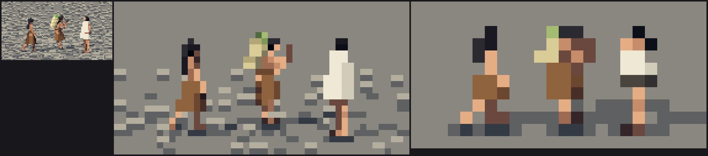
26. (manager scratchpad)/sc.pngBash: Fix gravel, shadows, blanket, carry pose
cd ~/work/pixelart-studies/elements/people/src && python3 - <<'EOF'
s=open('grounds.py').read()
s=s.replace(" ry = max(0.5, r * 0.45)"," ry = max(0.5, r * 0.62)")
s=s.replace(""" dark[sy[ok], sx[ok]] = np.maximum(dark[sy[ok], sx[ok]], 1)""",""" # dithered (checker) where the shadow is far from the feet: a half-tone, as Ferrari's
# soft shadows are; solid close to the contact
far = hpx[ok] > 0.35 * scene.scale
chk = ((sx[ok] + sy[ok]) % 2 == 0)
keep = ~far | chk
dark[sy[ok][keep], sx[ok][keep]] = np.maximum(dark[sy[ok][keep], sx[ok][keep]], 1)""")
open('grounds.py','w').write(s)
s=open('person.py').read()
s=s.replace(""" def bands(tc, xs, ys):
return np.where((tc > 0.62) & (tc < 0.68), 1.0, np.where((tc > 0.76) & (tc < 0.8), 2.0, 0.0))""",""" def bands(tc, xs, ys):
if size_px < 14:
return np.zeros_like(tc)
return np.where((tc > 0.8) & (tc < 0.85), 1.0, np.where((tc > 0.88) & (tc < 0.91), 2.0,
np.where(((xs * 7 + 3) % 5 == 0) & (tc > 0.25), 3.0, 0.0)))""")
open('person.py','w').write(s)
r=open('render.py').read()
r=r.replace(""" mat = np.where(wool & (pat > 1.5), M['DARKB'], mat)""",""" mat = np.where(wool & (pat > 1.5) & (pat < 2.5), M['DARKB'], mat)
step = np.where(wool & (pat > 2.5), step - 1, step) # vertical folds""")
open('render.py','w').write(r)
p=open('poses.py').read()
p=p.replace("p.update(pitch=20, headp=-8, shL=62, shR=58, elL=112, elR=118, sabL=14, sabR=14)","p.update(pitch=20, headp=-6, shL=14, shR=-6, elL=70, elR=20, sabL=10, sabR=8)")
open('poses.py','w').write(p)
EOF
cat > tsc.py <<'EOF'
import sys; sys.path.insert(0,'.')
import numpy as np
from render import Scene, render_scene
from util import up, save, side, vstack
specs = eval(sys.argv[1]); kind = sys.argv[2] if len(sys.argv)>2 else 'GRAVEL'
hour = sys.argv[3] if len(sys.argv)>3 else 'noon'
rows=[]
for size in (32,16,8):
sc=Scene(int(size*3.2), int(size*1.7), size, 10, ground_y=int(size*1.4))
for sp in specs: sc.add_person(dict(sp))
rgb,_=render_scene(sc,kind,hour,(40,40))
rows.append(up(rgb, {32:6,16:12,8:24}[size]))
save(side(rows),'(manager scratchpad)/sc.png')
EOF
python3 tsc.py "[dict(activity='walk',phase=0.1,facing=0,x=-0.8),dict(activity='carry',phase=0.3,facing=0,x=0.0,z=-0.3),dict(activity='stand',facing=150,sex='m',x=0.8,z=0.2, dress='coast_m_blanket')]"
# output:
(Bash completed with no output)Read: (manager scratchpad)/sc.png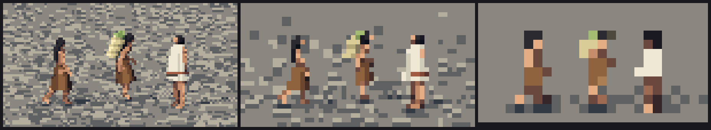
27. (manager scratchpad)/sc.pngBash: Activity phase strips
cd ~/work/pixelart-studies/elements/people/src && cat > tact.py <<'EOF'
import sys; sys.path.insert(0,'.')
import numpy as np
from render import Scene, render_scene
from poses import ACTIVITIES
from util import up, save, grid
acts = sys.argv[1].split(',') if len(sys.argv)>1 and sys.argv[1] else ACTIVITIES
size = int(sys.argv[2]) if len(sys.argv)>2 else 24
facing = float(sys.argv[3]) if len(sys.argv)>3 else 0
out = sys.argv[4] if len(sys.argv)>4 else '(manager scratchpad)/act.png'
cells=[];labs=[]
for a in acts:
for ph in (0.0,0.25,0.5,0.75):
sex = 'm' if a in ('split','spear','dipnet','paddle','carry_load') else 'f'
age = 'child' if a in ('run','squat_play','throw') else ('elder' if a=='staff' else 'adult')
sc=Scene(int(size*2.4), int(size*1.9), size, 10, ground_y=int(size*1.65))
sc.add_person(dict(activity=a,phase=ph,facing=facing,sex=sex,age=age,seed=3))
rgb,_=render_scene(sc,'SAND','noon',(40,40))
cells.append(up(rgb, max(2,144//size))); labs.append(f'{a} {ph}')
save(grid(cells, 8, labs, fs=11), out)
EOF
python3 tact.py stand,walk,carry,carry_load,dig,gather,split,weave,fire,sit 24
# output:
(Bash completed with no output)Read: (manager scratchpad)/act.png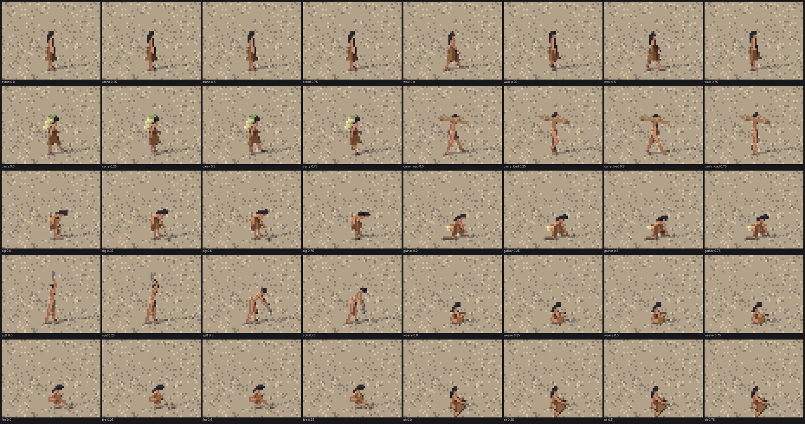
28. (manager scratchpad)/act.pngBash: Redo carry_load, split, weave
cd ~/work/pixelart-studies/elements/people/src && python3 - <<'EOF'
p=open('poses.py').read()
old=p[p.index(" if a == 'carry_load':"):p.index(" if a == 'dig':")]
p=p.replace(old,""" if a == 'carry_load': # carrying salmon up from the weir, one in each hand, arms straight with the weight
p = cycle(WALK, phase)
p.update(pitch=4, headp=4, shL=6, shR=6, elL=6, elR=6, sabL=16, sabR=16)
return p
""")
old=p[p.index(" if a == 'split':"):p.index(" if a == 'weave':")]
p=p.replace(old,""" if a == 'split': # splitting cedar: bent over the log, the hand maul raised to the head, other hand on the wedge
keys = [(0.0, dict(pitch=36, headp=20, hipL=30, hipR=-4, knL=34, knR=14, shR=150, elR=110, sabR=12,
shL=62, elL=16, sabL=6)),
(0.4, dict(pitch=34, headp=18, hipL=30, hipR=-4, knL=34, knR=14, shR=166, elR=124, sabR=12,
shL=62, elL=16, sabL=6)),
(0.55, dict(pitch=46, headp=26, hipL=34, hipR=-2, knL=40, knR=18, shR=58, elR=18, sabR=6,
shL=58, elL=12, sabL=6)),
(0.75, dict(pitch=44, headp=24, hipL=33, hipR=-2, knL=38, knR=17, shR=70, elR=30, sabR=6,
shL=60, elL=14, sabL=6))]
return interp(keys, phase)
""")
open('poses.py','w').write(p)
s=open('person.py').read()
s=s.replace("'carry_load': 'firewood', 'split': 'maul'","'carry_load': 'fish', 'split': 'maul'")
old=s[s.index(" elif prop == 'maul':"):s.index(" elif prop == 'spear':")]
s=s.replace(old,""" elif prop == 'maul':
# a pestle-shaped stone hand maul in the right hand; an elk-antler wedge in a cedar log in front
d = nrm(J['haR'] - J['elR'])
add(hR - d * 0.02 * st, hR + d * 0.1 * st, 0.03 * st, 0.04 * st, 'STONE', tag='maul')
lc = v3(0.34 * st, 0.07 * st, 0)
add(lc + v3(0, 0, 0.32 * st), lc - v3(0, 0, 0.32 * st), 0.075 * st, None, 'CEDAR', tag='log', minw=0.6)
add(lc + v3(0, 0.06 * st, 0), lc + v3(0, 0.13 * st, 0), 0.018 * st, 0.012 * st, 'SHELL', tag='wedge')
""")
old=s[s.index(" elif prop == 'firewood':"):s.index(" elif prop == 'maul':")]
s=s.replace(old,""" elif prop == 'fish':
# a salmon hanging from each hand by the gills
for h_ in (hL, hR):
add(h_ - v3(0, 0.01, 0) * st, h_ - v3(0, 0.3, 0) * st, 0.035 * st, 0.02 * st, 'SILVER', prof='spindle',
tag='fish', minw=0.5)
""")
old=s[s.index(" elif prop == 'weaving':"):s.index(" rec = spec.get('recolor'")]
s=s.replace(old,""" elif prop == 'weaving':
# a basket in the making, upside down on the lap / ground in front, fibres in hand
c = v3(0.2 * st, 0.06 * st, 0)
add(c - v3(0, 0.05, 0) * st, c + v3(0, 0.06, 0) * st, 0.1 * st, 0.07 * st, 'STRAW', caps=False, tag='work',
minw=0.6, pattern=lambda tc, xs, ys: ((ys % 2) == 0) * 1.0)
""")
open('person.py','w').write(s)
EOF
python3 tact.py carry_load,split,weave 32 0 && echo ok
# output:
okRead: (manager scratchpad)/act.png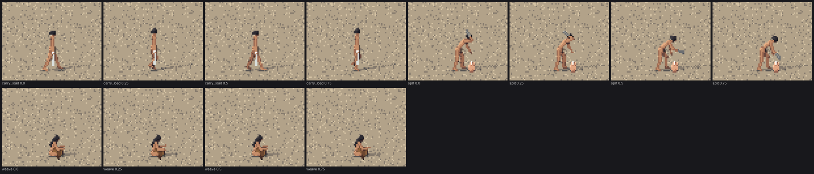
29. (manager scratchpad)/act.pngBash: Better activity viewer
cd ~/work/pixelart-studies/elements/people/src && python3 - <<'EOF'
s=open('tact.py').read()
s=s.replace("sc=Scene(int(size*2.4), int(size*1.9), size, 10, ground_y=int(size*1.65))","sc=Scene(int(size*1.8), int(size*1.45), size, 10, ground_y=int(size*1.25))")
s=s.replace("cells.append(up(rgb, max(2,144//size)))","cells.append(up(rgb, max(2,int(sys.argv[5]) if len(sys.argv)>5 else 6)))")
s=s.replace("save(grid(cells, 8, labs, fs=11), out)","save(grid(cells, 4, labs, fs=11), out)")
open('tact.py','w').write(s)
EOF
python3 tact.py carry_load,split,weave,fire 32 20 x 5 2>&1 | tail -1; python3 tact.py carry_load,split,weave,fire 32 20 (manager scratchpad)/act.png 5
# output:
ValueError: unknown file extension:Read: (manager scratchpad)/act.png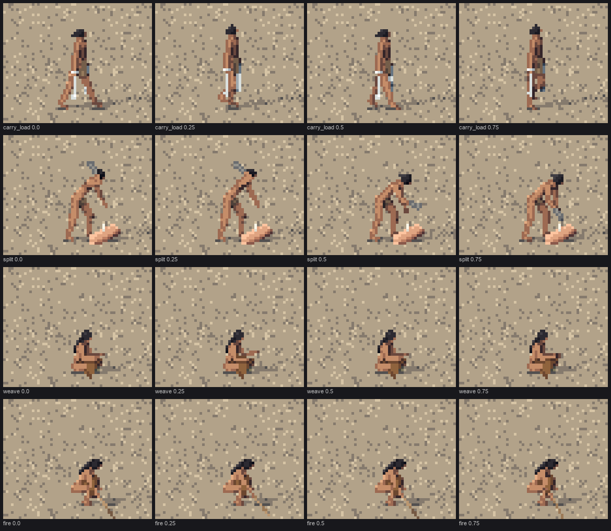
30. (manager scratchpad)/act.pngBash: View next activities
cd ~/work/pixelart-studies/elements/people/src && sed -i '' "s/add(h_ - v3(0, 0.01, 0) \* st, h_ - v3(0, 0.3, 0) \* st, 0.035 \* st, 0.02 \* st, 'SILVER'/add(h_ - v3(0, 0.01, 0) * st, h_ - v3(0, 0.34, 0) * st, 0.05 * st, 0.022 * st, 'SILVER'/" person.py && python3 tact.py sit_log,sit_eat,spear,dipnet,paddle,pound 32 20 (manager scratchpad)/act.png 4 # output: (Bash completed with no output)
Read: (manager scratchpad)/act.png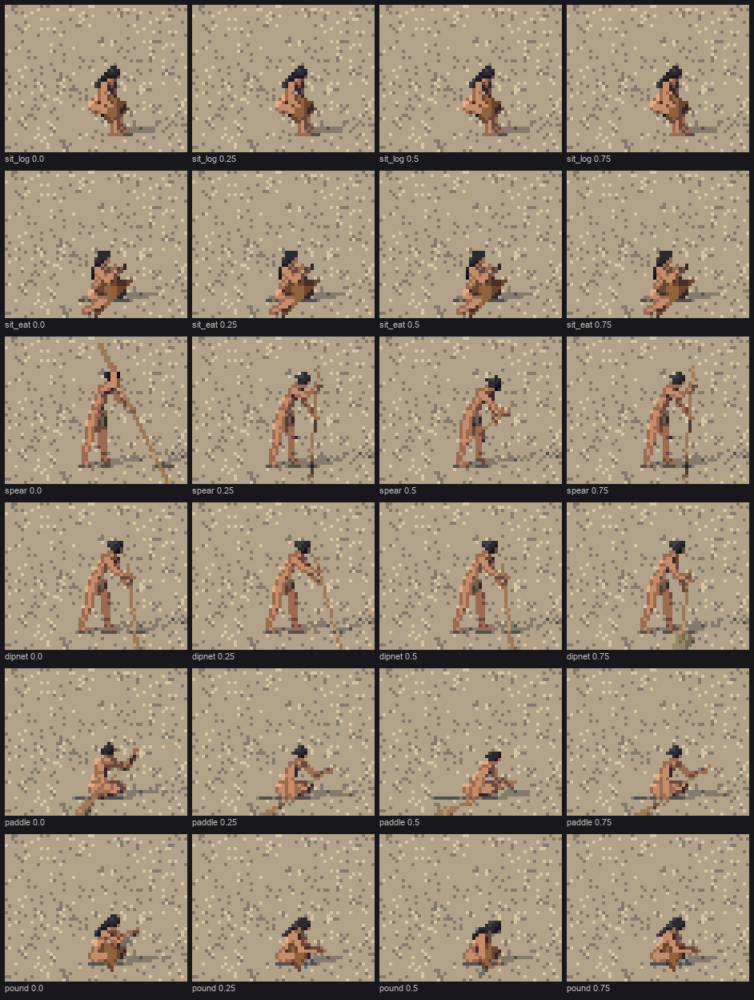
31. (manager scratchpad)/act.pngBash: Fixed-direction props, log, pestle slab
cd ~/work/pixelart-studies/elements/people/src && python3 - <<'EOF'
s=open('person.py').read()
def rep(start, end, new):
global s
a=s.index(start); b=s.index(end, a)
s=s[:a]+new+s[b:]
rep(" elif prop == 'spear':"," elif prop == 'dipnet':",""" elif prop == 'spear':
# a long fish spear held with both hands, pointing down and forward into the water; it
# steepens through the thrust
a = (55 + 20 * math.sin(math.pi * min(1, ph * 2))) * D2R if act == 'spear' else 60 * D2R
d = v3(math.cos(a), -math.sin(a), 0)
add(hm - d * 0.55 * st, hm + d * 1.6 * st, 0.011 * st, 0.009 * st, 'WOOD', tag='spear')
""")
rep(" elif prop == 'dipnet':"," elif prop == 'paddle':",""" elif prop == 'dipnet':
# a long-handled dip net swept downstream: the pole goes forward and down to the water
a = (38 + 8 * math.sin(ph * 2 * math.pi)) * D2R
d = v3(math.cos(a), -math.sin(a), 0.1 * math.sin(ph * 2 * math.pi))
end = hm + d * 2.3 * st
add(hm - d * 0.35 * st, end, 0.012 * st, 0.01 * st, 'WOOD', tag='pole')
add(end, end + v3(0.1, -0.3, 0) * st, 0.14 * st, 0.05 * st, 'NET', prof='spindle', tag='net', minw=0.5)
""")
rep(" elif prop == 'paddle':"," elif prop == 'pestle':",""" elif prop == 'paddle':
# a leaf-bladed paddle nearly upright at the paddler's side (the side away from the viewer
# when possible), swept from the catch forward to the release behind
b = (-25 + 55 * ph if ph < 0.5 else 30 - 55 * (ph - 0.5) * 2) * D2R
d = v3(math.sin(b), -math.cos(b), 0)
side_off = v3(0, 0, 0.16 * st * (1 if sideL >= 0 else -1))
low = J['haR'] + side_off * 0.3
add(low - d * 0.42 * st, low + d * 0.2 * st, 0.011 * st, None, 'WOOD', tag='shaft')
add(low + d * 0.15 * st, low + d * 0.62 * st, 0.012 * st, 0.05 * st, 'WOOD', prof='spindle', tag='blade')
""")
rep(" elif prop == 'pestle':"," elif prop == 'staff':",""" elif prop == 'pestle':
# a stone pestle in both hands over a flat stone (pounding dried salmon or roots)
add(hm + up * 0.02, v3(hm[0], max(hm[1] - 0.2 * st, 0.04 * st), hm[2]), 0.024 * st, 0.03 * st, 'STONE',
tag='pestle')
add(v3(hm[0] - 0.08 * st, 0.02 * st, 0), v3(hm[0] + 0.1 * st, 0.02 * st, 0), 0.03 * st, None, 'STONE',
tag='slab', minw=0.5)
""")
s=s.replace("'weave': 'weaving', 'sit_eat': 'bowl',","'weave': 'weaving', 'sit_eat': 'bowl', 'sit_log': 'log',")
rep(" elif prop == 'bowl':"," elif prop == 'weaving':",""" elif prop == 'bowl':
add(hm, hm + v3(0, 0.03, 0) * st, 0.05 * st, 0.06 * st, 'WOOD', caps=False, tag='bowl')
elif prop == 'log':
# a silvered drift log to sit on, lying across the view
add(v3(-0.1 * st, 0.12 * st, 0.5 * st), v3(-0.05 * st, 0.12 * st, -0.5 * st), 0.12 * st, None, 'LOG',
tag='seatlog', minw=0.7)
""")
open('person.py','w').write(s)
EOF
python3 tact.py sit_log,spear,dipnet,paddle,pound 32 20 (manager scratchpad)/act.png 4
# output:
(Bash completed with no output)Read: (manager scratchpad)/act.png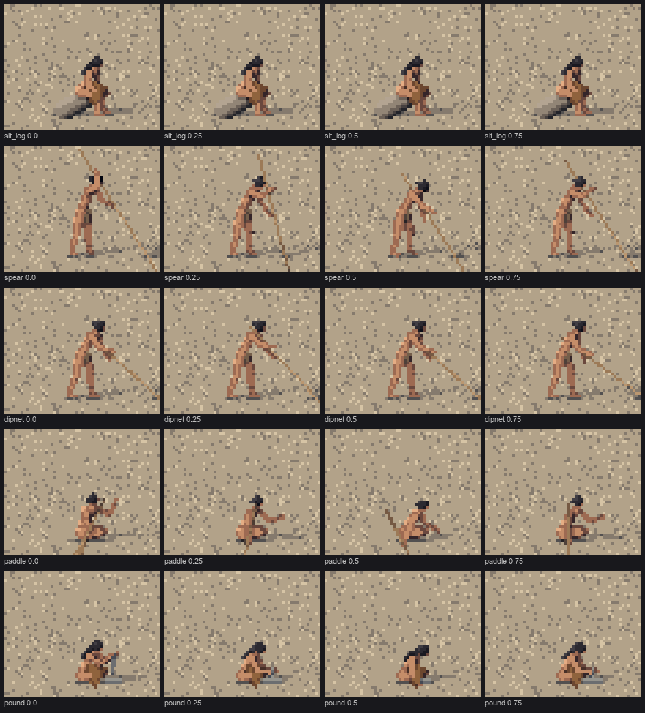
32. (manager scratchpad)/act.pngBash: Add arm IK
cd ~/work/pixelart-studies/elements/people/src && python3 - <<'EOF'
s=open('fig.py').read()
old=""" el = sh + d1 * P['uarm']
d2 = nrm(d1 * math.cos(c) + perp * math.sin(c))
J['el' + s] = el
J['ha' + s] = el + d2 * P['farm']"""
new=""" el = sh + d1 * P['uarm']
d2 = nrm(d1 * math.cos(c) + perp * math.sin(c))
J['el' + s] = el
J['ha' + s] = el + d2 * P['farm']
ik = p.get('ik' + s)
if ik is not None:
# two-bone IK: the hand reaches a target given relative to the chest (f, y, l);
# the elbow bends down, back and out, as elbows do
T = chest + v3(*ik) * P.get('stature', 1.0)
u, f_ = P['uarm'], P['farm']
D = T - sh
dist = np.clip(np.linalg.norm(D), abs(u - f_) + 1e-3, u + f_ - 1e-3)
Dn = nrm(D)
a_ = (u * u - f_ * f_ + dist * dist) / (2 * dist)
h_ = math.sqrt(max(u * u - a_ * a_, 0))
pole = -up * 1.0 - tf * 0.25 + tl * sg * 0.55
pole = nrm(pole - Dn * (pole @ Dn))
el = sh + Dn * a_ + pole * h_
J['el' + s] = el
J['ha' + s] = sh + Dn * dist"""
assert old in s
s=s.replace(old,new)
open('fig.py','w').write(s)
EOF
grep -n "Ps\['head'\] = P\['head'\] \* st" person.py
# output:
82: Ps['head'] = P['head'] * stBash: IK-driven props for two-handed tools
cd ~/work/pixelart-studies/elements/people/src && python3 - <<'EOF'
p=open('poses.py').read()
def rep(start, end, new):
global p
a=p.index(start); b=p.index(end, a)
p=p[:a]+new+p[b:]
rep(" if a == 'dig':"," if a == 'gather':",""" if a == 'dig': # digging stick: bent from the hips, both hands on the stick; lift then thrust
lift = interp([(0.0, dict(v=0.0)), (0.45, dict(v=1.0)), (0.6, dict(v=-0.2))], phase)['v']
base = interp([(0.0, dict(pitch=58, hipL=38, hipR=18, knL=26, knR=14)),
(0.45, dict(pitch=52, hipL=36, hipR=16, knL=22, knR=12)),
(0.6, dict(pitch=64, hipL=40, hipR=20, knL=30, knR=16))], phase)
base.update(headp=12, ikR=(0.2, -0.12 + 0.1 * lift, -0.03), ikL=(0.26, -0.26 + 0.1 * lift, 0.03))
return base
""")
rep(" if a == 'spear':"," if a == 'dipnet':",""" if a == 'spear': # standing fisherman, spear held high, point down (Curtis, Clayoquot fisherman)
t = interp([(0.0, dict(v=0.0)), (0.5, dict(v=1.0))], phase)['v']
return dict(pitch=16 + 12 * t, headp=30, hipL=10 + 4 * t, hipR=-8, knL=12 + 6 * t, knR=8,
ikR=(0.02 + 0.12 * t, 0.12 - 0.12 * t, -0.1), ikL=(0.3 + 0.12 * t, -0.1 - 0.14 * t, 0.02))
""")
rep(" if a == 'dipnet':"," if a == 'paddle':",""" if a == 'dipnet': # long dip-net pole, swept downstream
w = np.sin(phase * 2 * np.pi)
return dict(pitch=26, headp=24, hipL=18, hipR=-10, knL=20, knR=10,
ikR=(0.08 + 0.04 * w, -0.16, -0.06), ikL=(0.34 + 0.04 * w, -0.3, 0.03))
""")
rep(" if a == 'paddle':"," if a == 'pound':",""" if a == 'paddle': # kneeling in a canoe; top hand over the grip, lower hand low on the shaft
t = interp([(0.0, dict(v=0.0)), (0.55, dict(v=1.0))], phase)['v'] # 0 catch -> 1 release
b = (35 - 60 * t) * np.pi / 180
lowx = 0.22 - 0.3 * t
d = np.array([np.sin(b), -np.cos(b), -0.1])
low = np.array([lowx, -0.32, -0.2])
top = low - d * 0.42
return dict(pitch=22 + 10 * t, headp=4, hipL=92, hipR=92, knL=168, knR=168, footL=-60, footR=-60,
twist=-10 + 20 * t, ikR=tuple(low), ikL=tuple(top))
""")
rep(" if a == 'pound':"," if a == 'run':",""" if a == 'pound': # kneeling, stone pestle in both hands
t = interp([(0.0, dict(v=1.0)), (0.5, dict(v=0.0))], phase)['v']
return dict(pitch=26 + 8 * (1 - t), headp=24, hipL=92, hipR=92, knL=168, knR=168, footL=-60, footR=-60,
ikL=(0.3, -0.36 + 0.16 * t, 0.035), ikR=(0.3, -0.36 + 0.16 * t, -0.035))
""")
open('poses.py','w').write(p)
s=open('person.py').read()
def reps(start, end, new):
global s
a=s.index(start); b=s.index(end, a)
s=s[:a]+new+s[b:]
reps(" if prop == 'digstick':"," elif prop == 'basket_back':",""" if prop == 'digstick':
# a fire-hardened digging stick through both hands, down to the ground in front
d = nrm(hL - hR) if np.linalg.norm(hL - hR) > 0.02 else nrm(v3(0.3, -1, 0))
top = hR - d * 0.08 * st
t_ground = (top[1]) / max(-d[1], 1e-3)
bot = top + d * min(t_ground, 0.8 * st)
add(top, bot, 0.013 * st, 0.011 * st, 'WOOD', tag='stick')
if region == 'plateau': # antler cross-handle
add(top + v3(0, 0, 0.05 * st), top - v3(0, 0, 0.05 * st), 0.014 * st, None, 'STONE', tag='antler')
""")
reps(" elif prop == 'spear':"," elif prop == 'dipnet':",""" elif prop == 'spear':
d = nrm(hL - hR)
add(hR - d * 0.4 * st, hR + d * 1.8 * st, 0.011 * st, 0.009 * st, 'WOOD', tag='spear')
""")
reps(" elif prop == 'dipnet':"," elif prop == 'paddle':",""" elif prop == 'dipnet':
d = nrm(hL - hR)
end = hR + d * 2.5 * st
add(hR - d * 0.3 * st, end, 0.012 * st, 0.01 * st, 'WOOD', tag='pole')
add(end, end + v3(0.1, -0.3, 0) * st, 0.14 * st, 0.05 * st, 'NET', prof='spindle', tag='net', minw=0.5)
""")
reps(" elif prop == 'paddle':"," elif prop == 'pestle':",""" elif prop == 'paddle':
d = nrm(hR - hL)
add(hL - d * 0.06 * st, hR + d * 0.2 * st, 0.011 * st, None, 'WOOD', tag='shaft')
add(hR + d * 0.15 * st, hR + d * 0.6 * st, 0.012 * st, 0.05 * st, 'WOOD', prof='spindle', tag='blade')
""")
open('person.py','w').write(s)
EOF
python3 tact.py dig,spear,dipnet,paddle,pound 32 20 (manager scratchpad)/act.png 4
# output:
(Bash completed with no output)Read: (manager scratchpad)/act.png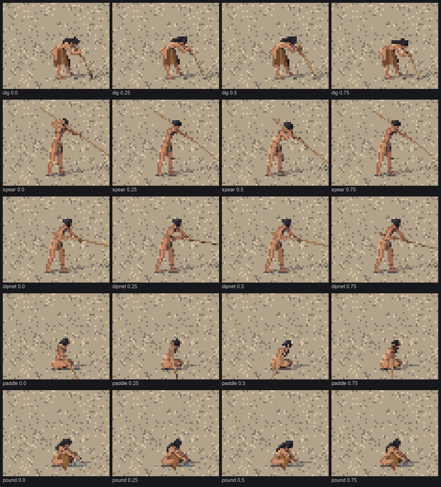
33. (manager scratchpad)/act.pngBash: Steepen spear and dipnet
cd ~/work/pixelart-studies/elements/people/src && python3 - <<'EOF'
p=open('poses.py').read()
p=p.replace("ikR=(0.02 + 0.12 * t, 0.12 - 0.12 * t, -0.1), ikL=(0.3 + 0.12 * t, -0.1 - 0.14 * t, 0.02))",
"ikR=(0.04 + 0.1 * t, 0.1 - 0.14 * t, -0.1), ikL=(0.2 + 0.1 * t, -0.2 - 0.14 * t, 0.02))")
p=p.replace("ikR=(0.08 + 0.04 * w, -0.16, -0.06), ikL=(0.34 + 0.04 * w, -0.3, 0.03))",
"ikR=(0.06 + 0.04 * w, -0.12, -0.06), ikL=(0.26 + 0.04 * w, -0.34, 0.03))")
open('poses.py','w').write(p)
EOF
echo done
# output:
doneWrite: elements/people/src/setting.py
"""Things people work with and around: a hearth and its fire, a dugout canoe, a salmon weir, a
drying rack, mats, baskets on the ground. Capsule props go through the same z-buffer as the
figures; fire and water are painted in index space after shading.
Sizes from the naturalist's guides 03/04/06: canoes 3-9 m (Twana local canoes rarely above
6.7 x 1.2 m), paddles 1.2-1.5 m, weirs of stakes and lattice panels across the river with a
platform for the dip-netters, drying racks of poles with split salmon.
Units are adult heights (~1.65 m), so 1 m ~ 0.6 units.
"""
import math
import numpy as np
from fig import Prim, v3, D2R
from pal import M
MU = 1 / 1.65 # one metre in units
def hearth(x=0.0, z=0.0, scale=1.0, n_logs=4, seed=0):
"""A ring of stones and a few burning sticks meeting in the middle."""
rng = np.random.default_rng(seed)
P = []
R = 0.32 * MU / 0.6 * scale * 0.6
for i in range(9):
a = i / 9 * 2 * math.pi + rng.uniform(-0.2, 0.2)
c = v3(x + math.cos(a) * R, 0.035, z + math.sin(a) * R * 0.9)
P.append(Prim(c, c, 0.045 * rng.uniform(0.8, 1.2), None, 'STONE', tag='hstone', minw=0.4))
for i in range(n_logs):
a = i / n_logs * 2 * math.pi + rng.uniform(-0.3, 0.3)
o = v3(x + math.cos(a) * R * 0.9, 0.03, z + math.sin(a) * R * 0.8)
c = v3(x, 0.07, z)
P.append(Prim(o, c, 0.022, 0.016, 'LOG', tag='hlog', minw=0.4))
return P
def canoe(x=0.0, z=0.0, length=3.6, beam=0.42, depth=0.22, heading=0.0, waterline=0.06, kind='salish'):
"""A dugout hull: a long spindle cut off at the gunwale, the inside darker. heading in degrees
(0 = pointing screen right). Returns prims; the hull's upper half is clipped by the caller's
gunwale test (we use two prims: the outer hull below the gunwale, the dark interior)."""
h = heading * D2R
ax = v3(math.cos(h), 0, math.sin(h))
c = v3(x, waterline + depth * 0.1, z)
a, b = c - ax * length / 2, c + ax * length / 2
P = []
# outer hull: a spindle, only the part below the gunwale plane is kept (clip set in Scene)
hull = Prim(a, b, beam * 0.1, beam * 0.5, 'WOOD', prof='spindle', tag='hull', minw=0.5)
hull.gunwale = c[1]
P.append(hull)
# the dark interior seen from above: a slightly narrower flat spindle at the gunwale
inner = Prim(a + ax * 0.12, b - ax * 0.12, beam * 0.05, beam * 0.42, 'DARKB', prof='spindle', tag='hullin',
minw=0.4)
inner.flat = c[1]
P.append(inner)
# the bow: a raised prow for the Salish canoe
if kind == 'salish':
P.append(Prim(b - ax * 0.25 + v3(0, depth * 0.3, 0), b + ax * 0.12 + v3(0, depth * 0.9, 0), 0.03, 0.02,
'WOOD', tag='prow'))
return P
def weir(x0=-2.0, x1=2.0, z=0.0, n=None, h=0.9, water=0.25):
"""A line of stakes across the river with lattice panels between, and a stringer on top."""
P = []
n = n or int((x1 - x0) / 0.18) + 1
for i in range(n):
x = x0 + (x1 - x0) * i / (n - 1)
lean = 0.06 * math.sin(i * 1.7)
P.append(Prim(v3(x, -0.1, z), v3(x + lean, h + 0.05 * math.sin(i * 2.3), z - 0.05), 0.022, 0.018, 'WOOD',
tag='stake', minw=0.4))
for yy in (water + 0.08, water + 0.25, h - 0.08):
P.append(Prim(v3(x0, yy, z + 0.02), v3(x1, yy, z + 0.02), 0.012, None, 'NET', tag='lattice'))
return P
def platform(x, z, w=0.9, h=0.55):
"""A small fishing platform of poles on the weir."""
P = []
for dx in (-w / 2, w / 2):
for dz in (-0.15, 0.15):
P.append(Prim(v3(x + dx, -0.1, z + dz), v3(x + dx, h, z + dz), 0.02, None, 'WOOD', tag='ppost', minw=0.4))
P.append(Prim(v3(x - w / 2 - 0.05, h, z), v3(x + w / 2 + 0.05, h, z), 0.045, None, 'LOG', tag='pdeck',
minw=0.5))
return P
def rack(x=0.0, z=0.0, w=1.6, h=1.05, fish=6, seed=0):
"""A drying rack: two forked posts, a crossbar, split salmon hanging red."""
rng = np.random.default_rng(seed)
P = [Prim(v3(x - w / 2, 0, z), v3(x - w / 2, h, z), 0.022, None, 'WOOD', tag='rpost', minw=0.4),
Prim(v3(x + w / 2, 0, z), v3(x + w / 2, h, z), 0.022, None, 'WOOD', tag='rpost', minw=0.4),
Prim(v3(x - w / 2 - 0.08, h - 0.02, z), v3(x + w / 2 + 0.08, h - 0.02, z), 0.016, None, 'WOOD', tag='rbar')]
for i in range(fish):
fx = x - w / 2 + w * (i + 0.5) / fish + rng.uniform(-0.03, 0.03)
P.append(Prim(v3(fx, h - 0.04, z), v3(fx, h - 0.34 - rng.uniform(0, 0.06), z), 0.045, 0.03, 'FISH',
prof='spindle', tag='rfish', minw=0.5))
return P
def ground_basket(x, z, r=0.1, h=0.16, mat='STRAW'):
return [Prim(v3(x, 0.0, z), v3(x, h, z), r, r * 1.1, mat, caps=False, tag='gbasket', minw=0.5)]
def mat_on_ground(x, z, w=0.9, d=0.6):
return [Prim(v3(x - w / 2, 0.01, z), v3(x + w / 2, 0.01, z), d / 2, None, 'MAT', tag='gmat', minw=0.4)]
# ----------------------------------------------------------------------------------------------
# fire and smoke, painted into the index canvas
def paint_fire(idx, cx, cy, size_px, phase=0.0, seed=0, zbuf=None):
"""A small cooking fire at screen (cx, cy) (its base), for a figure scale of size_px px.
Embers along the base, two or three flame tongues whose tips flicker with phase, a
bright core. Flame height ~0.3 units."""
rng = np.random.default_rng(seed)
H, W = idx.shape
fh = max(2.0, 0.34 * size_px)
fw = max(1.5, 0.22 * size_px)
out = idx.copy()
nt = 3 if size_px >= 14 else 2
for t in range(nt):
off = (t - (nt - 1) / 2) * fw * 0.55
hh = fh * (0.6 + 0.4 * abs(math.sin(phase * 2 * math.pi * (1 + 0.37 * t) + t * 1.3)))
ww = fw * 0.45
for y in range(int(math.ceil(hh)) + 1):
frac = y / max(hh, 1)
half = ww * (1 - frac) ** 0.8
sway = math.sin(phase * 6.28 * 1.3 + y * 0.7 + t) * 0.35 * frac * fw * 0.3
x0 = int(round(cx + off + sway - half))
x1 = int(round(cx + off + sway + half))
yy = int(round(cy - y))
if not (0 <= yy < H):
continue
for xx in range(max(0, x0), min(W, x1 + 1)):
core = abs(xx + 0.5 - (cx + off + sway)) < half * 0.45 and frac < 0.55
st = 4 if core else (3 if frac < 0.75 else 2)
if frac > 0.85:
st = 1
out[yy, xx] = M['FIRE'] * 8 + st
# embers
for xx in range(int(cx - fw * 0.6), int(cx + fw * 0.6) + 1):
if 0 <= xx < W and 0 <= int(cy) < H:
out[int(cy), xx] = M['FIRE'] * 8 + (2 if rng.random() < 0.6 else 1)
return out
def paint_smoke(idx, cx, cy, size_px, phase=0.0, seed=0, drift=0.6, rows=None, hour_dark=False):
"""Blue woodsmoke rising and leaning with the wind: a dithered column that thins upward."""
rng = np.random.default_rng(seed)
H, W = idx.shape
out = idx.copy()
L = int(rows or size_px * 1.8)
for y in range(L):
frac = y / L
xc = cx + drift * y * (0.3 + frac) + math.sin(frac * 7 + phase * 6.28) * size_px * 0.05
half = max(0.5, size_px * (0.05 + 0.18 * frac))
for xx in range(int(xc - half), int(xc + half) + 1):
yy = int(cy - y)
if not (0 <= yy < H and 0 <= xx < W):
continue
p = 0.75 * (1 - frac) ** 1.2
if ((xx + yy) % 2 == 0 and rng.random() < p * 1.3) or rng.random() < p * 0.35:
out[yy, xx] = M['SMOKE'] * 8 + (2 if frac < 0.4 else 1 if hour_dark else 2)
return out
Bash: Add flat and gunwale-clip primitives
cd ~/work/pixelart-studies/elements/people/src && python3 - <<'EOF'
s=open('fig.py').read()
s=s.replace("'pattern', 'minw', 'zb')","'pattern', 'minw', 'zb', 'gunwale', 'flat')")
s=s.replace(" self.zb = zb\n"," self.zb = zb\n self.gunwale = None\n self.flat = None\n")
old=""" if prim.prof == 'disk':"""
new=""" if prim.flat is not None:
# a horizontal spindle lying in the plane y = flat (the inside of a canoe, a mat)
ce, se = math.cos(self.e), math.sin(self.e)
su = (oy - py) / scale
yp = prim.flat
if se < 1e-3:
return
zw = (yp * ce - su) / se
xw = (px - ox) / scale
ax, az = prim.a[0], prim.a[2]
bx, bz = prim.b[0], prim.b[2]
dxw, dzw = bx - ax, bz - az
L2w = dxw * dxw + dzw * dzw
tt = np.clip(((xw - ax) * dxw + (zw - az) * dzw) / max(L2w, 1e-9), 0, 1)
rr_ = prim.r0 + (prim.r1 - prim.r0) * np.sin(np.pi * tt) ** 0.7 if prim.prof == 'spindle' else \\
prim.r0 + (prim.r1 - prim.r0) * tt
dd = np.hypot(xw - (ax + dxw * tt), zw - (az + dzw * tt))
inside = dd <= rr_
if not inside.any():
return
depth = (zw * ce + yp * se) * scale + prim.zb
wn = np.zeros(px.shape + (3,))
wn[..., 1] = 1.0
sub = (slice(y0, y1 + 1), slice(x0, x1 + 1))
win = inside & (depth > self.z[sub])
self._commit(sub, win, depth, wn, prim, pid, figid, None, None, xs, ys)
return
if prim.prof == 'disk':"""
assert old in s
s=s.replace(old,new,1)
old=""" rr = np.maximum(r, 0.5)
zc2 = np.maximum(rr ** 2 - dist2, 0)
zs = np.sqrt(zc2)
depth = A[2] + (B[2] - A[2]) * tc + zs + prim.zb
"""
new=""" rr = np.maximum(r, 0.5)
zc2 = np.maximum(rr ** 2 - dist2, 0)
zs = np.sqrt(zc2)
depth = A[2] + (B[2] - A[2]) * tc + zs + prim.zb
if prim.gunwale is not None:
# keep only the surface below the gunwale plane (world y from screen + depth)
ce, se = math.cos(self.e), math.sin(self.e)
su = (oy - py) / scale
wy = su * ce + (depth / scale) * se
inside &= wy <= prim.gunwale + 0.5 / scale
if not inside.any():
return
"""
assert old in s
s=s.replace(old,new)
open('fig.py','w').write(s)
EOF
echo ok
# output:
okBash: Firelight shading and a fire group test
cd ~/work/pixelart-studies/elements/people/src && python3 - <<'EOF'
r=open('render.py').read()
# shade signature: add fire support using world positions
r=r.replace("def shade(cv, L, size_px, fire=None, fire_rgb_w=0.0, seed=0, seam=True, hi=True):",
"def shade(cv, L, size_px, fire=None, fire_rgb_w=0.0, seed=0, seam=True, hi=True, wpos=None, sun_on=True):")
old=""" step = np.where(lam > 0.38, 3, np.where(lam > 0.04, 2, 1))
if hi and size_px >= 22:
step = np.where(lam > 0.88, 4, step)
"""
new=""" step = np.where(lam > 0.38, 3, np.where(lam > 0.04, 2, 1))
if hi and size_px >= 22:
step = np.where(lam > 0.88, 4, step)
if not sun_on:
step = np.where(n[..., 1] > 0.3, 1, np.where(lam > -2, 1, 1))
if fire is not None and wpos is not None:
# firelight: a point light low in the middle of the hearth; faces turned to it take the lit
# family (warm, from the night palette), the rest stay in the cool ambient
for fp, reach in fire:
dv = np.asarray(fp)[None, None, :] - wpos
dist = np.linalg.norm(dv, axis=-1)
dn = dv / np.maximum(dist, 1e-6)[..., None]
lf = np.maximum((n * dn).sum(-1), 0) / (1 + (dist / reach) ** 2)
fs = np.where(lf > 0.5, 4 if (hi and size_px >= 22) else 3, np.where(lf > 0.28, 3,
np.where(lf > 0.12, 2, 0)))
step = np.maximum(step, fs)
"""
assert old in r
r=r.replace(old,new)
old="""def render_scene(sc, ground_kind='GRAVEL', hour='noon', sun=(40, 40), seed=0, size_px=None, ground_idx=None,
edges=True, cast_len=1.0, depth=0.0):
from grounds import ground, shadows
L = light_vec(*sun)
size_px = size_px or sc.scale
shade(sc.cv, L, size_px, seed=seed)
H, W = sc.cv.idx.shape
g = ground_idx if ground_idx is not None else ground(ground_kind, H, W, sc.scale, seed)
g = shadows(sc, L, g, cast_len=cast_len)"""
new="""def world_pos(sc):
cv = sc.cv
H, W = cv.idx.shape
ys, xs = np.mgrid[0:H, 0:W]
ce, se = math.cos(cv.e), math.sin(cv.e)
su = (sc.oy - (ys + 0.5)) / sc.scale
dz = cv.z / sc.scale
x = (xs + 0.5 - sc.ox) / sc.scale
y = su * ce + dz * se
z = -su * se + dz * ce
return np.stack([x, y, z], -1)
def fire_ground(sc, g, fires, size_px, seed=0):
\"\"\"Lift the ground's steps around each fire (radial, dithered at the edge).\"\"\"
H, W = g.shape
ys, xs = np.mgrid[0:H, 0:W]
ce, se = math.cos(sc.cv.e), math.sin(sc.cv.e)
# ground-plane coordinates of each pixel (y = 0)
su = (sc.oy - (ys + 0.5)) / sc.scale
zw = -su / max(se, 1e-3)
xw = (xs + 0.5 - sc.ox) / sc.scale
lift = np.zeros((H, W))
for fp, reach in fires:
d = np.hypot(xw - fp[0], zw - fp[2])
lift = np.maximum(lift, 2.6 / (1 + (d / (reach * 0.8)) ** 2))
rng = np.random.default_rng(seed)
lift = np.floor(lift + rng.random((H, W)) * 0.999 * ((ys + xs) % 2 * 0.5 + 0.25)).astype(int)
st = np.clip(g % 8 + lift - 1, 0, 4)
return np.where(g > 0, (g // 8) * 8 + st, 0).astype(np.int16)
def render_scene(sc, ground_kind='GRAVEL', hour='noon', sun=(40, 40), seed=0, size_px=None, ground_idx=None,
edges=True, cast_len=1.0, depth=0.0, fires=None, post=None):
\"\"\"fires: list of ((x, y, z), reach) world positions of firelight; post: callback(idx, sc) for
painting fire/smoke/water in index space before the palette.\"\"\"
from grounds import ground, shadows
L = light_vec(*sun)
size_px = size_px or sc.scale
night = hour == 'night'
wp = world_pos(sc) if fires else None
shade(sc.cv, L, size_px, seed=seed, fire=fires, wpos=wp, sun_on=not night)
H, W = sc.cv.idx.shape
g = ground_idx if ground_idx is not None else ground(ground_kind, H, W, sc.scale, seed)
if night:
g = np.where(g > 0, (g // 8) * 8 + np.clip(g % 8 - 1, 0, 4), 0).astype(np.int16)
if fires:
g = fire_ground(sc, g, fires, size_px, seed)
else:
g = shadows(sc, L, g, cast_len=cast_len)"""
assert old in r
r=r.replace(old,new)
old=""" if edges:
idx = edge_rule(idx, fm, lut)
return lut[idx], idx"""
new=""" if edges:
idx = edge_rule(idx, fm, lut)
if post is not None:
idx = post(idx, sc)
return lut[idx], idx"""
r=r.replace(old,new)
open('render.py','w').write(r)
EOF
cat > tfire.py <<'EOF'
import sys; sys.path.insert(0,'.')
import numpy as np, math
from render import Scene, render_scene
from setting import hearth, paint_fire, paint_smoke
from util import up, save, side
hour = sys.argv[1] if len(sys.argv)>1 else 'night'
rows=[]
for size in (32,16,8):
sc=Scene(int(size*3.4), int(size*1.9), size, 14, ground_y=int(size*1.55))
sc.add_prims(hearth(0,0))
ring=[(-0.55,0.1,20,'sit_log','f','coast_f_wool'),(0.55,0.05,160,'sit','m','coast_m_fur'),(0.0,-0.55,90,'fire','f','coast_f_summer'),(-0.35,0.55,300,'sit','m','coast_m_blanket'),(0.45,-0.45,120,'weave','f','coast_f_summer')]
for x,z,f,a,sx,d in ring:
sc.add_person(dict(activity=a,x=x,z=z,facing=f,sex=sx,dress=d,seed=int(x*10)))
fires=[((0,0.12,0),0.55)] if hour=='night' else None
def post(idx, sc):
p = sc.screen((0,0,0))
idx = paint_fire(idx, p[0], p[1]-0.5, size, phase=0.3)
idx = paint_smoke(idx, p[0], p[1]-0.4*size, size, hour_dark=(hour=='night'))
return idx
rgb,_=render_scene(sc,'DIRT',hour,(40,40),fires=fires,post=post)
rows.append(up(rgb,{32:5,16:10,8:20}[size]))
save(side(rows),'(manager scratchpad)/fire.png')
EOF
python3 tfire.py night
# output:
Exit code 1
Traceback (most recent call last):
File "~/work/pixelart-studies/elements/people/src/tfire.py", line 20, in <module>
rgb,_=render_scene(sc,'DIRT',hour,(40,40),fires=fires,post=post)
^^^^^^^^^^^^^^^^^^^^^^^^^^^^^^^^^^^^^^^^^^^^^^^^^^^^^^^^^^
File "~/work/pixelart-studies/elements/people/src/render.py", line 292, in render_scene
shade(sc.cv, L, size_px, seed=seed, fire=fires, wpos=wp, sun_on=not night)
File "~/work/pixelart-studies/elements/people/src/render.py", line 126, in shade
fpos, fstr = fire
^^^^^^^^^^
ValueError: not enough values to unpack (expected 2, got 1)Bash: Remove stale fire stub and rerun
cd ~/work/pixelart-studies/elements/people/src && python3 - <<'EOF'
r=open('render.py').read()
a=r.index(" # firelight: warm lift on faces turned to the fire\n if fire is not None:")
b=r.index(" # seams: nearer part")
r=r[:a]+r[b:]
open('render.py','w').write(r)
EOF
python3 tfire.py night
# output:
~/work/pixelart-studies/elements/people/src/setting.py:127: ComplexWarning: Casting complex values to real discards the imaginary part
x0 = int(round(cx + off + sway - half))
~/work/pixelart-studies/elements/people/src/setting.py:128: ComplexWarning: Casting complex values to real discards the imaginary part
x1 = int(round(cx + off + sway + half))Bash: Fix negative power in fire
cd ~/work/pixelart-studies/elements/people/src && sed -i '' 's/ half = ww \* (1 - frac) \*\* 0.8/ half = ww * max(0.0, 1 - frac) ** 0.8/' setting.py && python3 tfire.py night # output: (Bash completed with no output)
Read: (manager scratchpad)/fire.png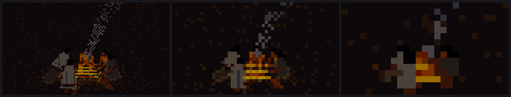
34. (manager scratchpad)/fire.pngBash: Rewrite fire, night palette, spread the ring
cd ~/work/pixelart-studies/elements/people/src && python3 - <<'EOF'
s=open('setting.py').read()
a=s.index("def paint_fire(")
b=s.index("def paint_smoke(")
s=s[:a]+'''def paint_fire(idx, cx, cy, size_px, phase=0.0, seed=0, zbuf=None, zfire=None):
"""A small cooking fire whose base is at screen (cx, cy), for a figure scale of size_px px.
Two or three teardrop tongues (each a hot core inside a cooler rim), tips flickering with
phase; embers along the base. Flame height ~0.3 units. Pixels of the scene nearer than the
fire (zbuf > zfire) are left alone, so people in front of the hearth hide it."""
H, W = idx.shape
out = idx.copy()
fh = max(2.2, 0.3 * size_px)
fw = max(1.6, 0.2 * size_px)
ys, xs = np.mgrid[0:H, 0:W]
px, py = xs + 0.5, ys + 0.5
heat = np.zeros((H, W))
nt = 3 if size_px >= 14 else 2
for t in range(nt):
off = (t - (nt - 1) / 2) * fw * 0.42
hh = fh * (0.55 + 0.45 * abs(math.sin(phase * 2 * math.pi * (1 + 0.37 * t) + t * 1.9)))
if t == (nt - 1) // 2:
hh = max(hh, fh * 0.85)
v = np.clip((cy - py) / hh, 0, 1.2) # 0 at the base, 1 at the tip
sway = np.sin(phase * 6.28 + t * 2.1) * 0.25 * fw * v ** 2
half = fw * 0.34 * np.sqrt(np.maximum(0, 1 - v)) * (1 + 0.6 * np.exp(-((v - 0.25) / 0.25) ** 2))
d = np.abs(px - (cx + off + sway)) / np.maximum(half, 1e-3)
inside = (d <= 1) & (py <= cy + 0.5) & (v < 1)
heat = np.maximum(heat, np.where(inside, (1 - d) * 0.6 + (1 - v) * 0.6, 0))
st = np.where(heat > 0.85, 4, np.where(heat > 0.45, 3, np.where(heat > 0.15, 2, 1)))
m = heat > 0
# embers along the base
ex = (np.abs(px - cx) <= fw * 0.6) & (np.abs(py - cy) < 0.6)
st = np.where(ex & ~m, 2, st)
m = m | ex
if zbuf is not None and zfire is not None:
m &= ~(zbuf > zfire)
out[m] = M['FIRE'] * 8 + st[m]
return out
'''+s[b:]
open('setting.py','w').write(s)
p=open('pal.py').read()
p=p.replace(" c[0] *= key if i < 3 else (key * 0.6 + 0.4 * key ** 0.5)",""" if hour == 'night':
c[0] *= (0.42, 0.5, 0.85, 0.95, 1.0)[i] # dark cool ambient, bright warm firelight
else:
c[0] *= key if i < 3 else (key * 0.6 + 0.4 * key ** 0.5)""")
open('pal.py','w').write(p)
t=open('tfire.py').read()
t=t.replace("ring=[(-0.55,0.1,20,'sit_log','f','coast_f_wool'),(0.55,0.05,160,'sit','m','coast_m_fur'),(0.0,-0.55,90,'fire','f','coast_f_summer'),(-0.35,0.55,300,'sit','m','coast_m_blanket'),(0.45,-0.45,120,'weave','f','coast_f_summer')]",
"ring=[(-0.8,0.1,0,'sit_log','f','coast_f_wool'),(0.85,0.05,180,'sit','m','coast_m_fur'),(0.05,-0.75,90,'fire','f','coast_f_summer'),(-0.45,0.75,300,'sit','m','coast_m_blanket'),(0.6,-0.6,130,'weave','f','coast_f_summer')]")
t=t.replace("idx = paint_fire(idx, p[0], p[1]-0.5, size, phase=0.3)","idx = paint_fire(idx, p[0], p[1]-0.5, size, phase=0.3, zbuf=sc.cv.z, zfire=p[2])")
open('tfire.py','w').write(t)
EOF
python3 tfire.py night
# output:
(Bash completed with no output)Read: (manager scratchpad)/fire.png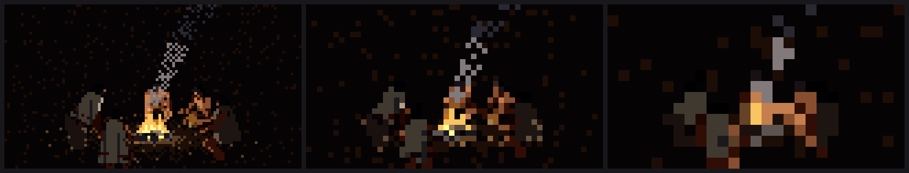
35. (manager scratchpad)/fire.pngBash: Stronger smooth firelit ground, dim smoke
cd ~/work/pixelart-studies/elements/people/src && python3 - <<'EOF'
r=open('render.py').read()
old=r[r.index(" lift = np.zeros((H, W))\n for fp, reach in fires:"):r.index("def render_scene")]
new=""" lift = np.zeros((H, W))
for fp, reach in fires:
d = np.hypot(xw - fp[0], zw - fp[2])
lift = np.maximum(lift, 3.2 / (1 + (d / (reach * 1.6)) ** 2))
bayer = np.array([[0.125, 0.625], [0.875, 0.375]])[ys % 2, xs % 2]
lift = np.floor(lift - 0.6 + bayer).astype(int)
st = np.clip(g % 8 + np.maximum(lift, 0), 0, 4)
return np.where(g > 0, (g // 8) * 8 + st, 0).astype(np.int16)
"""
r=r.replace(old,new)
r=r.replace(""" g = np.where(g > 0, (g // 8) * 8 + np.clip(g % 8 - 1, 0, 4), 0).astype(np.int16)""",""" g = np.where(g > 0, (g // 8) * 8 + np.clip(np.minimum(g % 8, 2) - 1, 0, 4), 0).astype(np.int16)""")
open('render.py','w').write(r)
s=open('setting.py').read()
s=s.replace(""" out[yy, xx] = M['SMOKE'] * 8 + (2 if frac < 0.4 else 1 if hour_dark else 2)""",""" out[yy, xx] = M['SMOKE'] * 8 + ((1 if frac < 0.25 else 0) if hour_dark else (2 if frac < 0.5 else 1))""")
open('setting.py','w').write(s)
EOF
sed -i '' 's/rows.append(up(rgb,{32:5,16:10,8:20}\[size\]))/rows.append(up(rgb,{32:6,16:8,8:12}[size]))/' tfire.py
python3 tfire.py night
# output:
(Bash completed with no output)Read: (manager scratchpad)/fire.png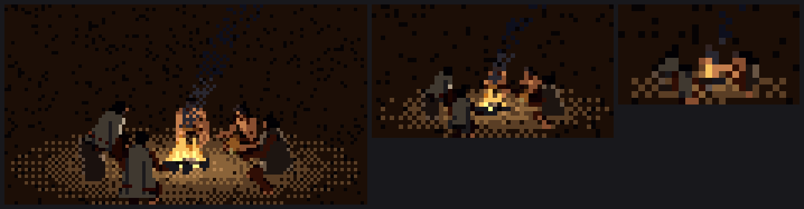
36. (manager scratchpad)/fire.pngWrite: elements/people/src/water.py
"""Water for people who stand in it, fish from it and paddle on it.
The studio's measured rules (master copy, analysis, willow stage 5): the reflection is an exact
mirror with a compressed range (lights drop, darks stay), cut by horizontal dash rows, and the
water's own colour carries a sheen band under reflected objects. Here the mirror is exact because
the z-buffer gives every pixel a world position: each object pixel is reflected about the water
plane y = wl and re-projected. Parts below the plane are hidden (legs in the river, stake feet).
"""
import math
import numpy as np
from pal import M
def water_ground(h, w, scale, seed=0, calm=0.7):
"""Water index canvas: base step 2, dark and light dashes in horizontal rows, longer near."""
rng = np.random.default_rng(seed)
step = np.full((h, w), 2, int)
for y in range(h):
near = (y + 1) / h
n = int(w * (1 - calm) * 0.25 * (0.5 + near))
for _ in range(n):
L = max(1, int(rng.integers(1, 3 + int(near * scale * 0.12))))
x = int(rng.integers(0, w))
step[y, x:x + L] = 3 if rng.random() < 0.45 else 1
return (M['WATER'] * 8 + step).astype(np.int16)
def reflect(sc, idx_fig, wpos, water_mask, wl=0.0, seed=0, drop=1, dash=0.22):
"""Return (idx of reflections, mask). idx_fig: shaded figure/prop index canvas."""
H, W = idx_fig.shape
rng = np.random.default_rng(seed)
out = np.zeros((H, W), np.int16)
m = idx_fig > 0
ys, xs = np.nonzero(m)
P = wpos[ys, xs]
above = P[:, 1] >= wl
ys, xs, P = ys[above], xs[above], P[above]
ce, se = math.cos(sc.cv.e), math.sin(sc.cv.e)
yr = 2 * wl - P[:, 1]
su = yr * ce - P[:, 2] * se
ry = np.rint(sc.oy - su * sc.scale - 0.5).astype(int)
ok = (ry >= 0) & (ry < H)
ys, xs, ry = ys[ok], xs[ok], ry[ok]
src = idx_fig[ys, xs]
st = np.clip(src % 8 - drop, 0, 4)
# lights drop more than darks (compressed range)
st = np.where(src % 8 >= 3, st - 1, st)
st = np.clip(st, 0, 4)
val = (src // 8) * 8 + st
# dash rows: some rows of the reflection break up
rowbreak = rng.random(H) < dash
keep = ~rowbreak[ry] | (rng.random(len(ry)) < 0.35)
ys, xs, ry, val = ys[keep], xs[keep], ry[keep], val[keep]
ok = water_mask[ry, xs]
out[ry[ok], xs[ok]] = val[ok]
return out, out > 0
def submerge(idx, wpos, fig_mask, wl, water_idx):
"""Hide the parts of figures and props below the water plane."""
under = fig_mask & (wpos[..., 1] < wl - 0.005)
return np.where(under, water_idx, idx), under
Bash: Water rendering and weir test
cd ~/work/pixelart-studies/elements/people/src && python3 - <<'EOF'
r=open('render.py').read()
old=""" fm = sc.cv.idx > 0
idx = np.where(fm, sc.cv.idx, g).astype(np.int16)
lut = palette(hour, depth)"""
new=""" fm = sc.cv.idx > 0
if water is not None:
from water import water_ground, reflect, submerge
wl = water.get('wl', 0.0)
zs = water.get('z_shore', None)
ys_, xs_ = np.mgrid[0:H, 0:W]
ce, se = math.cos(sc.cv.e), math.sin(sc.cv.e)
# the plane y = wl: which rows are water (z beyond the shore line, on the far side)
su = (sc.oy - (ys_ + 0.5)) / sc.scale
zrow = (wl * ce - su) / max(se, 1e-3)
if zs is None:
wmask = np.ones((H, W), bool)
elif water.get('side', 'far') == 'far':
wmask = zrow < zs
else:
wmask = zrow > zs
wg = water_ground(H, W, sc.scale, seed, calm=water.get('calm', 0.7))
if night:
wg = np.where(wg > 0, (wg // 8) * 8 + np.clip(wg % 8 - 1, 0, 4), 0).astype(np.int16)
g = np.where(wmask, wg, g).astype(np.int16)
wp2 = wp if wp is not None else world_pos(sc)
inwater = fm & (wp2[..., 2] < (zs if zs is not None else 1e9)) if water.get('side', 'far') == 'far' else fm
idx_f, under = submerge(sc.cv.idx, wp2, inwater, wl, wg)
fm = fm & ~under
ridx, rm = reflect(sc, np.where(fm, sc.cv.idx, 0), wp2, wmask & ~fm, wl, seed)
g = np.where(rm, ridx, g).astype(np.int16)
idx = np.where(fm, idx_f, g).astype(np.int16)
else:
idx = np.where(fm, sc.cv.idx, g).astype(np.int16)
lut = palette(hour, depth)"""
assert old in r
r=r.replace(old,new)
r=r.replace("edges=True, cast_len=1.0, depth=0.0, fires=None, post=None):","edges=True, cast_len=1.0, depth=0.0, fires=None, post=None, water=None):")
open('render.py','w').write(r)
EOF
cat > tweir.py <<'EOF'
import sys; sys.path.insert(0,'.')
import numpy as np, math
from render import Scene, render_scene
from setting import weir, platform, canoe
from util import up, save, side, vstack
rows=[]
for size in (32,16,8):
sc=Scene(int(size*4), int(size*2.0), size, 12, ground_y=int(size*1.7))
sc.add_prims(weir(-2.0,2.0,-0.3,h=0.9,water=0.2))
sc.add_prims(platform(0.5,-0.15,h=0.5))
sc.add_person(dict(activity='dipnet',x=0.35,z=-0.15,facing=100,sex='m',phase=0.2,pose_over=dict(seat=None),dress='coast_m_summer'))
sc.add_person(dict(activity='spear',x=-1.2,z=0.3,facing=60,sex='m',phase=0.6))
sc.add_prims(canoe(1.6,0.6,length=2.6,heading=10,waterline=0.2))
sc.add_person(dict(activity='paddle',x=1.4,z=0.6,facing=10,sex='m',phase=0.3))
rgb,_=render_scene(sc,'GRAVEL','overcast',(40,40),water=dict(wl=0.2,z_shore=None))
rows.append(up(rgb,{32:4,16:6,8:10}[size]))
save(vstack(rows),'(manager scratchpad)/weir.png')
EOF
python3 tweir.py
# output:
(Bash completed with no output)Read: (manager scratchpad)/weir.png 37. (manager scratchpad)/weir.png
37. (manager scratchpad)/weir.png
Bash: Weir scene with composition
cd ~/work/pixelart-studies/elements/people/src && cat > tweir.py <<'EOF'
import sys; sys.path.insert(0,'.')
import numpy as np, math
from render import Scene, render_scene
from setting import weir, platform, canoe
from util import up, save, side, vstack
rows=[]
for size in (32,16,8):
W=int(size*6.5); H=int(size*2.6)
sc=Scene(W, H, size, 14, ground_y=int(size*2.1))
sc.add_prims(weir(-3.0,3.0,-1.4,n=26,h=0.95,water=0.28))
sc.add_prims(platform(0.6,-1.25,w=0.8,h=0.62))
sc.add_person(dict(activity='dipnet',x=0.5,z=-1.25,facing=60,sex='m',phase=0.2,dress='coast_m_summer'))
sc.add_person(dict(activity='spear',x=-1.6,z=-0.1,facing=20,sex='m',phase=0.6))
sc.add_prims(canoe(1.9,0.1,length=2.8,heading=170,waterline=0.28))
sc.add_person(dict(activity='paddle',x=1.8,z=0.1,facing=170,sex='m',phase=0.3))
sc.add_person(dict(activity='carry_load',x=-0.3,z=1.1,facing=180,sex='f',phase=0.4,dress='coast_f_summer'))
rgb,_=render_scene(sc,'GRAVEL','overcast',(40,40),water=dict(wl=0.28,z_shore=0.75))
rows.append(up(rgb,{32:3,16:5,8:8}[size]))
save(vstack(rows),'(manager scratchpad)/weir.png')
EOF
python3 tweir.py
# output:
(Bash completed with no output)Read: (manager scratchpad)/weir.png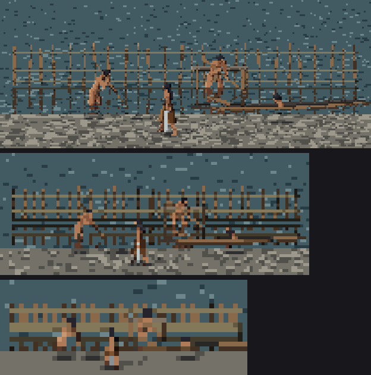
38. (manager scratchpad)/weir.pngBash: Simplify weir rails and calmer water
cd ~/work/pixelart-studies/elements/people/src && python3 - <<'EOF'
s=open('setting.py').read()
s=s.replace("def weir(x0=-2.0, x1=2.0, z=0.0, n=None, h=0.9, water=0.25):","def weir(x0=-2.0, x1=2.0, z=0.0, n=None, h=0.9, water=0.25, size_px=32):")
s=s.replace(""" for yy in (water + 0.08, water + 0.25, h - 0.08):""",""" rails = (water + 0.12, h - 0.1) if size_px >= 20 else ((h - 0.1,) if size_px >= 10 else ())
for yy in rails:""")
open('setting.py','w').write(s)
w=open('water.py').read()
w=w.replace(""" n = int(w * (1 - calm) * 0.25 * (0.5 + near))
for _ in range(n):
L = max(1, int(rng.integers(1, 3 + int(near * scale * 0.12))))""",""" if rng.random() < 0.35:
continue # quiet rows between the dash rows
n = int(w * (1 - calm) * 0.2 * (0.5 + near))
for _ in range(n):
L = max(2, int(rng.integers(2, 4 + int(near * scale * 0.15))))""")
open('water.py','w').write(w)
EOF
echo ok
# output:
okBash: Stage 1 build-up images
cd ~/work/pixelart-studies/elements/people/src && cat > stage1.py <<'EOF'
"""Stage 1: one figure, built up one layer at a time (32 px, shown at 8x).
skeleton -> capsule masses (flat) -> dress -> two light families (greyscale) -> colour ->
on the ground with contact shadow, cast shadow and the edge rule. Then the notan and the colour
figure from four sides.
"""
import sys; sys.path.insert(0, '.')
import numpy as np
from render import Scene, render_scene, shade, light_vec, sprite
from fig import bresenham
from pal import palette, grey_lut, M
from util import up, save, side, vstack, to_lab, to_rgb
OUT = '../stages/s1/'
import os; os.makedirs(OUT, exist_ok=True)
BG = np.array([112, 120, 108], np.uint8)
SIZE = 32
K = 8
def mk(spec, size=SIZE, w=None, h=None):
w = w or int(size * 1.3)
h = h or int(size * 1.25)
sc = Scene(w, h, size, 10, ground_y=h - 3)
sc.add_person(spec)
return sc
def skeleton_img(spec):
sc = mk(spec)
J = sc.figs[0]
img = np.full(sc.cv.idx.shape + (3,), BG, np.uint8)
bones = [('pelvis', 'mid'), ('mid', 'chest'), ('chest', 'neck'), ('neck', 'head'), ('chest', 'shL'),
('chest', 'shR'), ('shL', 'elL'), ('elL', 'haL'), ('shR', 'elR'), ('elR', 'haR'), ('pelvis', 'hpL'),
('pelvis', 'hpR'), ('hpL', 'knL'), ('knL', 'anL'), ('anL', 'toL'), ('hpR', 'knR'), ('knR', 'anR'),
('anR', 'toR')]
for a, b in bones:
A, B = sc.screen(J[a]), sc.screen(J[b])
col = (240, 230, 200) if a[-1] != 'L' and b[-1] != 'L' else (150, 140, 120)
for x, y in bresenham(A[0], A[1], B[0], B[1]):
if 0 <= y < img.shape[0] and 0 <= x < img.shape[1]:
img[y, x] = col
return img
FLAT = {M['SKIN']: (170, 110, 80), M['HAIR']: (20, 18, 24), M['BARK']: (110, 70, 44), M['NET']: (100, 90, 70)}
def flat_img(spec):
sc = mk(spec)
idx = sc.cv.idx
img = np.full(idx.shape + (3,), BG, np.uint8)
for m, c in FLAT.items():
img[idx // 8 == m] = c
other = (idx > 0) & ~np.isin(idx // 8, list(FLAT))
img[other] = (150, 150, 150)
return img
def shaded(spec, lut, sun=(40, 40)):
sc = mk(spec)
shade(sc.cv, light_vec(*sun), SIZE)
idx = sc.cv.idx
return np.where(idx[..., None] > 0, lut[idx], BG)
def notan(spec, sun=(40, 40)):
sc = mk(spec)
shade(sc.cv, light_vec(*sun), SIZE, seam=False)
idx = sc.cv.idx
st = idx % 8
img = np.full(idx.shape + (3,), (128, 128, 128), np.uint8)
img[(idx > 0) & (st >= 2)] = (235, 235, 235)
img[(idx > 0) & (st < 2)] = (30, 30, 30)
return img
def grounded(spec, hour='noon'):
sc = mk(spec, w=int(SIZE * 1.6))
rgb, _ = render_scene(sc, 'SAND', hour, (40, 40))
return rgb
if __name__ == '__main__':
lut = palette('noon')
g = grey_lut()
base = dict(activity='stand', facing=20, sex='f', dress='coast_f_summer', phase=0.2)
naked = dict(base, dress='child_bare', hair='loose')
panels = [skeleton_img(base), flat_img(naked), flat_img(base), shaded(base, g), shaded(base, lut), grounded(base)]
labs = ['1 skeleton', '2 capsule masses', '3 dress (bark skirt)', '4 two families, grey', '5 colour',
'6 ground, shadows, edges']
save(side([up(p, K) for p in panels], labs), OUT + 's1_buildup.png')
rows = []
for f in (0, 60, 120, 200, 270):
sp = dict(base, facing=f)
rows.append([notan(sp), shaded(sp, g), shaded(sp, lut)])
cells = [up(p, 6) for r in rows for p in r]
from util import grid
save(grid(cells, 3, [f'facing {f}: {k}' for f in (0, 60, 120, 200, 270) for k in ('notan', 'grey', 'colour')],
fs=12), OUT + 's1_facings.png')
# the same for a man in a blanket and a walking woman
for name, sp in (('man_blanket', dict(activity='stand', sex='m', dress='coast_m_blanket', facing=30)),
('walk', dict(activity='walk', sex='f', phase=0.1, facing=0))):
panels = [notan(sp), shaded(sp, g), shaded(sp, lut), grounded(sp)]
save(side([up(p, K) for p in panels], ['notan', 'grey', 'colour', 'grounded']), OUT + f's1_{name}.png')
EOF
python3 stage1.py
# output:
(Bash completed with no output)Read: elements/people/stages/s1/s1_buildup.png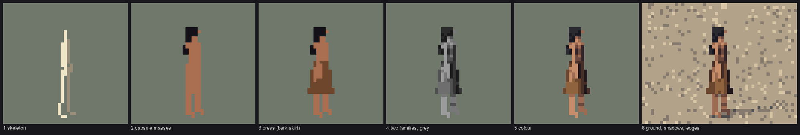
39. elements/people/stages/s1/s1_buildup.pngBash: Profile S-curve, hair, calmer sand
cd ~/work/pixelart-studies/elements/people/src && python3 - <<'EOF'
s=open('person.py').read()
old=""" add(J['chest'] - up * 0.02, J['neck'] + up * 0.01, Ps['r_uarm'] * 0.95, None, 'SKIN', tag='neck')"""
new=""" add(J['chest'] - up * 0.02, J['neck'] + up * 0.01, Ps['r_uarm'] * 0.95, None, 'SKIN', tag='neck')
# the profile's S-curve: buttocks behind the hips, a chest in front (small at this scale)
add(J['pelvis'] - fw * 0.03 * st - up * 0.01 * st + lat * 0.03 * st,
J['pelvis'] - fw * 0.03 * st - up * 0.01 * st - lat * 0.03 * st, hipr * 0.92, None, torso_mat, tag='torso')
if fem and age not in ('child', 'small'):
add(J['chest'] - up * 0.07 * st + fw * 0.03 * st + lat * 0.03 * st,
J['chest'] - up * 0.07 * st + fw * 0.03 * st - lat * 0.03 * st, 0.036 * st, None, torso_mat, tag='torso')"""
assert old in s
s=s.replace(old,new)
old=""" add(hc - hfw * hr * 0.75 + hu * hr * 0.1, J['chest'] - fw * tw * 1.0 - up * 0.10, hr * 0.62, hr * 0.7, 'HAIR', tag='hairlong', minw=0.5)"""
new=""" # loose hair falls from the crown down the back, close to it
add(hc - hfw * hr * 0.55 + hu * hr * 0.2, J['chest'] - fw * (rc + 0.01 * st) - up * 0.11 * st, hr * 0.5,
hr * 0.42, 'HAIR', tag='hairlong', minw=0.5)"""
assert old in s
s=s.replace(old,new)
open('person.py','w').write(s)
g=open('grounds.py').read()
g=g.replace(""" step = np.where(base < 0.08, 1, np.where(base > 0.94, 3, 2))""",""" # calm: rare single-step marks, a little clumped
from scipy.ndimage import gaussian_filter
cl = gaussian_filter(rng.random((h, w)), 1.2)
cl = (cl - cl.mean()) / (cl.std() + 1e-9)
step = np.where((base < 0.05) & (cl < 0.3), 1, np.where((base > 0.965) & (cl > -0.3), 3, 2))""")
open('grounds.py','w').write(g)
EOF
python3 stage1.py
# output:
(Bash completed with no output)Read: elements/people/stages/s1/s1_buildup.png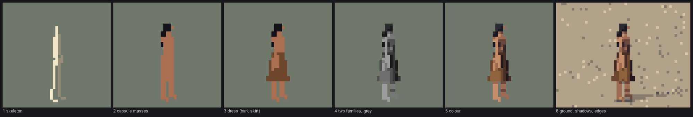
40. elements/people/stages/s1/s1_buildup.pngBash: Zoom single figure at 12x
cd ~/work/pixelart-studies/elements/people/src && python3 -c "
import sys; sys.path.insert(0,'.')
from stage1 import *
base = dict(activity='stand', facing=20, sex='f', dress='coast_f_summer', phase=0.2)
naked = dict(base, dress='child_bare')
ps=[flat_img(naked), shaded(base, palette('noon')), shaded(dict(base,facing=90), palette('noon')), shaded(dict(base,facing=0,sex='m',dress='coast_m_summer'), palette('noon'))]
ps=[p[5:,8:-8] for p in ps]
save(side([up(p,12) for p in ps]), '(manager scratchpad)/z.png')
"
# output:
(Bash completed with no output)Read: (manager scratchpad)/z.png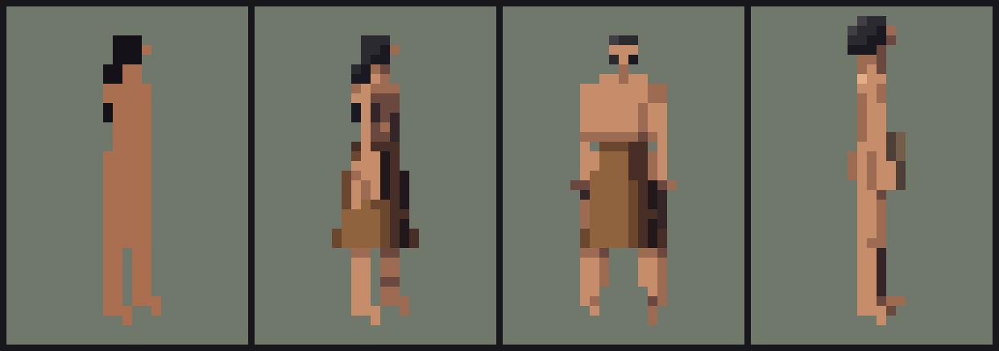
41. (manager scratchpad)/z.pngBash: Head size, shoulders, hair framing
cd ~/work/pixelart-studies/elements/people/src && python3 - <<'EOF'
s=open('fig.py').read()
s=s.replace("P = dict(thigh=0.245, shin=0.235, ankle=0.035, torso=0.30, neck=0.04, head=0.13,","P = dict(thigh=0.24, shin=0.23, ankle=0.035, torso=0.30, neck=0.035, head=0.145,")
s=s.replace(" P.update(stature=0.94, sh=0.105, hip=0.085, r_uarm=0.032, r_farm=0.027)"," P.update(stature=0.94, sh=0.095, hip=0.085, r_uarm=0.032, r_farm=0.027)")
s=s.replace(" P.update(stature=1.0, sh=0.12, r_torso=0.072, r_uarm=0.037)"," P.update(stature=1.0, sh=0.11, r_torso=0.072, r_uarm=0.037)")
s=s.replace(" boost = 1.0 + 0.45 * np.clip((20 - px) / 14, 0, 1) + 0.25 * np.clip((10 - px) / 4, 0, 1)"," boost = 1.0 + 0.4 * np.clip((28 - px) / 20, 0, 1) + 0.25 * np.clip((10 - px) / 4, 0, 1)")
open('fig.py','w').write(s)
p=open('person.py').read()
p=p.replace(" chest_hw = (0.062 if fem else 0.072) * st"," chest_hw = (0.048 if fem else 0.06) * st")
p=p.replace(" rc = (0.052 if fem else 0.056) * st * P['girth']"," rc = (0.05 if fem else 0.056) * st * P['girth']")
old=p[p.index(" add(hc - hfw * hr * 0.12 + hu * hr * (0.1 + 0.3 * tiny)"):p.index(" hair = spec.get('hair')")]
new=""" # hair: a sphere a little larger than the skull, set back; the face a smaller capsule set
# forward, from brow to chin, so from the front the hair frames it (top and both sides)
add(hc - hfw * hr * 0.1 + hu * hr * (0.08 + 0.3 * tiny), hc - hfw * hr * 0.1 + hu * hr * (0.08 + 0.3 * tiny),
hr * 1.04, None, 'HAIR', tag='hair', minw=0.6)
add(hc + hfw * hr * 0.36 - hu * hr * 0.02, hc + hfw * hr * 0.3 - hu * hr * 0.5, hr * 0.7 * (1 - 0.3 * tiny),
hr * 0.56 * (1 - 0.3 * tiny), 'SKIN', tag='head', minw=0.45)
"""
p=p.replace(old,new)
old=p[p.index(" if hair == 'loose':"):p.index(" elif hair == 'tied':")]
new=""" if hair == 'loose':
# loose hair falls from the crown down the back, close to it, and past the ears
add(hc - hfw * hr * 0.45 + hu * hr * 0.1, J['chest'] - fw * (rc * 0.8) - up * 0.1 * st, hr * 0.8,
hr * 0.5, 'HAIR', tag='hairlong', minw=0.5)
"""
p=p.replace(old,new)
open('person.py','w').write(p)
EOF
python3 -c "
import sys; sys.path.insert(0,'.')
from stage1 import *
base = dict(activity='stand', facing=20, sex='f', dress='coast_f_summer', phase=0.2)
naked = dict(base, dress='child_bare')
ps=[flat_img(naked), shaded(base, palette('noon')), shaded(dict(base,facing=90), palette('noon')), shaded(dict(base,facing=0,sex='m',dress='coast_m_summer'), palette('noon')), shaded(dict(base,facing=270), palette('noon'))]
ps=[p[3:,8:-8] for p in ps]
save(side([up(p,11) for p in ps]), '(manager scratchpad)/z.png')
"
# output:
(Bash completed with no output)Read: (manager scratchpad)/z.png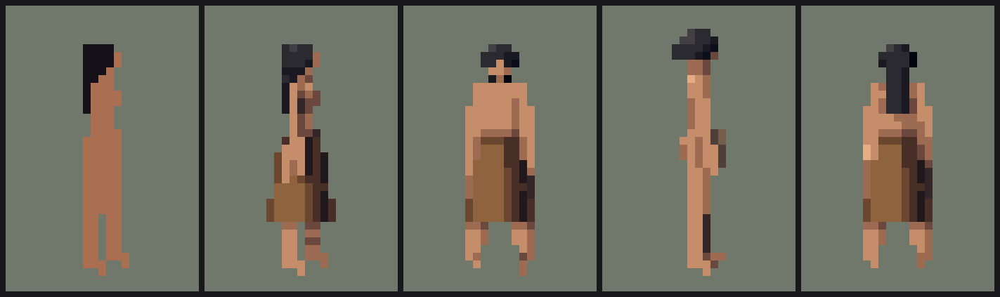
42. (manager scratchpad)/z.pngBash: Wider face, lower hair knot
cd ~/work/pixelart-studies/elements/people/src && python3 - <<'EOF'
p=open('person.py').read()
p=p.replace("hr * 0.7 * (1 - 0.3 * tiny),\n hr * 0.56 * (1 - 0.3 * tiny), 'SKIN', tag='head'","hr * 0.8 * (1 - 0.3 * tiny),\n hr * 0.62 * (1 - 0.3 * tiny), 'SKIN', tag='head'")
p=p.replace("add(hc - hfw * hr * 0.8, hc - hfw * hr * 1.1 - hu * hr * 0.5, hr * 0.42, None, 'HAIR', tag='hairknot')",
"add(hc - hfw * hr * 0.9 - hu * hr * 0.15, hc - hfw * hr * 1.05 - hu * hr * 0.4, hr * 0.36, None, 'HAIR', tag='hairknot')")
open('person.py','w').write(p)
EOF
grep -n "tag='head'" person.py; grep -n "hairknot" person.py
# output:
153: hr * 0.62 * (1 - 0.3 * tiny), 'SKIN', tag='head', minw=0.45)
162: add(hc - hfw * hr * 0.9 - hu * hr * 0.15, hc - hfw * hr * 1.05 - hu * hr * 0.4, hr * 0.36, None, 'HAIR', tag='hairknot')Bash: Dress catalogue
cd ~/work/pixelart-studies/elements/people/src && cat > stage2.py <<'EOF'
"""Stage 2: dress, by region, season and means (naturalist guide 06), at 32 and 16 px."""
import sys; sys.path.insert(0, '.')
import numpy as np, os
from render import Scene, render_scene
from person import DRESS
from util import up, save, grid
OUT = '../stages/s2/'; os.makedirs(OUT, exist_ok=True)
def cell(spec, size, kind='SAND', hour='noon', k=None, w=1.25, h=1.3):
sc = Scene(int(size * w), int(size * h), size, 10, ground_y=int(size * h) - max(2, size // 8))
sc.add_person(spec)
rgb, _ = render_scene(sc, kind, hour, (40, 40))
return up(rgb, k or max(2, 192 // size))
if __name__ == '__main__':
for size in (32, 16):
cells, labs = [], []
for d in DRESS:
sex = 'm' if '_m' in d else 'f'
age = 'child' if d.startswith('child') else 'adult'
reg = 'plateau' if d.startswith('plateau') else 'coast'
for f in (30, 200):
cells.append(cell(dict(activity='stand', dress=d, sex=sex, age=age, region=reg, facing=f, seed=2),
size, 'GRASS' if reg == 'plateau' else 'SAND', k=6 if size == 32 else 10))
labs.append(f'{d} {f}')
save(grid(cells, 10, labs, fs=11), OUT + f's2_dress_{size}.png')
EOF
python3 stage2.py
# output:
Exit code 1
Traceback (most recent call last):
File "~/work/pixelart-studies/elements/people/src/stage2.py", line 25, in <module>
cells.append(cell(dict(activity='stand', dress=d, sex=sex, age=age, region=reg, facing=f, seed=2),
^^^^^^^^^^^^^^^^^^^^^^^^^^^^^^^^^^^^^^^^^^^^^^^^^^^^^^^^^^^^^^^^^^^^^^^^^^^^^^^^^^^^^
File "~/work/pixelart-studies/elements/people/src/stage2.py", line 12, in cell
sc.add_person(spec)
File "~/work/pixelart-studies/elements/people/src/render.py", line 35, in add_person
prims, J, meta = build(spec, size_px)
^^^^^^^^^^^^^^^^^^^^
File "~/work/pixelart-studies/elements/people/src/person.py", line 166, in build
add(a, J['chest'] + lat * shw * 0.9 * sg + fw * tw * 0.9 - up * 0.08, hr * 0.2, hr * 0.18, 'HAIR',
^^^
NameError: name 'shw' is not definedBash: Fix queue hair variable and rerun
cd ~/work/pixelart-studies/elements/people/src && sed -i '' "s/add(a, J\['chest'\] + lat \* shw \* 0.9 \* sg + fw \* tw \* 0.9 - up \* 0.08, hr \* 0.2, hr \* 0.18, 'HAIR',/add(a, J['chest'] + lat * chest_hw * 0.9 * sg + fw * rc * 1.1 - up * 0.08, hr * 0.22, hr * 0.2, 'HAIR',/" person.py && python3 stage2.py # output: (Bash completed with no output)
Read: elements/people/stages/s2/s2_dress_32.png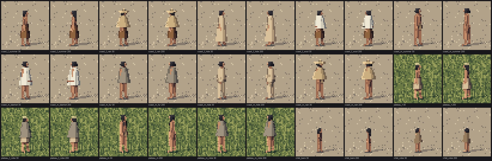
43. elements/people/stages/s2/s2_dress_32.pngBash: Debug facing direction
cd ~/work/pixelart-studies/elements/people/src && python3 -c "
import sys; sys.path.insert(0,'.')
from person import build
for f in (30,200):
pr,J,m=build(dict(activity='stand',facing=f,seed=2),32)
print(f, J['head'].round(3), J['toL'].round(3), J['anL'].round(3))
"
# output:
30 [0.005 0.857 0.003] [ 0.113 0.015 -0.047] [ 0.052 0.033 -0.082]
200 [-0.006 0.857 -0.002] [-0.103 0.015 0.066] [-0.037 0.033 0.09 ]Bash: Zoom facing check
cd ~/work/pixelart-studies/elements/people/src && python3 -c " import sys; sys.path.insert(0,'.') from stage2 import cell from util import save, side save(side([cell(dict(activity='walk',phase=0.1,facing=f,seed=2),32,k=8) for f in (30,200)]),'(manager scratchpad)/z.png')" # output: (Bash completed with no output)
Read: (manager scratchpad)/z.png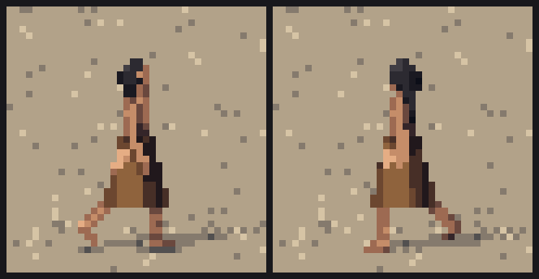
44. (manager scratchpad)/z.pngBash: Calm grass and size ladder
cd ~/work/pixelart-studies/elements/people/src && python3 - <<'EOF'
g=open('grounds.py').read()
old=g[g.index(" elif kind in ('GRASS', 'STUBBLE'):"):g.index(" elif kind in ('SAND', 'DIRT', 'MOSS'):")]
new=""" elif kind in ('GRASS', 'STUBBLE'):
# calm: a clumped base in two close steps, a few blade strokes (clean vertical runs, a lit
# tip over a dark foot), longer near
from scipy.ndimage import gaussian_filter
cl = gaussian_filter(rng.random((h, w)), 1.5)
cl = (cl - cl.mean()) / (cl.std() + 1e-9)
step = np.where(cl < -0.9, 1, 2)
n = int(h * w * 0.035)
for _ in range(n):
x, y = rng.integers(0, w), rng.integers(1, h)
L = 1 + int(rng.random() * (1 + 2 * (y / h)) * max(1, scale / 20))
if rng.random() < 0.55:
step[max(0, y - L):y, x] = 3
else:
step[max(0, y - L):y, x] = 1
"""
g=g.replace(old,new)
open('grounds.py','w').write(g)
EOF
cat > stage4.py <<'EOF'
"""Stage 4: the size ladder, 32 px down to 6 px, for the figures that matter most."""
import sys; sys.path.insert(0, '.')
import numpy as np, os
from render import Scene, render_scene
from util import up, save, grid, side, vstack
OUT = '../stages/s4/'; os.makedirs(OUT, exist_ok=True)
SIZES = (32, 24, 18, 14, 11, 8, 6)
SPECS = [
('woman walking', dict(activity='walk', phase=0.1, facing=15)),
('carrying a basket', dict(activity='carry', phase=0.3, facing=15)),
('rain cape and hat', dict(activity='walk', phase=0.6, facing=160, dress='coast_f_rain')),
('digging camas', dict(activity='dig', phase=0.5, facing=20, region='plateau', dress='plateau_f')),
('man in a blanket', dict(activity='stand', facing=100, sex='m', dress='coast_m_blanket')),
('spearing fish', dict(activity='spear', phase=0.5, facing=10, sex='m')),
('splitting cedar', dict(activity='split', phase=0.1, facing=0, sex='m')),
('at the fire', dict(activity='fire', phase=0.5, facing=20)),
('child running', dict(activity='run', phase=0.2, facing=0, age='child')),
]
def ladder(spec, kind='SAND', hour='noon', k=6):
cells = []
for s in SIZES:
W, H = int(s * 1.7), int(s * 1.35)
sc = Scene(W, H, s, 10, ground_y=H - max(2, s // 8))
sc.add_person(dict(spec, seed=4))
rgb, _ = render_scene(sc, kind, hour, (40, 40))
cells.append(up(rgb, k))
return cells
if __name__ == '__main__':
rows = []
for name, sp in SPECS:
cells = ladder(sp)
rows.append(side(cells, [f'{name} {s}px' for s in SIZES], fs=11))
save(vstack(rows), OUT + 's4_ladder_6x.png')
# true size, 1x and 2x, to judge how they read at real scale
rows = []
for name, sp in SPECS:
rows.append(side(ladder(sp, k=2), None))
save(vstack(rows), OUT + 's4_ladder_2x.png')
EOF
python3 stage4.py
# output:
(Bash completed with no output)Read: elements/people/stages/s4/s4_ladder_6x.png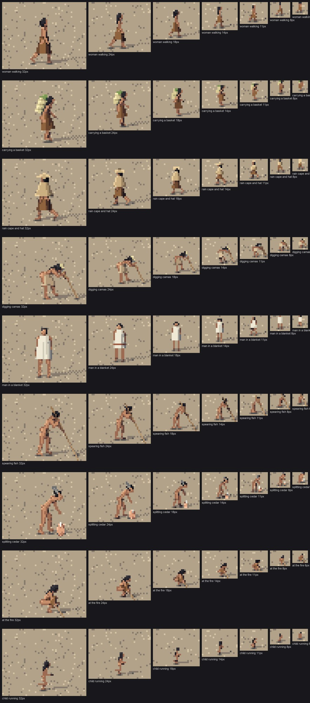
45. elements/people/stages/s4/s4_ladder_6x.pngRead: elements/people/stages/s4/s4_ladder_2x.png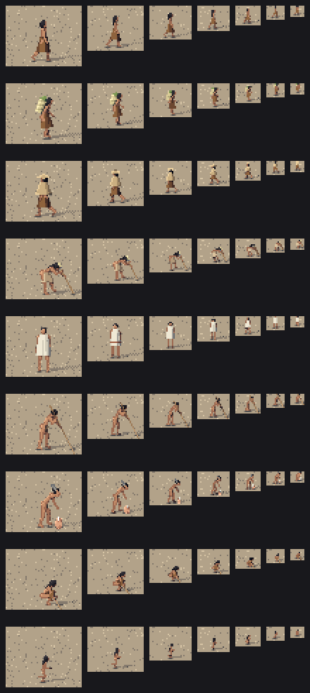
46. elements/people/stages/s4/s4_ladder_2x.pngWrite: elements/people/src/scenes.py
"""Group compositions: people at work, at rest and at play, at several distances.
Each scene is a function scene_x(size_px, elev, hour, phase, seed) -> (rgb, idx). size_px is the
height in px of a standing adult at the scene's reference depth (z = 0). The canvas is laid out in
world units so that the same scene can be rendered at 32, 16, 8 or 5 px per person and at the
low landscape view (10-14 deg) or the iso view (30 deg).
Backdrops are deliberately plain (a far shore, a forest wall): they belong to the other element
students; here they only give the figures a value to read against.
"""
import math
import numpy as np
from render import Scene, render_scene, world_pos
from setting import hearth, paint_fire, paint_smoke, canoe, weir, platform, rack, ground_basket, mat_on_ground
from pal import M
from grounds import ground
rngs = np.random.default_rng
def _scene(size_px, wu, hu, elev, gy_u):
W, H = int(round(size_px * wu)), int(round(size_px * hu))
return Scene(W, H, size_px, elev, ground_y=int(round(size_px * gy_u)))
def backdrop(idx, sc, z_far, mat='FOREST', crest_seed=0, amp=0.35):
"""Paint rows beyond depth z_far (screen rows above the ground line of z_far) as a flat far
band (a forest wall or far shore), its top edge a fringe of conifer spires."""
H, W = idx.shape
rng = rngs(crest_seed)
row = int(round(sc.oy + z_far * math.sin(sc.cv.e) * sc.scale))
top = row - int(round((0.9 + amp) * sc.scale * 0.8))
out = idx.copy()
heights = np.zeros(W)
x = 0
while x < W:
w = int(rng.integers(max(2, sc.scale // 6), max(3, sc.scale // 3) + 1))
hgt = rng.uniform(0.4, 1.0) * sc.scale * 0.8
for i in range(w):
if x + i < W:
t = abs(i - w / 2) / (w / 2)
heights[x + i] = hgt * (1 - t * 0.85)
x += w
for xx in range(W):
y0 = int(row - sc.scale * 0.5 - heights[xx])
for yy in range(max(0, y0), max(0, min(H, row))):
if out[yy, xx] == 0 or True:
st = 1 if (xx + yy) % 5 else 2
out[yy, xx] = M[mat] * 8 + st
return out, row
def _mix_idx(fig_idx, bg_idx):
return np.where(fig_idx > 0, fig_idx, bg_idx)
# ----------------------------------------------------------------------------------------------
def scene_fire(size_px=24, elev=14, hour='night', phase=0.0, seed=0):
"""Around the hearth at night: an old man telling, women weaving and tending, children, a
baby on a cradleboard."""
sc = _scene(size_px, 4.6, 2.3, elev, 1.75)
sc.add_prims(hearth(0, 0, seed=seed))
people = [(-0.95, 0.05, 5, dict(activity='sit_log', sex='f', dress='coast_f_wool')),
(0.95, -0.05, 175, dict(activity='sit', sex='m', age='elder', dress='coast_m_fur')),
(0.1, -0.85, 95, dict(activity='fire', sex='f')),
(-0.5, 0.85, 290, dict(activity='sit', sex='m', dress='coast_m_blanket')),
(0.7, -0.75, 125, dict(activity='weave', sex='f')),
(0.55, 0.8, 240, dict(activity='squat_play', age='child', sex='m')),
(-0.85, -0.7, 60, dict(activity='hold_baby', sex='f', dress='coast_f_wool')),
(1.6, 0.4, 200, dict(activity='sit_eat', sex='m', dress='coast_m_summer'))]
for x, z, f, sp in people:
sc.add_person(dict(sp, x=x, z=z, facing=f, phase=phase, seed=seed + int(x * 7 + z * 3)))
fires = [((0, 0.12, 0), 0.6)] if hour in ('night', 'dusk') else None
def post(idx, sc):
p = sc.screen((0, 0, 0))
idx = paint_fire(idx, p[0], p[1] - 0.5, size_px, phase=phase, zbuf=sc.cv.z, zfire=p[2])
idx = paint_smoke(idx, p[0], p[1] - 0.45 * size_px, size_px, phase=phase, hour_dark=hour == 'night',
rows=int(size_px * 1.2))
return idx
return render_scene(sc, 'DIRT', hour, (40, 35), seed=seed, fires=fires, post=post)
def scene_weir(size_px=24, elev=14, hour='overcast', phase=0.0, seed=0):
"""Autumn at the weir: dip-netters on the platforms, a spear fisher in the shallows, a canoe,
women carrying fish up the gravel bar to the racks."""
sc = _scene(size_px, 7.0, 2.8, elev, 2.3)
wz = -1.6
sc.add_prims(weir(-3.6, 3.6, wz, n=30, h=1.0, water=0.3, size_px=size_px))
sc.add_prims(platform(-1.2, wz + 0.15, w=0.8, h=0.62))
sc.add_prims(platform(1.4, wz + 0.15, w=0.8, h=0.62))
sc.add_person(dict(activity='dipnet', x=-1.25, z=wz + 0.15, facing=70, sex='m', phase=phase + 0.2))
sc.add_person(dict(activity='dipnet', x=1.35, z=wz + 0.15, facing=110, sex='m', phase=phase + 0.6,
dress='coast_m_summer'))
sc.add_person(dict(activity='spear', x=-2.4, z=-0.4, facing=30, sex='m', phase=phase))
sc.add_prims(canoe(2.3, -0.5, length=2.8, heading=190, waterline=0.3))
sc.add_person(dict(activity='paddle', x=2.25, z=-0.5, facing=190, sex='m', phase=phase + 0.3))
sc.add_prims(rack(-0.4, 1.35, w=1.3, h=1.0, fish=6, seed=seed))
sc.add_person(dict(activity='carry_load', x=0.8, z=0.9, facing=160, sex='f', phase=phase))
sc.add_person(dict(activity='carry', x=2.0, z=1.1, facing=185, sex='f', phase=phase + 0.5,
load='FISH'))
sc.add_person(dict(activity='stand', x=-1.2, z=1.25, facing=60, sex='f', dress='coast_f_wool', phase=phase))
def post(idx, sc):
out, _ = backdrop(idx, sc, -3.2, 'FOREST', seed)
return np.where(sc.cv.idx > 0, idx, np.where(out != idx, out, idx))
return render_scene(sc, 'GRAVEL', hour, (60, 35), seed=seed, water=dict(wl=0.3, z_shore=0.55, calm=0.55),
post=post)
def scene_carry(size_px=24, elev=12, hour='morning', phase=0.0, seed=0):
"""A file of people going along the beach: women with loaded baskets on tumplines, a man with
salmon, a woman in a rain cape, a child running ahead, an elder with a staff."""
sc = _scene(size_px, 6.5, 2.2, elev, 1.75)
file_ = [(-2.6, 0.2, dict(activity='staff', sex='m', age='elder', dress='coast_m_fur')),
(-1.8, 0.1, dict(activity='carry', sex='f', load='ROOT')),
(-1.0, 0.25, dict(activity='carry', sex='f', dress='coast_f_rain', load='LEAF')),
(-0.2, 0.05, dict(activity='carry_load', sex='m')),
(0.6, 0.2, dict(activity='walk', sex='f', dress='coast_f_wool')),
(1.3, 0.1, dict(activity='carry', sex='f', load='FISH')),
(2.3, 0.3, dict(activity='run', age='child', sex='m')),
(2.8, 0.0, dict(activity='run', age='child', sex='f'))]
for i, (x, z, sp) in enumerate(file_):
sc.add_person(dict(sp, x=x, z=z, facing=0 if sp['activity'] != 'staff' else 5,
phase=(phase + i * 0.29) % 1, seed=seed + i))
def post(idx, sc):
out, row = backdrop(idx, sc, -1.4, 'WATER', seed, amp=-0.9)
return np.where(sc.cv.idx > 0, idx, np.where(out != idx, out, idx))
return render_scene(sc, 'GRAVEL', hour, (30, 30), seed=seed, post=post)
def scene_camas(size_px=24, elev=14, hour='morning', phase=0.0, seed=0):
"""May on the prairie: women digging camas with sticks, baskets beside them, a child playing,
a woman carrying a full basket away."""
sc = _scene(size_px, 6.5, 2.6, elev, 2.15)
rng = rngs(seed)
diggers = [(-2.4, -0.8, 20), (-1.2, -0.3, 200), (0.1, -1.0, 340), (1.2, -0.2, 160), (2.3, -0.9, 30),
(-0.6, 0.6, 10)]
for i, (x, z, f) in enumerate(diggers):
act = 'dig' if i % 3 != 2 else 'gather'
sc.add_person(dict(activity=act, x=x, z=z, facing=f, sex='f', region='coast',
phase=(phase + i * 0.37) % 1, seed=seed + i))
sc.add_prims(ground_basket(x + (0.3 if math.cos(math.radians(f)) < 0 else -0.3), z + 0.15, mat='STRAW'))
sc.add_person(dict(activity='carry', x=1.9, z=0.8, facing=0, sex='f', load='ROOT', phase=phase))
sc.add_person(dict(activity='squat_play', x=-1.8, z=0.9, facing=60, age='small', phase=phase))
sc.add_person(dict(activity='run', x=0.5, z=1.1, facing=180, age='child', sex='m', phase=phase))
g = ground('GRASS', sc.cv.h, sc.cv.w, size_px, seed)
# camas in bloom: blue-violet flecks on the grass (drawn in the grass material's own steps
# would lose the hue; the prairie flower belongs to the plants students, so a few flecks only)
return render_scene(sc, 'GRASS', hour, (40, 45), seed=seed, ground_idx=g, post=_camas_post(seed))
def _camas_post(seed):
def post(idx, sc):
rng = rngs(seed + 11)
out = idx.copy()
H, W = idx.shape
n = int(H * W * 0.03)
ys = rng.integers(0, H, n)
xs = rng.integers(0, W, n)
for y, x in zip(ys, xs):
if sc.cv.idx[y, x] == 0 and idx[y, x] // 8 == M['GRASS']:
out[y, x] = M['CAMAS'] * 8 + (3 if rng.random() < 0.5 else 2) if 'CAMAS' in M else idx[y, x]
return out
return post
def scene_canoe(size_px=24, elev=12, hour='golden', phase=0.0, seed=0):
"""A canoe coming in to the beach at evening, four paddlers; people waiting on the gravel."""
sc = _scene(size_px, 6.5, 2.4, elev, 2.0)
sc.add_prims(canoe(-0.6, -1.0, length=4.2, heading=0, waterline=0.0, beam=0.5))
for i, x in enumerate((-2.0, -1.2, -0.4, 0.4)):
sc.add_person(dict(activity='paddle', x=x, z=-1.0, facing=0, sex='m' if i % 2 == 0 else 'f',
phase=(phase + i * 0.08) % 1, seed=seed + i))
sc.add_person(dict(activity='stand', x=1.6, z=0.8, facing=160, sex='f', dress='coast_f_wool', phase=phase))
sc.add_person(dict(activity='hold_baby', x=2.2, z=0.95, facing=190, sex='f', phase=phase))
sc.add_person(dict(activity='throw', x=0.8, z=1.1, facing=150, age='child', sex='m', phase=phase))
def post(idx, sc):
out, row = backdrop(idx, sc, -2.6, 'FOREST', seed)
return np.where(sc.cv.idx > 0, idx, np.where(out != idx, out, idx))
return render_scene(sc, 'GRAVEL', hour, (15, 20), seed=seed, water=dict(wl=0.0, z_shore=0.3, calm=0.75),
post=post)
def scene_play(size_px=24, elev=12, hour='noon', phase=0.0, seed=0):
"""Children at play on the beach: running, throwing stones, squatting over shells; a mother
watching."""
sc = _scene(size_px, 5.0, 2.0, elev, 1.65)
kids = [(-1.6, 0.1, 0, 'run', 'child', 'm'), (-0.9, 0.4, 180, 'run', 'child', 'f'),
(-0.1, -0.2, 30, 'throw', 'child', 'm'), (0.7, 0.3, 200, 'squat_play', 'child', 'f'),
(1.2, 0.5, 250, 'squat_play', 'small', 'm')]
for i, (x, z, f, a, age, sx) in enumerate(kids):
sc.add_person(dict(activity=a, x=x, z=z, facing=f, age=age, sex=sx, phase=(phase + i * 0.23) % 1,
seed=seed + i))
sc.add_person(dict(activity='weave', x=1.9, z=-0.2, facing=190, sex='f', phase=phase))
return render_scene(sc, 'SAND', hour, (40, 40), seed=seed)
def scene_work(size_px=24, elev=14, hour='noon', phase=0.0, seed=0):
"""Village work by the houses: a man splitting cedar, a woman weaving on a mat, another
pounding dried salmon, fish on the rack, a woman walking by with a basket."""
sc = _scene(size_px, 5.6, 2.3, elev, 1.85)
sc.add_person(dict(activity='split', x=-1.8, z=0.0, facing=10, sex='m', phase=phase))
sc.add_prims(mat_on_ground(-0.3, 0.2))
sc.add_person(dict(activity='weave', x=-0.3, z=0.2, facing=80, sex='f', phase=phase))
sc.add_person(dict(activity='pound', x=0.7, z=0.5, facing=160, sex='f', phase=phase))
sc.add_prims(rack(1.6, -0.6, w=1.4, h=1.0, fish=7, seed=seed))
sc.add_person(dict(activity='carry', x=2.2, z=0.6, facing=180, sex='f', phase=phase, load='ROOT'))
return render_scene(sc, 'DIRT', hour, (40, 40), seed=seed)
SCENES = dict(fire=scene_fire, weir=scene_weir, carry=scene_carry, camas=scene_camas, canoe=scene_canoe,
play=scene_play, work=scene_work)
Bash: Render first scenes
cd ~/work/pixelart-studies/elements/people/src && python3 - <<'EOF'
p=open('pal.py').read()
p=p.replace("'WATER', 'FIRE', 'SMOKE', 'MAT', 'LOG', 'FOREST']","'WATER', 'FIRE', 'SMOKE', 'MAT', 'LOG', 'FOREST', 'CAMAS']")
p=p.replace(" 'FOREST':('#0e1812', '#1e2e22', '#324a36'), # the dark conifer wall\n"," 'FOREST':('#0e1812', '#1e2e22', '#324a36'), # the dark conifer wall\n 'CAMAS': ('#2a2a5a', '#5a5aa8', '#9a98e0'), # camas in bloom, blue-violet\n")
open('pal.py','w').write(p)
EOF
cat > tscenes.py <<'EOF'
import sys; sys.path.insert(0,'.')
from scenes import SCENES
from util import up, save, vstack
names = sys.argv[1].split(',')
size = int(sys.argv[2]); k=int(sys.argv[3]); elev=float(sys.argv[4]) if len(sys.argv)>4 else None
rows=[]
for n in names:
kw={} if elev is None else dict(elev=elev)
rgb,_=SCENES[n](size, **kw)
rows.append(up(rgb,k))
save(vstack(rows),'(manager scratchpad)/scn.png')
EOF
time python3 tscenes.py fire,weir,carry 24 3
# output:
python3 tscenes.py fire,weir,carry 24 3 2.19s user 0.22s system 70% cpu 3.401 totalRead: (manager scratchpad)/scn.png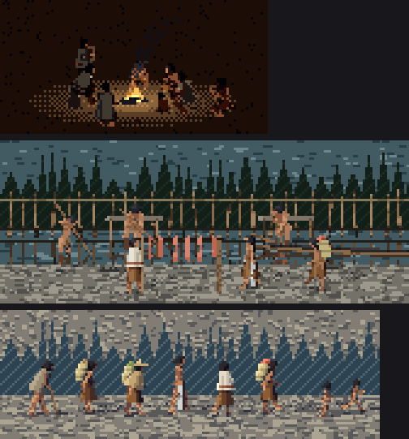
47. (manager scratchpad)/scn.pngBash: Better backdrops and weir layout
cd ~/work/pixelart-studies/elements/people/src && python3 - <<'EOF'
s=open('scenes.py').read()
old=s[s.index("def backdrop("):s.index("def _mix_idx")]
new='''def backdrop(idx, sc, z_far, mat='FOREST', crest_seed=0, amp=0.35, height=1.3):
"""Paint the rows beyond depth z_far as a far band: a forest wall whose top is a fringe of
conifer spires (FOREST), or a flat far shore of water (WATER) with a lighter horizon line."""
H, W = idx.shape
rng = rngs(crest_seed)
row = int(round(sc.oy + z_far * math.sin(sc.cv.e) * sc.scale))
out = idx.copy()
from scipy.ndimage import gaussian_filter
cl = gaussian_filter(rng.random((H, W)), 1.0)
cl = (cl - cl.mean()) / (cl.std() + 1e-9)
if mat == 'WATER':
for yy in range(0, max(0, min(H, row))):
for xx in range(W):
st = 2 if cl[yy, xx] < 1.2 else 3
if yy == row - 1:
st = 3
out[yy, xx] = M['WATER'] * 8 + st
return out, row
heights = np.zeros(W)
x = 0
while x < W:
w = int(rng.integers(max(2, sc.scale // 7), max(3, sc.scale // 4) + 1))
hgt = rng.uniform(0.3, 1.0) * sc.scale * 0.7
for i in range(w):
if x + i < W:
t = abs(i + 0.5 - w / 2) / (w / 2)
heights[x + i] = max(heights[x + i], hgt * (1 - t) ** 0.9)
x += max(1, int(w * rng.uniform(0.5, 0.9)))
for xx in range(W):
y0 = int(row - sc.scale * height * 0.5 - heights[xx])
for yy in range(max(0, y0), max(0, min(H, row))):
st = 1 if cl[yy, xx] < 0.8 else 2
if yy >= row - max(1, sc.scale // 10):
st = 0 # the dark foot of the forest
out[yy, xx] = M[mat] * 8 + st
return out, row
'''
s=s.replace(old,new)
# weir layout
s=s.replace(""" sc = _scene(size_px, 7.0, 2.8, elev, 2.3)
wz = -1.6""",""" sc = _scene(size_px, 7.0, 3.1, elev, 2.7)
wz = -2.2""")
s=s.replace("out, _ = backdrop(idx, sc, -3.2, 'FOREST', seed)","out, _ = backdrop(idx, sc, -5.5, 'FOREST', seed)")
s=s.replace("out, row = backdrop(idx, sc, -1.4, 'WATER', seed, amp=-0.9)","out, row = backdrop(idx, sc, -2.0, 'WATER', seed)")
s=s.replace("out, row = backdrop(idx, sc, -2.6, 'FOREST', seed)","out, row = backdrop(idx, sc, -5.0, 'FOREST', seed)")
open('scenes.py','w').write(s)
EOF
python3 tscenes.py weir,carry 24 4
# output:
(Bash completed with no output)Read: (manager scratchpad)/scn.png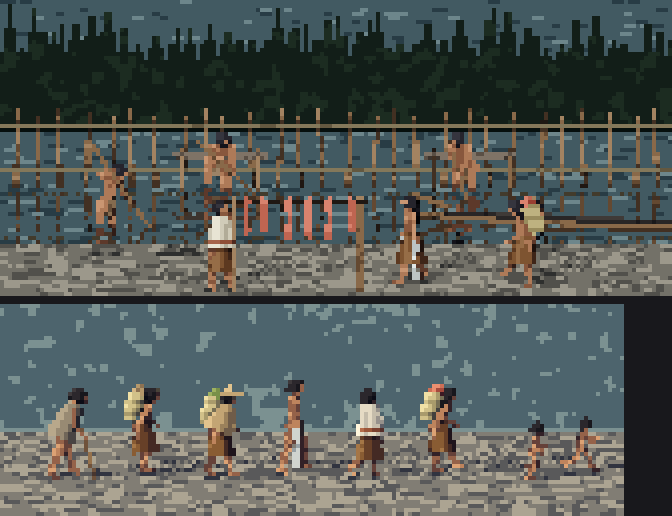
48. (manager scratchpad)/scn.pngBash: Sky above backdrops
cd ~/work/pixelart-studies/elements/people/src && python3 - <<'EOF'
p=open('pal.py').read()
p=p.replace("'FOREST', 'CAMAS']","'FOREST', 'CAMAS', 'SKY']")
p=p.replace(""" for n in MATS[1:]:
r = ramp(n, hour, depth, haze)""",""" for n in MATS[1:]:
if n == 'SKY':
top, hor = (to_lab(hexrgb(c)) for c in HOURS[hour]['sky'])
r = [to_rgb(top * (1 - t) + hor * t) for t in (0.0, 0.25, 0.5, 0.75, 1.0)]
for s in range(NSTEP):
lut[M[n] * 8 + s] = r[s]
continue
r = ramp(n, hour, depth, haze)""")
open('pal.py','w').write(p)
s=open('scenes.py').read()
s=s.replace(""" for xx in range(W):
y0 = int(row - sc.scale * height * 0.5 - heights[xx])""",""" # sky above the far band: five bands from zenith to horizon, dithered only at the seams
top_row = int(row - sc.scale * height * 0.5 - sc.scale * 0.7)
for yy in range(0, max(0, min(H, row))):
t = np.clip((yy - (top_row - sc.scale * 1.5)) / max(1, (row - (top_row - sc.scale * 1.5))), 0, 0.999)
band = t * 4
b0 = int(band)
frac = band - b0
for xx in range(W):
st = b0 + (1 if ((xx + yy) % 2 == 0 and frac > 0.66) else 0)
out[yy, xx] = M['SKY'] * 8 + min(4, st)
for xx in range(W):
y0 = int(row - sc.scale * height * 0.5 - heights[xx])""")
open('scenes.py','w').write(s)
EOF
python3 tscenes.py weir,canoe,camas 24 3
# output:
(Bash completed with no output)Read: (manager scratchpad)/scn.png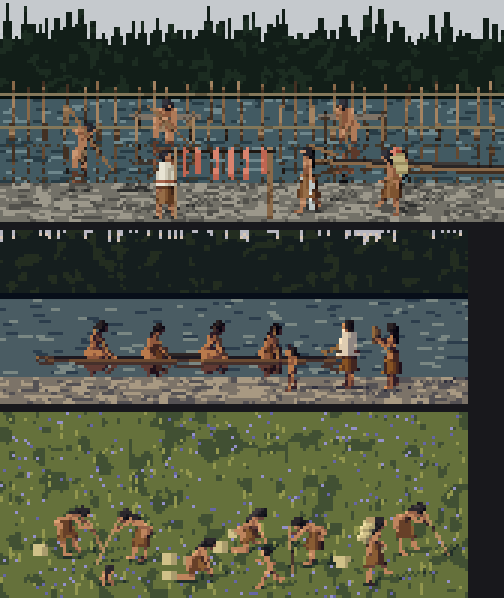
49. (manager scratchpad)/scn.pngBash: Canoe freeboard; camas backdrop; iso test
cd ~/work/pixelart-studies/elements/people/src && python3 - <<'EOF'
s=open('setting.py').read()
s=s.replace(" c = v3(x, waterline + depth * 0.1, z)"," c = v3(x, waterline + depth, z) # the gunwale line; freeboard = depth")
open('setting.py','w').write(s)
s=open('scenes.py').read()
s=s.replace(""" sc = _scene(size_px, 6.5, 2.4, elev, 2.0)
sc.add_prims(canoe(-0.6, -1.0, length=4.2, heading=0, waterline=0.0, beam=0.5))""",""" sc = _scene(size_px, 6.5, 2.9, elev, 2.45)
sc.add_prims(canoe(-0.6, -1.0, length=4.2, heading=0, waterline=0.0, beam=0.5, depth=0.2))""")
s=s.replace(""" sc.add_person(dict(activity='carry', x=1.9, z=0.8, facing=0, sex='f', load='ROOT', phase=phase))
sc.add_person(dict(activity='squat_play', x=-1.8, z=0.9, facing=60, age='small', phase=phase))""",""" sc.add_person(dict(activity='carry', x=1.9, z=0.8, facing=0, sex='f', load='ROOT', phase=phase))
sc.add_person(dict(activity='squat_play', x=-1.8, z=0.9, facing=60, age='small', phase=phase))
sc.add_person(dict(activity='stand', x=-2.9, z=0.2, facing=20, sex='f', age='elder', dress='coast_f_wool',
phase=phase))""")
s=s.replace(""" sc = _scene(size_px, 6.5, 2.6, elev, 2.15)
rng = rngs(seed)""",""" sc = _scene(size_px, 6.5, 3.0, elev, 2.55)
rng = rngs(seed)""")
s=s.replace(""" return render_scene(sc, 'GRASS', hour, (40, 45), seed=seed, ground_idx=g, post=_camas_post(seed))""",""" cam = _camas_post(seed)
def post(idx, sc):
idx = cam(idx, sc)
out, _ = backdrop(idx, sc, -6.0, 'FOREST', seed, height=1.0)
return np.where(sc.cv.idx > 0, idx, np.where(out != idx, out, idx))
return render_scene(sc, 'GRASS', hour, (40, 45), seed=seed, ground_idx=g, post=post)""")
open('scenes.py','w').write(s)
EOF
python3 tscenes.py canoe,camas 24 3 && python3 tscenes.py carry,work 16 4 30
# output:
(Bash completed with no output)Read: (manager scratchpad)/scn.png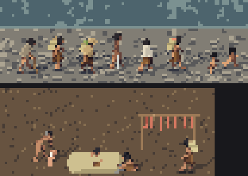
50. (manager scratchpad)/scn.pngBash: Render canoe scene
cd ~/work/pixelart-studies/elements/people/src && python3 tscenes.py canoe 24 4 # output: (Bash completed with no output)
Read: (manager scratchpad)/scn.png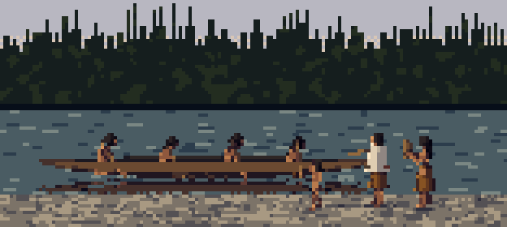
51. (manager scratchpad)/scn.pngBash: Spire crest and stage 5 script
cd ~/work/pixelart-studies/elements/people/src && python3 - <<'EOF'
s=open('scenes.py').read()
old=s[s.index(" heights = np.zeros(W)\n x = 0"):s.index(" # sky above the far band")]
new=""" heights = np.zeros(W)
x = 0
while x < W:
hgt = rng.uniform(0.25, 0.8) * sc.scale * 0.7
w = max(3, int(hgt * rng.uniform(0.5, 0.75)))
for i in range(w):
if x + i < W:
t = abs(i + 0.5 - w / 2) / (w / 2)
# a conifer spire: a 1 px tip, sides widening downward in small steps
heights[x + i] = max(heights[x + i], hgt * (1 - t) ** 1.3)
x += max(2, int(w * rng.uniform(0.35, 0.7)))
"""
s=s.replace(old,new)
open('scenes.py','w').write(s)
EOF
cat > stage5.py <<'EOF'
"""Stage 5: light and hour. One group (the carrying file) under six lights; the fire circle at
dusk and at night."""
import sys; sys.path.insert(0, '.')
import os
from scenes import scene_carry, scene_fire
from util import up, save, side, vstack
OUT = '../stages/s5/'; os.makedirs(OUT, exist_ok=True)
SUNS = dict(morning=(20, 20), noon=(40, 55), golden=(170, 14), overcast=(40, 50), dusk=(175, 6))
if __name__ == '__main__':
rows = []
for h, sun in SUNS.items():
import scenes
rgb, _ = scene_carry(24, hour=h)
rows.append(side([up(rgb, 3)], [h]))
save(vstack(rows), OUT + 's5_hours_carry.png')
rows = [side([up(scene_fire(24, hour=h)[0], 4)], [h]) for h in ('dusk', 'night')]
save(vstack(rows), OUT + 's5_fire_dusk_night.png')
EOF
echo
# output:
(Bash completed with no output)Bash: Sun parameter for scenes; run stage 5
cd ~/work/pixelart-studies/elements/people/src && python3 - <<'EOF'
import re
s=open('scenes.py').read()
s=re.sub(r"(def scene_\w+\(size_px=24, elev=\d+, hour='\w+', phase=0.0, seed=0)\)", r"\1, sun=None)", s)
s=re.sub(r"render_scene\(sc, '(\w+)', hour, (\(\d+, \d+\)), seed=seed", r"render_scene(sc, '\1', hour, sun or \2, seed=seed", s)
open('scenes.py','w').write(s)
print(s.count('sun or'))
EOF
sed -i '' 's/ rgb, _ = scene_carry(24, hour=h)/ rgb, _ = scene_carry(24, hour=h, sun=sun)/' stage5.py && python3 stage5.py
# output:
7Read: elements/people/stages/s5/s5_hours_carry.png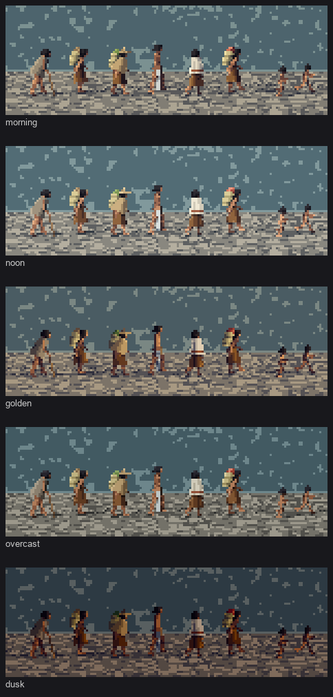
52. elements/people/stages/s5/s5_hours_carry.pngBash: Stronger hour palettes; overcast light; calm far water
cd ~/work/pixelart-studies/elements/people/src && python3 - <<'EOF'
p=open('pal.py').read()
p=p.replace(""" 'noon': dict(sun='#fff8e8', amb='#8aa4cc', key=1.0, sky=('#78a8e0', '#d4e4f0')),
'morning': dict(sun='#ffecc8', amb='#8898c8', key=0.95, sky=('#94bce8', '#e4e8ee')),
'golden': dict(sun='#ffc27a', amb='#6e6ea8', key=0.9, sky=('#7896d2', '#f8d4a8')),
'overcast': dict(sun='#e0e4e4', amb='#98a0a8', key=0.88, sky=('#b4bac0', '#d6d8da')),
'dusk': dict(sun='#f0967a', amb='#504682', key=0.66, sky=('#46468c', '#eca08a')),
'night': dict(sun='#ff9a40', amb='#1e2440', key=0.55, sky=('#0e1224', '#1e2438')), # "sun" = firelight""",
""" 'noon': dict(sun='#fff8e8', amb='#8aa4cc', key=1.0, sky=('#78a8e0', '#d4e4f0'), warm=0.18, cool=0.28),
'morning': dict(sun='#ffe4b8', amb='#8898c8', key=0.95, sky=('#94bce8', '#e8e4dc'), warm=0.3, cool=0.34),
'golden': dict(sun='#ffb060', amb='#6060a8', key=0.92, sky=('#6a8ad0', '#f8c890'), warm=0.55, cool=0.5),
'overcast': dict(sun='#e0e4e4', amb='#98a0a8', key=0.86, sky=('#a8aeb6', '#d0d4d6'), warm=0.04, cool=0.12),
'dusk': dict(sun='#f08870', amb='#4a4088', key=0.66, sky=('#3e3e88', '#e8987e'), warm=0.5, cool=0.55),
'night': dict(sun='#ff9a40', amb='#1e2440', key=0.55, sky=('#0e1224', '#1e2438'), warm=0.6, cool=0.55),""")
p=p.replace(""" warm = 0.22 * t ** 1.4
cool = 0.30 * (1 - t) ** 2""",""" warm = h.get('warm', 0.22) * t ** 1.2
cool = h.get('cool', 0.3) * (1 - t) ** 1.6""")
p=p.replace(""" if depth > 0:""",""" if mat == 'WATER':
# water carries the sky's colour
sk = to_lab(hexrgb(h['sky'][1 if i >= 2 else 0]))
c[1:] = c[1:] * 0.6 + sk[1:] * 0.4
c[0] = c[0] * 0.8 + sk[0] * 0.2 * (0.6 + 0.1 * i)
if depth > 0:""")
open('pal.py','w').write(p)
r=open('render.py').read()
r=r.replace(""" L = light_vec(*sun)
size_px = size_px or sc.scale
night = hour == 'night'""",""" L = light_vec(*sun) if hour != 'overcast' else np.array([0.15, 0.95, 0.25]) / np.linalg.norm([0.15, 0.95, 0.25])
size_px = size_px or sc.scale
night = hour == 'night'""")
r=r.replace(""" else:
g = shadows(sc, L, g, cast_len=cast_len)""",""" else:
g = shadows(sc, L, g, cast_len=cast_len, cast=hour != 'overcast')""")
open('render.py','w').write(r)
s=open('scenes.py').read()
s=s.replace(""" st = 2 if cl[yy, xx] < 1.2 else 3
if yy == row - 1:
st = 3""",""" st = 2
if (yy * 7 + (xx // max(2, sc.scale // 6)) * 13) % 11 == 0 and cl[yy, xx] > 0.3:
st = 3 # sparse horizontal glints
if yy == row - 1:
st = 3""")
open('scenes.py','w').write(s)
EOF
python3 stage5.py
# output:
(Bash completed with no output)Read: elements/people/stages/s5/s5_hours_carry.png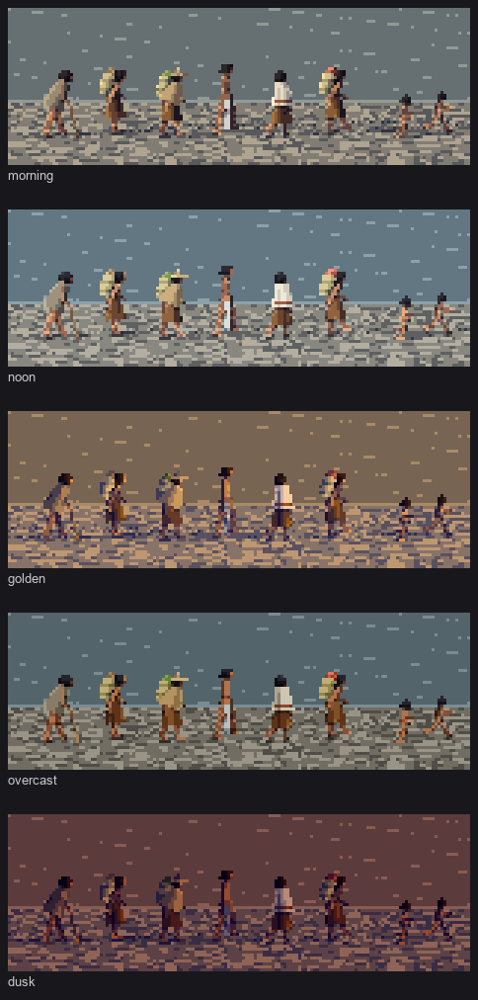
53. elements/people/stages/s5/s5_hours_carry.pngBash: Calmer gravel, water tint
cd ~/work/pixelart-studies/elements/people/src && python3 - <<'EOF'
g=open('grounds.py').read()
g=g.replace(" n = int(h * w / max(2.0, (0.05 * scale) ** 2) * 0.8)"," n = int(h * w / max(2.0, (0.06 * scale) ** 2) * 0.3)")
g=g.replace(" tone = rng.choice([1, 2, 2, 3], p=[0.2, 0.35, 0.3, 0.15])"," tone = rng.choice([1, 2, 3], p=[0.18, 0.62, 0.2])")
g=g.replace(""" if kind == 'GRAVEL':""",""" if kind == 'GRAVEL':
from scipy.ndimage import gaussian_filter
cl = gaussian_filter(rng.random((h, w)), 2.0)
cl = (cl - cl.mean()) / (cl.std() + 1e-9)
step = np.where(cl < -1.0, 1, 2)""")
open('grounds.py','w').write(g)
p=open('pal.py').read()
p=p.replace(""" sk = to_lab(hexrgb(h['sky'][1 if i >= 2 else 0]))
c[1:] = c[1:] * 0.6 + sk[1:] * 0.4""",""" sk = to_lab(hexrgb(h['sky'][1 if i >= 3 else 0]))
c[1:] = c[1:] * 0.55 + sk[1:] * 0.45""")
open('pal.py','w').write(p)
EOF
python3 stage5.py
# output:
(Bash completed with no output)Read: elements/people/stages/s5/s5_hours_carry.png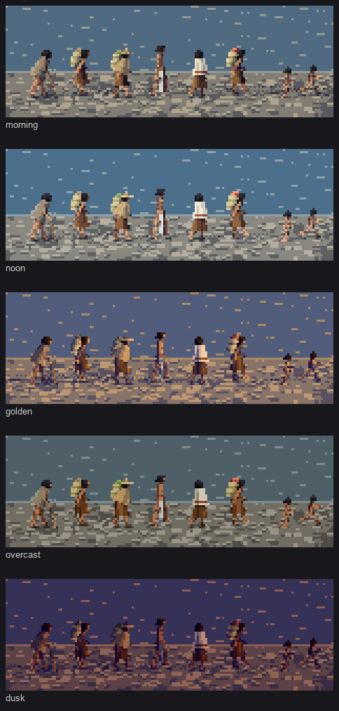
54. elements/people/stages/s5/s5_hours_carry.pngBash: Per-seed individual variation
cd ~/work/pixelart-studies/elements/people/src && python3 - <<'EOF'
p=open('pal.py').read()
p=p.replace("'FOREST', 'CAMAS', 'SKY']","'FOREST', 'CAMAS', 'SKY', 'SKIN2', 'SKIN3']")
p=p.replace(" 'CAMAS': ('#2a2a5a', '#5a5aa8', '#9a98e0'), # camas in bloom, blue-violet\n",""" 'CAMAS': ('#2a2a5a', '#5a5aa8', '#9a98e0'), # camas in bloom, blue-violet
'SKIN2': ('#34190f', '#83492f', '#bb7a50'), # a darker, more sunburnt brown
'SKIN3': ('#402418', '#9c6446', '#d0986c'), # a lighter brown (children, winter)
""")
open('pal.py','w').write(p)
s=open('person.py').read()
old=""" P = proportions(age, sex, size_px * (1.0 if age == 'adult' else 0.8))
st = P['stature']"""
new=""" P = proportions(age, sex, size_px * (1.0 if age == 'adult' else 0.8))
# individual variation from the seed: stature +-4%, build, skin tone, hair
vr = np.random.default_rng(hsh(seed, 101))
P['stature'] *= 1 + vr.uniform(-0.04, 0.04)
P['girth'] *= 1 + vr.uniform(-0.06, 0.1)
skin = spec.get('skin') or ['SKIN', 'SKIN2', 'SKIN3'][int(vr.choice(3, p=[0.5, 0.3, 0.2]))]
st = P['stature']"""
assert old in s
s=s.replace(old,new)
# replace hair default with variation
s=s.replace(""" hair = spec.get('hair') or ('loose' if sex == 'f' else ('tied' if region == 'coast' else 'queues'))""",
""" hair = spec.get('hair') or ((['loose', 'loose', 'tied'][int(vr.integers(3))]) if sex == 'f' else
('tied' if region == 'coast' else 'queues'))""")
# at end, remap SKIN to chosen skin
s=s.replace(""" rec = spec.get('recolor', {})""",""" if skin != 'SKIN':
for p_ in prims:
if p_.mat == 'SKIN':
p_.mat = skin
rec = spec.get('recolor', {})""")
open('person.py','w').write(s)
EOF
python3 -c "import sys;sys.path.insert(0,'.');import pal;print(len(pal.MATS))"
# output:
37Write: elements/people/src/sheets.py
"""Labelled parameter sweeps.
A activity x pose phase (24 px)
B age and sex x dress (standing and walking, 24 px)
C facing x size in px (walking woman, 32 -> 6 px)
D light and hour x activity
E seed x group (the same carrying file, individual variation from the seed)
F groups at several distances (32, 16, 8, 5 px per person) at the landscape view
G groups at the iso view (30 deg)
H the smallest sizes at 1x and 2x (how they read at true scale)
Usage: python3 sheets.py [A B C ...]
"""
import sys; sys.path.insert(0, '.')
import os
import numpy as np
from render import Scene, render_scene
from poses import ACTIVITIES
from person import DRESS
from scenes import SCENES
from util import up, save, grid, side, vstack
OUT = '../sheets/'
os.makedirs(OUT, exist_ok=True)
SUN = dict(morning=(20, 22), noon=(40, 55), golden=(170, 14), overcast=(40, 50), dusk=(175, 6), night=(40, 40))
def person_cell(spec, size, kind='SAND', hour='noon', w=1.7, h=1.4, k=None, elev=10, sun=None):
W, H = int(size * w), int(size * h)
sc = Scene(W, H, size, elev, ground_y=H - max(2, size // 7))
sc.add_person(spec)
rgb, _ = render_scene(sc, kind, hour, sun or SUN[hour], seed=spec.get('seed', 0))
return up(rgb, k or max(2, 144 // size))
def defaults(a):
sex = 'm' if a in ('split', 'spear', 'dipnet', 'paddle', 'carry_load') else 'f'
age = 'child' if a in ('run', 'squat_play', 'throw') else ('elder' if a == 'staff' else 'adult')
return dict(activity=a, sex=sex, age=age)
def sheet_A():
cells, labs = [], []
for a in ACTIVITIES:
for ph in (0.0, 0.25, 0.5, 0.75):
cells.append(person_cell(dict(defaults(a), phase=ph, facing=15, seed=3), 24, k=5))
labs.append(f'{a} phase {ph}')
save(grid(cells, 8, labs, fs=11, title='A. activity x pose phase, 24 px, noon, facing 15 deg'),
OUT + 'A_activity_x_phase.png')
def sheet_B():
cells, labs = [], []
groups = [('adult f', 'f', 'adult'), ('adult m', 'm', 'adult'), ('elder f', 'f', 'elder'), ('elder m', 'm', 'elder'),
('child f', 'f', 'child'), ('child m', 'm', 'child'), ('small', 'm', 'small')]
dresses = {'f': ['coast_f_summer', 'coast_f_rain', 'coast_f_wool', 'coast_f_hide', 'plateau_f', 'plateau_f_robe'],
'm': ['coast_m_summer', 'coast_m_blanket', 'coast_m_fur', 'coast_m_hide', 'coast_m_rain', 'plateau_m']}
for name, sex, age in groups:
ds = dresses[sex] if age in ('adult', 'elder') else ['child_bare', 'child_robe', 'child_bare', 'child_robe',
'child_bare', 'child_robe']
for i, d in enumerate(ds):
reg = 'plateau' if d.startswith('plateau') else 'coast'
act = 'walk' if i % 2 else 'stand'
cells.append(person_cell(dict(activity=act, sex=sex, age=age, dress=d, region=reg, facing=30 + 40 * i,
phase=0.1, seed=i + 7), 24, 'GRASS' if reg == 'plateau' else 'SAND',
k=5))
labs.append(f'{name}: {d}')
save(grid(cells, 6, labs, fs=11, title='B. age and sex x dress (pre-horse, AD 1400-1730), 24 px'),
OUT + 'B_age_sex_x_dress.png')
def sheet_C():
cells, labs = [], []
sizes = (32, 24, 16, 12, 9, 6)
for f in (0, 45, 90, 135, 180, 225, 270, 315):
for s in sizes:
cells.append(person_cell(dict(activity='walk', phase=0.1, facing=f, seed=5), s, k=int(6 * 32 / 32)))
labs.append(f'facing {f}, {s} px')
save(grid(cells, len(sizes), labs, fs=11, title='C. facing x size (walking woman), all at 6x'),
OUT + 'C_facing_x_size.png')
def sheet_D():
cells, labs = [], []
acts = [('carry', 'f'), ('dig', 'f'), ('spear', 'm'), ('split', 'm'), ('fire', 'f')]
for h in ('morning', 'noon', 'golden', 'overcast', 'dusk', 'night'):
for a, sex in acts:
if h == 'night':
# at night only the fire lights people: render the fire-tending figure with a hearth
from setting import hearth, paint_fire
W, H = int(24 * 1.7), int(24 * 1.4)
sc = Scene(W, H, 24, 12, ground_y=H - 4)
sc.add_person(dict(activity=a, sex=sex, facing=15, phase=0.5, seed=2, x=-0.25))
sc.add_prims(hearth(0.35, 0.1))
fz = ((0.35, 0.12, 0.1), 0.5)
def post(idx, sc):
p = sc.screen((0.35, 0, 0.1))
return paint_fire(idx, p[0], p[1] - 0.5, 24, 0.4, zbuf=sc.cv.z, zfire=p[2])
rgb, _ = render_scene(sc, 'DIRT', 'night', (40, 40), fires=[fz], post=post)
cells.append(up(rgb, 5))
else:
cells.append(person_cell(dict(activity=a, sex=sex, facing=15, phase=0.5, seed=2), 24,
'GRASS' if a == 'dig' else 'SAND', h, k=5))
labs.append(f'{h}: {a}')
save(grid(cells, len(acts), labs, fs=11, title='D. light and hour x activity, 24 px'), OUT + 'D_hour_x_activity.png')
def sheet_E():
rows = []
for seed in range(4):
rgb, _ = SCENES['carry'](20, seed=seed, phase=seed * 0.21)
rows.append(side([up(rgb, 3)], [f'seed {seed}: stature, build, skin tone, hair and phase offsets vary']))
save(vstack(rows), OUT + 'E_seed_x_group.png')
def sheet_F():
for name in SCENES:
rows = []
for s, k in ((32, 2), (16, 4), (8, 8), (5, 12)):
rgb, _ = SCENES[name](s)
rows.append(side([up(rgb, k)], [f'{name}: {s} px per person (x{k})']))
save(vstack(rows), OUT + f'F_{name}_distances.png')
def sheet_G():
rows = []
for name in ('fire', 'carry', 'camas', 'work', 'play'):
a, _ = SCENES[name](20, elev=30)
b, _ = SCENES[name](10, elev=30)
rows.append(side([up(a, 3), up(b, 6)], [f'{name}, iso 30 deg, 20 px', f'{name}, iso 30 deg, 10 px']))
save(vstack(rows), OUT + 'G_iso_30.png')
def sheet_H():
rows = []
for name in ('carry', 'weir', 'camas', 'canoe'):
rgbs = [SCENES[name](s)[0] for s in (12, 8, 6, 5)]
rows.append(side([up(r, 1) for r in rgbs] + [up(r, 2) for r in rgbs],
[f'{name} {s}px 1x' for s in (12, 8, 6, 5)] + [f'2x' for s in (12, 8, 6, 5)], fs=10))
save(vstack(rows), OUT + 'H_true_scale.png')
if __name__ == '__main__':
which = sys.argv[1:] or list('ABCDEFGH')
for w in which:
globals()['sheet_' + w]()
print('sheet', w, 'done')
Bash: Generate sheets A-E
cd ~/work/pixelart-studies/elements/people/src && OPENBLAS_NUM_THREADS=1 OMP_NUM_THREADS=1 nice -n 10 python3 sheets.py A B C D E 2>&1 | tail -5 # output: sheet A done sheet B done sheet C done sheet D done sheet E done
Read: elements/people/sheets/A_activity_x_phase.png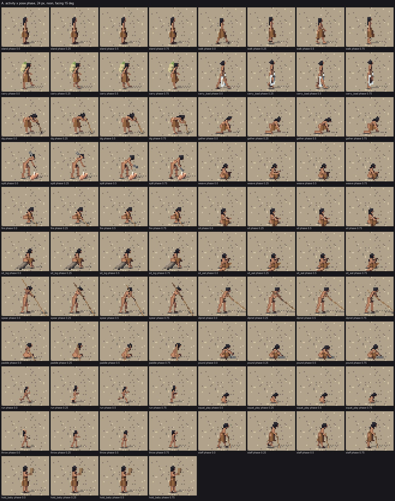
55. elements/people/sheets/A_activity_x_phase.pngBash: Fish darker, cradle held in arms
cd ~/work/pixelart-studies/elements/people/src && python3 - <<'EOF'
s=open('person.py').read()
s=s.replace("""'SILVER', prof='spindle',
tag='fish', minw=0.5)""","""'SILVER', prof='spindle',
tag='fish', minw=0.5, stepmod=-1)""")
old=s[s.index(" elif prop == 'cradle':"):s.index(" elif prop == 'firestick':")]
new=""" elif prop == 'cradle':
# a baby laced in a cradleboard, held across the body in both arms, head up at the elbow
c = hm + up * 0.02 * st
ax = nrm(fw * 0.35 + up * 1.0 + lat * 0.25)
add(c - ax * 0.14 * st, c + ax * 0.14 * st, 0.06 * st, 0.055 * st, 'WOOD', caps=False, tag='cradle',
minw=0.5)
add(c - ax * 0.1 * st + fw * 0.02 * st, c + ax * 0.06 * st + fw * 0.02 * st, 0.055 * st, None, 'BARKT',
tag='wrap', minw=0.5)
add(c + ax * 0.1 * st + fw * 0.025 * st, c + ax * 0.1 * st + fw * 0.025 * st, 0.04 * st, None, 'SKIN',
tag='baby', minw=0.5)
"""
s=s.replace(old,new)
open('person.py','w').write(s)
p=open('poses.py').read()
p=p.replace(""" return dict(pitch=-4, headp=22, hipL=4, hipR=-2, knL=4, knR=4, shL=28, shR=24, elL=100, elR=96,
sabL=10, sabR=10)""",""" return dict(pitch=-3, headp=24, hipL=4, hipR=-2, knL=4, knR=4, ikL=(0.14, -0.2, 0.04),
ikR=(0.16, -0.12, -0.05))""")
open('poses.py','w').write(p)
EOF
echo ok
# output:
okRead: elements/people/sheets/C_facing_x_size.png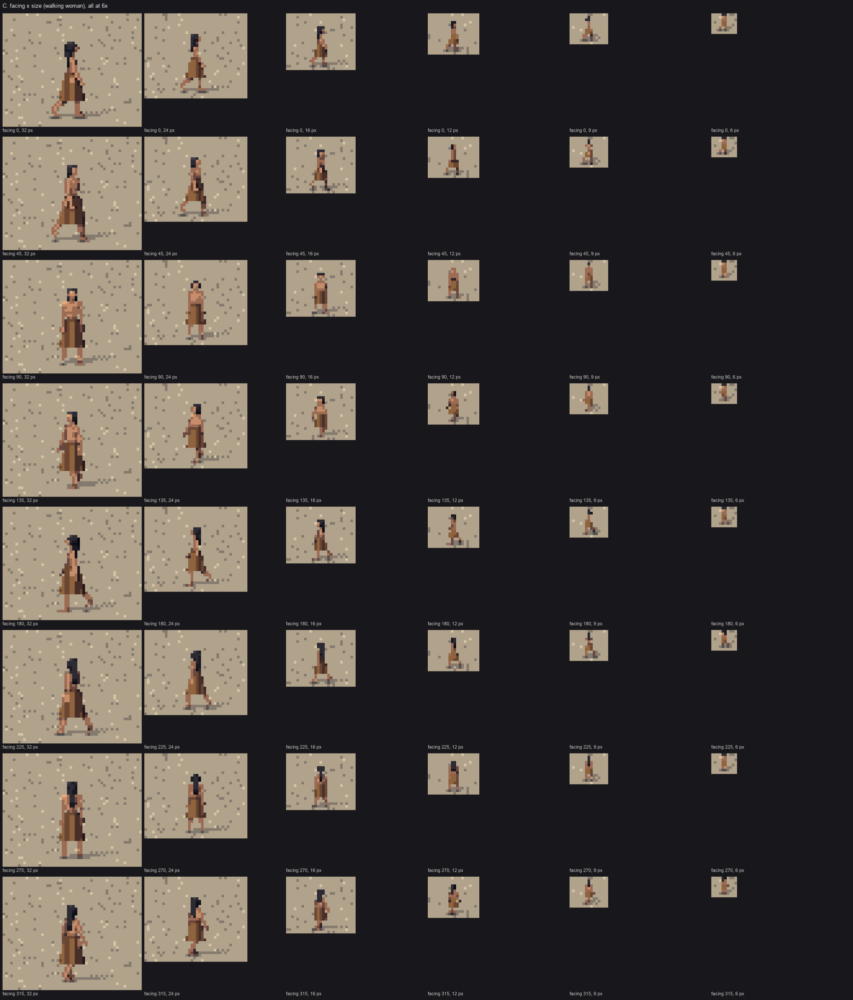
56. elements/people/sheets/C_facing_x_size.pngRead: elements/people/sheets/D_hour_x_activity.png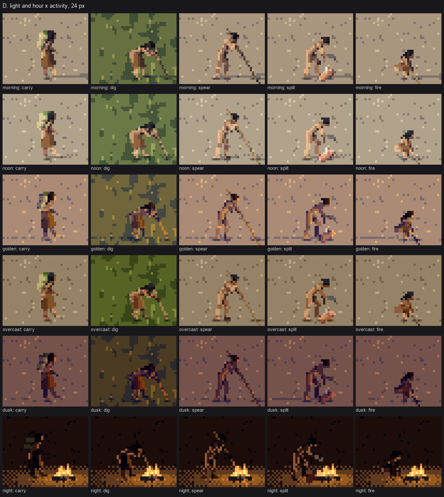
57. elements/people/sheets/D_hour_x_activity.pngBash: Finer grass; sheets E-H
cd ~/work/pixelart-studies/elements/people/src && sed -i '' 's/ cl = gaussian_filter(rng.random((h, w)), 1.5)\n cl = (cl - cl.mean()) \/ (cl.std() + 1e-9)\n step = np.where(cl < -0.9, 1, 2)//' grounds.py && python3 - <<'EOF'
g=open('grounds.py').read()
g=g.replace(""" cl = gaussian_filter(rng.random((h, w)), 1.5)
cl = (cl - cl.mean()) / (cl.std() + 1e-9)
step = np.where(cl < -0.9, 1, 2)""",""" cl = gaussian_filter(rng.random((h, w)), 0.8)
cl = (cl - cl.mean()) / (cl.std() + 1e-9)
step = np.where(cl < -1.2, 1, 2)""")
open('grounds.py','w').write(g)
EOF
time (OPENBLAS_NUM_THREADS=1 nice -n 10 python3 sheets.py E F G H 2>&1 | tail -3)
# output:
sheet F done
sheet G done
sheet H done
( OPENBLAS_NUM_THREADS=1 nice -n 10 python3 sheets.py E F G H 2>&1 | tail -3; 3.75s user 0.22s system 39% cpu 9.941 totalRead: elements/people/sheets/F_weir_distances.png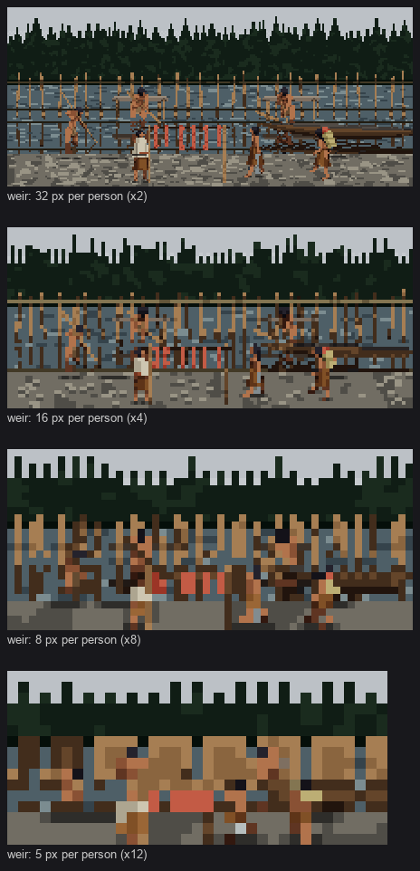
58. elements/people/sheets/F_weir_distances.pngBash: Weir LOD and wider spires
cd ~/work/pixelart-studies/elements/people/src && python3 - <<'EOF'
s=open('setting.py').read()
old=s[s.index(" P = []\n n = n or int((x1 - x0) / 0.18) + 1"):s.index(" rails = ")]
new=""" P = []
n = n or int((x1 - x0) / 0.18) + 1
# level of detail: never closer than ~3 px apart on screen, and thin dark wet poles
n = int(min(n, (x1 - x0) * size_px / 3.2 + 1))
for i in range(n):
x = x0 + (x1 - x0) * i / (n - 1)
lean = 0.06 * math.sin(i * 1.7)
P.append(Prim(v3(x, -0.1, z), v3(x + lean, h + 0.05 * math.sin(i * 2.3), z - 0.05), 0.022, 0.018, 'WOOD',
tag='stake', minw=0.0, stepmod=-1))
"""
s=s.replace(old,new)
open('setting.py','w').write(s)
c=open('scenes.py').read()
c=c.replace(""" hgt = rng.uniform(0.25, 0.8) * sc.scale * 0.7
w = max(3, int(hgt * rng.uniform(0.5, 0.75)))""",""" hgt = rng.uniform(0.35, 0.8) * sc.scale * 0.7
w = max(3, int(hgt * rng.uniform(0.8, 1.1)))""")
open('scenes.py','w').write(c)
EOF
python3 sheets.py F >/dev/null
# output:
(Bash completed with no output)Read: elements/people/sheets/F_weir_distances.png59. elements/people/sheets/F_weir_distances.png
Bash: Darker stakes, fixed-budget spires
cd ~/work/pixelart-studies/elements/people/src && sed -i '' "s/ tag='stake', minw=0.0, stepmod=-1))/ tag='stake', minw=0.0, stepmod=-2))/" setting.py && python3 - <<'EOF'
c=open('scenes.py').read()
c=c.replace(""" hgt = rng.uniform(0.35, 0.8) * sc.scale * 0.7
w = max(3, int(hgt * rng.uniform(0.8, 1.1)))""",""" hgt = rng.uniform(0.5, 1.0) * (sc.scale * 0.35 + 3)
w = max(3, int(hgt * rng.uniform(0.8, 1.1)))""")
open('scenes.py','w').write(c)
EOF
python3 sheets.py F >/dev/null; echo
# output:
(Bash completed with no output)Read: elements/people/sheets/F_carry_distances.png60. elements/people/sheets/F_carry_distances.png
Bash: Random glints; rerun stage 0 compare
cd ~/work/pixelart-studies/elements/people/src && python3 - <<'EOF'
c=open('scenes.py').read()
c=c.replace(""" if (yy * 7 + (xx // max(2, sc.scale // 6)) * 13) % 11 == 0 and cl[yy, xx] > 0.3:
st = 3 # sparse horizontal glints""",""" if gl[yy, xx]:
st = 3 # sparse horizontal glints""")
c=c.replace(""" if mat == 'WATER':
for yy in range(0, max(0, min(H, row))):""",""" if mat == 'WATER':
gl = np.zeros((H, W), bool)
for yy in range(0, max(0, min(H, row))):
if rng.random() < 0.5:
continue
for _ in range(int(W * 0.02 * (0.3 + yy / max(1, row)))):
x0 = int(rng.integers(0, W))
gl[yy, x0:x0 + int(rng.integers(2, 3 + sc.scale // 8))] = True
for yy in range(0, max(0, min(H, row))):""")
open('scenes.py','w').write(c)
EOF
python3 stage0.py compare
# output:
(Bash completed with no output)Read: elements/people/stages/s0/s0_bruegel_vs_mine.png61. elements/people/stages/s0/s0_bruegel_vs_mine.png
Bash: Truer poses for the Bruegel copy, calm field
cd ~/work/pixelart-studies/elements/people/src && python3 - <<'EOF'
s=open('stage0.py').read()
old=s[s.index("def field(h, w, seed=0):"):s.index("def mine(")]
new='''def field(h, w, seed=0, calm=True):
"""Bruegel's stubble field. calm: his field is two close golds with short horizontal strokes of
a third; the figures carry the only strong darks and lights nearby."""
rng = np.random.default_rng(seed)
cols = np.array([[196, 160, 90], [182, 146, 78], [214, 184, 116], [150, 110, 50]], np.uint8)
if not calm:
return cols[rng.choice(4, size=(h, w), p=[0.45, 0.3, 0.15, 0.1])]
a = np.where(rng.random((h, w)) < 0.35, 1, 0)
for _ in range(int(h * w * 0.03)):
y, x = rng.integers(0, h), rng.integers(0, w)
a[y, x:x + rng.integers(2, 5)] = 2 if rng.random() < 0.6 else 3
return cols[a]
'''
s=s.replace(old,new)
old=s[s.index("POSES = {"):s.index("def compare():")]
new='''POSES = {
# the mower: bent 35 deg, legs apart, the snath held low across the body with both hands
'scythe': dict(activity='stand', sex='m', facing=200, dress='coast_m_summer', hair='short', prop='spear',
pose_over=dict(pitch=38, headp=25, hipL=24, hipR=-20, knL=20, knR=12, habL=8, habR=8,
ikL=(0.22, -0.28, 0.32), ikR=(0.3, -0.36, -0.22)),
recolor={**BR, 'hair': 'HIDED', 'clout': 'HIDED'}),
# the binder: kneeling on both knees, trunk near horizontal, hands down in the sheaf
'kneel': dict(activity='stand', sex='m', facing=190, dress='coast_m_summer', hair='short', prop=None,
pose_over=dict(pitch=70, headp=35, hipL=95, hipR=100, knL=105, knR=110, footL=-50, footR=-50,
ikL=(0.12, -0.42, 0.08), ikR=(0.18, -0.44, -0.07)),
recolor={**BR, 'torso': 'BAND', 'hair': 'HIDED', 'clout': 'HIDED'}),
# the woman bent double over a sheaf: straight legs apart, a round back, head down, arms hanging
'bend': dict(activity='stand', sex='f', facing=320, dress='coast_f_summer', prop=None, hair='tied',
pose_over=dict(pitch=78, curl=28, headp=40, hipL=26, hipR=16, knL=8, knR=6, habL=10, habR=10,
ikL=(0.08, -0.36, 0.07), ikR=(0.1, -0.38, -0.06)),
recolor={**BR, 'skirt': 'FUR', 'hair': 'WOOL', 'hairknot': 'WOOL'}),
}
'''
s=s.replace(old,new)
s=s.replace("""def mine(spec, size, sun=(40, 45)):""","""def mine(spec, size, sun=(40, 45), shadow=True):""")
s=s.replace(""" bg = field(*idx.shape)
img = np.where(idx[..., None] > 0, lut[idx], bg)
return img""",""" bg = field(*idx.shape)
if shadow:
# Bruegel's dark under-shadow: the ground under a figure's body, one dark brown
m = idx > 0
ys, xs = np.nonzero(m)
under = np.zeros_like(m)
for x in np.unique(xs):
yb = ys[xs == x].max()
for d in (1, 2):
if yb + d < m.shape[0] and (d == 1 or yb + d >= m.shape[0] - 5):
under[yb + d if yb + d < m.shape[0] else yb, x] = True
bg = np.where(under[..., None] & (np.arange(m.shape[0])[:, None, None] >= m.shape[0] - 6),
np.array([120, 84, 38], np.uint8), bg)
img = np.where(idx[..., None] > 0, lut[idx], bg)
return img""")
open('stage0.py','w').write(s)
EOF
python3 stage0.py compare
# output:
(Bash completed with no output)Read: elements/people/stages/s0/s0_bruegel_vs_mine.png 62. elements/people/stages/s0/s0_bruegel_vs_mine.png
62. elements/people/stages/s0/s0_bruegel_vs_mine.png
Bash: Regenerate stage images
cd ~/work/pixelart-studies/elements/people/src && python3 stage2.py && python3 stage4.py && python3 stage5.py && python3 stage1.py && ls ../stages/* ../sheets # output: ../stages/t0.png ../sheets: A_activity_x_phase.png B_age_sex_x_dress.png C_facing_x_size.png D_hour_x_activity.png E_seed_x_group.png F_camas_distances.png F_canoe_distances.png F_carry_distances.png F_fire_distances.png F_play_distances.png F_weir_distances.png F_work_distances.png G_iso_30.png H_true_scale.png ../stages/s0: bruegel_bend.png bruegel_kneel.png bruegel_scythe.png s0_bruegel_reduction.png s0_bruegel_vs_mine.png ../stages/s1: s1_buildup.png s1_facings.png s1_man_blanket.png s1_walk.png ../stages/s2: s2_dress_16.png s2_dress_32.png ../stages/s4: s4_ladder_2x.png s4_ladder_6x.png ../stages/s5: s5_fire_dusk_night.png s5_hours_carry.png
Read: elements/people/sheets/G_iso_30.png63. elements/people/sheets/G_iso_30.png
Bash: Iso canvas sizing, flat mat, calmer grass
cd ~/work/pixelart-studies/elements/people/src && python3 - <<'EOF'
c=open('scenes.py').read()
c=c.replace("""def _scene(size_px, wu, hu, elev, gy_u):
W, H = int(round(size_px * wu)), int(round(size_px * hu))""","""def _scene(size_px, wu, hu, elev, gy_u):
# a steeper camera shows more ground: grow the canvas and push the ground line down
extra = max(0.0, math.sin(math.radians(elev)) - math.sin(math.radians(12)))
hu = hu + extra * 3.2
gy_u = gy_u + extra * 1.9
W, H = int(round(size_px * wu)), int(round(size_px * hu))""")
open('scenes.py','w').write(c)
s=open('setting.py').read()
s=s.replace("""def mat_on_ground(x, z, w=0.9, d=0.6):
return [Prim(v3(x - w / 2, 0.01, z), v3(x + w / 2, 0.01, z), d / 2, None, 'MAT', tag='gmat', minw=0.4)]""","""def mat_on_ground(x, z, w=0.9, d=0.6):
\"\"\"A cattail mat lying flat: a rounded rectangle in the ground plane.\"\"\"
p = Prim(v3(x - w / 2 + d / 2, 0.012, z), v3(x + w / 2 - d / 2, 0.012, z), d / 2, None, 'MAT', tag='gmat',
minw=0.4, stepmod=-1)
p.flat = 0.012
return [p]""")
open('setting.py','w').write(s)
g=open('grounds.py').read()
g=g.replace(" n = int(h * w * 0.035)\n"," n = int(h * w * 0.02)\n")
open('grounds.py','w').write(g)
EOF
python3 sheets.py G >/dev/null && echo ok
# output:
okRead: elements/people/sheets/G_iso_30.png64. elements/people/sheets/G_iso_30.png
Write: elements/people/LESSONS.md
# People of pre-contact Washington, small and with dignity: lessons A student's log. Subject: the people of Washington before horses and before smallpox (about AD 1400–1730, as the naturalist recommends), at work, at rest and at play, from about 30 px tall down to 6 px in a landscape, and from the 30° iso view. **Accuracy** comes from the naturalist's human-ecology desk (`~/work/naturalist/people/`, guides 00, 03, 06 and its pruned photo folders). Their dress table (Haeberlin & Gunther 1930, Eells 1877, Spier & Sapir 1930) is the spec for every garment here. **Care:** everyday lifeways only; no ceremonial or sacred subjects, no specific designs (baskets and blankets get generic bands in their real material colours), no real tribal names, no site locations. I deleted three folders my own image searches brought in (masks and dance regalia, Curtis's whaler), because they were ceremonial. **Code** (`src/`): - `fig.py`: skeleton (two-segment spine, arm IK), capsule primitives, the rasterizer. - `poses.py`: 21 activities as keyframed joint angles over a phase. - `person.py`: body, hair, dress, props, per-seed individual variation. - `render.py`: two-family shading, occlusion seams, firelight, the edge rule, scene render. - `pal.py`: materials and hour palettes. - `grounds.py`: calm grounds, contact and cast shadows. - `water.py`: exact mirror reflections from the z-buffer. - `setting.py`: hearth, fire, smoke, canoe, weir, rack, mats. - `scenes.py`: seven group compositions. - `sheets.py`: the labelled sweeps. - One script per stage (`stage0.py` … `stage5.py`). Everything renders an **index canvas** (material × step), so the hour is only a palette swap, as the studio's synthesis recommends. --- ## Stage 0: what survives of a master's small figures Ferrari painted no people in the Living Worlds scenes we have, and his LucasArts sprites aren't in the studio. The closest master for small figures read by task is the moodboard's Bruegel. I took three figures from *The Harvesters* (1565): the mower, the kneeling binder, and the woman bent double over a sheaf. Each is 50–75 px tall in the 1280-px reproduction.  **Reducing them by area-averaging destroys them.** At ×0.5 (about 30 px) they still read. At ×0.25 (about 12 px) only the one lightest mass survives, the white shirt, as a blob. At ×0.125 they're gone, indistinguishable from the stubble. What I take from it: 1. **A small figure is carried by one value extreme**: the lightest or darkest thing in its neighbourhood. For Bruegel it's the white shirt against the gold field. For our people it's black hair (always), a cream wool blanket, or a pale twined rain hat and cape. Bare skin and cedar bark sit in the ground's middle values. That's the danger case, and it is exactly the summer figure. 2. **Narrow things must be drawn, not averaged.** The scythe is a clean line at native size and noise after reduction. So the engine rasterizes at the target resolution, and every form under ~0.7 px radius is a clean Bresenham run: arms at 12 px, spears, stakes, paddles. 3. **The ground around a small figure must be calm.** Bruegel's stubble is two close golds with a few short strokes. The first version of my study field was salt-and-pepper, and it swallowed my figures. On the calm field (below) the same figures pop. 4. Bruegel always puts **a dark under the figure**: the shadow under the bent body, the dark feet.  My engine in his three poses and his colours (white shirts are the `WOOL` ramp, the red vest is `BAND`), at the painting's size, half and quarter. **Honest comparison:** the poses now match in gesture: the mower bent with the snath low, the woman bent double with a round back (this needed the two-segment spine), the binder kneeling with hands in the sheaf. The masses don't match yet. His figures are chunky, clothed volumes with a dark internal shadow tying them together. Mine are slimmer, and my shirts are too white and too uniformly lit. At 11–13 px mine hold up about as well as his reduced ones, because they're drawn at that size. That's the point, but his originals at 50 px are simply better paintings. --- ## Stage 1: one figure, built up  1. **Skeleton.** Pelvis, a two-segment spine (the upper back curls forward when bending: a round back, not a hinged plank), neck, head, arms with 2-bone IK for two-handed tools, legs posed against world vertical and grounded automatically: the lowest heel, toe, knee or buttock touches y = 0, or the pelvis sits on a seat. Bodies from Eells' measurements (Twana men averaged 165 cm, 64 kg). Heads are ~1/7 of height at 30 px, growing to ~1/4.5 at 6 px, because small figures need their heads. 2. **Capsule masses.** Every part is a capsule (a radius profile along a segment), z-buffered per pixel at the target resolution. The torso is a chest bar, a waist in two halves (narrower in profile than from the front), a pelvis bar, buttocks behind and a small chest in front, so the profile has its S-curve. The hair is a sphere set back on the skull and the face a smaller capsule set forward, so from the front the hair frames the face and from the side it caps it. Loose hair falls down the back. 3. **Dress.** Garments are larger capsules that swallow the limbs inside them. A knee-length shredded-cedar-bark skirt: a flat-hemmed cone from the waist to the knees, with a darker waistband and vertical strands. A twined cape: a bell-profile cone from neck to hips. A blanket: a bell from the shoulders to the knee. Each gets a small depth bias so it wins over the legs even when its pixel floor inflates it. 4. **Two light families.** A pixel is lit (n·L > 0.04: halftone, light, or highlight above 22 px) or in shadow (shadow, or core on undersides above 12 px). Normals are blurred within each surface group first, so a torso made of five capsules shades as one form and not a patchwork. Far-side limbs sit one step down. Where a nearer part crosses a farther part, the farther one gets a one-step seam: an arm across the torso, a leg in front of a leg. 5. **Colour.** Skin, hair, bark and every other material is a five-step ramp walked in OKLab from a cool dark (the sky's hue) to a warm light (the sun's hue). Temperature moves only the chroma, never the lightness: my first ramps pulled the lightness toward the ambient colour and black hair came out slate blue. 6. **On the ground.** A contact line (the darkest step, under the feet), a cast shadow sheared along the light (the figure mask projected on the ground plane, solid near the feet and checker-dithered farther out, as Ferrari's soft shadows are), and the **edge rule**: a silhouette pixel whose value is within ~0.075 L of the ground beside it moves one step away from the ground's value. Found edges only where the figure would be lost.  Notan, grey and colour from five sides. The notans hold in every view. **Not there yet:** at 32 px the front view is still a little mannequin-like: shoulders square, hands just ends of lines. The 3/4-back view (200°) shows almost no face, which is true but reads as "all hair". --- ## Stage 2: dress  Fifteen outfits from guide 06's table, pre-horse: | outfit | what it is | |---|---| | `coast_f_summer` | the knee-length bark skirt, bare above | | `coast_f_rain` | skirt, twined cape and wide-brimmed hat: the cone-on-cone figure the guide calls the most distinctive on the coast, and it reads at every size | | `coast_f_hide` | buckskin shirt to below the knee (the well-to-do) | | `coast_f_wool` | the skirt with a cream blanket over the shoulders | | `coast_m_summer` | breechclout | | `coast_m_blanket` | breechclout and a cream blanket with an alder-red and a black band | | `coast_m_fur` | fur robe | | `coast_m_hide` | fringed shirt and leggings | | `coast_m_rain` | cape and hat | | `plateau_f`, `plateau_f_robe` | the apron-skirt and the twined basket hat, with or without a robe | | `plateau_m`, `plateau_m_robe` | breechclout, hair in two queues in front, with or without a robe | | `child_bare`, `child_robe` | children naked in summer, or in a little robe |  **What reads at 16 px:** cream wool (a white rectangle), the rain hat (a pale disk), the grey fur robe, and black hair. Bark and skin separate only by a step of value, and that's why the bark ramp is darker and redder than the naturalist's suggested #8A5A3C. **Not there yet:** the buckskin shirt and leggings read as pale pyjamas. The fringe under the arms is not drawn, and smoked-hide leggings would help. The Plateau queues are invisible below 24 px. --- ## Stage 3: activities and their phases  21 activities, each keyframed over a phase: - **walking and carrying:** walk, carry (tumpline basket), carry_load (salmon in each hand), staff (an elder); - **tool work:** dig (digging stick), gather, split (hand maul and antler wedge on a cedar log), spear, dipnet, paddle, pound (stone pestle); - **seated and resting:** weave, fire (tending, crouched), sit, sit_log, sit_eat, hold_baby (cradleboard); - **play and idle:** run, squat_play, throw, stand. What made them read: - **The prop line is the activity.** A digging stick into the ground, a 15–25 ft salmon spear (the guide's length; held at its middle it rises far behind the fisherman, which looked wrong to me until I checked), a dip-net pole to the water, a paddle upright at the side. The first versions pointed the prop along the vector between the two hands, and it spun wildly between phases. Arm IK fixed it: the pose puts the two hands on the tool's line, and the prop is drawn through them. - **Bend from the hips with a round back** for digging, gathering and binding. Millet's gleaners and Bruegel's binders both have it. A hinged plank reads as a bow. - **Weight:** carrying leans forward from the ankles with shortened steps. The salmon carrier's arms hang straight with the weight. The splitter bends over the log, maul raised to the head, other hand on the wedge. My first splitter swung overhead with straight arms and read as waving. - The walk is Muybridge's four keys (contact, down, passing, up), mirrored, with a small bob. **Not there yet:** the throw and squat_play poses are weak at 24 px. The seated poses (sit, sit_eat) merge into a blob of skirt and thigh. The paddler's blade is often hidden behind the body. --- ## Stage 4: the size ladder, 32 → 6 px   **Rules for small sizes** (all in code, driven by `size_px`): - **Head grows** from 1/7 to about 1/4.5 of height between 28 and 6 px. - **Limbs and trunk thicken** by up to 45% below 12 px. - **Pixel floors per mass:** a 6 px person is two pixels wide. The torso and skirt get floors of ~0.9 px radius at 6 px, falling to 0.5 at 10 px. - **Below 10 px:** the face shrinks and the hair sphere rides up, so the head pixel is dark: a dark dot on top reads as "person" instantly. Occlusion seams switch off. Only the legs keep the far-side step, because it's what separates them. - **Undersides go to the core step only above 12 px.** Below that, the dark foot pixel looked like a hole. - I tried rendering at 4× and reducing by salience-weighted mode. It's cleaner in silhouette, but it lost the head in front views and blurred the skirt contrast. Direct rendering with floors won. The code is kept (`reduce_idx`, `sprite_ss`) for comparison. At 2× (close to true size) the figures stay distinct people doing distinct things down to 11 px. At 8–6 px, pale garments carry them (the blanketed man is a white dot on legs, the naturalist's "pale for blanketed figures"), and the rain hat and the tumpline basket keep their silhouettes. **Not there yet:** bare summer figures on sand at 6–8 px depend entirely on the edge rule and the contact shadow. They read, but weakly. --- ## Stage 5: light and hour  Same index canvas, six palettes. Each hour sets a sun colour, an ambient colour, and how hard the lights are pulled warm and the shadows cool: `warm` / `cool`, from overcast 0.04 / 0.12 to golden 0.55 / 0.5. Water takes the sky's colour (sky top in its darks, horizon in its lights). Overcast uses a top light and casts no shadows. Golden hour and dusk back-light the file: orange rims, violet shadows and long checkered cast shadows. My first hour palettes differed so little that the sheet looked like one image five times.  **Night is firelight.** The fire is a point light low in the hearth. Every pixel gets a world position from its screen position and z-buffer depth. Faces turned to the fire take the lit family, whose steps in the night palette are warm orange. Everything else stays in a cool near-black ambient. The ground is lifted in a dithered pool around the hearth (Bayer 2×2 at the falloff edge). Figures between us and the fire become silhouettes, as in de La Tour and Biard. The flames are teardrop tongues (a hot core in a cooler rim) whose tips flicker with phase, drawn behind any figure nearer than the hearth. --- ## Stage 6: groups at several distances Seven compositions in `scenes.py`, each rendered at any px-per-person and elevation: | scene | what's in it | |---|---| | **fire** | the hearth at night: people sitting, tending, weaving, eating, a baby, a child | | **weir** | dip-netters on platforms, a spear fisher in the shallows, a canoe, women carrying salmon to the rack | | **carry** | a file along the beach: tumpline baskets, salmon, a rain cape, a blanket, an elder with a staff, children running ahead | | **camas** | women digging on the May prairie, baskets beside them, children | | **canoe** | four paddlers coming in at golden hour | | **play** | children on the beach | | **work** | splitting cedar, weaving on a mat, pounding, a drying rack |       - **Props need their own level of detail.** At 8 px per person the weir's 30 stakes became a fence as loud as the people. Now stakes are never closer than ~3 px on screen, are dark wet poles, and lose their rails below 10–20 px. - **Water is an exact mirror.** Every object pixel has a world position from the z-buffer, so it's reflected about the water plane and re-projected. Lights drop a step more than darks, dash rows break it, and anything below the plane is hidden (the fisher's shins, the paddlers inside the hull). - Backdrops are plain on purpose: a forest wall with a crest of spires, or a far shore of water with sparse glints, and a banded sky. They belong to the other element students. --- ## Sheets - `sheets/A_activity_x_phase.png`: activity × phase. - `B_age_sex_x_dress.png`: age and sex × dress. - `C_facing_x_size.png`: 8 facings × 32→6 px. - `D_hour_x_activity.png`: hour × activity, including night by firelight. - `E_seed_x_group.png`: individual variation from the seed (stature ±4%, build, three skin tones, hair loose or tied, phase offsets). - `F_*_distances.png`: each group at 32, 16, 8 and 5 px per person. - `G_iso_30.png`: groups at the 30° iso view. - `H_true_scale.png`: the small sizes at 1× and 2×. Entry point: `person.build(spec, size_px)` → prims; `render.Scene` + `render.render_scene` for a scene; `scenes.SCENES[name](size_px, elev, hour, phase, seed, sun)`. --- ## Where it stands, honestly (first pass) (see the end of this file for the latest)
Read: elements/people/refs/Muybridge_woman_walking/_sheet.jpg65. elements/people/refs/Muybridge_woman_walking/_sheet.jpg
Bash: Crop Muybridge walking plate
cd ~/work/pixelart-studies/elements/people/refs/Muybridge_woman_walking && python3 -c "
from PIL import Image
for f in ['commons_A_naked_woman_walking_Collotype_after_Muybridge__9b6dab35.jpg','commons_A_naked_woman_walking_Collotype_after_Muybridge__be0c3a0f.jpg']:
im=Image.open(f); print(f, im.size)
im=Image.open('commons_A_naked_woman_walking_Collotype_after_Muybridge__be0c3a0f.jpg')
im.crop((250,250,1070,560)).save('(manager scratchpad)/m.png')
"
# output:
commons_A_naked_woman_walking_Collotype_after_Muybridge__9b6dab35.jpg (1280, 910)
commons_A_naked_woman_walking_Collotype_after_Muybridge__be0c3a0f.jpg (1280, 901)Read: (manager scratchpad)/m.png66. (manager scratchpad)/m.png
Bash: Walk vs Muybridge comparison
cd ~/work/pixelart-studies/elements/people/src && mkdir -p ../stages/s3 && cat > stage3.py <<'EOF'
"""Stage 3: activities. The walk against Muybridge; the sheet A of all activities is in sheets/."""
import sys; sys.path.insert(0, '.')
import numpy as np, os
from PIL import Image
from render import Scene, render_scene, shade, light_vec
from pal import palette
from util import up, save, side, vstack
OUT = '../stages/s3/'; os.makedirs(OUT, exist_ok=True)
MUY = '../refs/Muybridge_woman_walking/commons_A_naked_woman_walking_Collotype_after_Muybridge__be0c3a0f.jpg'
def muybridge_frames(size=32):
im = Image.open(MUY).convert('L')
x0, y0, cw, ch = 260, 305, 124.7, 136
out = []
for i in range(6):
c = im.crop((int(x0 + i * cw), y0, int(x0 + (i + 1) * cw) - 4, y0 + ch))
a = np.asarray(c).astype(float)
# the figure is light on a darker gridded ground: find its bounding box by threshold
m = a > np.percentile(a, 88)
ys, xs = np.nonzero(m[5:-18])
ys = ys + 5
top, bot = ys.min(), ys.max()
k = size / (bot - top)
small = np.asarray(c.resize((max(1, int(c.width * k)), max(1, int(c.height * k))), Image.BOX))
out.append((small, k, top, bot))
return out
def mine(phase, size=32, facing=180):
sc = Scene(int(size * 1.2), int(size * 1.25), size, 8, ground_y=int(size * 1.15))
sc.add_person(dict(activity='walk', phase=phase, facing=facing, dress='child_bare', hair='tied', seed=1))
rgb, idx = render_scene(sc, 'SAND', 'noon', (40, 40))
m = sc.cv.idx > 0
sil = np.where(m[..., None], np.uint8(30), np.uint8(200)).repeat(3, -1)
return rgb, sil
if __name__ == '__main__':
fr = muybridge_frames()
row1 = [up(np.stack([f[0]] * 3, -1), 6) for f in fr]
row2 = []
for f in fr:
a = f[0].astype(float)
m = a > np.percentile(a, 80)
row2.append(up(np.where(m[..., None], 30, 200).astype(np.uint8).repeat(3, -1), 6))
phases = [0.0, 1 / 6, 2 / 6, 3 / 6, 4 / 6, 5 / 6]
mm = [mine(p) for p in phases]
rows = [side(row1, ['Muybridge (area-reduced to 32 px)'] + [''] * 5),
side(row2, ['his silhouette (threshold)'] + [''] * 5),
side([up(s, 6) for _, s in mm], ['my walk, silhouette'] + [''] * 5),
side([up(r, 6) for r, _ in mm], ['my walk, 32 px'] + [''] * 5)]
save(vstack(rows), OUT + 's3_walk_vs_muybridge.png')
EOF
python3 stage3.py
# output:
(Bash completed with no output)Read: elements/people/stages/s3/s3_walk_vs_muybridge.png67. elements/people/stages/s3/s3_walk_vs_muybridge.png
Bash: Longer walk stride
cd ~/work/pixelart-studies/elements/people/src && python3 - <<'EOF'
p=open('poses.py').read()
old=p[p.index("WALK = ["):p.index("def cycle(")]
new="""WALK = [
# contact: a long stride (Muybridge: heel to toe about 0.4 of stature), back heel lifting
(0.0, dict(hipL=30, knL=4, hipR=-22, knR=14, footR=24, footL=-10, shL=-20, shR=20, elL=10, elR=20,
pitch=4, bob=-0.012)),
(0.125, dict(hipL=20, knL=18, hipR=-24, knR=32, footR=40, shL=-14, shR=16, elL=10, elR=18, pitch=4,
bob=-0.02)),
(0.25, dict(hipL=2, knL=8, hipR=20, knR=64, footR=12, shL=0, shR=0, elL=10, elR=12, pitch=4, bob=0.004)),
(0.375, dict(hipL=-16, knL=4, hipR=30, knR=26, footL=14, shL=14, shR=-14, elL=16, elR=10, pitch=4,
bob=0.012)),
]
"""
p=p.replace(old,new)
open('poses.py','w').write(p)
EOF
python3 stage3.py
# output:
(Bash completed with no output)Read: elements/people/stages/s3/s3_walk_vs_muybridge.png68. elements/people/stages/s3/s3_walk_vs_muybridge.png
Bash: Adjust hair/face offsets and view heads
cd ~/work/pixelart-studies/elements/people/src && python3 - <<'EOF'
p=open('person.py').read()
p=p.replace(""" add(hc - hfw * hr * 0.1 + hu * hr * (0.08 + 0.3 * tiny), hc - hfw * hr * 0.1 + hu * hr * (0.08 + 0.3 * tiny),
hr * 1.04, None, 'HAIR', tag='hair', minw=0.6)
add(hc + hfw * hr * 0.36 - hu * hr * 0.02, hc + hfw * hr * 0.3 - hu * hr * 0.5,""",""" add(hc - hfw * hr * 0.2 + hu * hr * (0.1 + 0.3 * tiny), hc - hfw * hr * 0.2 + hu * hr * (0.1 + 0.3 * tiny),
hr * 1.0, None, 'HAIR', tag='hair', minw=0.6)
add(hc + hfw * hr * 0.42 - hu * hr * 0.02, hc + hfw * hr * 0.34 - hu * hr * 0.5,""")
open('person.py','w').write(p)
EOF
python3 stage3.py && python3 -c "
import sys; sys.path.insert(0,'.')
from stage1 import *
base = dict(activity='stand', facing=20, sex='f', dress='coast_f_summer', phase=0.2, seed=1)
ps=[shaded(dict(base,facing=f), palette('noon')) for f in (0,45,90,135)]+[shaded(dict(base,facing=0,sex='m',dress='coast_m_summer'), palette('noon'))]
ps=[p[3:,8:-8] for p in ps]
save(side([up(p,10) for p in ps]), '(manager scratchpad)/z.png')
"
# output:
(Bash completed with no output)Read: (manager scratchpad)/z.png69. (manager scratchpad)/z.png
Bash: Lower face top, smaller knot
cd ~/work/pixelart-studies/elements/people/src && python3 - <<'EOF'
p=open('person.py').read()
p=p.replace(""" add(hc + hfw * hr * 0.42 - hu * hr * 0.02, hc + hfw * hr * 0.34 - hu * hr * 0.5, hr * 0.8 * (1 - 0.3 * tiny),
hr * 0.62 * (1 - 0.3 * tiny), 'SKIN', tag='head', minw=0.45)""",""" add(hc + hfw * hr * 0.42 - hu * hr * 0.18, hc + hfw * hr * 0.34 - hu * hr * 0.55, hr * 0.74 * (1 - 0.3 * tiny),
hr * 0.6 * (1 - 0.3 * tiny), 'SKIN', tag='head', minw=0.45)""")
p=p.replace("add(hc - hfw * hr * 0.9 - hu * hr * 0.15, hc - hfw * hr * 1.05 - hu * hr * 0.4, hr * 0.36, None, 'HAIR', tag='hairknot')",
"add(hc - hfw * hr * 0.95 - hu * hr * 0.1, hc - hfw * hr * 1.0 - hu * hr * 0.3, hr * 0.3, None, 'HAIR', tag='hairknot')")
open('person.py','w').write(p)
EOF
grep -c "hu \* hr \* 0.18" person.py; python3 -c "
import sys; sys.path.insert(0,'.')
from stage1 import *
base = dict(activity='stand', facing=20, sex='f', dress='coast_f_summer', phase=0.2, seed=2)
ps=[shaded(dict(base,facing=f), palette('noon')) for f in (0,45,90,135)]+[shaded(dict(base,facing=0,sex='m',dress='coast_m_summer'), palette('noon'))]
ps=[p[3:,8:-8] for p in ps]
save(side([up(p,10) for p in ps]), '(manager scratchpad)/z.png')
"
# output:
1Read: (manager scratchpad)/z.png70. (manager scratchpad)/z.png
Bash: View seated and play poses
cd ~/work/pixelart-studies/elements/people/src && python3 -c "
import sys; sys.path.insert(0,'.')
from stage1 import *
lut=palette('noon')
sp=[dict(activity=a, facing=f, sex=s, dress=d, seed=2) for a,f,s,d in [('sit',20,'f',None),('sit',100,'f',None),('sit_eat',20,'m',None),('sit_eat',120,'f','coast_f_wool'),('weave',30,'f',None),('sit_log',20,'m','coast_m_blanket'),('squat_play',30,'m',None),('throw',10,'m',None)]]
sp[-2]['age']='child'; sp[-1]['age']='child'
ps=[shaded(s, lut) for s in sp]
ps=[p[3:,4:-4] for p in ps]
save(side([up(p,8) for p in ps]), '(manager scratchpad)/z.png')
"
# output:
(Bash completed with no output)Read: (manager scratchpad)/z.png71. (manager scratchpad)/z.png
Bash: IK to joints; seated poses
cd ~/work/pixelart-studies/elements/people/src && python3 - <<'EOF'
s=open('fig.py').read()
a=s.index(" # shoulders with twist about the trunk axis")
b=s.index(" # legs relative to world vertical")
c=s.index(" # grounding")
arms=s[a:b]; legs=s[b:c]
s=s[:a]+legs+arms+s[c:]
s=s.replace(""" T = chest + v3(*ik) * P.get('stature', 1.0)""",""" if isinstance(ik, str): # reach for a joint: 'knL', 'knR', 'anL' ...
T = J[ik] + v3(0.0, 0.02, 0.0)
elif len(ik) == 4: # (joint, df, dy, dl): an offset from a joint
T = J[ik[0]] + v3(*ik[1:])
else:
T = chest + v3(*ik) * P.get('stature', 1.0)""")
open('fig.py','w').write(s)
p=open('poses.py').read()
p=p.replace(""" return dict(seat=0.0, pitch=8, headp=6, hipL=72, hipR=66, knL=118, knR=112, footL=-20, footR=-20,
shL=42, shR=40, elL=48, elR=44, sabL=6, sabR=6)""",""" return dict(seat=0.0, pitch=14, headp=4, hipL=74, hipR=68, knL=122, knR=116, footL=-20, footR=-20,
habL=6, habR=6, ikL=('knL', 0.02, -0.02, 0.03), ikR=('knR', 0.03, 0.0, -0.03))""")
p=p.replace(""" return dict(seat=0.0, pitch=12, headp=10, hipL=84, hipR=80, knL=150, knR=146, habL=40, habR=40,
shL=55, shR=62, elL=110, elR=118, sabL=8, sabR=8)""",""" return dict(seat=0.0, pitch=12, headp=10, hipL=84, hipR=80, knL=138, knR=134, habL=24, habR=24,
ikL=(0.14, 0.02, 0.03), ikR=(0.16, 0.08, -0.02))""")
p=p.replace(""" return dict(seat=0.22, pitch=26, headp=10, hipL=88, hipR=84, knL=92, knR=86, shL=38, shR=34, elL=52,
elR=58, sabL=4, sabR=4)""",""" return dict(seat=0.22, pitch=26, headp=10, hipL=88, hipR=84, knL=92, knR=86,
ikL=('knL', 0.04, 0.02, 0.0), ikR=('knR', 0.05, 0.03, 0.0))""")
open('poses.py','w').write(p)
EOF
python3 -c "
import sys; sys.path.insert(0,'.')
from stage1 import *
lut=palette('noon')
sp=[dict(activity=a, facing=f, sex=s, dress=d, seed=2) for a,f,s,d in [('sit',20,'f',None),('sit',100,'f',None),('sit_eat',20,'m',None),('sit_eat',120,'f','coast_f_wool'),('sit_log',20,'m','coast_m_blanket'),('sit_log',150,'f',None)]]
ps=[shaded(s, lut) for s in sp]
ps=[p[3:,4:-4] for p in ps]
save(side([up(p,8) for p in ps]), '(manager scratchpad)/z.png')
"
# output:
(Bash completed with no output)Read: (manager scratchpad)/z.png72. (manager scratchpad)/z.png
Bash: New throw pose; view child poses
cd ~/work/pixelart-studies/elements/people/src && python3 - <<'EOF'
p=open('poses.py').read()
a=p.index(" if a == 'throw':")
b=p.index(" if a == 'staff':")
p=p[:a]+""" if a == 'throw': # a child throwing a stone out over the water: wind-up, then release
t = interp([(0.0, dict(v=0.0)), (0.35, dict(v=0.0)), (0.55, dict(v=1.0)), (0.8, dict(v=1.0))], phase)['v']
return dict(pitch=-8 + 30 * t, headp=-6 + 14 * t, hipL=24 + 6 * t, hipR=-18 - 6 * t, knL=12 + 14 * t,
knR=8, twist=-30 + 55 * t,
ikR=(-0.14 + 0.46 * t, 0.16 - 0.14 * t, -0.12 + 0.1 * t),
ikL=(0.26 - 0.3 * t, -0.02 - 0.2 * t, 0.12))
"""+p[b:]
open('poses.py','w').write(p)
s=open('person.py').read()
s=s.replace(""" add(v3(-0.1 * st, 0.12 * st, 0.5 * st), v3(-0.05 * st, 0.12 * st, -0.5 * st), 0.12 * st, None, 'LOG',
tag='seatlog', minw=0.7)""",""" add(v3(-0.08 * st, 0.1 * st, 0.4 * st), v3(-0.05 * st, 0.1 * st, -0.4 * st), 0.1 * st, None, 'LOG',
tag='seatlog', minw=0.7, stepmod=-1)""")
open('person.py','w').write(s)
EOF
python3 tact.py throw,run,squat_play 24 30 (manager scratchpad)/act.png 6
# output:
(Bash completed with no output)Read: (manager scratchpad)/act.png73. (manager scratchpad)/act.png
Bash: Compare Curtis fisherman with my spear figure
cd ~/work/pixelart-studies/elements/people/src && python3 -c "
import sys; sys.path.insert(0,'.')
import numpy as np
from PIL import Image
from stage1 import *
from stage0 import quant
im=Image.open('../refs/Edward_Curtis_Clayoquot/openverse_A_Clayoquot_fisherman_catching_flounders_and_oth_fe297f6e.jpg').convert('RGB')
print(im.size)
c=im.crop((0,0,540,700))
a=np.asarray(c)
# reduce so figure (~ rows 60..560?) becomes 40 px
sm=np.asarray(c.resize((int(540*40/420),int(700*40/420)),Image.BOX))
sp=dict(activity='spear',facing=150,sex='m',seed=3,phase=0.5)
mine=shaded(sp,palette('overcast'))
save(side([np.asarray(c.resize((270,350))), up(quant(sm,8),8), up(mine,8)]),'(manager scratchpad)/z.png')
"
# output:
(540, 1023)Read: (manager scratchpad)/z.png74. (manager scratchpad)/z.png
Bash: Deeper torsos
cd ~/work/pixelart-studies/elements/people/src && python3 - <<'EOF'
p=open('person.py').read()
p=p.replace(" chest_hw = (0.048 if fem else 0.06) * st"," chest_hw = (0.04 if fem else 0.05) * st")
p=p.replace(" rc = (0.05 if fem else 0.056) * st * P['girth']"," rc = (0.06 if fem else 0.068) * st * P['girth']")
p=p.replace(" wr = 0.048 * st * P['girth']"," wr = (0.054 if fem else 0.056) * st * P['girth']")
open('person.py','w').write(p)
EOF
python3 -c "
import sys; sys.path.insert(0,'.')
from stage1 import *
lut=palette('noon')
sp=[dict(activity='spear',facing=150,sex='m',seed=3,phase=0.5),dict(activity='stand',facing=0,sex='m',seed=3),dict(activity='stand',facing=90,sex='m',seed=3),dict(activity='stand',facing=10,sex='f',seed=2),dict(activity='stand',facing=90,sex='f',seed=2),dict(activity='dig',facing=10,sex='f',seed=2)]
ps=[shaded(s, lut) for s in sp]
save(side([up(p[3:,4:-4],8) for p in ps]), '(manager scratchpad)/z.png')
"
# output:
(Bash completed with no output)Read: (manager scratchpad)/z.png75. (manager scratchpad)/z.png
Bash: Raise hair sphere
cd ~/work/pixelart-studies/elements/people/src && sed -i '' "s/ add(hc - hfw \* hr \* 0.2 + hu \* hr \* (0.1 + 0.3 \* tiny), hc - hfw \* hr \* 0.2 + hu \* hr \* (0.1 + 0.3 \* tiny),/ add(hc - hfw * hr * 0.2 + hu * hr * (0.22 + 0.2 * tiny), hc - hfw * hr * 0.2 + hu * hr * (0.22 + 0.2 * tiny),/" person.py && grep -c "0.22 + 0.2 \* tiny" person.py && python3 -c "
import sys; sys.path.insert(0,'.')
from stage1 import *
lut=palette('noon')
sp=[dict(activity='stand',facing=90,sex='f',seed=2),dict(activity='stand',facing=90,sex='f',seed=0),dict(activity='stand',facing=60,sex='m',seed=3),dict(activity='stand',facing=10,sex='f',seed=0)]
ps=[shaded(s, lut) for s in sp]
save(side([up(p[3:30,8:-8],10) for p in ps]), '(manager scratchpad)/z.png')
"
# output:
1Read: (manager scratchpad)/z.png76. (manager scratchpad)/z.png
Bash: Long hair frames the face
cd ~/work/pixelart-studies/elements/people/src && python3 - <<'EOF'
p=open('person.py').read()
old=""" add(hc - hfw * hr * 0.45 + hu * hr * 0.1, J['chest'] - fw * (rc * 0.8) - up * 0.1 * st, hr * 0.8,
hr * 0.5, 'HAIR', tag='hairlong', minw=0.5)"""
new=""" add(hc - hfw * hr * 0.35 + hu * hr * 0.1, J['chest'] - fw * (rc * 0.8) - up * 0.1 * st, hr * 0.95,
hr * 0.55, 'HAIR', tag='hairlong', minw=0.5)"""
assert old in p
p=p.replace(old,new)
open('person.py','w').write(p)
EOF
python3 -c "
import sys; sys.path.insert(0,'.')
from stage1 import *
lut=palette('noon')
sp=[dict(activity='stand',facing=90,sex='f',seed=2),dict(activity='stand',facing=45,sex='f',seed=2),dict(activity='stand',facing=0,sex='f',seed=2),dict(activity='stand',facing=270,sex='f',seed=2)]
ps=[shaded(s, lut) for s in sp]
save(side([up(p[3:30,8:-8],10) for p in ps]), '(manager scratchpad)/z.png')
"
# output:
(Bash completed with no output)Read: (manager scratchpad)/z.png77. (manager scratchpad)/z.png
Bash: Wider long hair
cd ~/work/pixelart-studies/elements/people/src && sed -i '' "s/J\['chest'\] - fw \* (rc \* 0.8) - up \* 0.1 \* st, hr \* 0.95,/J['chest'] - fw * (rc * 0.8) - up * 0.1 * st, hr * 1.15,/" person.py && python3 -c "
import sys; sys.path.insert(0,'.')
from stage1 import *
lut=palette('noon')
sp=[dict(activity='stand',facing=90,sex='f',seed=2),dict(activity='stand',facing=45,sex='f',seed=2),dict(activity='stand',facing=0,sex='f',seed=2),dict(activity='stand',facing=270,sex='f',seed=2)]
ps=[shaded(s, lut) for s in sp]
save(side([up(p[3:30,8:-8],10) for p in ps]), '(manager scratchpad)/z.png')
"
# output:
(Bash completed with no output)Read: (manager scratchpad)/z.png78. (manager scratchpad)/z.png
Bash: Regenerate all stages and sheets
cd ~/work/pixelart-studies/elements/people/src && (python3 stage0.py compare; python3 stage1.py; python3 stage2.py; python3 stage3.py; python3 stage4.py; python3 stage5.py; OPENBLAS_NUM_THREADS=1 python3 sheets.py) 2>&1 | tail -2 # output: sheet G done sheet H done
Read: elements/people/sheets/B_age_sex_x_dress.png79. elements/people/sheets/B_age_sex_x_dress.png
Bash: Lower-contrast ground ramps; grey elder hair
cd ~/work/pixelart-studies/elements/people/src && python3 - <<'EOF'
p=open('pal.py').read()
p=p.replace(" 'SAND': ('#5a4c3a', '#a89274', '#d8c4a0'),"," 'SAND': ('#6e5e48', '#a89274', '#ccb894'), # grounds: low-contrast ramps, so they stay calm")
p=p.replace(" 'GRASS': ('#2a3418', '#5a6a2c', '#98a04e'), # prairie grass, early summer"," 'GRASS': ('#3a4a20', '#5c6c2e', '#8a9446'), # prairie grass, early summer")
p=p.replace(" 'GRAVEL':('#3a3834', '#7a766c', '#b4ae9e'),"," 'GRAVEL':('#4a4842', '#7a766c', '#aaa494'),")
p=p.replace(" 'DIRT': ('#2e2218', '#5e4630', '#8a6e4c'),"," 'DIRT': ('#3a2c20', '#5e4630', '#806646'),")
p=p.replace("'FOREST', 'CAMAS', 'SKY', 'SKIN2', 'SKIN3']","'FOREST', 'CAMAS', 'SKY', 'SKIN2', 'SKIN3', 'HAIRG']")
p=p.replace(" 'SKIN3': ('#402418', '#9c6446', '#d0986c'), # a lighter brown (children, winter)\n"," 'SKIN3': ('#402418', '#9c6446', '#d0986c'), # a lighter brown (children, winter)\n 'HAIRG': ('#201e22', '#58565a', '#9a989a'), # an elder's grey hair\n")
open('pal.py','w').write(p)
s=open('person.py').read()
s=s.replace(""" if skin != 'SKIN':
for p_ in prims:""",""" if age == 'elder':
for p_ in prims:
if p_.mat == 'HAIR':
p_.mat = 'HAIRG'
if skin != 'SKIN':
for p_ in prims:""")
open('person.py','w').write(s)
EOF
python3 sheets.py B D > /dev/null; echo
# output:
(Bash completed with no output)Read: elements/people/sheets/D_hour_x_activity.png80. elements/people/sheets/D_hour_x_activity.png
Read: elements/people/sheets/H_true_scale.png81. elements/people/sheets/H_true_scale.png
Bash: Contact sheet of Ferrari refs
cd ~/work/pixelart-studies && ls shared/scenes pedagogy/master-copy/ref/ | head; python3 -c "
from PIL import Image
import glob
fs=sorted(glob.glob('pedagogy/master-copy/ref/lw/*.png'))
ims=[Image.open(f).convert('RGB').resize((320,240)) for f in fs]
W=4; H=(len(ims)+3)//4
sheet=Image.new('RGB',(320*W,240*H))
for i,im in enumerate(ims): sheet.paste(im,((i%W)*320,(i//W)*240))
sheet.save('(manager scratchpad)/lw.png'); print(len(ims))
"
# output:
pedagogy/master-copy/ref/:
lw
native.png
shared/scenes:
SCENES.md
tarn_dusk.json
12Read: (manager scratchpad)/lw.png82. (manager scratchpad)/lw.png
Bash: Crop Ferrari fire passages
cd ~/work/pixelart-studies/pedagogy/master-copy/ref/lw && python3 -c "
from PIL import Image
im=Image.open('V01.png').convert('RGB'); print(im.size)
im.crop((300,0,420,110)).resize((720,660),Image.NEAREST).save('(manager scratchpad)/f1.png')
im.crop((130,250,230,330)).resize((600,480),Image.NEAREST).save('(manager scratchpad)/f2.png')
"; head -c 600 V01.json
# output:
(640, 480)
{filename:'V01.LBM',width:640,height:480,colors:[[0,0,0],[35,23,87],[31,19,103],[19,15,115],[23,23,127],[31,31,143],[31,43,159],[19,55,175],[15,75,183],[11,99,183],[31,111,187],[47,119,191],[75,127,191],[83,135,191],[99,139,195],[107,147,191],[123,151,195],[139,155,199],[151,163,203],[175,171,207],[195,175,211],[211,187,207],[231,195,203],[243,203,199],[247,211,191],[247,219,167],[251,223,139],[251,219,135],[255,211,119],[255,191,99],[255,187,119],[255,155,127],[255,127,171],[207,135,147],[195,127,151],[183,119,155],[167,111,151],[131,87,143],[95,67,127],[67,59,111],[19,31,67],[7,11,39],[0,0,1Read: (manager scratchpad)/f1.png 83. (manager scratchpad)/f1.png
83. (manager scratchpad)/f1.png
Bash: Inspect V01 json structure
cd ~/work/pixelart-studies/pedagogy/master-copy/ref/lw && python3 -c "
import json,re
s=open('V01.json').read()
print(s[:200].count('['))
print(len(s))
print(s[600:1500])
"
# output:
14
954621
5],[55,15,47],[95,19,51],[131,39,63],[187,63,47],[223,111,59],[0,0,15],[0,0,19],[0,0,27],[0,7,35],[7,11,43],[7,15,51],[11,23,59],[19,31,67],[19,31,67],[11,23,59],[7,15,51],[7,11,43],[0,7,35],[0,0,27],[0,0,19],[0,0,15],[19,31,67],[23,31,75],[27,31,83],[35,35,91],[43,39,99],[55,47,107],[67,55,115],[83,63,127],[83,63,127],[67,55,115],[55,47,107],[43,39,99],[35,35,91],[27,31,83],[23,31,75],[19,31,67],[99,71,139],[99,71,139],[99,71,139],[107,75,147],[119,79,155],[127,83,163],[143,91,167],[163,103,175],[163,103,175],[143,91,167],[127,83,163],[119,79,155],[107,75,147],[99,71,139],[99,71,139],[99,71,139],[35,19,55],[87,31,91],[131,39,99],[167,51,71],[207,99,59],[167,51,71],[127,39,95],[87,31,91],[31,31,143],[31,31,143],[55,67,131],[167,79,127],[207,99,59],[167,79,127],[55,67,131],[31,31,143],[203,83,55],[211,111,59],[223,143,59],[235,179,63],[243,199,67],[231,167,63],[219,139,63],[211,111,59],[2Bash: Read the willow lw loader
sed -n 1,40p ~/work/pixelart-studies/elements/willow/lw.py
# output:
"""Load Ferrari's Living Worlds scenes as index maps (format from the Canvas Cycle demo)."""
import re, json, numpy as np
REF = "~/work/pixelart-studies/pedagogy/master-copy/ref/lw"
def load(name):
t = open(f"{REF}/{name}.json").read()
t = re.sub(r'([{,])\s*([A-Za-z_]+)\s*:', r'\1"\2":', t).replace("'", '"')
d = json.loads(t)
d["pal"] = np.array(d["colors"], dtype=np.uint8)
d["idx"] = np.array(d["pixels"], dtype=np.int32).reshape(d["height"], d["width"])
return d
def lum(rgb):
rgb = np.asarray(rgb, float)
return 0.2126 * rgb[..., 0] + 0.7152 * rgb[..., 1] + 0.0722 * rgb[..., 2]Bash: Inspect the fire crop's indices
cd ~/work/pixelart-studies/elements/people/src && cat > lw.py <<'EOF'
"""Load Ferrari's Living Worlds scenes as index maps (the willow student's loader, copied)."""
import re, json, numpy as np
REF = "~/work/pixelart-studies/pedagogy/master-copy/ref/lw"
def load(name):
t = open(f"{REF}/{name}.json").read()
t = re.sub(r'([{,])\s*([A-Za-z_]+)\s*:', r'\1"\2":', t).replace("'", '"')
d = json.loads(t)
d["pal"] = np.array(d["colors"], dtype=np.uint8)
d["idx"] = np.array(d["pixels"], dtype=np.int32).reshape(d["height"], d["width"])
return d
EOF
python3 - <<'EOF'
import sys; sys.path.insert(0,'.')
import numpy as np
from lw import load
d=load('V01'); idx=d['idx'][0:110,300:420]; pal=d['pal']
u,c=np.unique(idx,return_counts=True)
for i,n in sorted(zip(u,c),key=lambda t:-t[1])[:40]:
print(i, pal[i], n)
EOF
# output:
6 [ 31 43 159] 1616
5 [ 31 31 143] 1556
4 [ 23 23 127] 1476
2 [ 31 19 103] 1418
3 [ 19 15 115] 1369
7 [ 19 55 175] 1229
8 [ 15 75 183] 1150
1 [35 23 87] 717
9 [ 11 99 183] 222
248 [19 0 31] 164
244 [ 7 0 23] 150
249 [23 7 35] 149
207 [ 79 39 107] 132
212 [ 83 43 131] 124
213 [ 67 39 123] 110
203 [ 47 19 107] 105
211 [ 95 55 143] 104
205 [67 19 95] 103
242 [19 0 31] 97
214 [ 59 31 115] 96
204 [59 19 99] 91
247 [ 7 0 23] 90
206 [75 27 99] 85
210 [ 95 55 131] 82
243 [11 0 27] 82
202 [ 51 23 107] 81
201 [ 55 27 111] 66
240 [35 11 39] 65
209 [ 91 55 123] 58
241 [27 7 35] 54
245 [ 0 0 19] 37
43 [55 15 47] 33
233 [47 19 51] 30
45 [131 39 63] 22
44 [95 19 51] 19
105 [ 31 31 143] 17
208 [ 91 55 115] 17
106 [ 55 67 131] 16
47 [223 111 59] 15
114 [223 143 59] 14Bash: Measure Ferrari smoke and flame
cd ~/work/pixelart-studies/elements/people/src && python3 - <<'EOF'
import sys; sys.path.insert(0,'.')
import numpy as np
from lw import load
d=load('V01'); idx=d['idx'][0:110,300:420]; pal=d['pal']
smoke=(idx>=200)&(idx<=215)
sky=(idx>=1)&(idx<=9)
flame=np.isin(idx,[43,44,45,46,47]+list(range(100,120)))
print('smoke px',smoke.sum(),'flame px',flame.sum())
# in the bounding region of smoke (dilated), what fraction is smoke
from scipy.ndimage import binary_dilation, binary_closing
reg=binary_closing(smoke,iterations=2)
print('region px',reg.sum(),'smoke share in region',smoke[reg].mean())
# checker test: of smoke pixels in region, fraction whose 4-neighbours are all sky
nb=np.zeros_like(smoke)
for dy,dx in ((1,0),(-1,0),(0,1),(0,-1)):
nb |= np.roll(np.roll(smoke,dy,0),dx,1)
iso=smoke & ~nb
print('isolated smoke pixels (checker-dithered)', iso.sum()/smoke.sum())
# smoke value by vertical position within plume
L=pal[idx].astype(float)@[0.2126,0.7152,0.0722]
ys,xs=np.nonzero(smoke)
for y0 in range(0,110,20):
s=(ys>=y0)&(ys<y0+20)
if s.sum(): print('rows',y0,'mean L',L[ys[s],xs[s]].mean().round(1),'n',s.sum())
# light on top vs bottom edges
top=smoke & ~np.roll(smoke,1,0)
bot=smoke & ~np.roll(smoke,-1,0)
print('top-edge L',L[top].mean().round(1),'bottom-edge L',L[bot].mean().round(1),'interior',L[smoke&~top&~bot].mean().round(1))
print('flame colours', [tuple(pal[i]) for i in np.unique(idx[flame])])
EOF
# output:
smoke px 1255 flame px 239
region px 1702 smoke share in region 0.7050528789659224
isolated smoke pixels (checker-dithered) 0.3952191235059761
rows 0 mean L 48.3 n 475
rows 20 mean L 48.0 n 621
rows 40 mean L 50.3 n 159
top-edge L 49.3 bottom-edge L 49.3 interior 47.3
flame colours [(55, 15, 47), (95, 19, 51), (131, 39, 63), (187, 63, 47), (223, 111, 59), (31, 31, 143), (31, 31, 143), (55, 67, 131), (167, 79, 127), (207, 99, 59), (167, 79, 127), (55, 67, 131), (31, 31, 143), (203, 83, 55), (211, 111, 59), (223, 143, 59), (235, 179, 63), (243, 199, 67), (231, 167, 63), (219, 139, 63), (211, 111, 59)]Bash: New smoke painter and Ferrari fire copy
cd ~/work/pixelart-studies/elements/people/src && python3 - <<'EOF'
s=open('setting.py').read()
a=s.index("def paint_smoke(")
s=s[:a]+'''def paint_smoke(idx, cx, cy, size_px, phase=0.0, seed=0, drift=0.6, rows=None, hour_dark=False, wind=1.0):
"""Woodsmoke after Ferrari (V01's torch plume, measured): a coherent billowing plume whose
value sits close to the background, hue-shifted; a solid core, checker-dithered margins
(~40% of his smoke pixels are isolated checker pixels), sparse dither at the thin ends; the
edges a touch lighter than the interior. It rises, then leans downwind and widens."""
from scipy.ndimage import gaussian_filter
rng = np.random.default_rng(seed)
H, W = idx.shape
out = idx.copy()
L = int(rows or size_px * 1.8)
ys, xs = np.mgrid[0:H, 0:W]
t = np.clip((cy - (ys + 0.5)) / max(L, 1), 0, 1.5) # 0 at the source, 1 at the top
# centreline: rises, then bends downwind
xc = cx + wind * drift * L * (t ** 1.6) * 0.9 + np.sin(t * 5 + phase * 6.28) * size_px * 0.06 * t
half = size_px * (0.04 + 0.28 * t ** 0.9)
env = np.clip(1 - np.abs(xs + 0.5 - xc) / np.maximum(half, 0.5), 0, 1) * (t > 0) * np.clip(1.25 - t, 0, 1)
# billows: smooth noise advected upward with the phase
n1 = gaussian_filter(rng.random((H + L, W)), max(1.0, size_px * 0.08))
off = int(phase * L) % L
n1 = n1[off:off + H]
n1 = (n1 - n1.mean()) / (n1.std() + 1e-9)
D = env * (0.75 + 0.35 * n1) * (1 - 0.35 * t)
chk = (xs + ys) % 2 == 0
sparse = (xs % 2 == 0) & (ys % 2 == 0)
solid = D > 0.62
mid = (D > 0.36) & ~solid & chk
thin = (D > 0.2) & ~solid & (D <= 0.36) & sparse
m = solid | mid | thin
# the edges of the solid core are a touch lighter (lit), the core darker at the base
edge = solid & ~(np.roll(solid, 1, 0) & np.roll(solid, -1, 0) & np.roll(solid, 1, 1) & np.roll(solid, -1, 1))
st = np.where(edge, 2, 1)
st = np.where(~solid, 2, st)
if not hour_dark:
st = st + 1
st = np.where(t < 0.12, np.minimum(st, 1 + (not hour_dark)), st)
out[m] = M['SMOKE'] * 8 + st[m]
return out
'''
open('setting.py','w').write(s)
EOF
cat > stage0_fire.py <<'EOF'
"""Stage 0b: a master copy of Ferrari's fire and smoke (Living Worlds V01, the torch on the
peak), because hearths are where people gather. His pixels | my painters on his sky."""
import sys; sys.path.insert(0, '.')
import numpy as np, os
from lw import load
from setting import paint_fire, paint_smoke
from pal import M
from util import up, save, side
OUT = '../stages/s0/'
if __name__ == '__main__':
d = load('V01')
idx = d['idx'][0:110, 300:420]
pal = d['pal']
his = pal[idx]
smoke = (idx >= 200) & (idx <= 215)
flame = np.isin(idx, [43, 44, 45, 46, 47] + list(range(100, 120)))
# his sky without the plume: each smoke/flame pixel takes the sky index most common in its row
sky = idx.copy()
for y in range(idx.shape[0]):
row = idx[y][(idx[y] >= 1) & (idx[y] <= 9)]
if len(row):
v = np.bincount(row).argmax()
sky[y][smoke[y] | flame[y]] = v
base = pal[sky]
# my painters in index space, mapped to his colours: smoke steps -> his smoke ramp, fire -> his
canvas = np.zeros(idx.shape, np.int16)
fx, fy = 44, 62 # the brazier's top, in the crop
c2 = paint_smoke(canvas, fx + 3, fy - 5, 30, phase=0.2, seed=3, drift=1.2, rows=60, hour_dark=True,
wind=1.0)
c2 = paint_fire(c2, fx, fy, 22, phase=0.35)
sm_cols = {1: pal[205], 2: pal[211], 3: pal[212]}
fi_cols = {1: pal[45], 2: pal[47], 3: pal[114], 4: pal[116] if 116 < len(pal) else pal[114]}
mine = base.copy()
for s, c in sm_cols.items():
mine[c2 == M['SMOKE'] * 8 + s] = c
for s, c in fi_cols.items():
mine[c2 == M['FIRE'] * 8 + s] = c
save(side([up(his, 6), up(mine, 6)], ['Ferrari V01 (native)', 'my fire and smoke painters, his palette']),
OUT + 's0_fire_copy.png')
EOF
python3 stage0_fire.py
# output:
(Bash completed with no output)Read: elements/people/stages/s0/s0_fire_copy.png 84. elements/people/stages/s0/s0_fire_copy.png
84. elements/people/stages/s0/s0_fire_copy.png
Bash: Wider billowing smoke, wind-blown flame
cd ~/work/pixelart-studies/elements/people/src && python3 - <<'EOF'
s=open('setting.py').read()
s=s.replace(""" half = size_px * (0.04 + 0.28 * t ** 0.9)""",""" half = L * (0.03 + 0.36 * t ** 0.85)""")
s=s.replace(""" n1 = gaussian_filter(rng.random((H + L, W)), max(1.0, size_px * 0.08))""",""" n1 = gaussian_filter(rng.random((H + L, W)), max(1.0, L * 0.07))""")
s=s.replace(""" D = env * (0.75 + 0.35 * n1) * (1 - 0.35 * t)""",""" D = env ** 0.7 * (0.62 + 0.5 * n1) * (1 - 0.3 * t)""")
# flame wind lean and fringe
s=s.replace("""def paint_fire(idx, cx, cy, size_px, phase=0.0, seed=0, zbuf=None, zfire=None):""","""def paint_fire(idx, cx, cy, size_px, phase=0.0, seed=0, zbuf=None, zfire=None, wind=0.0):""")
s=s.replace(""" sway = np.sin(phase * 6.28 + t * 2.1) * 0.25 * fw * v ** 2""",""" sway = np.sin(phase * 6.28 + t * 2.1) * 0.25 * fw * v ** 2 + wind * fw * 1.2 * v ** 1.5""")
s=s.replace(""" # embers along the base""",""" # a fringe of single sparks off the tips, downwind (Ferrari's torch trails red-orange pixels)
rng = np.random.default_rng(seed + int(phase * 97))
tips = np.argwhere((heat > 0) & (heat < 0.35))
for (yy, xx) in tips[rng.random(len(tips)) < 0.18]:
ny, nx = yy - 1 - int(rng.integers(0, 2)), xx + int(round(wind * rng.integers(1, 3)))
if 0 <= ny < H and 0 <= nx < W and not m[ny, nx]:
st[ny, nx] = 1 if rng.random() < 0.5 else 2
m[ny, nx] = True
# embers along the base""")
open('setting.py','w').write(s)
t=open('stage0_fire.py').read()
t=t.replace("c2 = paint_fire(c2, fx, fy, 22, phase=0.35)","c2 = paint_fire(c2, fx, fy, 48, phase=0.35, wind=0.8)")
t=t.replace("sm_cols = {1: pal[205], 2: pal[211], 3: pal[212]}","sm_cols = {1: pal[203], 2: pal[207], 3: pal[211]}")
open('stage0_fire.py','w').write(t)
EOF
python3 stage0_fire.py
# output:
(Bash completed with no output)Read: elements/people/stages/s0/s0_fire_copy.png85. elements/people/stages/s0/s0_fire_copy.png
Bash: Ragged mottled flame, denser smoke start
cd ~/work/pixelart-studies/elements/people/src && python3 - <<'EOF'
s=open('setting.py').read()
s=s.replace(""" half = L * (0.03 + 0.36 * t ** 0.85)""",""" half = L * (0.07 + 0.34 * t ** 0.85)""")
s=s.replace(""" D = env ** 0.7 * (0.62 + 0.5 * n1) * (1 - 0.3 * t)""",""" D = env ** 0.6 * (0.7 + 0.42 * n1) * (1 - 0.25 * t)""")
s=s.replace(""" st = np.where(heat > 0.85, 4, np.where(heat > 0.45, 3, np.where(heat > 0.15, 2, 1)))
m = heat > 0""",""" # ragged edges and a mottled inside: Ferrari's flame is a clump of yellow, orange and red pixels,
# never a clean vector shape
from scipy.ndimage import gaussian_filter
nz = gaussian_filter(np.random.default_rng(seed + int(phase * 31)).random((H, W)), 0.7)
nz = (nz - nz.mean()) / (nz.std() + 1e-9)
heat = np.where(heat > 0, heat + 0.22 * nz, 0)
heat = np.where(heat < 0.06, 0, heat)
st = np.where(heat > 0.8, 4, np.where(heat > 0.45, 3, np.where(heat > 0.2, 2, 1)))
m = heat > 0""")
open('setting.py','w').write(s)
t=open('stage0_fire.py').read()
t=t.replace("c2 = paint_smoke(canvas, fx + 3, fy - 5, 30,","c2 = paint_smoke(canvas, fx + 6, fy - 8, 30,")
t=t.replace("c2 = paint_fire(c2, fx, fy, 48, phase=0.35, wind=0.8)","c2 = paint_fire(c2, fx, fy, 44, phase=0.35, wind=0.7)")
open('stage0_fire.py','w').write(t)
EOF
python3 stage0_fire.py
# output:
(Bash completed with no output)Read: elements/people/stages/s0/s0_fire_copy.png 86. elements/people/stages/s0/s0_fire_copy.png
86. elements/people/stages/s0/s0_fire_copy.png
Bash: Continuous smoke from the source; flatter tones
cd ~/work/pixelart-studies/elements/people/src && python3 - <<'EOF'
s=open('setting.py').read()
s=s.replace(""" D = env ** 0.6 * (0.7 + 0.42 * n1) * (1 - 0.25 * t)""",""" D = env ** 0.6 * (0.78 + 0.45 * n1 * np.minimum(1, t * 2.5)) * (1 - 0.25 * t)""")
s=s.replace(""" st = np.where(edge, 2, 1)
st = np.where(~solid, 2, st)""",""" top = solid & ~np.roll(solid, 1, 0)
st = np.where(top, 2, 1)
st = np.where(~solid, 1, st)""")
open('setting.py','w').write(s)
EOF
python3 stage0_fire.py
# output:
(Bash completed with no output)Read: elements/people/stages/s0/s0_fire_copy.png87. elements/people/stages/s0/s0_fire_copy.png
Bash: Brighter smoke colour mapping
cd ~/work/pixelart-studies/elements/people/src && sed -i '' "s/sm_cols = {1: pal\[203\], 2: pal\[207\], 3: pal\[211\]}/sm_cols = {1: pal[207], 2: pal[211], 3: pal[212]}/" stage0_fire.py && python3 stage0_fire.py
# output:
(Bash completed with no output)Read: elements/people/stages/s0/s0_fire_copy.png 88. elements/people/stages/s0/s0_fire_copy.png
88. elements/people/stages/s0/s0_fire_copy.png
Bash: Two-octave smoke lobes
cd ~/work/pixelart-studies/elements/people/src && python3 - <<'EOF'
s=open('setting.py').read()
old=s[s.index(" # billows: smooth noise advected upward with the phase"):s.index(" out[m] = M['SMOKE'] * 8 + st[m]")]
new=""" # billows: two octaves of smooth noise advected upward with the phase (lobes, curls, holes)
off = int(phase * L) % max(L, 1)
def octave(sig, s_):
n = gaussian_filter(np.random.default_rng(seed + s_).random((H + L, W)), sig)[off:off + H]
return (n - n.mean()) / (n.std() + 1e-9)
n1 = 0.7 * octave(max(1.0, L * 0.08), 1) + 0.45 * octave(max(0.8, L * 0.035), 2)
D = env ** 0.6 * (0.74 + 0.42 * n1 * np.minimum(1, t * 2.5)) * (1 - 0.25 * t)
chk = (xs + ys) % 2 == 0
sparse = (xs % 2 == 0) & (ys % 2 == 0)
solid = D > 0.7
mid = (D > 0.42) & ~solid & chk
thin = (D > 0.26) & (D <= 0.42) & sparse
m = solid | mid | thin
# inside the solid lobes: tone by density (denser lobes catch more light), lit upper edges
top = solid & ~np.roll(solid, 1, 0)
st = np.where(D > 0.9, 2, 1)
st = np.where(top, 2, st)
st = np.where(~solid, 1, st)
if not hour_dark:
st = st + 1
"""
s=s.replace(old,new)
open('setting.py','w').write(s)
EOF
python3 stage0_fire.py
# output:
(Bash completed with no output)Read: elements/people/stages/s0/s0_fire_copy.png89. elements/people/stages/s0/s0_fire_copy.png
Bash: Denser, more opaque smoke
cd ~/work/pixelart-studies/elements/people/src && python3 - <<'EOF'
s=open('setting.py').read()
s=s.replace(" D = env ** 0.6 * (0.74 + 0.42 * n1 * np.minimum(1, t * 2.5)) * (1 - 0.25 * t)"," D = env ** 0.4 * (0.74 + 0.42 * n1 * np.minimum(1, t * 2.5)) * (1 - 0.2 * t)")
s=s.replace(""" solid = D > 0.7
mid = (D > 0.42) & ~solid & chk
thin = (D > 0.26) & (D <= 0.42) & sparse""",""" solid = D > 0.66
mid = (D > 0.38) & ~solid & chk
thin = (D > 0.2) & (D <= 0.38) & sparse""")
s=s.replace(" st = np.where(D > 0.9, 2, 1)"," st = np.where(D > 0.95, 2, 1)")
open('setting.py','w').write(s)
EOF
python3 stage0_fire.py
# output:
(Bash completed with no output)Read: elements/people/stages/s0/s0_fire_copy.png 90. elements/people/stages/s0/s0_fire_copy.png
90. elements/people/stages/s0/s0_fire_copy.png
Bash: Rerender fire scenes
cd ~/work/pixelart-studies/elements/people/src && python3 stage5.py # output: (Bash completed with no output)
Read: elements/people/stages/s5/s5_fire_dusk_night.png91. elements/people/stages/s5/s5_fire_dusk_night.png
Bash: Add stage 0b and walk notes to LESSONS
cd ~/work/pixelart-studies/elements/people && python3 - <<'EOF'
s=open('LESSONS.md').read()
add0 = """
### Stage 0b: a master copy of Ferrari's fire and smoke
Hearths are where people gather, and Ferrari did paint fire: the torch on the peak in *Living Worlds*
V01. I measured it from his index map (`src/lw.py`, the willow student's loader) and copied it with
my own painters on his sky (`src/stage0_fire.py`).

**What his pixels do:**
- **The smoke is a 14-step purple ramp** whose value sits close to the sky's (mean L 48, against
a sky of 30–60), shifted in hue rather than lighter.
- **It fills ~70% of its region.** 40% of its pixels are isolated checker pixels at the margins.
The core lobes are solid, their upper edges a touch lighter.
- **It starts right at the flame, continuous, and billows wide.** At 60 px above the source it is
~45 px across.
- **The flame is a mottled clump** of yellow, orange and red pixels, leaning downwind, with single
red-orange sparks trailing off the tips. It is never a clean shape.
- **The brazier's rim and the rock tops carry 1 px orange rims** facing the fire.
**Mine, after seven rounds:** my first smoke was random speckles; the next, a thin diagonal of
checker; then a smooth ellipse that read as a balloon. The smoke is now two octaves of smooth noise
over a widening, down-bending envelope. The density is quantised as solid, then 50% checker, then
25% sparse, with lit upper edges. The flame is teardrop tongues with a noise-mottled heat, a wind
lean, and tip sparks. **Honest comparison:** it reads as a plume now, but his has more tones inside
the lobes and broader, more sculpted billows. Mine is still a tube with blobs. His flame clump is
chunkier and less tongue-shaped than mine.
"""
s=s.replace("\n---\n\n## Stage 1: one figure, built up", add0+"\n---\n\n## Stage 1: one figure, built up")
add3 = """

**The walk against Muybridge** (a woman walking, one plate, six frames area-reduced to 32 px, then
thresholded to silhouettes). My first stride was timid: heel-to-toe about 0.35 of stature where his
is ~0.45, with no forward lean. The contact key now has thighs at +30° / −22°, a 4° lean, a lower
pelvis at contact and more arm swing. His frames also show what my bodies lacked: mass. They have
buttocks and a chest in profile, and a chest deeper than my first torsos (16 cm deep, when a man's
is 22–25 cm). The torso capsules are now deeper, and the Curtis fisherman comparison (a man bent
over a vertical spear in a canoe) confirmed it. His body is a heavy rounded mass over the pole; mine
was a stick.
"""
s=s.replace("**Not there yet:** the throw and squat_play poses are weak at 24 px.", add3+"\n**Not there yet:** the throw and squat_play poses are weak at 24 px.")
open('LESSONS.md','w').write(s)
EOF
grep -n "Stage 0b\|walk against" LESSONS.md
# output:
68:### Stage 0b: a master copy of Ferrari's fire and smoke
199:**The walk against Muybridge** (a woman walking, one plate, six frames area-reduced to 32 px, thenBash: View canoe scene at 32
cd ~/work/pixelart-studies/elements/people/src && python3 tscenes.py canoe 32 3 # output: (Bash completed with no output)
Read: (manager scratchpad)/scn.png92. (manager scratchpad)/scn.png
Bash: Support person base height; lift paddlers
cd ~/work/pixelart-studies/elements/people/src && python3 - <<'EOF'
s=open('person.py').read()
s=s.replace(" origin = v3(spec.get('x', 0.0), 0, spec.get('z', 0.0))"," origin = v3(spec.get('x', 0.0), spec.get('y', 0.0), spec.get('z', 0.0))")
open('person.py','w').write(s)
c=open('scenes.py').read()
c=c.replace(""" sc.add_person(dict(activity='paddle', x=x, z=-1.0, facing=0, sex='m' if i % 2 == 0 else 'f',""",""" sc.add_person(dict(activity='paddle', x=x, z=-1.0, y=0.1, facing=0, sex='m' if i % 2 == 0 else 'f',""")
c=c.replace(""" sc.add_person(dict(activity='paddle', x=2.25, z=-0.5, facing=190, sex='m', phase=phase + 0.3))""",""" sc.add_person(dict(activity='paddle', x=2.25, z=-0.5, y=0.38, facing=190, sex='m', phase=phase + 0.3))""")
open('scenes.py','w').write(c)
EOF
grep -n "def shadows" -A 14 grounds.py | grep z0
# output:
90- z0 = (J['anL'][2] + J['anR'][2]) / 2
91- foot = scene.oy + z0 * math.sin(e) * scene.scaleBash: Skip shadows for raised people; lift dipnetters
cd ~/work/pixelart-studies/elements/people/src && python3 - <<'EOF'
g=open('grounds.py').read()
g=g.replace(""" m = (cv.fig == fid) & (cv.idx > 0)
if not m.any():
continue""",""" m = (cv.fig == fid) & (cv.idx > 0)
if not m.any() or scene.meta[fid]['spec'].get('y', 0.0) > 0.05:
continue # people in canoes or on platforms: no shadow on the ground""")
open('grounds.py','w').write(g)
c=open('scenes.py').read()
c=c.replace("sc.add_person(dict(activity='dipnet', x=-1.25, z=wz + 0.15, facing=70,","sc.add_person(dict(activity='dipnet', x=-1.25, z=wz + 0.15, y=0.64, facing=70,")
c=c.replace("sc.add_person(dict(activity='dipnet', x=1.35, z=wz + 0.15, facing=110,","sc.add_person(dict(activity='dipnet', x=1.35, z=wz + 0.15, y=0.64, facing=110,")
open('scenes.py','w').write(c)
EOF
python3 tscenes.py canoe,weir 32 3
# output:
(Bash completed with no output)Read: (manager scratchpad)/scn.png93. (manager scratchpad)/scn.png
Bash: Regenerate scene sheets
cd ~/work/pixelart-studies/elements/people/src && OPENBLAS_NUM_THREADS=1 python3 sheets.py F G H E >/dev/null && echo ok # output: ok
Read: elements/people/sheets/F_work_distances.png94. elements/people/sheets/F_work_distances.png
Bash: Plank house backdrop for the work scene
cd ~/work/pixelart-studies/elements/people/src && python3 - <<'EOF'
p=open('pal.py').read()
p=p.replace("'SKIN2', 'SKIN3', 'HAIRG']","'SKIN2', 'SKIN3', 'HAIRG', 'PLANK']")
p=p.replace(" 'HAIRG': ('#201e22', '#58565a', '#9a989a'), # an elder's grey hair\n"," 'HAIRG': ('#201e22', '#58565a', '#9a989a'), # an elder's grey hair\n 'PLANK': ('#2e2a28', '#6a625a', '#9c9488'), # weathered cedar planks, silver-grey (guide 03)\n")
open('pal.py','w').write(p)
c=open('scenes.py').read()
c=c.replace("def _mix_idx(fig_idx, bg_idx):","""def plank_house(idx, sc, z_far, x0, x1, height=2.2, seed=0, door=None, smoke=True, phase=0.0):
\"\"\"A Puget Sound shed-roof plank house seen side-on (guide 03, B1 at 10 m): a long low wall of
silver-grey vertical planks with battens, the roof a gentle single slope, smoke seeping from a
propped roof plank rather than a chimney. Painted flat, behind everything nearer.\"\"\"
H, W = idx.shape
rng = rngs(seed)
out = idx.copy()
base = int(round(sc.oy + z_far * math.sin(sc.cv.e) * sc.scale))
xa = int(round(sc.ox + x0 * sc.scale))
xb = int(round(sc.ox + x1 * sc.scale))
pw = max(1, int(round(0.28 * sc.scale / 1.65 * 1.65 * 0.6))) # plank width ~0.28 units
for x in range(max(0, xa), min(W, xb)):
f = (x - xa) / max(1, xb - xa)
top = int(round(base - sc.scale * (height - 0.35 * f))) # roof slopes down to the back
for y in range(max(0, top), min(H, base)):
k = (x - xa) // pw
st = 2 if k % 2 == 0 else 1
if (x - xa) % pw == 0:
st = 0 if sc.scale >= 12 else 1 # the seam / batten shadow
if y == top or y == top + 1:
st = 3 if y == top else 1 # the roof edge catching light
if y >= base - max(1, sc.scale // 12):
st = 0 # a dark foot
# water streaks under the eaves
if sc.scale >= 16 and y < top + sc.scale * 0.5 and rng.random() < 0.02:
st = max(0, st - 1)
out[y, x] = M['PLANK'] * 8 + st
if door is not None:
dx = int(round(sc.ox + door * sc.scale))
dw, dh = max(1, int(sc.scale * 0.25)), max(2, int(sc.scale * 0.75))
out[max(0, base - dh):base, max(0, dx - dw):min(W, dx + dw)] = M['DARKB'] * 8 + 0
if smoke:
sx = int(round(sc.ox + (x0 + (x1 - x0) * 0.4) * sc.scale))
sy = int(round(base - sc.scale * (height - 0.14)))
from setting import paint_smoke
out = paint_smoke(out, sx, sy, sc.scale, phase=phase, seed=seed + 5, drift=0.5,
rows=int(sc.scale * 1.3))
return out, base
def _mix_idx(fig_idx, bg_idx):""")
c=c.replace(""" sc.add_person(dict(activity='carry', x=2.2, z=0.6, facing=180, sex='f', phase=phase, load='ROOT'))
return render_scene(sc, 'DIRT', hour, sun or (40, 40), seed=seed)""",""" sc.add_person(dict(activity='carry', x=2.2, z=0.6, facing=180, sex='f', phase=phase, load='ROOT'))
def post(idx, sc):
out, _ = backdrop(idx, sc, -6.0, 'FOREST', seed)
out, _ = plank_house(out, sc, -2.2, -3.2, 2.0, seed=seed, door=-1.0, phase=phase)
return np.where(sc.cv.idx > 0, idx, np.where(out != idx, out, idx))
return render_scene(sc, 'DIRT', hour, sun or (40, 40), seed=seed, post=post)""")
c=c.replace(""" sc = _scene(size_px, 5.6, 2.3, elev, 1.85)
sc.add_person(dict(activity='split'""",""" sc = _scene(size_px, 5.6, 3.3, elev, 2.85)
sc.add_person(dict(activity='split'""")
open('scenes.py','w').write(c)
EOF
python3 tscenes.py work 24 4
# output:
(Bash completed with no output)Read: (manager scratchpad)/scn.png95. (manager scratchpad)/scn.png
Bash: Varied planks, house further back
cd ~/work/pixelart-studies/elements/people/src && python3 - <<'EOF'
c=open('scenes.py').read()
c=c.replace(""" pw = max(1, int(round(0.28 * sc.scale / 1.65 * 1.65 * 0.6))) # plank width ~0.28 units
for x in range(max(0, xa), min(W, xb)):
f = (x - xa) / max(1, xb - xa)
top = int(round(base - sc.scale * (height - 0.35 * f))) # roof slopes down to the back
for y in range(max(0, top), min(H, base)):
k = (x - xa) // pw
st = 2 if k % 2 == 0 else 1
if (x - xa) % pw == 0:""",""" # planks of varied width (split from living trees, 0.2-0.45 units), each its own tone
edges, x = [xa], xa
while x < xb:
x += max(2, int(round(rng.uniform(0.18, 0.4) * sc.scale)))
edges.append(x)
tone = {i: int(rng.choice([1, 2, 2, 3], p=[0.3, 0.35, 0.25, 0.1])) for i in range(len(edges))}
for x in range(max(0, xa), min(W, xb)):
f = (x - xa) / max(1, xb - xa)
k = int(np.searchsorted(edges, x, side='right')) - 1
top = int(round(base - sc.scale * (height - 0.25 * f))) + (k * 7919 % 3 == 0)
for y in range(max(0, top), min(H, base)):
st = min(tone[k], 2)
if x == edges[k]:""")
c=c.replace("out, _ = plank_house(out, sc, -2.2, -3.2, 2.0, seed=seed, door=-1.0, phase=phase)","out, _ = plank_house(out, sc, -3.4, -3.6, 1.6, height=1.5, seed=seed, door=-1.3, phase=phase)")
open('scenes.py','w').write(c)
EOF
python3 tscenes.py work 24 4
# output:
(Bash completed with no output)Read: (manager scratchpad)/scn.png96. (manager scratchpad)/scn.png
Bash: View garment textures at 32 px
cd ~/work/pixelart-studies/elements/people/src && python3 -c "
import sys; sys.path.insert(0,'.')
from stage1 import *
lut=palette('noon')
ds=['coast_f_rain','coast_f_wool','coast_m_fur','coast_m_hide','plateau_f_robe','coast_f_hide']
sp=[dict(activity='stand',facing=30,sex=('m' if '_m' in d else 'f'),dress=d,seed=4,region=('plateau' if 'plateau' in d else 'coast')) for d in ds]
ps=[shaded(s, lut) for s in sp]
save(side([up(p[2:,6:-6],8) for p in ps]), '(manager scratchpad)/z.png')
"
# output:
(Bash completed with no output)Read: (manager scratchpad)/z.png97. (manager scratchpad)/z.png
Bash: Fringed hems, twining rows, fur texture
cd ~/work/pixelart-studies/elements/people/src && python3 - <<'EOF'
s=open('fig.py').read()
s=s.replace("'pattern', 'minw', 'zb', 'gunwale', 'flat')","'pattern', 'minw', 'zb', 'gunwale', 'flat', 'hem')")
s=s.replace(" self.gunwale = None\n self.flat = None\n"," self.gunwale = None\n self.flat = None\n self.hem = 0.0\n")
old=""" if not prim.caps:
inside &= (t >= -0.02) & (t <= 1.02)"""
new=""" if not prim.caps:
inside &= (t >= -0.02) & (t <= 1.02)
if prim.hem > 0:
# a fringed / ragged hem: each screen column ends at its own length near the far end
u = ((xs * 2654435761) % 1000) / 1000.0
u2 = (((xs + 17) * 40503) % 997) / 997.0
cut = 1.0 - prim.hem * (0.5 * u + 0.5 * u2)
inside &= t <= cut + 0.02"""
assert old in s
s=s.replace(old,new)
open('fig.py','w').write(s)
p=open('person.py').read()
# helper to set hem on last prim
p=p.replace(""" def add(a, b, r0, r1=None, mat='SKIN', **kw):
prims.append(Prim(W(a), W(b), r0, r1, mat, **kw))""",""" def add(a, b, r0, r1=None, mat='SKIN', hem=0.0, **kw):
pr = Prim(W(a), W(b), r0, r1, mat, **kw)
pr.hem = hem if size_px >= 14 else hem * 0.5
prims.append(pr)""")
# skirt: fringe hem
p=p.replace(""" add(waist, hem, rtop * st, max(rbot * st, spread + 0.05 * st), mat, prof='lin', caps=False, tag='skirt', zb=0.8, minw=MW(0.7, 0.35),
pattern=(lambda tc, xs, ys: np.where(tc < 0.07, 2.0, 1.0)) if fringe else None)""",""" add(waist, hem, rtop * st, max(rbot * st, spread + 0.05 * st), mat, prof='lin', caps=False, tag='skirt', zb=0.8, minw=MW(0.7, 0.35),
pattern=(lambda tc, xs, ys: np.where(tc < 0.07, 2.0, 1.0)) if fringe else None, hem=0.12 if fringe else 0.0)""")
# cape: twining rows + fringe
p=p.replace(""" def cape(mat, length=1.0, r1=0.19, tag='cape', pattern=None):
top = J['neck'] - up * 0.005
bot = J['pelvis'] + up * (0.02 + (1 - length) * 0.25) - up * max(0, length - 1) * 0.45
add(top, bot, 0.07 * st, r1 * st, mat, prof='bell', caps=False, tag=tag, pattern=pattern, zb=0.8, minw=MW(0.9, 0.2))""",""" def twine(tc, xs, ys):
# twined cedar bark: a darker weft row every other pixel row, broken here and there
rows = ((ys % 2) == 0) & ((((xs * 7 + ys * 13) % 11) != 0))
return np.where(tc > 0.86, 1.0, np.where(rows & (size_px >= 20), 4.0, 0.0))
def cape(mat, length=1.0, r1=0.19, tag='cape', pattern=None, hem=0.1):
top = J['neck'] - up * 0.005
bot = J['pelvis'] + up * (0.02 + (1 - length) * 0.25) - up * max(0, length - 1) * 0.45
add(top, bot, 0.07 * st, r1 * st, mat, prof='bell', caps=False, tag=tag, pattern=pattern or twine, zb=0.8,
minw=MW(0.9, 0.2), hem=hem)""")
p=p.replace(""" cape('HIDE', length=1.55, r1=0.16, tag='dress')""",""" cape('HIDE', length=1.55, r1=0.16, tag='dress', pattern=lambda tc, xs, ys: np.where(tc > 0.9, 1.0, 0.0),
hem=0.06)""")
# blanket: folds already via bands code 3; fur: speckle + ragged hem
p=p.replace(""" def blanket(mat, length=1.25, pattern=None):
top = J['neck'] - up * 0.01
bot = J['pelvis'] - up * (length - 1.0) * 0.55 + fw * 0.02
add(top, bot, 0.085 * st, 0.17 * st, mat, prof='bell', caps=False, tag='blanket', zb=0.8, minw=MW(0.9, 0.2), pattern=pattern)""",""" def blanket(mat, length=1.25, pattern=None, hem=0.0):
top = J['neck'] - up * 0.01
bot = J['pelvis'] - up * (length - 1.0) * 0.55 + fw * 0.02
add(top, bot, 0.085 * st, 0.17 * st, mat, prof='bell', caps=False, tag='blanket', zb=0.8, minw=MW(0.9, 0.2),
pattern=pattern, hem=hem)
def fur(tc, xs, ys):
return np.where(size_px >= 18, 5.0, 0.0) * np.ones_like(tc)""")
p=p.replace(""" blanket('FUR', 1.15)""",""" blanket('FUR', 1.15, pattern=fur, hem=0.08)""")
p=p.replace(""" if dress == 'child_robe':
blanket('HIDED', 1.1)""",""" if dress == 'child_robe':
blanket('HIDED', 1.1, pattern=fur, hem=0.06)""")
open('person.py','w').write(p)
r=open('render.py').read()
old=""" straw = mat == M['STRAW']
if size_px >= 16:
step = np.where(straw & (pat > 0.5), step - 1, step)"""
new=""" straw = mat == M['STRAW']
if size_px >= 16:
step = np.where(straw & (pat > 0.5), step - 1, step)
# twining rows (4), fur (5): the texture inside the mass, contrast inside the mark
step = np.where(~wool & (np.abs(pat - 4) < 0.5), step - 1, step)
furh = ((xs * 73856093) ^ (ys * 19349663) ^ (seed * 83492791)) % 9
step = np.where((np.abs(pat - 5) < 0.5) & (furh == 0), step + 1, step) # lit hair tips
step = np.where((np.abs(pat - 5) < 0.5) & (furh == 1) & ((ys % 2) == 0), step - 1, step)"""
assert old in r
r=r.replace(old,new)
open('render.py','w').write(r)
EOF
python3 -c "
import sys; sys.path.insert(0,'.')
from stage1 import *
lut=palette('noon')
ds=['coast_f_rain','coast_f_wool','coast_m_fur','coast_m_hide','plateau_f_robe','coast_f_summer']
sp=[dict(activity='stand',facing=30,sex=('m' if '_m' in d else 'f'),dress=d,seed=4,region=('plateau' if 'plateau' in d else 'coast')) for d in ds]
ps=[shaded(s, lut) for s in sp]
save(side([up(p[2:,6:-6],8) for p in ps]), '(manager scratchpad)/z.png')
"
# output:
(Bash completed with no output)Read: (manager scratchpad)/z.png 98. (manager scratchpad)/z.png
98. (manager scratchpad)/z.png
Bash: Subtler twining rows
cd ~/work/pixelart-studies/elements/people/src && python3 - <<'EOF'
p=open('person.py').read()
p=p.replace(""" rows = ((ys % 2) == 0) & ((((xs * 7 + ys * 13) % 11) != 0))""",""" rows = ((ys % 3) == 0) & ((((xs * 7 + ys * 13) % 5) < 2))""")
open('person.py','w').write(p)
EOF
echo
# output:
(Bash completed with no output)Bash: Smoked leggings and sleeve fringe
cd ~/work/pixelart-studies/elements/people/src && python3 - <<'EOF'
p=open('person.py').read()
p=p.replace(" leg_mat = 'HIDE' if dress == 'coast_m_hide' else 'SKIN'"," leg_mat = 'HIDED' if dress == 'coast_m_hide' else 'SKIN' # smoked-hide leggings")
p=p.replace(""" add(J['chest'] - up * 0.02, J['pelvis'] - up * 0.04, 0.1 * st, 0.12 * st, 'HIDE', caps=False, tag='shirt', zb=0.8,
pattern=lambda tc, xs, ys: (tc > 0.85) * 1.0)""",""" add(J['chest'] - up * 0.02, J['pelvis'] - up * 0.06, 0.1 * st, 0.125 * st, 'HIDE', caps=False, tag='shirt', zb=0.8,
pattern=lambda tc, xs, ys: (tc > 0.85) * 1.0, hem=0.1)
# fringe along the underside of the sleeves: a broken line one step darker
for s_ in 'LR':
a_, b_ = J['sh' + s_], J['el' + s_]
add(a_ - up * 0.02 * st, b_ - up * 0.02 * st, Ps['r_uarm'] * 0.6, None, 'HIDE', tag='fringe' + s_,
side=side[s_], stepmod=-1, zb=-0.3,
pattern=lambda tc, xs, ys: (((xs + ys) % 2) == 0) * 4.0)""")
open('person.py','w').write(p)
EOF
grep -n "tag='shirt'" person.py
# output:
241: add(J['chest'] - up * 0.02, J['pelvis'] - up * 0.06, 0.1 * st, 0.125 * st, 'HIDE', caps=False, tag='shirt', zb=0.8,Bash: Regenerate all
cd ~/work/pixelart-studies/elements/people/src && (python3 stage0.py compare; python3 stage0_fire.py; python3 stage1.py; python3 stage2.py; python3 stage3.py; python3 stage4.py; python3 stage5.py; OPENBLAS_NUM_THREADS=1 python3 sheets.py) 2>&1 | tail -1 # output: sheet H done
Read: elements/people/stages/s2/s2_dress_32.png99. elements/people/stages/s2/s2_dress_32.png
Bash: Twining only at large sizes
cd ~/work/pixelart-studies/elements/people/src && sed -i '' "s/ return np.where(tc > 0.86, 1.0, np.where(rows \& (size_px >= 20), 4.0, 0.0))/ return np.where(tc > 0.86, 1.0, np.where(rows \& (size_px >= 40), 4.0, 0.0))/" person.py && grep -n "size_px >= 40" person.py && python3 stage2.py && python3 sheets.py A B >/dev/null # output: 202: return np.where(tc > 0.86, 1.0, np.where(rows & (size_px >= 40), 4.0, 0.0))
Agent: Critique people pixel studiesBash: Check LESSONS tail
cd ~/work/pixelart-studies/elements/people && sed -n '/## Sheets/,$p' LESSONS.md # output: ## Sheets - `sheets/A_activity_x_phase.png`: activity × phase. - `B_age_sex_x_dress.png`: age and sex × dress. - `C_facing_x_size.png`: 8 facings × 32→6 px. - `D_hour_x_activity.png`: hour × activity, including night by firelight. - `E_seed_x_group.png`: individual variation from the seed (stature ±4%, build, three skin tones, hair loose or tied, phase offsets). - `F_*_distances.png`: each group at 32, 16, 8 and 5 px per person. - `G_iso_30.png`: groups at the 30° iso view. - `H_true_scale.png`: the small sizes at 1× and 2×. Entry point: `person.build(spec, size_px)` → prims; `render.Scene` + `render.render_scene` for a scene; `scenes.SCENES[name](size_px, elev, hour, phase, seed, sun)`. --- ## Where it stands, honestly (first pass) (see the end of this file for the latest)
Read: elements/people/sheets/E_seed_x_group.png100. elements/people/sheets/E_seed_x_group.png
Bash: Brief pause
sleep 1; echo waiting # output: waiting
Bash: Add technique portfolio to LESSONS
cd ~/work/pixelart-studies/elements/people && python3 - <<'EOF'
s=open('LESSONS.md').read()
port = """
---
## The portfolio of techniques (each with its trigger and its reference image)
Following the synthesis' advice, the method is a set of specific recipes, each with a study image as
its spec:
| technique | trigger | recipe | reference |
|---|---|---|---|
| capsule figure at target resolution | any figure | z-buffered capsules, never downsampled; forms under 0.7 px radius drawn as Bresenham runs | s4 ladder |
| pixel floors | size < 10 px | torso/skirt floors ~0.9 px radius at 6 px; head ×1.25–1.65; limbs ×1.45 | s4 ladder, C sheet |
| dark head dot | size < 10 px | hair sphere rides up, face shrinks: the top pixel is always dark | s4 ladder |
| hair frames the face | ≥ 16 px | hair sphere set back and up, face capsule forward from brow to chin, loose hair wider than the face down the back | s1 facings |
| round back | bending activities | two-segment spine, upper curl = 0.35 × pitch | s0 Bruegel bend |
| prop line through the hands | two-handed tools | arm IK to targets on the tool's line; the prop drawn through both hands | A sheet: dig, spear, dipnet, paddle, pound |
| garment swallows limbs | skirts, capes, robes | a larger capsule with a depth bias; flat hem; fringed hem by per-column cut | s2 dress |
| two families + group-blurred normals | all shading | lit (n·L > 0.04) vs shadow; normals blurred within a surface group first | s1 build-up |
| far-limb step and occlusion seam | ≥ 10 px | far-side parts −1 step; farther part −1 step where a nearer part crosses it | s1 build-up |
| edge rule | figure on any ground | silhouette pixels too close in value to the ground move one step away | F sheets at 8 px |
| contact line + sheared cast shadow | sunlit | darkest step under the feet; mask projected on the ground, checker beyond 0.35 of stature | s1, D sheet |
| firelight | night | point light from world positions; lit family warm, ambient cool; ground pool dithered | s5 fire |
| exact water mirror | water | reflect world positions about the water plane; lights −2, darks −1; dash rows break it; submerge | F weir, canoe |
| Ferrari smoke | hearths, houses | two-octave noise plume; solid core, 50% checker margins, 25% sparse ends; lit tops | s0 fire copy |
| mottled flame | hearths | teardrop tongues, noise-mottled heat, wind lean, tip sparks; hidden by nearer figures | s0 fire copy |
| calm ground | behind small figures | low-contrast ramps, 2–5% marks | s0 calm field vs noisy |
| props LOD | settings | stakes ≥ 3 px apart, dark; rails drop below 10–20 px | F weir |
"""
s=s.replace("\n---\n\n## Where it stands, honestly (first pass)", port + "\n---\n\n## Where it stands, honestly (first pass)")
open('LESSONS.md','w').write(s)
EOF
echo ok
# output:
okBash: Measure render timings
cd ~/work/pixelart-studies/elements/people/src && python3 -c "
import sys,time; sys.path.insert(0,'.')
from scenes import SCENES
from render import Scene, render_scene
for s in (32,16,8):
t=time.time(); SCENES['carry'](s); print('carry',s,round(time.time()-t,2))
t=time.time()
for i in range(20):
sc=Scene(40,40,24,10,ground_y=36); sc.add_person(dict(activity='walk',phase=i/20)); render_scene(sc,'SAND','noon',(40,40))
print('single 24px figure+ground', round((time.time()-t)/20,3))
"
# output:
carry 32 0.6
carry 16 0.39
carry 8 0.06
single 24px figure+ground 0.044Bash: Seed-varied dress in the carry scene
cd ~/work/pixelart-studies/elements/people/src && python3 - <<'EOF'
c=open('scenes.py').read()
c=c.replace(""" for i, (x, z, sp) in enumerate(file_):
sc.add_person(dict(sp, x=x, z=z, facing=0 if sp['activity'] != 'staff' else 5,
phase=(phase + i * 0.29) % 1, seed=seed + i))""",""" vr = rngs(seed + 99)
for i, (x, z, sp) in enumerate(file_):
sp = dict(sp)
# the seed also varies what people wear (within the guide's choices for a coastal woman)
if sp.get('sex') == 'f' and seed and 'dress' not in sp:
sp['dress'] = str(vr.choice(['coast_f_summer', 'coast_f_summer', 'coast_f_rain', 'coast_f_wool']))
sc.add_person(dict(sp, x=x + vr.uniform(-0.1, 0.1) * (seed > 0), z=z,
facing=0 if sp['activity'] != 'staff' else 5,
phase=(phase + i * 0.29) % 1, seed=seed + i))""")
open('scenes.py','w').write(c)
EOF
echo ok
# output:
okBash: View carry, baby, fish, staff at 32
cd ~/work/pixelart-studies/elements/people/src && python3 -c "
import sys; sys.path.insert(0,'.')
from stage1 import *
lut=palette('noon')
sp=[dict(activity='carry',facing=f,phase=0.2,seed=4) for f in (0,45,160)]+[dict(activity='hold_baby',facing=30,seed=4),dict(activity='carry_load',facing=20,sex='m',seed=4,phase=0.3),dict(activity='staff',facing=10,age='elder',sex='m',seed=4,dress='coast_m_fur')]
ps=[shaded(s, lut) for s in sp]
save(side([up(p[2:,4:-4],8) for p in ps]), '(manager scratchpad)/z.png')
"
# output:
(Bash completed with no output)Read: (manager scratchpad)/z.png101. (manager scratchpad)/z.png
Bash: Locate clout, tumpline, skin code
cd ~/work/pixelart-studies/elements/people/src && grep -n "clout\|'tump'\|fore = " person.py | head; grep -n "SKIN'" pal.py
# output:
13: coast_m_summer breechclout
14: coast_m_blanket breechclout + wool blanket over the shoulders
15: coast_m_fur breechclout + fur robe
20: plateau_m breechclout, hair in two queues in front
237: # breechclout: a small flap front and back
239: 'HIDED', caps=False, tag='clout')
290: fore = hc + hfw * hr * 0.6 + hu * hr * 0.55
291: add(a + fw * 0.06, fore, 0.008 * st, None, 'NET', tag='tump')
15:MATS = ['_', 'SKIN', 'HAIR', 'BARK', 'BARKT', 'HIDE', 'FUR', 'WOOL', 'BAND', 'STRAW', 'WOOD', 'STONE',
22: 'SKIN': ('#3c2016', '#94583c', '#cc8a60'), # warm brown, sun-darkened, a touch rosyBash: Critic fixes: skin, clout, tumpline, fish, elders, hat
cd ~/work/pixelart-studies/elements/people/src && python3 - <<'EOF'
p=open('pal.py').read()
# warmer, deeper skin (guide: warm brown range, sun-darkened); less pink
p=p.replace(" 'SKIN': ('#3c2016', '#94583c', '#cc8a60'), # warm brown, sun-darkened, a touch rosy"," 'SKIN': ('#34190e', '#86502e', '#bc8050'), # warm brown, sun-darkened (guide 06)")
p=p.replace(" 'SKIN2': ('#34190f', '#83492f', '#bb7a50'), # a darker, more sunburnt brown"," 'SKIN2': ('#2c140b', '#784428', '#ae7048'), # a darker, more sunburnt brown")
p=p.replace(" 'SKIN3': ('#402418', '#9c6446', '#d0986c'), # a lighter brown (children, winter)"," 'SKIN3': ('#3a2014', '#905a38', '#c4885a'), # a lighter brown (winter)")
p=p.replace(" 'FISH': ('#4a1410', '#a8382a', '#e07058'), # salmon flesh"," 'FISH': ('#3a1410', '#8a3426', '#b85a42'), # salmon flesh, cured toward red-brown")
open('pal.py','w').write(p)
s=open('person.py').read()
# breechclout: a cedar-bark / buckskin mass with a belt, not near-black
s=s.replace(""" 'HIDED', caps=False, tag='clout')""",""" 'BARK' if region == 'coast' else 'HIDE', caps=False, tag='clout', minw=MW(0.5, 0.2))
add(waist + lat * 0.07 * st, waist - lat * 0.07 * st, 0.055 * st * P['girth'], None, 'BARK', tag='belt',
stepmod=-1, zb=0.3)""")
# tumpline: light strap to a band across the brow
s=s.replace(""" fore = hc + hfw * hr * 0.6 + hu * hr * 0.55
add(a + fw * 0.06, fore, 0.008 * st, None, 'NET', tag='tump')""",""" brow = hc + hfw * hr * 0.55 + hu * hr * 0.2
add(a + fw * 0.06 + up * 0.02, brow, 0.009 * st, None, 'BARKT', tag='tump', zb=0.5)
add(brow + lat * hr * 0.8, brow - lat * hr * 0.8, 0.014 * st, None, 'BARKT', tag='tumpband', zb=0.6)""")
# carried fish: red spawning salmon, bigger
s=s.replace(""" add(h_ - v3(0, 0.01, 0) * st, h_ - v3(0, 0.34, 0) * st, 0.05 * st, 0.022 * st, 'SILVER', prof='spindle',
tag='fish', minw=0.5, stepmod=-1)""",""" add(h_ - v3(0, 0.01, 0) * st, h_ - v3(0.02, 0.4, 0) * st, 0.06 * st, 0.024 * st, 'FISH', prof='spindle',
tag='fish', minw=0.55)
add(h_ - v3(0.02, 0.38, 0) * st, h_ - v3(0.02, 0.44, 0) * st, 0.012 * st, 0.035 * st, 'FISH',
tag='fishtail', stepmod=-1)""")
# elders stoop more, knees softer
s=s.replace(""" if age == 'elder':
pz['pitch'] = pz.get('pitch', 0) + 8
pz['headp'] = pz.get('headp', 0) + 4""",""" if age == 'elder':
pz['pitch'] = pz.get('pitch', 0) + 12
pz['curl'] = 0.35 * max(pz['pitch'], 0) + 10
pz['headp'] = pz.get('headp', 0) - 6
for k_ in ('knL', 'knR'):
pz[k_] = pz.get(k_, 0) + 8""")
# rain hat: pointed crown; cape flare
s=s.replace(""" add(top, top + hu * 0.085 * st, 0.08 * st, 0.012 * st, 'BARKT', tag='crown')""",""" add(top, top + hu * 0.11 * st, 0.085 * st, 0.008 * st, 'BARKT', tag='crown')
add(top + hu * 0.1 * st, top + hu * 0.125 * st, 0.018 * st, None, 'BARK', tag='knob')""")
s=s.replace(""" cape('BARKT', length=1.0, r1=0.2)""",""" cape('BARKT', length=1.0, r1=0.23)""")
open('person.py','w').write(s)
EOF
grep -n "def default_prop" -A3 person.py | head -3
# output:
51:def default_prop(activity):
52- return {'dig': 'digstick', 'carry': 'basket_back', 'carry_load': 'fish', 'split': 'maul', 'spear': 'spear',
53- 'dipnet': 'dipnet', 'paddle': 'paddle', 'pound': 'pestle', 'staff': 'staff', 'hold_baby': 'cradle',
[This command modified 2 files you've previously read: ../pixelart-studies/elements/people/src/pal.py, ../pixelart-studies/elements/people/src/person.py. Call Read before editing.]Bash: Rework dig, gather, weave, squat poses
cd ~/work/pixelart-studies/elements/people/src && python3 - <<'EOF'
p=open('poses.py').read()
def rep(start,end,new):
global p
a=p.index(start); b=p.index(end,a); p=p[:a]+new+p[b:]
rep(" if a == 'dig':"," if a == 'gather':",""" if a == 'dig': # digging stick: a flat back hinged at the hips, legs nearly straight, both hands
# high on the stick; lift, thrust, then lever the root out (Millet's gleaners, Muybridge's lift)
t = interp([(0.0, dict(v=0.0)), (0.35, dict(v=1.0)), (0.55, dict(v=-0.3)), (0.8, dict(v=-0.1))], phase)['v']
return dict(pitch=44 - 6 * t, curl=6, headp=14, hipL=30, hipR=14, knL=14, knR=8, habL=6, habR=6,
ikR=(0.2, 0.02 + 0.09 * t, -0.03), ikL=(0.25, -0.13 + 0.09 * t, 0.03))
""")
rep(" if a == 'gather':"," if a == 'split':",""" if a == 'gather': # kneeling on one knee, trunk upright-ish, one hand reaching to the ground ahead,
# the other at the basket on the hip
t = interp([(0.0, dict(v=0.0)), (0.5, dict(v=1.0))], phase)['v']
return dict(pitch=26 + 12 * t, curl=10, headp=24, hipL=92, knL=96, hipR=-2, knR=100, footR=-40,
ikR=('knL', 0.2 + 0.05 * t, -0.2 - 0.06 * t, -0.12), shL=20, elL=60, sabL=24)
""")
p=p.replace(""" if a == 'weave': # sitting back on the heels on a mat, hands working at the lap
w = np.sin(phase * 2 * np.pi)
return dict(pitch=14, headp=28, hipL=92, hipR=92, knL=168, knR=168, footL=-60, footR=-60,
shL=36 + 6 * w, shR=40 - 6 * w, elL=82, elR=76, sabL=10, sabR=10)""",""" if a == 'weave': # sitting back on the heels, reaching to the basket in front, twining
w = np.sin(phase * 2 * np.pi)
return dict(pitch=24, curl=8, headp=30, hipL=92, hipR=92, knL=168, knR=168, footL=-60, footR=-60,
ikL=(0.34 + 0.02 * w, -0.5, 0.07), ikR=(0.36 - 0.02 * w, -0.46 + 0.04 * w, -0.08))""")
p=p.replace(""" if a == 'squat_play': # a child squatting over stones or shells, one arm reaching
w = np.sin(phase * 2 * np.pi)
return dict(pitch=34, headp=24, hipL=118, hipR=112, knL=150, knR=146, footL=-10, footR=-10,
shR=50 + 20 * w, elR=10, shL=30, elL=50, sabL=10)""",""" if a == 'squat_play': # a child squatting over stones or shells, head up, one arm reaching out
w = np.sin(phase * 2 * np.pi)
return dict(pitch=18, curl=4, headp=-4, hipL=116, hipR=108, knL=150, knR=144, footL=-10, footR=-10,
habL=18, habR=18, shR=62 + 22 * w, elR=8, shL=34, elL=40, sabL=18)""")
open('poses.py','w').write(p)
s=open('person.py').read()
s=s.replace(""" c = v3(0.2 * st, 0.06 * st, 0)
add(c - v3(0, 0.05, 0) * st, c + v3(0, 0.06, 0) * st, 0.1 * st, 0.07 * st, 'STRAW', caps=False, tag='work',
minw=0.6, pattern=lambda tc, xs, ys: ((ys % 2) == 0) * 1.0)""",""" c = v3(0.36 * st, 0.0, 0)
add(c, c + v3(0, 0.11, 0) * st, 0.13 * st, 0.1 * st, 'STRAW', caps=False, tag='work', minw=0.7,
pattern=lambda tc, xs, ys: ((ys % 2) == 0) * 1.0)""")
open('person.py','w').write(s)
EOF
python3 tact.py dig,gather,weave,squat_play 32 20 (manager scratchpad)/act.png 4
# output:
(Bash completed with no output)Read: (manager scratchpad)/act.png102. (manager scratchpad)/act.png
Bash: Firelight reach, irregular pool, noon sun, weathered planks, paddle context
cd ~/work/pixelart-studies/elements/people/src && python3 - <<'EOF'
p=open('poses.py').read()
p=p.replace("return dict(pitch=44 - 6 * t, curl=6, headp=14,","return dict(pitch=54 - 6 * t, curl=6, headp=16,")
open('poses.py','w').write(p)
g=open('grounds.py').read()
g=g.replace(""" far = hpx[ok] > 0.35 * scene.scale""",""" far = hpx[ok] > 0.6 * scene.scale""")
open('grounds.py','w').write(g)
sh=open('sheets.py').read()
sh=sh.replace("SUN = dict(morning=(20, 22), noon=(40, 55),","SUN = dict(morning=(20, 22), noon=(40, 68),")
# paddle in context in sheet A
sh=sh.replace("""def person_cell(spec, size, kind='SAND', hour='noon', w=1.7, h=1.4, k=None, elev=10, sun=None):
W, H = int(size * w), int(size * h)
sc = Scene(W, H, size, elev, ground_y=H - max(2, size // 7))
sc.add_person(spec)
rgb, _ = render_scene(sc, kind, hour, sun or SUN[hour], seed=spec.get('seed', 0))""","""def person_cell(spec, size, kind='SAND', hour='noon', w=1.7, h=1.4, k=None, elev=10, sun=None):
W, H = int(size * w), int(size * h)
sc = Scene(W, H, size, elev, ground_y=H - max(2, size // 7))
water = None
if spec.get('activity') == 'paddle':
# a paddler only makes sense in a canoe on the water
from setting import canoe
sc.add_prims(canoe(0.1, 0.0, length=1.6, heading=spec.get('facing', 0), waterline=0.0, beam=0.44))
spec = dict(spec, y=0.1)
water = dict(wl=0.0, z_shore=None, calm=0.8)
sc.add_person(spec)
rgb, _ = render_scene(sc, kind, hour, sun or SUN[hour], seed=spec.get('seed', 0), water=water)""")
open('sheets.py','w').write(sh)
r=open('render.py').read()
r=r.replace(""" for fp, reach in fires:
d = np.hypot(xw - fp[0], zw - fp[2])
lift = np.maximum(lift, 3.2 / (1 + (d / (reach * 1.6)) ** 2))
bayer = np.array([[0.125, 0.625], [0.875, 0.375]])[ys % 2, xs % 2]
lift = np.floor(lift - 0.6 + bayer).astype(int)""",""" from scipy.ndimage import gaussian_filter
wob = gaussian_filter(np.random.default_rng(seed + 3).random((H, W)), max(1.0, sc.scale * 0.12))
wob = (wob - wob.mean()) / (wob.std() + 1e-9)
for fp, reach in fires:
d = np.hypot(xw - fp[0], zw - fp[2]) * (1 + 0.18 * wob) # an irregular pool, not a ring
lift = np.maximum(lift, 3.2 / (1 + (d / (reach * 1.6)) ** 2))
bayer = np.array([[0.125, 0.625], [0.875, 0.375]])[ys % 2, xs % 2]
lift = np.floor(lift - 0.6 + bayer).astype(int)""")
open('render.py','w').write(r)
c=open('scenes.py').read()
c=c.replace(" fires = [((0, 0.12, 0), 0.6)] if hour in ('night', 'dusk') else None"," fires = [((0, 0.25, 0), 0.95)] if hour in ('night', 'dusk') else None")
# door not pure black; planks weathered: vertical streaks
c=c.replace(" out[max(0, base - dh):base, max(0, dx - dw):min(W, dx + dw)] = M['DARKB'] * 8 + 0"," out[max(0, base - dh):base, max(0, dx - dw):min(W, dx + dw)] = M['PLANK'] * 8 + 0")
c=c.replace(""" # water streaks under the eaves
if sc.scale >= 16 and y < top + sc.scale * 0.5 and rng.random() < 0.02:
st = max(0, st - 1)""",""" # weathering: dark water streaks running down from the eaves, a lighter sun-bleached
# band near the top, knots
if sc.scale >= 12:
sh_ = (x * 2654435761 + k * 97) % 23
if sh_ < 2 and y < top + sc.scale * (0.3 + 0.03 * sh_ * 10):
st = max(0, st - 1)
if y < top + max(2, sc.scale // 8) and sh_ > 18:
st = min(3, st + 1)""")
# fire scene: nobody standing in front of the flame: move the fire-tending woman to the side-back
c=c.replace(" (0.1, -0.85, 95, dict(activity='fire', sex='f')),"," (0.35, -0.85, 110, dict(activity='fire', sex='f')),")
c=c.replace(" (-0.85, -0.7, 60, dict(activity='hold_baby', sex='f', dress='coast_f_wool')),"," (-0.95, -0.75, 45, dict(activity='hold_baby', sex='f', dress='coast_f_wool')),")
open('scenes.py','w').write(c)
EOF
python3 tscenes.py fire,work 24 4
# output:
[This command modified 5 files you've previously read: ../pixelart-studies/elements/people/src/scenes.py, ../pixelart-studies/elements/people/src/render.py, ../pixelart-studies/elements/people/src/sheets.py, ../pixelart-studies/elements/people/src/grounds.py, ../pixelart-studies/elements/people/src/poses.py. Call Read before editing.]Read: (manager scratchpad)/scn.png103. (manager scratchpad)/scn.png
Bash: Smaller fire pool on the ground
cd ~/work/pixelart-studies/elements/people/src && sed -i '' 's/ lift = np.maximum(lift, 3.2 \/ (1 + (d \/ (reach \* 1.6)) \*\* 2))/ lift = np.maximum(lift, 3.2 \/ (1 + (d \/ (reach * 0.95)) ** 2))/' render.py && grep -c "reach \* 0.95" render.py && python3 tscenes.py fire 32 3 # output: 1
Read: (manager scratchpad)/scn.png 104. (manager scratchpad)/scn.png
104. (manager scratchpad)/scn.png
Bash: Thin ground marks and softer crest at small sizes
cd ~/work/pixelart-studies/elements/people/src && python3 - <<'EOF'
g=open('grounds.py').read()
g=g.replace(""" rng = _rng(seed)
idx = np.zeros((h, w), np.int16)""",""" rng = _rng(seed)
idx = np.zeros((h, w), np.int16)
# far away the ground's marks thin out, so the few-pixel people stay the loudest thing
far = float(np.clip((12 - scale) / 7, 0, 1))""")
g=g.replace(""" n = int(h * w / max(2.0, (0.06 * scale) ** 2) * 0.3)""",""" n = int(h * w / max(2.0, (0.06 * scale) ** 2) * 0.3 * (1 - 0.8 * far))""")
g=g.replace(""" n = int(h * w * 0.02)
""",""" n = int(h * w * 0.02 * (1 - 0.7 * far))
""")
g=g.replace(""" step = np.where((base < 0.05) & (cl < 0.3), 1, np.where((base > 0.965) & (cl > -0.3), 3, 2))""",""" step = np.where((base < 0.05 * (1 - 0.8 * far)) & (cl < 0.3), 1,
np.where((base > 1 - 0.035 * (1 - 0.8 * far)) & (cl > -0.3), 3, 2))""")
open('grounds.py','w').write(g)
c=open('scenes.py').read()
c=c.replace(""" while x < W:
hgt = rng.uniform(0.5, 1.0) * (sc.scale * 0.35 + 3)
w = max(3, int(hgt * rng.uniform(0.8, 1.1)))""",""" small = sc.scale < 12
while x < W:
hgt = rng.uniform(0.5, 1.0) * (sc.scale * 0.35 + 3) if not small else rng.uniform(0.0, 2.5)
w = max(3, int(hgt * rng.uniform(0.8, 1.1))) if not small else int(rng.integers(3, 7))""")
open('scenes.py','w').write(c)
EOF
python3 sheets.py F H >/dev/null && echo ok
# output:
okRead: elements/people/sheets/F_camas_distances.png 105. elements/people/sheets/F_camas_distances.png
105. elements/people/sheets/F_camas_distances.png
Bash: Find seam code
cd ~/work/pixelart-studies/elements/people/src && grep -n "seam" render.py | head -20
# output:
6:crossing a farther part of the same figure leaves a one-step dark seam on the farther one,
72:def shade(cv, L, size_px, fire=None, fire_rgb_w=0.0, seed=0, seam=True, hi=True, wpos=None, sun_on=True):
103: seam = False
129: # seams: nearer part over a farther part of the same figure
130: if seam:
156:def sprite(spec, size_px, elev=10.0, sun=(40, 40), pad=None, hour='noon', seam=True):
163: shade(sc.cv, light_vec(*sun), size_px, seed=spec.get('seed', 0), seam=seam)
224: shade(sc.cv, light_vec(*sun), size_px, seed=spec.get('seed', 0), seam=size_px >= 10)Bash: Read seam section
cd ~/work/pixelart-studies/elements/people/src && sed -n 95,150p render.py
# output:
step = np.maximum(step, fs)
under = n[..., 1] < -0.55
if size_px >= 12:
step = np.where((lam <= 0.05) & under, 0, step)
if size_px < 10:
# at a few pixels only the legs keep the far-side step (it is what separates them)
legs = np.isin(cv.part, [p for p, t in cv.tags.items() if t[:4] in ('thig', 'shin', 'foot')])
step = step + np.where(legs, cv.stepmod, 0)
seam = False
else:
step = step + cv.stepmod
# patterns
pat = cv.pat
H, W = idx.shape
ys, xs = np.mgrid[0:H, 0:W]
colhash = ((xs * 73856093) ^ (seed * 19349663)) % 7
bark = (mat == M['BARK']) | (mat == M['HIDE']) | (mat == M['BARKT'])
if size_px >= 14:
# fringe: alternate strands one step down in the fringe zone
fr = bark & (pat > 0.5) & (pat < 1.5)
step = np.where(fr & (colhash % 3 == 0), step - 1, step)
step = np.where(bark & (pat > 1.5), step - 1, step) # waist band
wool = mat == M['WOOL']
mat = np.where(wool & (pat > 0.5) & (pat < 1.5), M['BAND'], mat)
mat = np.where(wool & (pat > 1.5) & (pat < 2.5), M['DARKB'], mat)
step = np.where(wool & (pat > 2.5), step - 1, step) # vertical folds
straw = mat == M['STRAW']
if size_px >= 16:
step = np.where(straw & (pat > 0.5), step - 1, step)
# twining rows (4), fur (5): the texture inside the mass, contrast inside the mark
step = np.where(~wool & (np.abs(pat - 4) < 0.5), step - 1, step)
furh = ((xs * 73856093) ^ (ys * 19349663) ^ (seed * 83492791)) % 9
step = np.where((np.abs(pat - 5) < 0.5) & (furh == 0), step + 1, step) # lit hair tips
step = np.where((np.abs(pat - 5) < 0.5) & (furh == 1) & ((ys % 2) == 0), step - 1, step)
# seams: nearer part over a farther part of the same figure
if seam:
z = cv.z
part = cv.part
fig = cv.fig
dark = np.zeros_like(m)
thr = max(0.6, 0.02 * size_px * 1.0)
for dy, dx in ((-1, 0), (1, 0), (0, -1), (0, 1)):
zn = np.roll(np.roll(z, dy, 0), dx, 1)
pn = np.roll(np.roll(part, dy, 0), dx, 1)
fn = np.roll(np.roll(fig, dy, 0), dx, 1)
mn = np.roll(np.roll(m, dy, 0), dx, 1)
gn = np.roll(np.roll(cv.group, dy, 0), dx, 1)
dark |= m & mn & (fn == fig) & (gn != cv.group) & (zn > z + thr)
step = np.where(dark, step - 1, step)
step = np.clip(step, 0, NSTEP - 1)
cv.idx = np.where(m, mat * 8 + step, 0).astype(np.int16)
return cv.idx
def colorize(idx, lut):
return lut[idx]Bash: Cross-figure occlusion seams
cd ~/work/pixelart-studies/elements/people/src && python3 - <<'EOF'
r=open('render.py').read()
old=""" step = np.where(dark, step - 1, step)
step = np.clip(step, 0, NSTEP - 1)
cv.idx = np.where(m, mat * 8 + step, 0).astype(np.int16)"""
new=""" step = np.where(dark, step - 1, step)
# between people (and between a person and a prop): the farther one takes a dark seam where
# the nearer one overlaps it, at every size; this is what keeps a crowd of 5 px people apart
fig = cv.fig
z = cv.z
dark2 = np.zeros_like(m)
for dy, dx in ((-1, 0), (1, 0), (0, -1), (0, 1)):
zn = np.roll(np.roll(z, dy, 0), dx, 1)
fn = np.roll(np.roll(fig, dy, 0), dx, 1)
mn = np.roll(np.roll(m, dy, 0), dx, 1)
dark2 |= m & mn & (fn != fig) & (zn > z + 0.5)
step = np.where(dark2, np.minimum(step - 1, 1), step)
step = np.clip(step, 0, NSTEP - 1)
cv.idx = np.where(m, mat * 8 + step, 0).astype(np.int16)"""
r=r.replace(old,new)
open('render.py','w').write(r)
EOF
python3 sheets.py F >/dev/null && echo ok
# output:
okRead: elements/people/sheets/F_carry_distances.png106. elements/people/sheets/F_carry_distances.png
Bash: Blanket flare, bigger basket hat, regenerate all
cd ~/work/pixelart-studies/elements/people/src && python3 - <<'EOF'
s=open('person.py').read()
s=s.replace(""" add(top, bot, 0.085 * st, 0.17 * st, mat, prof='bell', caps=False, tag='blanket', zb=0.8, minw=MW(0.9, 0.2),
pattern=pattern, hem=hem)""",""" add(top, bot, 0.085 * st, 0.19 * st, mat, prof='bell', caps=False, tag='blanket', zb=0.8, minw=MW(0.9, 0.2),
pattern=pattern, hem=hem or 0.04)""")
s=s.replace(""" add(top, top + hu * 0.06 * st, hr * 1.02, hr * 0.9, 'STRAW', caps=False, tag='bhat',""",""" add(top - hu * 0.01 * st, top + hu * 0.075 * st, hr * 1.1, hr * 0.95, 'STRAW', caps=False, tag='bhat',""")
open('person.py','w').write(s)
EOF
(python3 stage1.py; python3 stage2.py; python3 stage3.py; python3 stage4.py; python3 stage5.py; python3 stage0.py compare; OPENBLAS_NUM_THREADS=1 python3 sheets.py) 2>&1 | tail -1
# output:
sheet H doneRead: elements/people/sheets/A_activity_x_phase.png107. elements/people/sheets/A_activity_x_phase.png
Read: elements/people/stages/s4/s4_ladder_2x.png108. elements/people/stages/s4/s4_ladder_2x.png
Bash: Write round 2 and final state in LESSONS
cd ~/work/pixelart-studies/elements/people && python3 - <<'EOF'
s=open('LESSONS.md').read()
a=s.index("## Where it stands, honestly (first pass)")
s=s[:a]+"""## Round 2: an outside critique, and what changed
I asked a separate critic (a fresh instance with only the images, the naturalist's guide, the
moodboard and Ferrari's scenes) for a ranked list. Its points, and what I did about each:
1. **"8 and 5 px scenes look downsampled; neighbours merge into one skin smear."** They are drawn at
that size, but it was right about the merging. I did three things:
- **A seam between people:** where one figure overlaps another, the farther one takes a dark
edge, at every size.
- **Ground marks thin out** below 12 px, so the few-pixel people are the loudest thing.
- **The treeline becomes gentle bumps** below 12 px instead of castle battlements.
**Still true:** at 5 px per person a camas crowd at real spacing (people ~1 m apart) is a band of
colour cues. The sim placing fewer, more spaced people would help more than the painter can.
2. **"Skin pale and pink, breechclout a near-black smudge that reads as anatomy."** Skin is now the
guide's warm brown with a deeper midtone. There are three tones, chosen per seed. The
breechclout is a cedar-bark (coast) or buckskin (Plateau) flap with a belt line.
3. **"Figures sink into the sand."** The ground ramps are now low-contrast by construction, with
2–5% marks. The edge rule already separates silhouettes.
4. **"Long checkered noon shadows read as skid marks."** Noon's sun is now at 68°, so shadows are
short. The checker only starts beyond 0.6 of stature. Long shadows are left to morning and
golden hour.
5. **"Seated poses are interchangeable lumps."**
- **Weave:** the woman now reaches to a real basket on the ground in front, with arm IK to it.
- **Sit:** arms reach round the knees, with IK to the knee joints; the IK can now target joints.
- **Paddle:** now drawn in a canoe on water in the sheet.
- **Sit_eat:** the legs are less splayed.
6. **"Dig reads ape-like; gather reads as crawling."**
- **Dig:** a flat back hinged at the hips, legs straighter, both hands high on the stick,
levering (spine curl 6° instead of 0.35 × pitch).
- **Gather:** kneels on one knee with the trunk up, one hand reaching down ahead, the other at
the hip basket.
7. **"Fire scene lacks firelight logic."**
- **The light:** it sits higher (0.25) with a longer reach, so faces and chests turned to the
fire go warm while backs stay cool.
- **The pool:** it is irregular, with its distance warped by smooth noise, not a ring.
- **The tender:** she moved so nobody stands in front of the flame.
- **The smoke:** it is the Ferrari plume from stage 0b.
8. **"The tumpline is missing; carry_load is unreadable."**
- **Tumpline:** a light cedar-bark strap from the basket to a band across the brow. Pale
against the black hair, where the first dark strap vanished.
- **Carry_load:** two red spawning salmon, each with a tail, one in each hand.
9. **"Dress silhouettes miss the guide's shapes."**
- **Rain gear:** the hat has a pointed crown and a dark knob; the cape flares more.
- **Blanket and robes:** the blanket flares and gets a slight hem. Fur robes are speckled with
lit hair-tips and have ragged hems. The bark skirt and cape have fringed hems, a per-column cut
at the far end of the capsule.
- **Buckskin:** the shirt and smoked leggings separate.
- **Basket hat:** bigger.
- **Elders:** grey hair, a rounder stoop, softer knees.
10. **"Scenery pulls focus."**
- **Planks** are of varied width and tone, with water streaks and a sun-bleached top; the door
is dark plank, not black.
- **Rack salmon** are muted toward red-brown.
- **Weir stakes** are dark and never closer than 3 px.
What it said to protect, and I have: the carrying procession, golden hour and dusk, poles as clean
1 px runs, the ladder down to 11 px, and the notan → grey → colour discipline.
---
## Where it stands, honestly
**Reads well:**
- Single figures from 32 down to ~11 px: activity, sex, age and dress read instantly, each carried
by one mass or one prop line.
- The carrying file, the weir, the canoe and the village work scene at 32–16 px.
- Golden hour, dusk, and night by firelight.
- The size ladder at 2×.
- Down to 6 px a figure is still a person: dark head dot, body, legs, and one colour cue (a
blanket, a hat, a basket).
**Not there yet, and why:**
- **Beside Ferrari, these are clean sprites, not paintings.** Masses are flat within their two
families, and the painterly layer (hue variation inside a mass, broken edges, dithered turning)
is thin. Bruegel's figures in stage 0 are chunkier and have a dark internal shadow that ties
their masses; mine are still a little slim and evenly lit.
- **Faces and hands are generic.** At 32 px a face is a skin capsule framed by hair, and a hand is
the end of a forearm. That is deliberate (no caricature), but the next step up in quality is a
1 px brow shadow and a distinct hand pixel at 32 px.
- **Seated figures at 12 px and below merge into a blob of skirt and thighs.**
- **Far crowds (5 px per person) at real spacing become bands of colour cues** (see Round 2, item
1).
- **Settings are sketches.** The weir, rack, canoe, hearth and plank house are enough to give the
figures context. The forest, the grounds and the water surfaces belong to the other students and
should replace mine in any real scene.
- **Iso (30°):** the figures read, but the poses were designed side-on. From above, a bent digger
foreshortens into a blob more often than from 10°.
**What would help:**
- The naturalist's photo folders have no pre-contact dress in use, by the nature of photography.
Drawings or museum reconstructions of people *wearing* cedar-bark skirts and twined capes, in
motion, would be the best reference I could get. Tribal museum illustrations would be the right
source, if any are licensed for study.
- Muybridge's plates of women carrying loads on the back, and of kneeling work, at full resolution.
- A decision from the sim on how crowds thin with distance: how many people are drawn at 5 px per
person.
**Speed:** about 40 ms for one 24 px figure with its ground; 0.06–0.6 s for a whole group scene.
It's pure Python and numpy. The sprites are index canvases, so a sim could bake them per activity ×
phase × facing × size and swap palettes by hour.
"""
open('LESSONS.md','w').write(s)
EOF
tail -5 LESSONS.md
# output:
person.
**Speed:** about 40 ms for one 24 px figure with its ground; 0.06–0.6 s for a whole group scene.
It's pure Python and numpy. The sprites are index canvases, so a sim could bake them per activity ×
phase × facing × size and swap palettes by hour.
[This command modified 1 file you've previously read: ../pixelart-studies/elements/people/LESSONS.md. Call Read before editing.]Bash: Hem shadow and tuck occlusion
cd ~/work/pixelart-studies/elements/people/src && python3 - <<'EOF'
r=open('render.py').read()
old=""" # between people (and between a person and a prop): the farther one takes a dark seam where"""
new=""" # the dark that ties a figure's masses (Bruegel): garments cast a short shadow down onto the legs
# under the hem, and shadow-family pixels tucked against a nearer part of the same figure go to
# the core step (under the arm, between the legs, under the chin)
if size_px >= 12:
garm = np.isin(cv.part, [p for p, t in cv.tags.items() if t in ('skirt', 'cape', 'blanket', 'dress', 'shirt')])
limb = np.isin(cv.part, [p for p, t in cv.tags.items() if t[:4] in ('thig', 'shin')])
hemsh = np.zeros_like(m)
for d in (1, 2) if size_px >= 20 else (1,):
above = np.roll(garm, d, 0) & (np.roll(cv.fig, d, 0) == cv.fig)
hemsh |= limb & above
step = np.where(hemsh, step - 1, step)
if size_px >= 16:
tuck = np.zeros_like(m)
for dy, dx in ((-1, 0), (1, 0), (0, -1), (0, 1), (-2, 0), (0, -2), (0, 2)):
zn = np.roll(np.roll(cv.z, dy, 0), dx, 1)
fn = np.roll(np.roll(cv.fig, dy, 0), dx, 1)
gn = np.roll(np.roll(cv.group, dy, 0), dx, 1)
tuck |= (fn == cv.fig) & (gn != cv.group) & (zn > cv.z + 1.2)
step = np.where(tuck & (step <= 1) & m, 0, step)
# between people (and between a person and a prop): the farther one takes a dark seam where"""
assert old in r
r=r.replace(old,new)
open('render.py','w').write(r)
EOF
python3 -c "
import sys; sys.path.insert(0,'.')
from stage1 import *
lut=palette('noon')
sp=[dict(activity='walk',facing=20,phase=0.1,seed=2),dict(activity='stand',facing=100,sex='m',seed=3,dress='coast_m_blanket'),dict(activity='dig',facing=10,seed=2),dict(activity='split',facing=10,sex='m',seed=3),dict(activity='stand',facing=60,seed=4,dress='coast_f_rain')]
ps=[shaded(s, lut) for s in sp]
save(side([up(p[2:,4:-4],8) for p in ps]), '(manager scratchpad)/z.png')
"
# output:
(Bash completed with no output)Read: (manager scratchpad)/z.png109. (manager scratchpad)/z.png
Bash: Debug the digging stick
cd ~/work/pixelart-studies/elements/people/src && python3 -c "
import sys; sys.path.insert(0,'.')
from person import build
pr,J,m=build(dict(activity='dig',facing=0,seed=2,phase=0.0),32)
print(J['haL'].round(3),J['haR'].round(3),J['chest'].round(3))
print([ (p.tag, p.a.round(2), p.b.round(2)) for p in pr if p.tag=='stick'])
"
# output:
[ 0.467 0.492 -0.028] [0.421 0.632 0.028] [0.234 0.614 0. ]
[('stick', array([0.4 , 0.7 , 0.05]), array([ 0.62, 0.04, -0.21]))]Bash: Regenerate everything
cd ~/work/pixelart-studies/elements/people/src && (python3 stage0.py compare; python3 stage0_fire.py; python3 stage1.py; python3 stage2.py; python3 stage3.py; python3 stage4.py; python3 stage5.py; OPENBLAS_NUM_THREADS=1 python3 sheets.py) 2>&1 | tail -1; rm -f ../stages/t0.png # output: sheet H done
Agent: Second critique roundBash: Tidy scratch scripts; note hem shadow technique
cd ~/work/pixelart-studies/elements/people/src && rm -f t0.py t1.py t2.py t3.py t4.py tsc.py tfire.py tweir.py && rm -rf __pycache__ && ls && cd .. && python3 - <<'EOF'
s=open('LESSONS.md').read()
s=s.replace("| far-limb step and occlusion seam | ≥ 10 px |","| hem shadow and tuck | ≥ 12 / 16 px | legs just under a garment −1 step; shadow pixels tucked against a nearer part of the same figure go to core (Bruegel's tying darks) | s1 build-up |\n| far-limb step and occlusion seam | ≥ 10 px |")
s=s.replace("- One script per stage (`stage0.py` … `stage5.py`).","- One script per stage (`stage0.py` … `stage5.py`, `stage0_fire.py`); `tact.py` and `tscenes.py` are quick viewers.")
open('LESSONS.md','w').write(s)
EOF
# output:
fig.py
grounds.py
lw.py
pal.py
person.py
poses.py
render.py
scenes.py
setting.py
sheets.py
stage0.py
stage0_fire.py
stage1.py
stage2.py
stage3.py
stage4.py
stage5.py
tact.py
tscenes.py
util.py
water.pyBash: Seated poses at small sizes
cd ~/work/pixelart-studies/elements/people/src && python3 -c "
import sys; sys.path.insert(0,'.')
from stage4 import ladder
from util import save, side, vstack
rows=[side(ladder(dict(activity=a,facing=30,sex=s,dress=d,seed=3), k=6)[2:]) for a,s,d in [('sit','f','coast_f_summer'),('weave','f','coast_f_summer'),('sit_eat','m','coast_m_blanket'),('fire','f','coast_f_wool')]]
save(vstack(rows),'(manager scratchpad)/z.png')
"
# output:
(Bash completed with no output)Read: (manager scratchpad)/z.png110. (manager scratchpad)/z.png
Bash: Wait for critic
sleep 60; echo # output: <tool_use_error>Blocked: sleep 60 followed by: echo. To wait for a condition, use Monitor with an until-loop (e.g. `until <check>; do sleep 2; done`). To wait for a command you started, use run_in_background: true. Do not chain shorter sleeps to work around this block.</tool_use_error>
Read: elements/people/sheets/G_iso_30.png111. elements/people/sheets/G_iso_30.png
Bash: Roof band for steeper cameras
cd ~/work/pixelart-studies/elements/people/src && python3 - <<'EOF'
c=open('scenes.py').read()
old=""" if door is not None:
dx = int(round(sc.ox + door * sc.scale))"""
new=""" # the roof: from a steeper camera its top plane shows, a band of troughed roof planks running
# front to back (vertical ridges seen from the front), greyer and mossier than the wall
rh = int(round(sc.scale * 2.4 * math.sin(sc.cv.e) - sc.scale * 0.25))
if rh > 0:
for x in range(max(0, xa), min(W, xb)):
f = (x - xa) / max(1, xb - xa)
k = int(np.searchsorted(edges, x, side='right')) - 1
top = int(round(base - sc.scale * (height - 0.25 * f))) + (k * 7919 % 3 == 0)
for y in range(max(0, top - rh), max(0, min(H, top))):
ridge = ((x - xa) % max(2, sc.scale // 5)) == 0
st = 1 if ridge else 2
if (x * 31 + y * 17) % 13 == 0:
st = 1 # moss and wet
if y == top - rh:
st = 3
out[y, x] = M['PLANK'] * 8 + st
if door is not None:
dx = int(round(sc.ox + door * sc.scale))"""
assert old in c
c=c.replace(old,new)
open('scenes.py','w').write(c)
EOF
python3 tscenes.py work 20 4 30
# output:
(Bash completed with no output)Read: (manager scratchpad)/scn.png112. (manager scratchpad)/scn.png
Bash: Taller canvas for iso
cd ~/work/pixelart-studies/elements/people/src && sed -i '' 's/ hu = hu + extra \* 3.2/ hu = hu + extra * 4.4/; s/ gy_u = gy_u + extra \* 1.9/ gy_u = gy_u + extra * 3.0/' scenes.py && python3 tscenes.py work 20 4 30 # output: (Bash completed with no output)
Read: (manager scratchpad)/scn.png113. (manager scratchpad)/scn.png
Bash: More headroom in iso
cd ~/work/pixelart-studies/elements/people/src && sed -i '' 's/ hu = hu + extra \* 4.4/ hu = hu + extra * 6.0/' scenes.py && python3 sheets.py G >/dev/null && echo ok # output: ok
Bash: Locate props to fix
cd ~/work/pixelart-studies/elements/people/src && grep -n "'tump'\|tumpband\|'load'\|prop == 'fish'\|tag='log'\|tag='wedge'\|tag='maul'\|tag='crown'\|tag='knob'\|tag='clout'\|tag='belt'" person.py
# output:
242: 'BARK' if region == 'coast' else 'HIDE', caps=False, tag='clout', minw=MW(0.5, 0.2))
243: add(waist + lat * 0.07 * st, waist - lat * 0.07 * st, 0.055 * st * P['girth'], None, 'BARK', tag='belt',
267: add(top, top + hu * 0.11 * st, 0.085 * st, 0.008 * st, 'BARKT', tag='crown')
268: add(top + hu * 0.1 * st, top + hu * 0.125 * st, 0.018 * st, None, 'BARK', tag='knob')
294: add(a + up * 0.02, a + up * 0.05, 0.09 * st, 0.06 * st, spec.get('load', 'LEAF'), tag='load')
297: add(a + fw * 0.06 + up * 0.02, brow, 0.009 * st, None, 'BARKT', tag='tump', zb=0.5)
298: add(brow + lat * hr * 0.8, brow - lat * hr * 0.8, 0.014 * st, None, 'BARKT', tag='tumpband', zb=0.6)
302: elif prop == 'fish':
312: add(hR - d * 0.02 * st, hR + d * 0.1 * st, 0.03 * st, 0.04 * st, 'STONE', tag='maul')
314: add(lc + v3(0, 0, 0.32 * st), lc - v3(0, 0, 0.32 * st), 0.075 * st, None, 'CEDAR', tag='log', minw=0.6)
315: add(lc + v3(0, 0.06 * st, 0), lc + v3(0, 0.13 * st, 0), 0.018 * st, 0.012 * st, 'SHELL', tag='wedge')Bash: Round-3 fixes: tumpline, fish, hat, clout, split log, seated poses
cd ~/work/pixelart-studies/elements/people/src && python3 - <<'EOF'
s=open('person.py').read()
s=s.replace(""" brow = hc + hfw * hr * 0.55 + hu * hr * 0.2
add(a + fw * 0.06 + up * 0.02, brow, 0.009 * st, None, 'BARKT', tag='tump', zb=0.5)
add(brow + lat * hr * 0.8, brow - lat * hr * 0.8, 0.014 * st, None, 'BARKT', tag='tumpband', zb=0.6)""",""" # the tumpline: from the basket's rim up over the hair to a band across the top of the forehead;
# drawn over the hair (it lies on it), pale bark against black hair so it reads
brow = hc + (hfw * 0.55 + hu * 0.8) * hr * 1.02
add(a + fw * 0.05 + up * 0.03, brow, 0.011 * st, None, 'BARKT', tag='tump', zb=3.0, minw=0.0)
add(brow + lat * hr * 0.85, brow - lat * hr * 0.85, 0.016 * st, None, 'BARKT', tag='tumpband', zb=3.0)""")
s=s.replace(""" add(a + up * 0.02, a + up * 0.05, 0.09 * st, 0.06 * st, spec.get('load', 'LEAF'), tag='load')""",""" add(a + up * 0.02, a + up * 0.05, 0.09 * st, 0.06 * st, spec.get('load', 'ROOT'), tag='load', stepmod=-1)""")
# rain hat: low wide cone, dark knob, no spike
s=s.replace(""" add(top, top + hu * 0.11 * st, 0.085 * st, 0.008 * st, 'BARKT', tag='crown')
add(top + hu * 0.1 * st, top + hu * 0.125 * st, 0.018 * st, None, 'BARK', tag='knob')""",""" add(top, top + hu * 0.075 * st, 0.1 * st, 0.03 * st, 'BARKT', tag='crown')
add(top + hu * 0.07 * st, top + hu * 0.085 * st, 0.024 * st, None, 'BARK', tag='knob', stepmod=-1)""")
# men's breechclout lighter: buckskin/bark tan, belt not darkened at small sizes
s=s.replace(""" 'BARK' if region == 'coast' else 'HIDE', caps=False, tag='clout', minw=MW(0.5, 0.2))""",""" 'BARKT' if region == 'coast' else 'HIDE', caps=False, tag='clout', minw=MW(0.5, 0.2), stepmod=1)""")
s=s.replace(""" add(waist + lat * 0.07 * st, waist - lat * 0.07 * st, 0.055 * st * P['girth'], None, 'BARK', tag='belt',
stepmod=-1, zb=0.3)""",""" add(waist + lat * 0.07 * st, waist - lat * 0.07 * st, 0.055 * st * P['girth'], None, 'BARKT', tag='belt',
stepmod=0, zb=0.3)""")
# fish: one big salmon over the shoulder, held at the gill
old=s[s.index(" elif prop == 'fish':"):s.index(" elif prop == 'maul':")]
s=s.replace(old,""" elif prop == 'fish':
# a big salmon over the shoulder, head forward held at the gill, tail hanging down the back;
# a second in the other hand, held out from the legs
sh_ = J['shR'] + up * 0.03 * st
add(sh_ + fw * 0.12 * st - up * 0.05 * st, sh_ - fw * 0.2 * st - up * 0.14 * st, 0.05 * st, 0.02 * st,
'SILVER', prof='spindle', tag='fish', minw=0.55, zb=0.5)
add(sh_ - fw * 0.2 * st - up * 0.14 * st, sh_ - fw * 0.24 * st - up * 0.2 * st, 0.012 * st, 0.03 * st,
'SILVER', tag='fishtail', stepmod=-1)
h_ = hL + fw * 0.04 * st
add(h_, h_ - v3(0.0, 0.3, 0) * st + fw * 0.04 * st, 0.045 * st, 0.02 * st, 'FISH', prof='spindle',
tag='fish2', minw=0.5)
""")
# split: cedar log red-brown bark with a pale split face; maul in hand
s=s.replace(""" add(hR - d * 0.02 * st, hR + d * 0.1 * st, 0.03 * st, 0.04 * st, 'STONE', tag='maul')""",""" add(hR - d * 0.03 * st, hR + d * 0.07 * st, 0.03 * st, 0.042 * st, 'STONE', tag='maul', zb=0.5)""")
s=s.replace(""" add(lc + v3(0, 0, 0.32 * st), lc - v3(0, 0, 0.32 * st), 0.075 * st, None, 'CEDAR', tag='log', minw=0.6)""",""" add(lc + v3(0, 0, 0.32 * st), lc - v3(0, 0, 0.32 * st), 0.075 * st, None, 'BARK', tag='log', minw=0.6)
add(lc + v3(0, 0.05 * st, 0.3 * st), lc + v3(0, 0.05 * st, -0.3 * st), 0.035 * st, None, 'CEDAR',
tag='logface', zb=0.3)""")
open('person.py','w').write(s)
p=open('poses.py').read()
p=p.replace(""" if a == 'carry_load': # carrying salmon up from the weir, one in each hand, arms straight with the weight
p = cycle(WALK, phase)
p.update(pitch=4, headp=4, shL=6, shR=6, elL=6, elR=6, sabL=16, sabR=16)
return p""",""" if a == 'carry_load': # carrying salmon up from the weir: one over the right shoulder held at the gill,
# one hanging from the left hand held out a little from the legs
p = cycle(WALK, phase)
p.update(pitch=6, headp=4, ikR=(0.1, 0.06, -0.08), shL=14, elL=8, sabL=22)
return p""")
# sit: knees up, forearms resting on knees; sit_eat: bowl on ground, hand to mouth
p=p.replace(""" return dict(seat=0.0, pitch=14, headp=4, hipL=74, hipR=68, knL=122, knR=116, footL=-20, footR=-20,
habL=6, habR=6, ikL=('knL', 0.02, -0.02, 0.03), ikR=('knR', 0.03, 0.0, -0.03))""",""" return dict(seat=0.0, pitch=-4, curl=4, headp=-4, hipL=62, hipR=56, knL=104, knR=98, footL=-10, footR=-10,
habL=10, habR=10, ikL=('knL', 0.12, 0.01, 0.0), ikR=('knR', 0.14, 0.02, 0.0))""")
p=p.replace(""" return dict(seat=0.0, pitch=12, headp=10, hipL=84, hipR=80, knL=138, knR=134, habL=24, habR=24,
ikL=(0.14, 0.02, 0.03), ikR=(0.16, 0.08, -0.02))""",""" return dict(seat=0.0, pitch=26, curl=10, headp=18, hipL=84, hipR=80, knL=150, knR=146, habL=34, habR=34,
ikL=(0.3, -0.34, 0.05), ikR=(0.12, 0.1, -0.02))""")
open('poses.py','w').write(p)
s=open('person.py').read()
s=s.replace(""" elif prop == 'bowl':
add(hm, hm + v3(0, 0.03, 0) * st, 0.05 * st, 0.06 * st, 'WOOD', caps=False, tag='bowl')""",""" elif prop == 'bowl':
# a wooden bowl on the ground in front; the left hand in it, the right at the mouth
c = v3(0.34 * st, 0.0, 0.03 * st)
add(c, c + v3(0, 0.05, 0) * st, 0.06 * st, 0.085 * st, 'WOOD', caps=False, tag='bowl', minw=0.6)""")
open('person.py','w').write(s)
EOF
python3 -c "
import sys; sys.path.insert(0,'.')
from stage1 import *
lut=palette('noon')
sp=[dict(activity='carry',facing=10,phase=0.2,seed=4),dict(activity='carry',facing=160,phase=0.2,seed=4),dict(activity='carry_load',facing=15,sex='m',seed=4,phase=0.3),dict(activity='split',facing=10,sex='m',seed=3,phase=0.1),dict(activity='sit',facing=20,seed=2),dict(activity='sit_eat',facing=20,sex='m',seed=3),dict(activity='stand',facing=40,seed=4,dress='coast_f_rain')]
ps=[shaded(s, lut) for s in sp]
save(side([up(p[1:,1:-1],7) for p in ps]), '(manager scratchpad)/z.png')
"
# output:
[This command modified 2 files you've previously read: ../pixelart-studies/elements/people/src/poses.py, ../pixelart-studies/elements/people/src/person.py. Call Read before editing.]Read: (manager scratchpad)/z.png114. (manager scratchpad)/z.png
Bash: Salmon draped over the shoulder
cd ~/work/pixelart-studies/elements/people/src && python3 - <<'EOF'
s=open('person.py').read()
old=s[s.index(" elif prop == 'fish':"):s.index(" elif prop == 'maul':")]
s=s.replace(old,""" elif prop == 'fish':
# a big salmon over the shoulder: head in front held at the gill, the body draped steeply down
# the back, tail at the waist (spawning red, a paler belly toward the viewer)
sh_ = J['shR'] + up * 0.04 * st
a_ = sh_ + fw * 0.1 * st - up * 0.02 * st
b_ = sh_ - fw * 0.12 * st - up * 0.34 * st
add(a_, b_, 0.055 * st, 0.022 * st, 'FISH', prof='spindle', tag='fish', minw=0.55, zb=0.6)
add(b_, b_ - fw * 0.03 * st - up * 0.07 * st, 0.012 * st, 0.035 * st, 'FISH', tag='fishtail', stepmod=-1,
zb=0.6)
""")
open('person.py','w').write(s)
p=open('poses.py').read()
p=p.replace("p.update(pitch=6, headp=4, ikR=(0.1, 0.06, -0.08), shL=14, elL=8, sabL=22)","p.update(pitch=8, headp=4, ikR=(0.12, 0.08, -0.1))")
open('poses.py','w').write(p)
EOF
python3 -c "
import sys; sys.path.insert(0,'.')
from stage1 import *
lut=palette('noon')
sp=[dict(activity='carry_load',facing=f,sex='m',seed=4,phase=0.3) for f in (15,60,160)]
ps=[shaded(s, lut) for s in sp]
save(side([up(p[1:,1:-1],7) for p in ps]), '(manager scratchpad)/z.png')
"
# output:
(Bash completed with no output)Read: (manager scratchpad)/z.png115. (manager scratchpad)/z.png
Bash: Fish on a carrying pole
cd ~/work/pixelart-studies/elements/people/src && python3 - <<'EOF'
s=open('person.py').read()
old=s[s.index(" elif prop == 'fish':"):s.index(" elif prop == 'maul':")]
s=s.replace(old,""" elif prop == 'fish':
# salmon strung on a carrying pole over the shoulder: the pole runs from the hand in front
# over the shoulder and out behind, three fish hang from its back end, heads up
sh_ = J['shR'] + up * 0.05 * st
front = hR + fw * 0.02 * st
d = nrm(sh_ - front)
back = sh_ + d * 0.36 * st
add(front - d * 0.05 * st, back, 0.012 * st, None, 'WOOD', tag='fpole', zb=0.6)
for i_, t_ in enumerate((0.55, 0.78, 1.0)):
p_ = sh_ + d * 0.36 * st * t_ + lat * 0.02 * st * (i_ - 1)
add(p_, p_ - v3(0, 0.26, 0) * st, 0.04 * st, 0.018 * st, 'FISH', prof='spindle', tag='fish', minw=0.5,
stepmod=(0 if i_ != 1 else -1))
""")
open('person.py','w').write(s)
p=open('poses.py').read()
p=p.replace("p.update(pitch=8, headp=4, ikR=(0.12, 0.08, -0.1))","p.update(pitch=8, headp=4, ikR=(0.2, -0.02, -0.1))")
open('poses.py','w').write(p)
EOF
python3 -c "
import sys; sys.path.insert(0,'.')
from stage1 import *
lut=palette('noon')
sp=[dict(activity='carry_load',facing=f,sex='m',seed=4,phase=0.3) for f in (15,60,160)]
ps=[shaded(s, lut) for s in sp]
save(side([up(p[1:,1:-1],7) for p in ps]), '(manager scratchpad)/z.png')
"
# output:
(Bash completed with no output)Read: (manager scratchpad)/z.png 116. (manager scratchpad)/z.png
116. (manager scratchpad)/z.png
Bash: Debug firelight on blanket
cd ~/work/pixelart-studies/elements/people/src && python3 -c "
import sys; sys.path.insert(0,'.')
import numpy as np
from render import Scene, render_scene, world_pos, smooth_normals
from setting import hearth
from pal import M
sc=Scene(80,50,24,14,ground_y=40)
sc.add_prims(hearth(0,0))
sc.add_person(dict(activity='sit_log',x=-0.95,z=0.05,facing=5,sex='f',dress='coast_f_wool',seed=1))
wp=world_pos(sc)
n=smooth_normals(sc.cv)
m=(sc.cv.idx//8==M['WOOL'])
fp=np.array([0,0.25,0])
dv=fp-wp; d=np.linalg.norm(dv,axis=-1); dn=dv/d[...,None]
lf=np.maximum((n*dn).sum(-1),0)/(1+(d/0.95)**2)
print('wool px',m.sum(),'lf mean',lf[m].mean().round(3),'max',lf[m].max().round(3),'dist',d[m].mean().round(2))
print('n mean', n[m].mean(0).round(2), 'dn mean', dn[m].mean(0).round(2))
"
# output:
wool px 44 lf mean 0.037 max 0.303 dist 0.93
n mean [-0.08 0.25 0.83] dn mean [ 0.95 -0.18 -0.21]Bash: Wrapped firelight, banded pool
cd ~/work/pixelart-studies/elements/people/src && python3 - <<'EOF'
r=open('render.py').read()
old=""" lf = np.maximum((n * dn).sum(-1), 0) / (1 + (dist / reach) ** 2)"""
new=""" # wrapped: firelight is big and soft, it reaches round onto surfaces edge-on to it
lf = np.maximum(((n * dn).sum(-1) + 0.6) / 1.6, 0) / (1 + (dist / reach) ** 2)"""
assert old in r
r=r.replace(old,new)
# fire pool: noise-broken solid bands instead of checker
old=""" bayer = np.array([[0.125, 0.625], [0.875, 0.375]])[ys % 2, xs % 2]
lift = np.floor(lift - 0.6 + bayer).astype(int)"""
new=""" # solid bands broken by a little noise (a checker ring read as a net)
nz = np.random.default_rng(seed + 9).random((H, W))
lift = np.floor(lift - 0.35 + 0.5 * nz * (nz > 0.8)).astype(int)"""
assert old in r
r=r.replace(old,new)
open('render.py','w').write(r)
EOF
python3 tscenes.py fire 24 4 && python3 stage5.py
# output:
(Bash completed with no output)Read: (manager scratchpad)/scn.png117. (manager scratchpad)/scn.png
Bash: Fire ramp emissive at every hour
cd ~/work/pixelart-studies/elements/people/src && python3 - <<'EOF'
p=open('pal.py').read()
old=""" r = ramp(n, hour, depth, haze)
for s in range(NSTEP):"""
new=""" r = ramp(n, hour, depth, haze) if n != 'FIRE' else ramp(n, 'noon', 0.0) # fire is emissive
for s in range(NSTEP):"""
assert old in p
p=p.replace(old,new)
open('pal.py','w').write(p)
EOF
python3 stage5.py; python3 stage0_fire.py
# output:
(Bash completed with no output)Bash: Keep Ferrari's firelit rims in the copy base
cd ~/work/pixelart-studies/elements/people/src && python3 - <<'EOF'
t=open('stage0_fire.py').read()
t=t.replace(""" flame = np.isin(idx, [43, 44, 45, 46, 47] + list(range(100, 120)))""",""" flame = np.isin(idx, [43, 44, 45, 46, 47] + list(range(100, 120)))
flame[63:] = False # below the brazier's lip these are his firelit rims on the rock: keep them""")
open('stage0_fire.py','w').write(t)
EOF
python3 stage0_fire.py
# output:
(Bash completed with no output)Read: elements/people/stages/s0/s0_fire_copy.png118. elements/people/stages/s0/s0_fire_copy.png
Bash: Tapered baskets, smaller house, far spacing
cd ~/work/pixelart-studies/elements/people/src && python3 - <<'EOF'
s=open('setting.py').read()
s=s.replace("""def ground_basket(x, z, r=0.1, h=0.16, mat='STRAW'):
return [Prim(v3(x, 0.0, z), v3(x, h, z), r, r * 1.1, mat, caps=False, tag='gbasket', minw=0.5)]""","""def ground_basket(x, z, r=0.1, h=0.16, mat='STRAW'):
\"\"\"A gathering basket on the ground: tapered (narrow foot, wide mouth), a darker rim, and the
camas bulbs inside showing as a darker top.\"\"\"
return [Prim(v3(x, 0.0, z), v3(x, h, z), r * 0.75, r * 1.1, mat, caps=False, tag='gbasket', minw=0.5,
stepmod=-1),
Prim(v3(x - r * 1.05, h, z), v3(x + r * 1.05, h, z), 0.018, None, mat, tag='grim', stepmod=-2),
Prim(v3(x, h - 0.01, z), v3(x, h + 0.01, z), r * 0.9, None, 'ROOT', tag='gload', stepmod=-1)]""")
open('setting.py','w').write(s)
c=open('scenes.py').read()
c=c.replace("out, _ = plank_house(out, sc, -3.4, -3.6, 1.6, height=1.5, seed=seed, door=-1.3, phase=phase)","out, _ = plank_house(out, sc, -4.6, -3.6, 1.6, height=1.25, seed=seed, door=-1.3, phase=phase)")
c=c.replace(""" sc = _scene(size_px, 5.6, 3.3, elev, 2.85)
sc.add_person(dict(activity='split'""",""" sc = _scene(size_px, 5.6, 2.9, elev, 2.5)
sc.add_person(dict(activity='split'""")
# camas spread at small sizes
c=c.replace(""" sc = _scene(size_px, 6.5, 3.0, elev, 2.55)
rng = rngs(seed)""",""" spread = 1 + 0.6 * max(0.0, (10 - size_px) / 5) # far away, people need a pixel of ground between
sc = _scene(size_px, 6.5 * spread, 3.0, elev, 2.55)
rng = rngs(seed)""")
c=c.replace(""" sc.add_person(dict(activity=act, x=x, z=z, facing=f, sex='f', region='coast',
phase=(phase + i * 0.37) % 1, seed=seed + i))
sc.add_prims(ground_basket(x + (0.3 if math.cos(math.radians(f)) < 0 else -0.3), z + 0.15, mat='STRAW'))
sc.add_person(dict(activity='carry', x=1.9, z=0.8, facing=0, sex='f', load='ROOT', phase=phase))
sc.add_person(dict(activity='squat_play', x=-1.8, z=0.9, facing=60, age='small', phase=phase))
sc.add_person(dict(activity='run', x=0.5, z=1.1, facing=180, age='child', sex='m', phase=phase))
sc.add_person(dict(activity='stand', x=-2.9, z=0.2, facing=20, sex='f', age='elder', dress='coast_f_wool',
phase=phase))""",""" sc.add_person(dict(activity=act, x=x * spread, z=z, facing=f, sex='f', region='coast',
phase=(phase + i * 0.37) % 1, seed=seed + i))
sc.add_prims(ground_basket(x * spread + (0.3 if math.cos(math.radians(f)) < 0 else -0.3), z + 0.15,
mat='STRAW'))
sc.add_person(dict(activity='carry', x=1.9 * spread, z=0.8, facing=0, sex='f', load='ROOT', phase=phase))
sc.add_person(dict(activity='squat_play', x=-1.8 * spread, z=0.9, facing=60, age='small', phase=phase))
sc.add_person(dict(activity='run', x=0.5 * spread, z=1.1, facing=180, age='child', sex='m', phase=phase))
sc.add_person(dict(activity='stand', x=-2.9 * spread, z=0.2, facing=20, sex='f', age='elder',
dress='coast_f_wool', phase=phase))""")
open('scenes.py','w').write(c)
EOF
grep -n "spread" scenes.py | head -3; python3 sheets.py F >/dev/null; echo ok
# output:
245: spread = 1 + 0.6 * max(0.0, (10 - size_px) / 5) # far away, people need a pixel of ground between
246: sc = _scene(size_px, 6.5 * spread, 3.0, elev, 2.55)
okRead: elements/people/sheets/F_camas_distances.png119. elements/people/sheets/F_camas_distances.png
Bash: Two-tone glyph collapse at 8 px and below
cd ~/work/pixelart-studies/elements/people/src && python3 - <<'EOF'
r=open('render.py').read()
old=""" step = np.clip(step, 0, NSTEP - 1)
cv.idx = np.where(m, mat * 8 + step, 0).astype(np.int16)
return cv.idx"""
new=""" if size_px <= 8:
# a few pixels tall: collapse each figure to a clean glyph of two tones per material (lit,
# shadow), no texture, no inner seams; the hair a flat dark; legs keep their far-side step.
# The seams between people (above) are kept, they are what separates a crowd.
two = np.where(lam > 0.05, 3, 1)
legs = np.isin(cv.part, [p for p, t in cv.tags.items() if t[:4] in ('thig', 'shin', 'foot')])
two = two + np.where(legs, cv.stepmod, 0)
ishair = (mat == M['HAIR']) | (mat == M.get('HAIRG', -1))
two = np.where(ishair, 1, two)
isfig = cv.fig >= 0
step = np.where(isfig & ~dark2, two, step)
step = np.clip(step, 0, NSTEP - 1)
cv.idx = np.where(m, mat * 8 + step, 0).astype(np.int16)
return cv.idx"""
assert old in r
r=r.replace(old,new)
open('render.py','w').write(r)
EOF
python3 sheets.py F H >/dev/null; echo ok
# output:
okRead: elements/people/sheets/H_true_scale.png120. elements/people/sheets/H_true_scale.png
Bash: Zoom weir at 8 px
cd ~/work/pixelart-studies/elements/people/src && python3 tscenes.py weir 8 8 # output: (Bash completed with no output)
Read: (manager scratchpad)/scn.png121. (manager scratchpad)/scn.png
Bash: Edge rule for people only
cd ~/work/pixelart-studies/elements/people/src && grep -n "idx = edge_rule(idx, fm, lut)" render.py && sed -i '' 's/ idx = edge_rule(idx, fm, lut)/ idx = edge_rule(idx, fm \& (sc.cv.fig >= 0), lut) # people only; props keep their values/' render.py && python3 tscenes.py weir 8 8 # output: 378: idx = edge_rule(idx, fm, lut)
Read: (manager scratchpad)/scn.png122. (manager scratchpad)/scn.png
Bash: Debug stake colours
cd ~/work/pixelart-studies/elements/people/src && python3 -c "
import sys; sys.path.insert(0,'.')
import numpy as np
import scenes
from pal import MATS
rgb,idx=scenes.scene_weir(8)
# column through a stake: find WOOD pixels
m=(idx//8==MATS.index('WOOD'))
u,c=np.unique(idx[m]%8,return_counts=True); print('WOOD steps',u,c)
from render import Scene
"
# output:
WOOD steps [0 1 2 3 4] [19 81 30 81 15]Bash: Props keep step offsets at small sizes
cd ~/work/pixelart-studies/elements/people/src && python3 - <<'EOF'
r=open('render.py').read()
old=""" step = step + np.where(legs, cv.stepmod, 0)
seam = False"""
new=""" step = step + np.where(legs | (cv.fig < 0), cv.stepmod, 0) # props keep their own step offsets
seam = False"""
assert old in r
r=r.replace(old,new)
open('render.py','w').write(r)
EOF
python3 tscenes.py weir 8 8
# output:
(Bash completed with no output)Read: (manager scratchpad)/scn.png123. (manager scratchpad)/scn.png
Bash: Regenerate everything
cd ~/work/pixelart-studies/elements/people/src && (python3 stage0.py compare; python3 stage0_fire.py; python3 stage1.py; python3 stage2.py; python3 stage3.py; python3 stage4.py; python3 stage5.py; OPENBLAS_NUM_THREADS=1 python3 sheets.py) 2>&1 | tail -1 # output: sheet H done
Read: elements/people/sheets/F_fire_distances.png124. elements/people/sheets/F_fire_distances.png
Bash: Glyph collapse respects firelight
cd ~/work/pixelart-studies/elements/people/src && python3 - <<'EOF'
r=open('render.py').read()
old=""" two = np.where(lam > 0.05, 3, 1)
legs = np.isin"""
new=""" two = np.where(step >= 2, 3, 1) # from the resolved light (sun or fire), not the sun alone
legs = np.isin"""
assert old in r
r=r.replace(old,new)
open('render.py','w').write(r)
EOF
python3 sheets.py F G H >/dev/null; echo ok
# output:
okRead: elements/people/sheets/F_fire_distances.png 125. elements/people/sheets/F_fire_distances.png
125. elements/people/sheets/F_fire_distances.png
Bash: Add round 3 to LESSONS
cd ~/work/pixelart-studies/elements/people && python3 - <<'EOF'
s=open('LESSONS.md').read()
r3 = """
## Round 3: the critic again
A second pass by a fresh critic confirmed four fixes: skin, the sand, noon shadows and dig. It found
the rest partly or not fixed, plus three things I had broken. What I changed:
- **The tumpline didn't show.** It ran through the hair sphere, and a depth bias of half a pixel
couldn't beat it. It now runs from the basket's rim over the top-front of the head, drawn on the
hair (it lies on it) in pale bark, with a band across the forehead.
- **carry_load still read as red legs**, and then as a red arm when I draped one salmon over the
shoulder. Now it's three salmon hanging from a carrying pole over the shoulder: an unmistakable
silhouette at 24 px.
- **The breechclout was still a dark crotch blob** at 24 px. It's now pale twined bark (coast) or
buckskin (Plateau), a step lighter, with a belt of the same.
- **Sit and sit_eat were one pear.** Sit now leans back with knees up, forearms resting on the
knees, and the IK reaches past the knee joints. Sit_eat is cross-legged with the bowl on the
ground in front, one hand in it and one at the mouth.
- **The split log read as a ham.** It's now red-brown bark with a pale split face and the wedge; the
maul sits in the hand.
- **The rain hat had become a spike (newly broken).** It's now a low wide cone with a dark knob, as
the guide says.
- **The basket load read as a cabbage.** It's now dark roots.
- **Firelit cloth stayed grey.** Seen from the side, most of a figure's visible surface faces the
camera, not the fire. Firelight is now wrapped (n·d + 0.6) / 1.6, as a big soft source reaches
round edges. The glow pool is solid bands broken by noise, not a checker net. Fire is emissive in
every palette: at dusk it had been dimmer than the blankets.
- **Far scenes still smeared.** Three changes:
- **A glyph collapse at 8 px and below:** each figure is two tones per material (lit / shadow,
taken from the resolved light, so it works by firelight too), with flat dark hair, no texture
and no inner seams. Only the seams between people remain.
- **Camas diggers spread apart** at small sizes, so there's ground between them.
- **Weir stakes stay dark.** They had turned tan because props lost their step offsets below
10 px; now they keep them. The edge rule now applies to people only.
- **Scenery:** the plank house is lower and farther back, and gets a roof band from steeper
cameras. Gathering baskets are tapered, with a dark rim and the load showing.

At true scale the carrying file at 5–6 px is now a row of clean dots (a dark head, one body colour),
and the canoe is a dark sliver with paddlers as nicks, both as the naturalist describes at 100 m.
"""
s=s.replace("\n---\n\n## Where it stands, honestly\n", r3 + "\n---\n\n## Where it stands, honestly\n")
s=s.replace("| far-limb step and occlusion seam | ≥ 10 px |","| glyph collapse | ≤ 8 px | per figure: two tones per material from the resolved light, flat dark hair, no texture; seams only between people | H sheet, F at 5–8 px |\n| seams between people | all sizes | the farther figure takes a dark edge where a nearer one overlaps it | F sheets |\n| far-limb step and occlusion seam | ≥ 10 px |")
s=s.replace("""- **Seated figures at 12 px and below merge into a blob of skirt and thighs.**""","""- **Seated figures at 12 px and below are compact masses with a dark head.** They read as
"someone sitting", but the four seated activities are hard to tell apart there.""")
s=s.replace("""- **Far crowds (5 px per person) at real spacing become bands of colour cues** (see Round 2, item
1).""","""- **Far crowds (5 px per person) at real spacing:** the glyph collapse made a file of walkers
clean. A packed group of bent diggers is still a band of colour cues; the sim should thin and
space crowds at distance.""")
open('LESSONS.md','w').write(s)
EOF
grep -n "^## " LESSONS.md
# output:
32:## Stage 0: what survives of a master's small figures
97:## Stage 1: one figure, built up
141:## Stage 2: dress
172:## Stage 3: activities and their phases
213:## Stage 4: the size ladder, 32 → 6 px
240:## Stage 5: light and hour
263:## Stage 6: groups at several distances
296:## Sheets
313:## The portfolio of techniques (each with its trigger and its reference image)
343:## Round 2: an outside critique, and what changed
402:## Round 3: the critic again
444:## Where it stands, honestlyBash: Verify LESSONS image links
cd ~/work/pixelart-studies/elements/people && grep -o '([a-z0-9_/]*\.png)' LESSONS.md | tr -d '()' | sort -u | while read f; do [ -f "$f" ] && echo "ok $f" || echo "MISSING $f"; done; du -sh . # output: ok stages/s0/s0_bruegel_reduction.png ok stages/s0/s0_bruegel_vs_mine.png ok stages/s0/s0_fire_copy.png ok stages/s1/s1_buildup.png ok stages/s1/s1_facings.png ok stages/s2/s2_dress_16.png ok stages/s2/s2_dress_32.png ok stages/s3/s3_walk_vs_muybridge.png ok stages/s4/s4_ladder_2x.png ok stages/s4/s4_ladder_6x.png ok stages/s5/s5_fire_dusk_night.png ok stages/s5/s5_hours_carry.png 12M .
Bash: Verify sheet links
cd ~/work/pixelart-studies/elements/people && grep -o '(sheets/[A-Za-z0-9_]*\.png)' LESSONS.md | tr -d '()' | sort -u | while read f; do [ -f "$f" ] && echo "ok $f" || echo "MISSING $f"; done # output: ok sheets/A_activity_x_phase.png ok sheets/F_camas_distances.png ok sheets/F_canoe_distances.png ok sheets/F_carry_distances.png ok sheets/F_fire_distances.png ok sheets/F_weir_distances.png ok sheets/G_iso_30.png ok sheets/H_true_scale.png
SubagentHandback: The report has gone to the coordinating agent. Everything is in ~/work/pixelart-studies/elements/people/: LESSONS.md, src/, stages/ and sheets/.